O(M^2) ⟶ O(MN) + O(N^2)
Il problema della complessità quadratica
Parti da qui
Questa lezione spiega due paper, Perceiver (2021) e Perceiver IO (2022), e il progetto che li riproduce. È scritta per chi parte da zero: i termini tecnici sono in arancione e si toccano per una spiegazione breve, e ogni capitolo dice cosa serve sapere prima e dove si usa dopo.
La storia in 5 frasi
- Un Transformer fa confrontare ogni pezzo dell'input con tutti gli altri. Con tanti pezzi, come i 50.176 pixel di una foto, i conti esplodono.
- Il Perceiver fa leggere l'input a pochi «latenti» (512 vettori appresi). I conti crescono solo in proporzione alla grandezza dell'input.
- I latenti poi ragionano fra loro, e il blocco si ripete più volte con gli stessi pesi.
- Perceiver IO aggiunge un decoder: delle «domande» (query) leggono i latenti e producono uscite di qualsiasi forma, per esempio una per ogni byte di un testo.
- Il progetto verifica queste idee su immagini, nuvole di punti 3D e testo, con 42 esperimenti e una misura del rumore fra un esperimento e l'altro.
La mappa
1 · Il Perceiver, passo per passoCapitoli 1–18: il problema, i pezzi dell'architettura, il training, i risultati, Perceiver IO.
2 · Le basi di teoriaRiferimenti 1–21: una scheda per ogni ingrediente, da leggere quando serve.
3 · AppendiciRisultati di Perceiver IO, formule, forme del forward, confronti e glossario.
4 · I tuoi esperimentiLe 42 run del progetto, una per una, con la banda di rumore.
5 · EsameCome funziona l'orale, cosa studiare, l'allenamento su tutte le domande, gli approfondimenti.
Se parti da zero
Leggi prima questi cinque riferimenti, in quest'ordine. Poi torna qui con il bottone «← Torna a» che compare in alto.
- : cos'è un neurone artificiale.
- : strati, loss e come la rete impara (backpropagation).
- : come dei punteggi diventano probabilità.
- : come si misura l'errore di una previsione.
- : l'attenzione, cioè il meccanismo che il Perceiver rende economico.
Come si usa un capitolo
- In 30 secondi: le tre cose da sapere, prima di leggere.
- Collegamenti: cosa ti serve prima e dove si usa dopo. Sono bottoni: il tasto «← Torna a» in alto ti riporta dove eri.
- Parole in arancione: toccale per una spiegazione breve, con il link al capitolo che le approfondisce.
- Con i numeri: un esempio svolto. Premi «▶ Riproduci» e i passi scorrono da soli, oppure vai avanti un passo alla volta.
- Laboratori: grafici animati e calcolatrici da muovere.
- Errori tipici e Autoverifica: rispondi a voce, poi apri la risposta e segna ✓ o ↺. Ritrovi tutte le domande nell'.
- Numeri: la virgola è il decimale (0,5), il punto separa le migliaia (50.176), il punto e virgola separa i numeri di una lista o di un vettore: (2; 1; 0,1). Nelle formule scritte in stile codice resta il punto decimale (0.02). «log» è il logaritmo naturale (ln).
I simboli, una volta per tutte
| Simbolo | Che cos'è | Paper (ImageNet) | Nostro e01 (CIFAR-10) |
|---|---|---|---|
M | elementi dell'input: pixel, punti o byte | 50.176 | 1.024 |
C | numeri per elemento (per un pixel: rosso, verde, blu) | 3 | 3 |
C_tot | numeri per elemento con la posizione (Fourier) | 261 | 261 |
N | quanti latenti | 512 | 96 |
D | numeri per latente | 1.024 | 384 |
T | quante volte si legge l'input (cross-attention) | 8 | 4 |
ℓ (o L) | blocchi di self-attention dopo ogni lettura | 6 | 4 |
d_QKV | numeri di Q, K e V nella cross-attention | 261 | 261 |
K | bande di Fourier per asse | 64 | 64 |
O | query di output, solo in Perceiver IO | 1 (classi), 2.048 (MLM) | 1 (io01), 512 (io_mlm) |
Attenzione: nei capitoli 2, 6 e 7 la lettera L indica invece la matrice dei latenti (N × D). Nel conto dei costi e nella calcolatrice L è il numero di blocchi per lettura.
Il Perceiver (Jaegle et al., 2021) è un'architettura basata su Transformer progettata per elaborare modalità di input molto diverse — immagini, audio, video, point cloud — con un'unica architettura, senza componenti domain-specific.
In 30 secondi
- Un Transformer confronta ogni elemento con tutti gli altri: con M elementi servono M × M punteggi.
- Un'immagine 224×224 ha M = 50.176 pixel: M × M fa 2,5 miliardi di punteggi per ogni strato, circa 10 GB.
- Il Perceiver fa leggere l'input a N = 512 latenti: 512 × 50.176 = 25,7 milioni di punteggi, 98 volte meno.
Se parti da zero
Poi
L'idea centrale è proiettare un input di dimensione arbitraria M in un latent array L di dimensione fissa N ≪ M tramite cross-attention. In questo modo il costo diventa lineare in M invece che quadratico e, soprattutto, si ottiene una cosa fondamentale: disaccoppiando la profondità della rete dalla dimensione dell'input, possiamo impilare molti layer di self-attention nello spazio latente senza pagare ogni volta il costo dell'input enorme. In concreto: aggiungere layer di ragionamento costa O(N²) sui 512 latenti, non O(M²) sui 50.176 pixel — la profondità diventa quasi "gratis" rispetto alla dimensione dell'input (lo vedremo al ).
Prima di capire cos'è il Perceiver, conviene quindi capire perché esiste. Il punto di partenza è un trade-off: efficienti ma legate alla griglia, Transformer flessibili ma quadratici. Il Perceiver nasce per uscire da questo blocco quando il costo esplode proprio quando l'input diventa ricco: immagini ad alta risoluzione, audio lungo, video, point cloud.
CNN: scalabili ma specializzate
Le reti convoluzionali hanno un costo computazionale lineare nel numero di input — O(M·k·ℓ), dove M sono i pixel, k il lato del kernel e ℓ il numero di strati. Perfette per le immagini perché sfruttano la struttura 2D locale: i vicini sulla griglia contano, i lontani no.
Ed è proprio questo il loro limite. La convoluzione 2D presuppone una griglia regolare di pixel. Per l'audio serve una conv 1D, per il video conv 3D, per i point cloud architetture completamente diverse (PointNet, PointNet++). Cambiare dominio = riprogettare la rete da capo.
Transformer: generali ma quadratici
Il Transformer ha un'unica primitiva — la self-attention — che funziona su qualsiasi sequenza di vettori. Non sa nulla di immagini, audio, testo: vede solo un insieme. Per questo è general-purpose.
Il prezzo? Ogni elemento confronta sé stesso con tutti gli altri. Per M input, la matrice di attenzione è M×M ⇒ costo O(M²). Su testo (poche centinaia di token) gestibile. Su un'immagine ImageNet 224×224 (= 50.176 pixel) la matrice avrebbe ~2.5 miliardi di entry. Impraticabile.
Con i numeri
Quanto costa «guardare» un'immagine?
- Un'immagine ImageNet ha 224 × 224 = 50.176 pixel. Ogni pixel è un elemento: M = 50.176.
- Self-attention: ogni pixel dà un punteggio a ogni pixel. Sono M × M = 50.176 × 50.176 = 2.517.630.976 punteggi, circa 2,5 miliardi.
- In float32 (4 byte per numero) sono circa 10 GB. E vale per un solo strato, una sola testa, una sola immagine.
- Il Perceiver usa N = 512 latenti come domande. La matrice diventa N × M = 512 × 50.176 = 25.690.112 punteggi, circa 103 MB.
- Rapporto: (M × M) ÷ (N × M) = M ÷ N = 50.176 ÷ 512 = 98. La cross-attention costa 98 volte meno.
- Nel paper il Transformer sui pixel riceve immagini ridotte a 64×64 (M = 4.096): ottiene 57,0% su ImageNet, contro il 78,0% del Perceiver (Tab. 1). A 96×96 i risultati erano simili, ma il training era più lento e con meno strati (p. 6).
- Nel nostro CIFAR-10: M = 32 × 32 = 1.024 e N = 96. Self-attention 1.048.576 punteggi, cross-attention 98.304: circa 11 volte meno.
La via d'uscita: latent bottleneck
Il Perceiver prende il meglio di entrambi: la generalità del Transformer e la scalabilità delle CNN. Come? Introduce un latent bottleneck: un collo di bottiglia di dimensione fissa N ≪ M attraverso cui far passare l'input.
O(M^2) ⟶ O(MN) + O(N^2)
Il costo dell'attenzione crolla. E poiché N è fisso (es. 512), il costo cresce solo linearmente in M. Stessa architettura per immagini, audio, video, point cloud: cambiano la tabella d'ingresso e alcuni iperparametri, non lo schema.
La formula vale per uno strato. Con ℓ strati di self-attention sui latenti il costo è O(MN + ℓ·N²). Il paper lo scrive O(MN + LN²) (p. 4): lì L è il numero di strati, non l'array dei latenti.
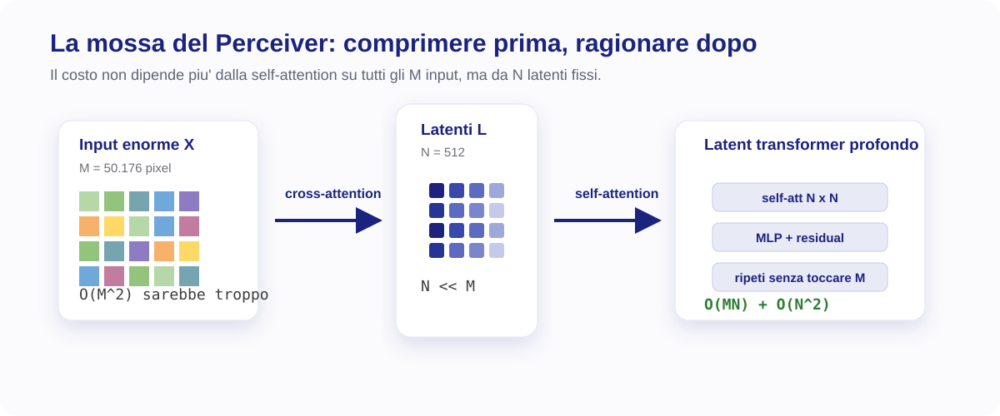
Idea chiave
Un solo modello per tutte le modalità, a costo lineare nell'input. Il prezzo: l'input va prima compresso in N ≪ M latenti. Tutto il resto dell'architettura discende da questa scelta.
Errori tipici
- «Lineare in M» non vuol dire «economico». La cross-attention costa ancora N × M: con M = 50.176 sono 25,7 milioni di numeri.
- O(M²) riguarda la matrice di attenzione. Anche una CNN è lineare in M: il suo limite non è il costo, è la griglia.
- N non dipende dall'input. Resta 512 anche se l'immagine raddoppia: è una scelta di progetto.
Autoverifica
Quanti numeri contiene la matrice di una self-attention su un'immagine 224×224?
M = 50.176 pixel, quindi M² ≈ 2,52 miliardi di numeri: circa 10 GB in float32, per un solo strato e una sola testa.
E con la cross-attention del Perceiver, con N = 512?
N × M = 512 × 50.176 ≈ 25,7 milioni di numeri. Il risparmio è M ÷ N = 98 volte.
Perché nel paper il Transformer di confronto lavora su immagini 64×64?
Perché a 224×224 la matrice M × M non entra in memoria. A 64×64 M = 4.096 e M² ≈ 16,8 milioni. Il risultato è 57,0%, contro il 78,0% del Perceiver (Tab. 1). A 96×96 i risultati erano simili, ma il training era più lento (p. 6).
Cosa vuol dire «disaccoppiare la profondità dalla dimensione dell'input»?
Dopo la cross-attention si lavora solo sugli N latenti. Ogni blocco in più costa O(N²), qualunque sia M: aggiungere strati non fa ripagare l'input.
Da quale compromesso fra CNN e Transformer nasce il Perceiver?
Le CNN costano poco ma presuppongono una griglia: servono conv 1D, 2D o 3D a seconda del dato. Il Transformer è generale ma quadratico. Il Perceiver è generale e lineare in M, grazie al collo di bottiglia dei latenti.
Dalla self- alla cross-attention
Capito il problema (O(M²)), vediamo concretamente come il Perceiver lo aggira. La chiave è una piccola modifica all'attention.
In 30 secondi
- Self-attention: Q, K e V vengono dallo stesso input. La matrice è M × M.
- Cross-attention: Q viene dai latenti (N), K e V dall'input (M). La matrice è N × M, rettangolare.
- L'uscita ha tante righe quante le query: N. È così che l'input viene compresso.
Ti serve prima
Si usa in
Self-attention: la versione classica
Nel Transformer standard, Query, Key e Value sono tutti calcolati dallo stesso input X. Ogni token "guarda" tutti gli altri token, e il risultato è una matrice di attenzione M×M (quadrata).
Cross-attention: l'asimmetria
Il Perceiver introduce un secondo array: i latenti L. E qui sta il trucco:
- Le Query Q vengono dai latenti L (sono solo N, pochi).
- Le Key K e i Value V continuano a venire dall'input X (sono M, tanti).
Il prodotto QKᵀ diventa una matrice rettangolare N×M. Il costo crolla da O(M²) a O(MN).
Rif. 1.2 · self-attention vs cross-attention
Da M×M a N×M
Passa da self-attention a cross-attention: cambia solo la sorgente delle query, ma la matrice smette di essere quadrata.
Self-attention: Q, K e V vengono dallo stesso input, quindi la matrice è M×M.
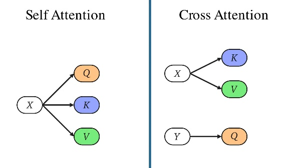
L'intuizione: Q, K, V come domanda-etichetta-contenuto
Memorizza
Q = una domanda ("cosa sto cercando?"). K = un'etichetta ("io rappresento questo"). V = il contenuto informativo. L'attenzione confronta ogni domanda con tutte le etichette e restituisce una media pesata dei contenuti più pertinenti.
Con i numeri
Le forme, una moltiplicazione alla volta (ImageNet)
- Input X: 50.176 righe (pixel) × 261 colonne (3 colori + 258 numeri di posizione, ).
- Latenti L: 512 righe × 1.024 colonne.
- Q = LN(L)·W_Q ha forma 512 × 261. LN è la LayerNorm: porta ogni riga a media 0 e varianza 1 (). W_Q è una matrice di pesi appresa, 1.024 × 261. 261 è il minimo fra i canali dell'input (261) e dei latenti (1.024). K = LN(X)·W_K e V = LN(X)·W_V hanno forma 50.176 × 261.
- Q·Kᵀ: (512 × 261) · (261 × 50.176) = 512 × 50.176. Una riga per latente, una colonna per pixel.
- Softmax su ogni riga, poi A·V: (512 × 50.176) · (50.176 × 261) = 512 × 261. Il numero di pixel è sparito.
- Nel nostro CIFAR-10 (e01): Q 96 × 261, K e V 1.024 × 261, matrice 96 × 1.024 = 98.304 numeri, uscita 96 × 261.
I latenti non sono input, sono parametri
Punto cruciale: i latenti L ∈ ℝ^(N×D) sono parametri appresi del modello, NON derivano dall'input. Sono "unità di memoria" — una base compatta che il modello usa per riassumere qualsiasi cosa gli si dia in pasto. Sono uguali per ogni esempio del batch e cambiano solo durante il training, mai durante l'inferenza.
| Aspetto | Self-Attention | Cross-Attention (Perceiver) |
|---|---|---|
| Sorgente Q | Input X (M token) | Latenti L (N latenti) |
| Sorgente K, V | Input X (M token) | Input X (M token) |
| Matrice attenzione | M×M (quadrata) | N×M (rettangolare) |
| Complessità | O(M²) | O(MN), con N≪M |
Idea chiave
La cross-attention è un piccolo gruppo di N latenti che "interroga" gli M elementi dell'input. L'asimmetria N ≪ M è ciò che rompe la quadraticità del Transformer.
Errori tipici
- «Cross» non vuol dire «fra due modalità». Vuol dire che le query vengono da un array e chiavi e valori da un altro.
- Il latent array iniziale non dipende dall'immagine: è uguale per tutte. I latenti diventano diversi solo dopo aver letto l'input.
- La forma dell'uscita la decide chi fa le domande. È la stessa idea del decoder di Perceiver IO ().
Autoverifica
Da dove vengono Q, K e V nella cross-attention del Perceiver?
Q dai latenti (N × D). K e V dall'input (M × C_tot).
Che forma ha la matrice di attenzione e cosa rappresenta una riga?
N × M. Una riga dice come un latente distribuisce la sua attenzione sugli M elementi: i numeri sono fra 0 e 1 e sommano a 1.
Quante righe ha l'uscita della cross-attention? Perché conta?
N, quante le query. Con 50.176 pixel in ingresso escono comunque 512 righe: è il collo di bottiglia.
I latenti dipendono dall'immagine?
Il latent array iniziale no: è un parametro appreso, uguale per ogni esempio. Dopo la cross-attention i latenti contengono l'informazione letta da quell'immagine.
Perché la stessa idea serve anche al decoder di Perceiver IO?
Perché la forma dell'uscita la decidono le query. Nel decoder le O query di output interrogano i latenti: l'uscita ha O righe, una per ogni risposta richiesta.
L'architettura in tre stadi
Hai capito il principio (cross-attention con latenti). Adesso vediamo come è organizzata l'intera rete.
In 30 secondi
- Tre stadi: la cross-attention legge l'input, il latent transformer ragiona sui latenti, la testa fa la media e classifica.
- ImageNet: M = 50.176, C_tot = 261, N = 512, D = 1.024. Otto letture, ognuna seguita da 6 blocchi latenti: 48 blocchi in tutto.
- Il modello ha 44,9 milioni di parametri e costa 707 miliardi di FLOPs per immagine (Tab. 7). FLOPs = operazioni in virgola mobile. Il paper conta moltiplicazioni e somme a parte: 707 miliardi di FLOPs sono circa 353 miliardi di MAC (una moltiplicazione più una somma).
Ti serve prima
Si usa in
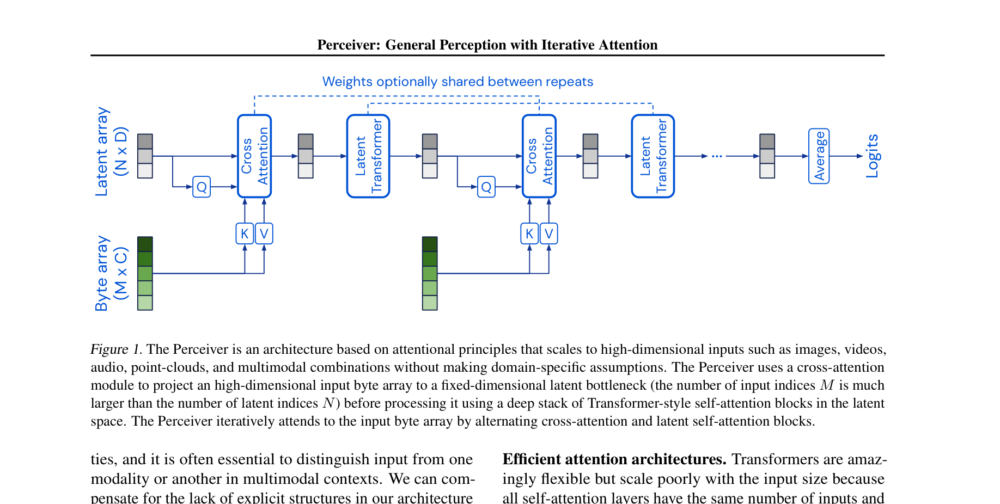
Rif. 1.3 · architettura generale
M×C_tot → N×D → N×D → D → 1000
Segui il pacchetto dati: il restringimento vero avviene subito, da M=50.176 input a N=512 latenti.
Forma attiva50.176×261
Costo pesanteO(MN)
Messaggiocomprimere prima
Il byte array enorme viene letto dai latenti: la profondità successiva lavora su N, non su M.
I tre stadi
- Encoder a cross-attention: legge l'input enorme
X ∈ ℝ^(M×C_tot)e lo comprime nel latent arrayL ∈ ℝ^(N×D). - Latent transformer: raffina L con self-attention profonda, interamente nello spazio compresso (N×D).
- Testa di pooling + classificazione: aggrega gli N latenti finali e produce i logit per le classi.
Il blocco (encoder + latent transformer) viene poi ripetuto T volte: il modello "rilegge" l'input più volte, raffinando progressivamente i latenti. Vedremo questa ricorrenza al .
Le due proprietà che lo definiscono
Da questa scelta architettonica discendono i due tratti distintivi del Perceiver:
- La stessa architettura gestisce modalità diverse (immagini, audio, point cloud, ...). Cambiano la tabella d'ingresso e alcuni iperparametri: su ModelNet40 il paper usa 2 letture invece di 8; su AudioSet 2 letture, 8 blocchi per lettura e niente sharing.
- La profondità della rete è disaccoppiata dalla lunghezza dell'input: puoi impilare layer nel latent transformer senza che il costo cresca con M.
I numeri di ImageNet (da tenere a mente)
Questi sono i valori usati nel paper per la configurazione ImageNet — li incontrerai in tutto il forward pass:
| Simbolo | Valore | Significato |
|---|---|---|
M | 50.176 | pixel di input (224×224) |
C | 3 | canali grezzi (RGB) |
C_tot | 261 | canali per pixel dopo Fourier (3 RGB + 258 Fourier) |
N | 512 | numero di latenti (N ≪ M) |
D | 1024 | dimensione di ogni latente |
d_QKV | 261 | dim. interna cross-attention = min(D, C_tot) |
T | 8 | iterazioni con weight sharing |
ℓ | 6 | self-attention per blocco del latent transformer (48 in tutto) |
H | 8 (?) | teste della self-attention: il paper non lo dice per il modello principale; 8 è il valore del modello piccolo delle ablazioni (App. B) e del nostro codice |
r | 1 | fattore dell'MLP: hidden = D, nessun allargamento (p. 6 e 17). Il nostro codice usa 4 |
K | 64 | bande di frequenza Fourier per asse |
Con i numeri
Da dove vengono i 44,9 milioni di parametri
- Latent array: 512 × 1.024 = 524.288 numeri appresi.
- Una cross-attention (d_QKV = 261, MLP con fattore 1) ha 2.775.612 parametri. Le distinte sono 2: la prima e quella condivisa dalle letture 2–8. Totale 5.551.224.
- Un blocco di self-attention (D = 1.024, MLP con fattore 1) ha 6.298.624 parametri. I blocchi distinti sono 6, riusati a ogni lettura: 37.791.744.
- Classificatore: 1.024 × 1.000 pesi + 1.000 bias = 1.025.000.
- Somma: 524.288 + 5.551.224 + 37.791.744 + 1.025.000 = 44.892.256, cioè 44,9 M: il numero della Tab. 7. L'84% sta nei 6 blocchi latenti.
- Senza weight sharing servirebbero 8 cross-attention e 48 blocchi: 326.088.136 parametri. I FLOPs sono gli stessi: 707 miliardi. È un conto nostro, senza bias su Q, K e V come nel nostro codice; il paper dà solo i totali. Con il bias anche su Q, K e V vengono 44.912.254 e 326.241.856: proprio i 44,9 M e 326,2 M della Tab. 7.
calcolatrice · stesse formule del codice del progetto
Parametri e costi di qualunque Perceiver
Scegli una configurazione o cambia i numeri. I parametri delle run coincidono all'unità con quelli contati da PyTorch.
Idea chiave
Tre stadi: encoder (cross-att comprime) → latent transformer (self-att raffina nei latenti) → pooling + classificatore. Il blocco encoder+transformer si ripete T=8 volte con weight sharing.
Errori tipici
- «T = 8» non vuol dire 8 blocchi. Sono 8 letture dell'input, ognuna seguita da 6 blocchi: 48 blocchi eseguiti.
- Il paper non dice quante teste ha la self-attention del modello principale. 8 è il valore del modello piccolo delle ablazioni.
- L'MLP del paper non allarga (fattore 1). Il nostro codice usa 4, come GPT-2: è una differenza da dichiarare.
Autoverifica
Quali sono i tre stadi del Perceiver e che forma ha il dato dopo ciascuno?
Cross-attention: da 50.176 × 261 a 512 × 1.024. Latent transformer: resta 512 × 1.024. Testa: media sui latenti (un vettore da 1.024), poi Linear verso 1.000 logit.
Quanti blocchi di self-attention esegue il modello ImageNet, e quanti sono distinti?
8 letture × 6 blocchi = 48 esecuzioni. Con il weight sharing i blocchi distinti sono solo 6.
Quanti parametri ha il modello del paper, e dove stanno?
44,9 M. Circa 37,8 M, l'84%, stanno nei 6 blocchi latenti. Le due cross-attention ne hanno 5,6 M, il classificatore 1 M, i latenti 0,5 M.
Come cambia la configurazione nel tuo e01?
M = 1.024 (CIFAR-10, 32×32), N = 96, D = 384, 4 letture, 4 blocchi per lettura, MLP con fattore 4. Totale 10.175.362 parametri.
Input: il byte array
Iniziamo il forward pass. Il primo passo è trasformare un input grezzo (un'immagine, un waveform, un point cloud) in un formato che il Perceiver possa digerire uniformemente.
In 30 secondi
- Ogni input diventa una tabella M × C: M elementi, C numeri per ciascuno.
- ImageNet: 50.176 × 3. CIFAR-10: 1.024 × 3. Il nostro ModelNet40: 2.048 × 3. Il nostro testo: 512 × 257.
- Nella tabella la posizione si perde. La rimette il .
Ti serve prima
Si usa in
Input→
Fourier→
Latenti→
Cross-Att→
Latent Tr.→
×T→
Pooling
Rappresentazione uniforme: M × C
Qualsiasi input viene "appiattito" in un byte array di forma M × C: M elementi, ciascuno con C canali. È una rappresentazione uniforme: lo stesso formato per ogni modalità — è da qui che nasce la generalità del Perceiver.
- Immagine RGB 224×224: M = 224×224 = 50.176 pixel, C = 3 (R, G, B).
- Audio: il segnale si taglia in pezzi. Nel paper 61.440 campioni (1,28 s a 48 kHz) diventano 480 pezzi da 128: M = 480, C = 128.
- Video: nel paper 32 frame 224×224 si tagliano in pezzi 2×8×8 (2 frame, 8×8 pixel): M = 12.544.
- Point cloud: M = numero di punti, C = 3 (coordinate x, y, z).
Nessun modulo specifico per dominio: niente convoluzioni. Tutto è ridotto a una matrice di numeri. L'input però si può preparare in modi diversi: per l'audio il paper prova sia il segnale grezzo (38,3 mAP) sia il mel-spectrogram (38,4 mAP), una rappresentazione tempo-frequenza (Tab. 3).
ImageNet: come si arriva al byte array
Per un'immagine RGB 224 × 224:
- Ogni pixel è rappresentato da 3 valori (canali RGB).
- L'immagine può essere vista come matrice
[224 × 224] (M) × [3] (C). - Il numero totale di pixel è
224 × 224 = 50.176. - Il numero totale di valori (byte) è
224 × 224 × 3 = 150.528.
L'immagine viene poi "linearizzata" (semplice reshape della griglia in una sequenza):
Byte Array = [ r₁, g₁, b₁, r₂, g₂, b₂, …, r₅₀₁₇₆, g₅₀₁₇₆, b₅₀₁₇₆ ]
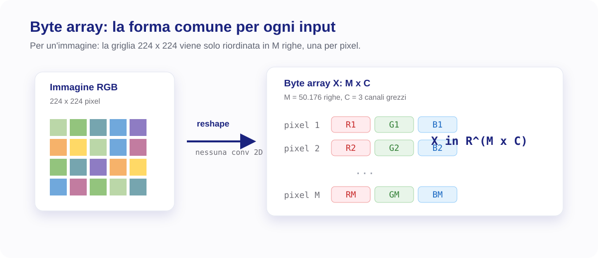
Rif. 1.4.1 · byte array
Sorgenti diverse, stessa matrice M×C
Cambia la modalità a sinistra: immagine, audio e point cloud diventano comunque una sequenza di righe numeriche.
Un'immagine 2D viene linearizzata riga per riga: la struttura griglia non è più nel formato, va aggiunta con Fourier features.
Checkpoint dimensioni — fine del capitolo
A questo punto abbiamo l'immagine cruda organizzata come matrice:
| Oggetto | Forma simbolica | ImageNet | Contenuto di una riga |
|---|---|---|---|
| Byte array (grezzo) | M × C | 50.176 × 3 | R, G, B del pixel |
È solo il contenuto "cromatico" dei pixel. Manca l'informazione posizionale: questo byte array da solo, dato al Perceiver, non distinguerebbe due immagini che differiscono solo per una permutazione dei pixel. La prossima sezione aggiunge la posizione tramite Fourier features.
Con i numeri
Cinque input, una sola forma
- Immagine CIFAR-10: 32 × 32 = 1.024 pixel con 3 colori. Tabella 1.024 × 3 = 3.072 numeri.
- Immagine ImageNet: 224 × 224 = 50.176 pixel. Tabella 50.176 × 3 = 150.528 numeri.
- Nuvola di punti del nostro ModelNet40: 2.048 punti con x, y, z. Tabella 2.048 × 3.
- Testo del nostro MLM: 512 byte. Ogni byte è un vettore one-hot (tutti zeri tranne un 1) lungo 257: 256 valori possibili più il simbolo [MASK]. Tabella 512 × 257.
- Video di AudioSet nel paper: 32 fotogrammi 224×224 tagliati in pezzi 2×8×8. Sono 16 × 28 × 28 = 12.544 elementi.
- In tutti i casi il modello vede solo righe di numeri. Se mescoli le righe, la tabella contiene le stesse informazioni: per questo serve la posizione.
Idea chiave
Il byte array M × C è la lingua franca del Perceiver: qualunque sia la modalità di input (immagine, audio, video, point cloud), tutto finisce qui. Da questo formato uniforme nasce la generalità del modello.
Errori tipici
- «Byte array» è un nome storico. Le righe contengono numeri reali, non byte da 8 bit.
- M conta gli elementi, non i valori: 224 × 224 × 3 = 150.528 valori, ma M = 50.176.
- Il reshape da griglia a tabella non aggiunge niente: toglie l'informazione su chi è vicino a chi.
Autoverifica
Che forma ha il byte array di un'immagine ImageNet? E di una CIFAR-10?
50.176 × 3 e 1.024 × 3.
Cosa si perde passando dalla griglia alla tabella?
La vicinanza: il modello non sa più quali pixel stanno accanto. Va rimessa con la codifica di posizione.
Come diventa un byte array il testo nel tuo progetto?
512 byte, ognuno one-hot lungo 257 (256 byte + [MASK]), più 13 canali di Fourier per la posizione: tabella 512 × 270.
Perché avere un solo formato è così importante?
Perché la stessa architettura legge immagini, audio, nuvole di punti e testo. Cambiano come si costruisce la tabella e alcuni iperparametri (letture, blocchi), non lo schema.
Positional encoding: le Fourier features
Il byte array dice cosa contiene ogni elemento, ma non dove si trova. È un problema, perché l'attention è cieca alla posizione. Le Fourier features risolvono il problema in modo elegante.
In 30 secondi
- Ogni coordinata, portata in [−1, 1], diventa: se stessa + K seni + K coseni, con frequenze da 1 a f_max.
- Con 2 assi e K = 64 bande: 2 · (2·64 + 1) = 258 numeri di posizione. Con i 3 colori: 261 canali per pixel.
- Si concatenano all'input, non si sommano. f_max è Nyquist: 112 su ImageNet, 16 su CIFAR-10.
Ti serve prima
Si usa in
Input→
Fourier→
Latenti→
Cross-Att→
Latent Tr.→
×T→
Pooling
Il problema: l'attention è cieca alla posizione
Un pixel con valore [R, G, B] contiene solo informazione di colore, ma non contiene informazione di posizione. Senza posizione, il modello non potrebbe distinguere due immagini identiche ma traslate, né accorgersi che permutare i pixel cambia l'immagine.
Per il Transformer su testo, il problema è risolto con sinusoidi sommate agli embedding. Per il Perceiver — che lavora su modalità arbitrarie — serve una soluzione più flessibile.
La soluzione: Fourier features
Le Fourier features sono una tecnica di mappatura che trasforma una posizione scalare (o vettoriale) x in uno spazio ad alta dimensione applicando seno e coseno a K frequenze diverse.
Formalmente, per ogni dimensione spaziale d, dato il valore di coordinata x_d ∈ [-1, 1]:
PE(x_d) = [ sin(f₁·π·x_d), cos(f₁·π·x_d), …, sin(f_K·π·x_d), cos(f_K·π·x_d), x_d ]
cioè: 2K valori sinusoidali (K frequenze, ognuna con sin e cos) + 1 coordinata grezza. Le basse frequenze catturano posizioni globali ("metà sinistra vs destra"), le alte catturano posizioni precise.
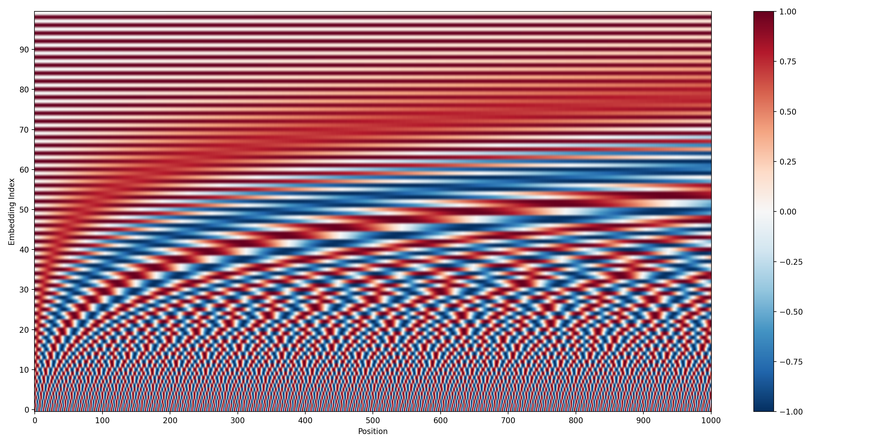
Tre scelte di design da memorizzare
1. Frequenze equispaziate (non esponenziali come NeRF)
Le frequenze f_k sono equispaziate (linearly spaced) tra 1 e μ/2, dove μ/2 è la frequenza di Nyquist corrispondente al sampling rate di riferimento. Per ImageNet 224×224: μ = 224, μ/2 = 112.
NeRF (Mildenhall et al., 2020) usa invece frequenze esponenziali: f_k = 2^k. Perché il Perceiver non le usa?
Citazione dal paper (App. D)
"la parametrizzazione NeRF produce frequenze molto alte anche con un numero moderato di bande — ad esempio la 64-esima banda avrebbe frequenza 2⁶⁴ ≈ 1.8×10¹⁹". Con K=64 bande, NeRF darebbe numeri ingestibili. Il paper riporta instabilità di training già oltre k≈15 con la parametrizzazione esponenziale.
2. Si concatena anche la coordinata grezza x_d
Le Fourier features (sin/cos) sono periodiche: frequenze alte possono mappare posizioni diverse nello stesso valore (ambiguità). Concatenando il valore grezzo x_d (che è unico per ogni posizione), il modello ha sempre accesso alla posizione esatta, senza ambiguità.
Le sinusoidi forniscono sensibilità multi-scala; il valore grezzo fornisce l'identità posizionale.
3. Si concatena al colore, non si somma
Perché concatenare e non sommare? Perché la concatenazione preserva l'informazione di colore e posizione separatamente, mentre la somma le mescolerebbe in modo ambiguo. I Transformer per il linguaggio invece sommano il positional encoding agli embedding — il Perceiver fa la scelta opposta.
Il calcolo di C_tot = 261
Esempio concreto: un pixel rosso in posizione (0.3, 0.7)
- Canali RGB:
[255, 0, 0](normalizzati:[1.0, 0, 0]). - Posizione normalizzata:
(x, y) = (0.3, 0.7). - Fourier per x = 0,3 con 3 frequenze equispaziate, come nel Perceiver (f₁ = 1, f₂ = 2, f₃ = 3). L'ordine è quello della formula: prima i seni e i coseni, in fondo x:
[sin(0.3π), cos(0.3π), sin(0.6π), cos(0.6π), sin(0.9π), cos(0.9π), 0.3] = [0.809, 0.588, 0.951, -0.309, 0.309, -0.951, 0.3]
- Analogamente per y=0.7.
- Vettore finale:
[1.0, 0, 0, 0.3, 0.809, …, 0.7, …] ∈ ℝ²⁶¹
Con i numeri
Un pixel vero di CIFAR-10: riga 0, colonna 16
- Le coordinate vanno da −1 a +1 con 32 valori, cioè 31 passi da 2/31. Riga 0 → y = −1. Colonna 16 → x = −1 + 2·16/31 = 0,032.
- Le 64 frequenze sono equispaziate da 1 a 16: f₁ = 1, f₂ ≈ 1,238, …, f₆₄ = 16.
- Banda 1 per x: sin(π · 1 · 0,032) = 0,101 e cos = 0,995. Onda lenta: descrive la posizione globale.
- Banda 64 per x: sin(π · 16 · 0,032) = 0,999 e cos = −0,051. Onda veloce: cambia molto da un pixel all'altro.
- Il vicino a destra (colonna 17, x = 0,097): la banda 1 passa da 0,101 a 0,299, un cambio piccolo. La banda 64 passa da 0,999 a −0,988: quasi l'opposto. Le bande alte distinguono i vicini, quelle basse danno la zona.
- Totale per il pixel: 2 coordinate + 64 bande × 2 funzioni × 2 assi = 2 + 256 = 258 numeri. Con R, G, B: 261.
calcolatrice · stesso ordine di FourierPositionalEncoding
Le Fourier features di un pixel, numero per numero
Scegli un pixel, il numero di bande e la frequenza massima. Guarda l'onda della banda scelta e tutti i 258 valori del pixel.
Checkpoint dimensioni — fine del capitolo
Dopo l'aggiunta delle Fourier features, ogni pixel è descritto da C_tot=261 numeri invece di C=3:
| Oggetto | Forma | ImageNet | Contenuto |
|---|---|---|---|
| Byte array (grezzo) | M × C | 50.176 × 3 | RGB |
| Byte array X (con Fourier PE) | M × C_tot | 50.176 × 261 | 3 RGB + 258 Fourier |
Idea chiave
Le Fourier features danno al modello la posizione. L'attention tratta l'input come un insieme: l'ordine delle righe non conta. Se la posizione è scritta dentro ogni riga, permutare le righe non toglie niente: riga e posizione restano insieme. Servono tutte e due le cose. Le Fourier features da sole non bastano: con le stesse features, ResNet-50 scende da 73,5% a 39,4% sui pixel permutati; il Perceiver resta a 78,0% (Tab. 2). Una CNN infatti deduce la posizione dai vicini sulla griglia: permutare i pixel le cambia i vicini. Lo vedremo concretamente al .
Errori tipici
- Le frequenze del Perceiver sono equispaziate (1, …, μ/2), non potenze di 2 come in NeRF.
- K = 64 non vuol dire 64 canali: sono 2K + 1 = 129 canali per asse, 258 per due assi.
- Oltre Nyquist una banda fa più di mezza oscillazione fra due pixel vicini: non porta informazione nuova (aliasing).
- Nel paper le coordinate sono quelle del ritaglio 224×224. Usare quelle dell'immagine intera dava overfitting (p. 6).
Autoverifica
Quanti canali ha un pixel ImageNet dopo le Fourier features? Fai il conto.
3 + 2 · (2·64 + 1) = 3 + 258 = 261.
Perché la frequenza massima su ImageNet è 112?
È la frequenza di Nyquist: con 224 campioni per asse non si può rappresentare un'onda più veloce di 112 oscillazioni.
Perché si aggiunge anche la coordinata grezza?
Seni e coseni sono periodici: posizioni diverse possono dare lo stesso valore. La coordinata grezza è unica per ogni posizione.
Perché concatenare e non sommare?
Concatenando, colore e posizione restano in canali separati e il modello li legge senza confonderli. Il paper concatena (p. 5); i modelli di linguaggio di solito sommano.
Cosa hanno misurato i tuoi e23–e26?
K = 4 → 66,39% e K = 16 → 62,58%: fuori banda, con training instabile (all'ultima epoca 22,5% e 55,5% in validation). f_max = 8 → 69,50% e 64 → 72,41%: dentro la banda. Nel paper (Fig. 6) più bande e f_max fino a Nyquist aiutano, ma di poco.
Quanti canali ha un punto 3D nel tuo ModelNet40?
3 + 3 · (2·6 + 1) = 42. Il codice usa 6 bande invece delle 64 del paper: è una differenza dichiarata.
Il latent array
Adesso abbiamo l'input pronto (byte array + Fourier). Manca l'altro protagonista: il latent array, che la cross-attention metterà in comunicazione con l'input.
In 30 secondi
- Il latent array è una matrice di parametri: 512 × 1.024 nel paper, 96 × 384 nel nostro e01.
- Parte da valori piccoli: normale troncata con media 0 e deviazione standard 0,02.
- È uguale per ogni immagine. Diventa diverso solo dopo aver letto l'input.
Ti serve prima
Si usa in
Input→
Fourier→
Latenti→
Cross-Att→
Latent Tr.→
×T→
Pooling
Una matrice di parametri appresi
Il latent array L ∈ ℝ^(N×D) è una matrice di N vettori latenti. Per ImageNet: 512 × 1024. È interamente appresa: sono parametri del modello, esattamente come i pesi di una conv layer o di un linear layer.
- N = numero di latenti (slot, "unità di memoria"). Per ImageNet: 512.
- D = dimensione del canale/embedding di ogni latente. Per ImageNet: 1024.
Questi vettori non derivano direttamente dall'input e non hanno legame spaziale con token/pixel specifici: sono una base compatta che il modello usa per riassumere l'input.
Attenzione
I latenti sono uguali per ogni esempio del batch e cambiano solo durante il training (mai durante l'inferenza). Pensali come una base compatta condivisa, non come un input.
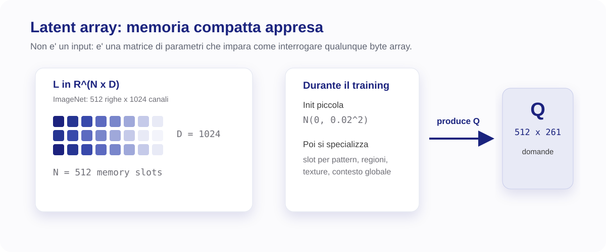
Rif. 1.4.4 · latent array
Quanto è piccolo N rispetto a M?
Il bottleneck non è un dettaglio: per ImageNet i latenti sono circa l'1% degli elementi di input.
Input M = 50.176
50.176
Latenti N = 512
1,02%
La cross-attention paga
N×M, poi tutto il ragionamento profondo resta nello spazio N×D.Inizializzazione: piccolo è meglio
Ogni elemento di L è campionato da una gaussiana stretta:
L_ij ~ 𝒩(0, 0.02²), troncata a ±2σ = ±0.04
I valori partono quasi tutti minuscoli (~±0.02). Perché così piccoli?
- Perché piccoli? Il paper non lo spiega. Mostra solo che 0,02 va un po' meglio di 0,01 e di 1,0 (Fig. 6: 72,6 contro 72,0 e 71,4) e che il modello è abbastanza robusto alla scala (p. 17). Non è per i punteggi
QKᵀ: prima di W_Q c'è una LayerNorm, che cancella la scala dei latenti. La scala conta nella somma residua L' = L + Z': con σ grande il valore iniziale pesa più di ciò che viene letto (ipotesi nostra, non del paper). - Neutralità: media zero significa che nessun latente ha un "vantaggio" iniziale su un altro.
- Troncamento: i valori oltre il limite vengono scartati e ricampionati. Il paper scrive «truncation bounds [-2, 2]» (p. 17). Il nostro codice li legge come ±2σ: con σ = 0,02 nessun valore supera 0,04. Presi alla lettera, ±2 sarebbero 100σ e non taglierebbero niente.
- Specializzazione graduale: partendo da valori piccoli, i latenti si differenziano durante il training, perché imparano a leggere parti diverse dell'input. È un'intuizione, non una misura. Le nostre mappe (, prima serie di run) mostrano solo che l'attenzione si localizza quando c'è la posizione. Nel paper le mappe delle letture successive hanno un motivo a quadretti («tartan») legato alle Fourier features (Fig. 3).
I due array che si incontrano
A questo punto abbiamo gli ingredienti che la cross-attention combinerà:
| Oggetto | Forma | ImageNet | Natura |
|---|---|---|---|
| Byte array X | M × C_tot | 50.176 × 261 | input (3 RGB + 258 Fourier) |
| Latent array L | N × D | 512 × 1024 | parametri appresi, init 𝒩(0, 0.02²) troncata |
Osservazioni chiave:
- Le due matrici hanno dimensione-feature diversa (261 vs 1024). Sarà la cross-attention a farle incontrare in uno spazio comune (
d_QKV = min = 261). - Il numero di righe è molto diverso (50.176 vs 512): è questa asimmetria che dà
O(MN)invece diO(M²). - Il vincolo fondamentale:
N ≪ M. Qui N/M = 512/50.176 ≈ 1%.
Con i numeri
Quanto pesa, quanto è piccolo, cosa succede se lo inizializzi male
- Paper: 512 × 1.024 = 524.288 numeri, l'1,2% dei 44,9 M parametri.
- Nostro e01: 96 × 384 = 36.864 numeri, lo 0,36% dei 10.175.362 parametri.
- Rapporto N ÷ M: nel paper 512 ÷ 50.176 = 1,02%; nel nostro CIFAR-10 96 ÷ 1.024 = 9,4%.
- Senza taglio il 95% dei valori starebbe fra −0,04 e +0,04 (due deviazioni standard). Con il taglio a ±2σ del nostro codice ci stanno tutti.
- Nostri esperimenti: σ = 0,1 → 65,69% (−5,94, fuori banda); σ = 1,0 → 52,08% (−19,55).
- Nel paper (Fig. 6): σ = 0,02 → 72,6%, σ = 1,0 → 71,4%, e con σ = 0,1 il training diverge. Valori piccoli sono la scelta sicura in entrambi i casi.
Idea chiave
I latenti sono parametri, non dati. Il loro numero N è fisso e piccolo (512). Il loro contenuto è imparato dal training. È questa asimmetria N ≪ M a dare al Perceiver tutta la sua efficienza.
Errori tipici
- I latenti non sono le query. Le query sono LN(L)·W_Q: il latent array è il punto di partenza.
- N non dipende da M. È un iperparametro: cambiare immagine non cambia N.
- Piccolo non vuol dire zero. Con tutti zeri i latenti sarebbero identici: farebbero la stessa domanda e riceverebbero lo stesso gradiente, per sempre.
Autoverifica
Che forma ha il latent array nel paper e nel tuo e01?
512 × 1.024 e 96 × 384.
Il latent array cambia da un'immagine all'altra?
No. È un parametro: cambia solo durante il training. Cambiano i latenti dopo la cross-attention.
Come è inizializzato e perché con valori piccoli?
Normale troncata, media 0, deviazione standard 0,02 (p. 17). Il paper scrive «truncation bounds [-2, 2]»; il nostro codice li legge come ±2σ = ±0,04. Perché piccoli: il paper non lo spiega, mostra solo che 0,02 va un po' meglio di 0,01 e di 1,0 (Fig. 6). Non serve a moderare QKᵀ: la LayerNorm prima di W_Q cancella la scala.
Cosa è successo nei tuoi esperimenti cambiando la scala d'inizializzazione?
σ = 0,1: 65,69%. σ = 1,0: 52,08%. Entrambi fuori banda rispetto al 71,63% di e01. Nel paper σ = 1,0 costa poco (71,4 contro 72,6) e σ = 0,1 fa divergere il training.
Il blocco di cross-attention
Il cuore del Perceiver. Vediamo passo per passo come gli N latenti "leggono" gli M elementi dell'input. È il capitolo più tecnico della lezione.
In 30 secondi
- LayerNorm, poi Q dai latenti e K, V dall'input, tutti con d_QKV = min(C_tot, D) = 261 canali.
- Punteggi Q·Kᵀ divisi per √261 ≈ 16, softmax su ogni riga, media pesata dei V. Poi proiezione a D, residual e MLP.
- L'uscita ha la stessa forma dei latenti (512 × 1.024): il blocco si può ripetere.
Ti serve prima
Si usa in
Input→
Fourier→
Latenti→
Cross-Att→
Latent Tr.→
×T→
Pooling
Rif. 1.4.5 · Cross-Attention Block
LayerNorm → Q/K/V → scores → softmax → A·V → residual → MLP
Segui il blocco come una catena: ogni step conserva le forme corrette e prepara quello successivo.
LayerNorm pre-attention: normalizza X e L prima delle proiezioni.
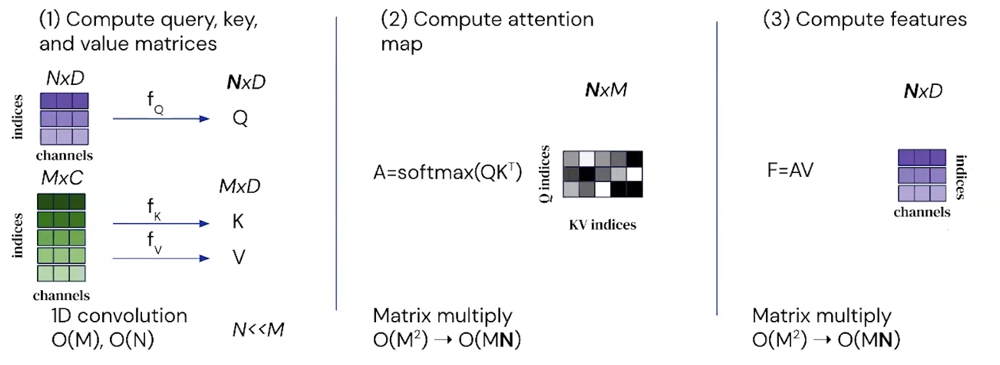
Passo 1 — LayerNorm pre-attention
Prima di ogni cosa, entrambi gli array (X e L) attraversano una LayerNorm. La LN normalizza ogni riga (ogni pixel, ogni latente) a media 0 e varianza 1, poi applica due parametri appresi γ e β. Niente di magico: stabilizza i valori che entrano nell'attention.
\hat{x}_j = γ_j · \frac{x_j - μ}{\sqrt{σ^2 + ε}} + β_j \qquad (ε ≈ 10⁻⁵)
μ e σ² sono media e varianza dei valori della riga. ε è un numero minuscolo che evita di dividere per zero. Un esempio con 4 numeri è nel .
Pre-norm
Il Perceiver usa il pattern pre-norm (paper App. C): la LN è applicata prima del blocco (non dopo). Così il residuo resta un percorso "pulito" su cui il gradiente fluisce senza attraversare la LN ⇒ training stabile su reti profonde. Lo stesso schema di GPT-2.
Passo 2 — dimensione interna d_QKV
Q, K, V devono avere la stessa dimensione-feature per poter fare il prodotto QKᵀ. Si sceglie:
d_QKV = min(D, C_tot) = min(1024, 261) = 261
Perché il minimo? L'input ha già solo 261 canali: una proiezione lineare 261→1024 ha rango ≤ 261, quindi produrrebbe sì 1024 feature ma solo 261 linearmente indipendenti — le altre sono ridondanti. Espandere non può creare informazione che non c'è: sarebbe solo spreco di parametri e FLOPs. Scegliere il minimo tiene Q, K, V in dimensione compatta e usa 1024 solo dove serve davvero (lo spazio dei latenti).
Passo 3 — proiezioni Q, K, V
Tre matrici di pesi apprese, senza bias (così nel nostro codice; il paper non entra nel dettaglio):
Q = L̃ · W_Q, W_Q ∈ ℝ^(D × d_QKV) = ℝ^(1024 × 261) ⇒ Q ∈ ℝ^(512 × 261) (dai latenti)
K = X̃ · W_K, W_K ∈ ℝ^(C_tot × d_QKV) = ℝ^(261 × 261) ⇒ K ∈ ℝ^(50.176 × 261) (dall'input)
V = X̃ · W_V, W_V ∈ ℝ^(C_tot × d_QKV) = ℝ^(261 × 261) ⇒ V ∈ ℝ^(50.176 × 261) (dall'input)
Le matrici W sono apprese: imparano a produrre query, key e value "ottimali" per il matching (riduzione di feature rumorose, ecc.). Il paper non dice come sono inizializzate; il nostro codice usa l'inizializzazione di default di PyTorch (uniforme, con scala 1/√fan_in). Da non confondere: questi sono i pesi delle proiezioni; i latenti L () usano invece la gaussiana stretta 𝒩(0, 0.02²) — oggetti diversi: matrici di proiezione vs parametri-memoria.
L'asimmetria chiave: Q ha poche righe (N=512), K e V ne hanno tante (M=50.176). Stessa dimensione-feature (261), ma forma molto diversa. È da qui che nascerà la matrice rettangolare N×M.
Passo 4 — scaled dot-product attention
Quattro operazioni combinano Q, K, V:
(a) score: S = Q · Kᵀ ∈ ℝ^(512 × 50.176)
(b) scaling: S' = \frac{S}{√d_QKV} = \frac{S}{√261} ≈ \frac{S}{16}
(c) softmax: A_ij = \frac{e^(S'_ij)}{Σₖ e^(S'_ik)} ∈ ℝ^(512 × 50.176)
(d) aggregazione: F = A · V ∈ ℝ^(512 × 261)
(a) Score: prodotto QKᵀ
Misuriamo la compatibilità tra ogni query e ogni key. Due vettori allineati ⇒ score alto. Due vettori in direzioni diverse ⇒ score basso. La matrice risultante è 512×50.176: ogni riga è un latente, ogni colonna un pixel, e l'entry (i,j) dice "quanto il latente i trova interessante il pixel j".
(b) Perché lo scaling per √d_QKV?
Senza scaling, gli score avrebbero deviazione standard ≈ √d_QKV ≈ 16. Perché proprio √d? È l'ipotesi del paper del Transformer: le componenti di q e k sono indipendenti, con media 0 e varianza 1. Allora il prodotto scalare q·k = Σᵢ qᵢkᵢ somma d_QKV = 261 termini a varianza 1, e le varianze di termini indipendenti si sommano ⇒ Var ≈ 261, quindi std ≈ √261 ≈ 16. La LayerNorm non basta a garantirlo: normalizza le righe di L e di X, ma la varianza di Q e K dipende anche da W_Q e W_K. Senza correzione la softmax saturerebbe (tutta la massa su un solo pixel) e i gradienti si annullerebbero. Si divide per √d_QKV (non per d_QKV!) così la deviazione standard torna a ~1: la scala giusta per una softmax morbida.
(c) Softmax per riga
La softmax (applicata indipendentemente a ciascuna riga) trasforma score reali in probabilità: tutti i valori in [0,1], sommano a 1 su ogni riga. Ogni latente ottiene così un "budget di attenzione" da distribuire sui 50.176 pixel.
(d) Aggregazione: F = A·V
Ogni latente diventa una media pesata dei Value dell'input, secondo i pesi A calcolati nello step (c). Output: F ∈ ℝ^(512 × 261).
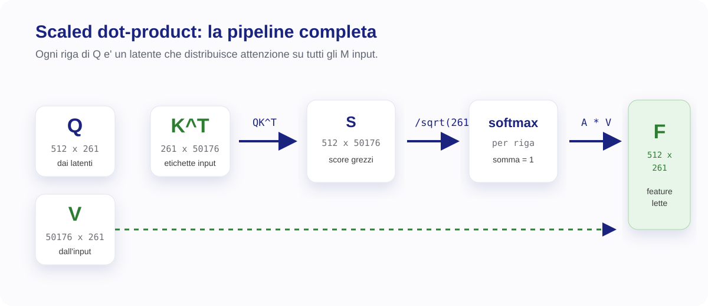
Con i numeri
L'attenzione con numeri veri: 2 latenti, 4 pixel
- Quattro pixel. Qui i numeri di un vettore sono separati da punto e virgola. Chiavi (quanto è rosso; dove sta): k₁ = (1; −1) e k₂ = (1; −0,8) rossi a sinistra; k₃ = (−1; 0,9) e k₄ = (−1; 1) blu a destra. Valori (quanto rosso; quanto blu): v₁ = (1; 0), v₂ = (0,9; 0,1), v₃ = (0; 1), v₄ = (0,1; 0,9).
- Due latenti fanno una domanda: q₁ = (2; 0) «cerco il rosso»; q₂ = (0; 2) «cerco ciò che sta a destra».
- Punteggi del latente 1: q₁·k = 2; 2; −2; −2. Divisi per √d = √2: 1,41; 1,41; −1,41; −1,41.
- Softmax: e^1,41 = 4,11 ed e^−1,41 = 0,24. Somma 8,71. Pesi: 0,47; 0,47; 0,03; 0,03. Sommano a 1.
- Uscita = media pesata dei valori: 0,47·(1; 0) + 0,47·(0,9; 0,1) + 0,03·(0; 1) + 0,03·(0,1; 0,9) = (0,90; 0,10). Il latente 1 ha raccolto il rosso.
- Latente 2: punteggi −1,41; −1,13; 1,27; 1,41 → pesi 0,03; 0,04; 0,43; 0,50 → uscita (0,11; 0,89): ha raccolto il blu. Stesso input, due riassunti diversi.
calcolatrice · Q, K, V, S, A e A·V con numeri veri
Muovi la domanda, guarda cambiare la softmax
Gira la query del latente 1, allungala o togli la divisione per √d. Tutte le matrici si aggiornano.
Passo 5 — output projection + residual
F vive in dimensione 261 (la dim di d_QKV). Va riportato a D=1024 per poterlo sommare ai latenti:
Z' = F · W_o + b_o, W_o ∈ ℝ^(261 × 1024) ⇒ Z' ∈ ℝ^(512 × 1024)
L' = L + Z' (residual connection)
Passo 6 — MLP (feed-forward)
Pre-norm, primo Linear, attivazione GELU, secondo Linear, residual. Nel paper l'MLP non allarga: hidden = D = 1.024 (fattore 1, p. 6 e 17).
L̃' = LN(L')
H = L̃' · W₁ + b₁, W₁ ∈ ℝ^(1024 × 1024), H ∈ ℝ^(512 × 1024)
H' = GELU(H)
φ = H' · W₂ + b₂, W₂ ∈ ℝ^(1024 × 1024)
L̂ = L' + φ (residual finale)
GPT-2, BERT e il nostro codice usano invece hidden = 4D. Con fattore 4 il solo MLP di un blocco da 1.024 avrebbe 8,4 M di parametri invece di 2,1 M. È una differenza dal paper da dichiarare. Output finale del blocco:
L̂ ∈ ℝ^(512 × 1024) — stessa forma di L
Con i numeri
I parametri di una cross-attention del nostro e01
- d_QKV = min(C_tot, D) = min(261, 384) = 261.
- W_Q: 384 × 261 = 100.224. W_K e W_V: 261 × 261 = 68.121 ciascuna. Nessun bias.
- W_o, da 261 a 384, con bias: 261 × 384 + 384 = 100.608.
- Tre LayerNorm (latenti, input, prima dell'MLP), ognuna con γ e β: 2·384 + 2·261 + 2·384 = 2.058.
- MLP con fattore 4: 384 × 1.536 + 1.536 + 1.536 × 384 + 384 = 1.181.568. È il 78% del blocco.
- Totale 1.520.700. È esattamente la differenza fra e01 (10.175.362) ed e08 (8.654.662). e08 legge l'input una volta sola (T = 1): gli manca la cross-attention condivisa, cioè un modulo di pesi.
Con i numeri
Quanto costa una lettura del paper, in MAC
- Q = LN(L)·W_Q: 512 × 1.024 × 261 = 0,14 miliardi di MAC (una moltiplicazione più una somma).
- K e V: 50.176 × 261 × 261 = 3,42 miliardi ciascuna.
- Punteggi QKᵀ: 512 × 50.176 × 261 = 6,71 miliardi.
- Media pesata A·V: altri 6,71 miliardi.
- Uscita W_o (261 → 1.024): 0,14 miliardi. MLP a fattore 1: 2 × 512 × 1.024² = 1,07 miliardi.
- Totale: 21,6 miliardi di MAC per lettura. Il 94% (K, V, punteggi, A·V) cresce con M. Otto letture: 172,7 miliardi.
Con i 48 blocchi latenti (180,4 miliardi, ) si arriva a 353,1 miliardi di MAC, cioè 706,3 miliardi di FLOPs. Il paper dice 707,2: la differenza sono LayerNorm e softmax.
Riepilogo: il blocco completo
| # | Operazione | Formula | Dimensione |
|---|---|---|---|
| Cross-Attention | |||
| 1 | LayerNorm pre-att. | L̃ = LN(L), X̃ = LN(X) | invariate |
| 2 | Q | Q = L̃·W_Q, W_Q ∈ 1024×261 | 512×261 |
| 2 | K | K = X̃·W_K, W_K ∈ 261×261 | 50176×261 |
| 2 | V | V = X̃·W_V, W_V ∈ 261×261 | 50176×261 |
| 3 | Scaled scores | S = QKᵀ√261 | 512×50176 |
| 4 | Softmax | A_ij = e^S_ijΣ e^S_ik | 512×50176 |
| 5 | Aggregazione | F = A·V | 512×261 |
| 6 | Output projection | Z' = F·W_o + b_o | 512×1024 |
| 7 | Residual | L' = L + Z' | 512×1024 |
| MLP (pre-norm, GELU, hidden = D nel paper, 4D nel nostro codice) | |||
| 8 | LN pre-MLP | L̃' = LN(L') | 512×1024 |
| 9 | Primo Linear + GELU | H' = GELU(L̃'·W₁ + b₁) | 512×1024 |
| 9 | Secondo Linear | φ = H'·W₂ + b₂ | 512×1024 |
| 10 | Residual post-MLP | L̂ = L' + φ | 512×1024 |
Idea chiave
Output del blocco: stessa forma di L (512×1024). Il blocco non cambia la dimensione del latent array, solo il suo contenuto — ora arricchito dell'informazione letta dall'input. È questa invarianza dimensionale che permette di ripetere il blocco T volte ().
Errori tipici
- Si divide per √d, non per d: così la deviazione standard dei punteggi torna circa 1.
- La softmax è su ogni riga, cioè su ogni latente. Un pixel può essere ignorato da tutti i latenti.
- d_QKV = 261 non è una scelta libera: è min(C_tot, D). Portare 261 canali a 1.024 non crea informazione.
- La cross-attention del paper ha una sola testa (p. 6). Per la self-attention del modello principale il paper non dà il numero; il nostro codice ne usa 8.
Autoverifica
Scrivi le forme di Q, K, V e della matrice di attenzione nel modello ImageNet.
Q 512 × 261; K e V 50.176 × 261; A 512 × 50.176; A·V 512 × 261; dopo W_o 512 × 1.024.
Perché d_QKV = 261?
Perché è min(C_tot, D) = min(261, 1.024) (p. 16). Più canali di quelli dell'input sarebbero ridondanti.
Perché si divide per √d_QKV?
Il prodotto scalare somma d termini con varianza circa 1: la sua varianza è circa d. Dividere per √d riporta la deviazione standard a circa 1 e la softmax non si satura.
Quanti parametri ha una cross-attention del tuo e01? Come lo verifichi?
1.520.700. È la differenza esatta fra e01 ed e08. e08 legge l'input una volta sola: non ha la cross-attention condivisa.
A cosa serve il residual L' = L + Z'?
I latenti tengono quello che avevano e aggiungono quello che hanno letto. Il gradiente ha una strada diretta all'indietro.
L'MLP del paper e il tuo sono uguali?
No. Nel paper hidden = D (fattore 1); nel tuo codice 4D. Per un blocco da 1.024 sarebbero 2,1 M contro 8,4 M di parametri solo nell'MLP.
Il latent transformer
Dopo la cross-attention, i latenti contengono l'informazione dell'input. Adesso viene la parte "di pensiero" della rete: il latent transformer raffina i latenti facendoli comunicare tra loro.
In 30 secondi
- Dopo ogni lettura, 6 blocchi di self-attention fanno parlare i latenti fra loro. Nel nostro e01 sono 4.
- Ogni testa ha una matrice N × N = 512 × 512 = 262.144 numeri, 98 volte meno della cross-attention. Con 8 teste le matrici sono 8: 2,1 milioni di numeri, circa 12 volte meno.
- Qui sta quasi tutto: 37,8 dei 44,9 M di parametri e metà dei calcoli.
Ti serve prima
Si usa in
Input→
Fourier→
Latenti→
Cross-Att→
Latent Tr.→
×T→
Pooling
Self-attention sui soli latenti
Il latent transformer è una pila di ℓ = 6 blocchi di self-attention che operano solo sui latenti (N×D), senza più toccare l'input. Qui i latenti "comunicano tra loro": è il passo che integra l'informazione raccolta dalla cross-attention.
Rif. 1.4.11 · Latent Transformer
Self-attention tra latenti (N×N)
Ogni latente (riga) attende a tutti i latenti (colonne). La riga attiva avanza da sola: è l'all-to-all della self-attention nello spazio latente.
Latente 0 attende a tutti i 6 latenti — matrice N×N (self-attention)
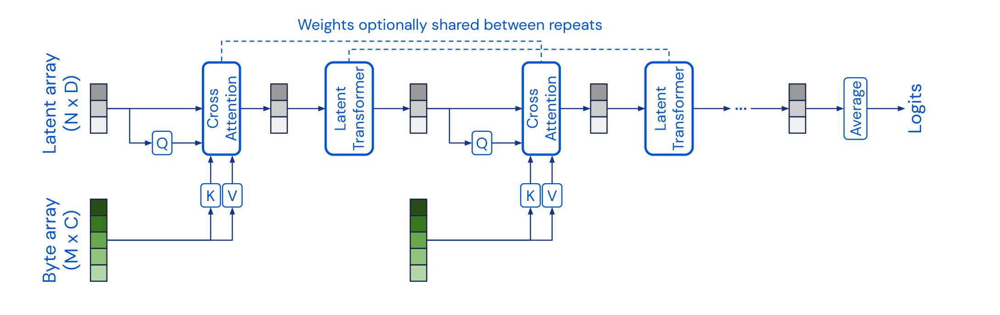
Multi-head self-attention
Qui Q, K, V vengono tutti dai latenti (non dall'input):
Q = L̃ · W_q, K = L̃ · W_k, V = L̃ · W_v (W ∈ ℝ^(1024 × 128) per testa)
A = softmax( \frac{QKᵀ}{√d_head} ) ∈ ℝ^(512 × 512)
La matrice di attenzione è quadrata N×N = 512×512, ma piccola: costo O(N²) trascurabile grazie al bottleneck. Il paper non dice quante teste usa il modello principale; il modello piccolo delle ablazioni ne ha 8, e 8 ne usa il nostro codice. Con H = 8 ogni testa lavora in dimensione d_head = D/H = 128.
Perché multi-head
Invece di una sola attention in dimensione D=1024, se ne calcolano 8 in parallelo, ciascuna in dimensione 128. Ogni testa può specializzarsi su un tipo di relazione diverso (es. una guarda pattern locali, un'altra globali). I risultati si concatenano: le moltiplicazioni restano quelle di una singola attention in dimensione D. Le matrici dei punteggi invece diventano 8: la memoria cresce con le teste.
multi-head attention · con otto numeri invece di 384
Le teste non aggiungono niente: tagliano
L'errore comune è pensare che 8 teste costino 8 volte tanto. Guarda cosa succede davvero a un vettore da 8 numeri.
Quante teste?
d_head = 8 ÷ 2 = 4
il vettore di partenza —
d = 8↓ si taglia in 2 pezzi ↓
una testa per pezzo, calcolate in parallelo
↓ si rimettono in fila e si mescolano con
Wᴼ ↓l'uscita —
d = 8, la stessa di primacosto totale dell'attention
Gli stessi conti, con i numeri veri
| Dove | d | teste | d_head |
|---|---|---|---|
| Paper, latent transformer (ImageNet) — teste non dichiarate, 8 nel modello delle ablazioni | 1024 | 8? | 128 |
| Nostro, latent transformer (CIFAR-10) | 384 | 8 | 48 |
| Nostro, cross-attention (d = min(261, 384)) | 261 | 1 | 261 |
Nella nostra cross-attention la testa è una sola, come nel paper (p. 6). Il paper non spiega perché. Le 8 teste stanno nel latent transformer, dove i latenti si parlano fra loro.
La cosa da portarsi via. Passare da 1 a 8 teste non aggiunge parametri e non aggiunge calcolo: prende lo stesso vettore e lo taglia in fette più sottili, ognuna libera di guardare una relazione diversa. Una testa può seguire i vicini, un'altra un elemento lontano, un'altra ancora il colore. Con una testa sola tutte queste relazioni devono convivere nello stesso spazio, e si disturbano a vicenda.
Architettura GPT-2
La struttura di ogni blocco del latent transformer è quella standard del decoder GPT-2 (Radford et al. 2019):
- LayerNorm
- Multi-head self-attention
- Residual connection
- LayerNorm
- MLP con GELU (hidden = D nel paper; 4D in GPT-2 e nel nostro codice)
- Residual connection
Non causale (niente maschere): ogni latente può vedere tutti gli altri liberamente. Il blocco è ripetuto ℓ=6 volte all'interno del latent transformer.
Con i numeri
Un blocco latente del paper, contato
- Q, K e V: tre matrici 1.024 × 1.024 = 3.145.728 parametri.
- Uscita W_o: 1.024 × 1.024 + 1.024 di bias = 1.049.600.
- MLP con fattore 1: 2 × 1.024² + 2.048 di bias = 2.099.200. Due LayerNorm: 4.096.
- Totale: 6.298.624 parametri per blocco. Nel nostro e01 (D = 384, MLP ×4) un blocco ne ha 1.773.312.
- Punteggi: 512 × 512 = 262.144. Con 8 teste da 128 canali il calcolo è lo stesso di una testa da 1.024.
- Calcolo di un blocco: circa 3,76 miliardi di MAC (una moltiplicazione più una somma). Il paper conta moltiplicazioni e somme a parte (p. 16): 1 MAC = 2 FLOPs. I suoi 707,2 miliardi di FLOPs sono circa 353,6 miliardi di MAC. I 48 blocchi ne fanno 180,4: il 51%. Le 8 cross-attention, circa 21,6 miliardi l'una (), fanno l'altro 49%.
Cross-attention vs latent transformer: il confronto
| Aspetto | Cross-Attention | Latent Transformer |
|---|---|---|
| Sorgente Q | latenti | latenti |
| Sorgente K, V | input X | latenti |
| Tipo | cross-attention | self-attention |
| Dim. interna | d_QKV = 261 | D = 1024 (con 8 teste: 8 × 128) |
| Matrice attenzione | 512×50.176 (rettangolare) | 512×512 (quadrata) |
| Costo | O(MN) | O(N²) — piccolo |
Idea chiave
La profondità del modello vive qui, nello spazio latente compresso. Impilare molti layer costa O(N²), non O(M²). Ecco perché la profondità della rete è disaccoppiata dalla dimensione dell'input — uno dei punti chiave del paper.
Errori tipici
- Le teste non moltiplicano le moltiplicazioni: tagliano D in 8 fette da 128 e le rimettono insieme. Moltiplicano però le matrici dei punteggi da tenere in memoria: 8 invece di 1.
- Il latent transformer non vede l'input. L'input rientra solo alla lettura successiva.
- «6 blocchi» è per lettura. Con 8 letture sono 48 esecuzioni, ma con lo sharing i pesi distinti restano 6.
Autoverifica
Che forma ha la matrice di attenzione del latent transformer?
N × N: 512 × 512 nel paper, 96 × 96 nel tuo e01.
Perché aggiungere blocchi latenti non costa in funzione di M?
Perché lavorano solo sugli N latenti: ogni blocco costa O(N²·D + N·D²). Il primo termine sono punteggi e A·V, il secondo proiezioni e MLP (nel paper la parte più grande: 3,22 dei 3,76 miliardi di MAC). M non compare.
Quante teste usa il latent transformer?
Il tuo codice ne usa 8 (d_head = 384 ÷ 8 = 48). Il paper non lo dice per il modello principale; il modello delle ablazioni ne usa 8. Attenzione: nel config.txt di e01 c'è scritto «Number of attention heads: 4». È l'argomento num_heads, che il Perceiver non usa: valgono num_heads_cross = 1 e num_heads_self = 8. La stampa è stata corretta dopo le run: ora train.py legge le teste dal modello costruito.
Quanti parametri ha un blocco latente del tuo e01? Come lo verifichi?
1.773.312. e16 ha 12 blocchi in più di e01: 12 × 1.773.312 = 21.279.744, esattamente la differenza fra i due.
Cosa succede se togli il latent transformer?
Nei tuoi e05–e07 (cross-attention non condivise): 68,98%, 67,24% e 67,05% con 4, 8 e 12 letture. e05 è a −2,65 da e01, dentro la banda di rumore; e06 ed e07 sono fuori. Più letture e più parametri non aiutano. Nel paper (Tab. 5) il crollo è molto più forte: 39,4% con 4 letture e 45,3% con 8.
Weight sharing e iterazioni
Una delle idee più importanti del Perceiver: il blocco cross-attention + latent transformer non viene applicato una volta sola, ma ripetuto T volte condividendo i pesi. Questo trasforma il modello in qualcosa di sorprendente.
In 30 secondi
- Il blocco lettura + 6 blocchi latenti si ripete 8 volte con gli stessi pesi. Solo la prima cross-attention ha pesi propri.
- Con sharing: 44,9 M parametri. Senza: 326,2 M. I calcoli sono identici: 707 miliardi di FLOPs in entrambi i casi.
- Nel paper lo sharing regolarizza: senza, 87,7% sul train ma 72,9% in validation; con, 79,5% e 78,0%.
Ti serve prima
Si usa in
Input→
Fourier→
Latenti→
Cross-Att→
Latent Tr.→
×T→
Pooling
T iterazioni con pesi condivisi
Il blocco (cross-att + latent transf) viene riapplicato T = 8 volte agli stessi latenti, condividendo i pesi tra le iterazioni — con un'eccezione importante: la prima cross-attention ha pesi propri. I blocchi latenti invece sono gli stessi a ogni lettura, anche alla prima.
Rif. 1.4.12 · Weight Sharing e Iterazioni
stesso modulo, stato aggiornato
I latenti cambiano a ogni giro. La cross-attention condivisa è la stessa da t=2 a t=8; i blocchi latenti sono gli stessi da t=1.
Modulo attivoCA₁ + LT
Stato latenteL⁽¹⁾
Parametricross-attention propria, blocchi latenti condivisi
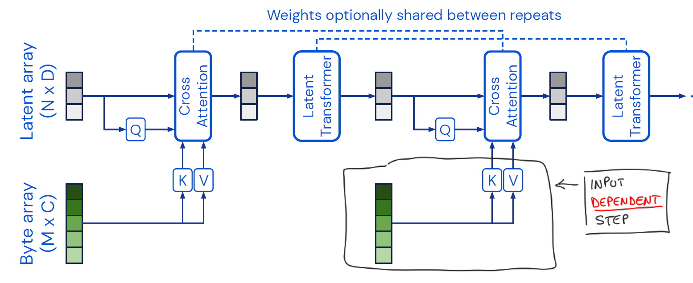
Perché la prima cross-attention è esclusa
Il paper riporta che condividere anche la prima cross-attention rendeva il training instabile (p. 6). Un'intuizione: alla prima lettura i latenti sono "neutri" (init
𝒩(0, 0.02²)), dalla seconda sono già pieni di informazione. Quindi CA₁ ha pesi propri e CA₂…CA₈ ne condividono uno. I 6 blocchi latenti sono condivisi da tutte le letture, anche dalla prima (didascalia della Tab. 7). Lo confermano i numeri: con blocchi latenti propri alla prima lettura il modello avrebbe 82,7 M di parametri, non 44,9 M.
Formalmente è un RNN
Questa struttura ha una forma matematica precisa: il Perceiver con weight sharing è formalmente un RNN.
| Componente RNN | Nel Perceiver |
|---|---|
| Stato ricorrente | latent array L^(t) (dim fissa 512×1024) |
| Input (costante nel tempo) | byte array X |
| Funzione di transizione | il blocco shared (cross-att + latent transf) |
| Stato iniziale | L^(0) (parametro appreso) |
A differenza di un RNN classico, però, a ogni passo i latenti accedono all'intero input simultaneamente, non a un elemento alla volta. È un RNN che "rilegge tutto" ogni volta.
Precisazione sull'RNN
La ricorrenza "pura" a pesi condivisi vale da t=2 in poi: alla prima iterazione la cross-attention ha pesi propri, mentre i blocchi latenti sono già quelli condivisi. Da t=2 a t=8 si ripete la stessa cella. Quindi è un RNN srotolato con un primo passo di lettura diverso, non un RNN puro fin dall'inizio.
L'effetto: meno parametri, più accuratezza
Il weight sharing non è solo un'ottimizzazione: è un regolarizzatore potente. Dal Tab. 7 del paper:
| Configurazione | Parametri | Train | Val | Gap |
|---|---|---|---|---|
| Senza weight sharing | ~326M | 87.7% | 72.9% | −14.8% (forte overfitting) |
| Con weight sharing | ~45M | 79.5% | 78.0% | −1.5% (no overfitting) |
⇒ ~7× meno parametri E +5.1% di accuracy (il testo del paper dice «circa 10×», ma dalla tabella 326,2 ÷ 44,9 = 7,3×). Senza sharing il modello memorizza troppo (gap train/val di 14.8%); con sharing il gap si riduce a 1.5%. Costringendo il modello a usare lo stesso "modulo di raffinamento" in tutte le iterazioni, si forza una generalizzazione migliore.
Con i numeri
Contiamo i pezzi condivisi
- Letture: 8. Cross-attention distinte: 2, la prima e quella condivisa dalle letture 2–8.
- Blocchi latenti eseguiti: 8 × 6 = 48. Blocchi distinti: 6.
- Parametri: 44,9 M. Se la prima lettura avesse blocchi latenti propri sarebbero 82,7 M: il paper li condivide.
- Senza sharing: 8 cross-attention e 48 blocchi distinti, 326,1 M nel nostro conto senza bias su Q, K e V. Con quei bias vengono 326,2 M, come la Tab. 7. Rapporto 7,3×.
- FLOPs: 707,2 miliardi in entrambi i casi (Tab. 7). Lo sharing risparmia memoria per i pesi, non calcoli.
- Nel nostro e16 lo sharing è tolto solo ai blocchi latenti: 4 letture × 4 blocchi = 16 blocchi distinti invece di 4. Le cross-attention 2–4 restano condivise. Sono 12 × 1.773.312 = 21.279.744 parametri in più (31,5 M in tutto). Risultato: 69,46% contro 71,63%, cioè −2,17, dentro la banda di rumore. Non è l'ablation completa della Tab. 7, dove anche le cross-attention sono distinte.
calcolatrice · togli e rimetti lo sharing
Sharing: cosa cambia e cosa no
Parti da e16 o dal paper. Togli o rimetti le due spunte di sharing: i parametri cambiano, i MAC restano uguali.
Cosa succede nel backward pass
Esempio numerico — gradienti di un peso condiviso
Sia w = 2.0 un peso condiviso tra le iterazioni t=2 e t=3. Nel backward ogni istanza produce un contributo al gradiente della loss ℒ:
\frac{∂ℒ}{∂w^(2)} = −0.3, \frac{∂ℒ}{∂w^(3)} = +0.1
I contributi si sommano (come in un RNN srotolato — BPTT, back-propagation through time):
\frac{∂ℒ}{∂w_sh} = −0.3 + 0.1 = −0.2
Con learning rate η = 0.01:
w ← w − η · (−0.2) = 2.0 + 0.002 = 2.002
In PyTorch questo accade automaticamente: quando più nodi del grafo computazionale puntano allo stesso nn.Parameter, i gradienti calcolati in backward() vengono accumulati sul .grad del parametro.
Idea chiave
Il weight sharing trasforma il Perceiver in un RNN che raffina progressivamente i latenti, rileggendo l'input T volte con lo stesso "modulo di raffinamento". Agisce da regolarizzatore: meno parametri, niente overfitting, più accuratezza.
Errori tipici
- La prima iterazione non ha tutto proprio: solo la sua cross-attention. I blocchi latenti sono gli stessi a ogni lettura.
- Lo sharing non riduce i FLOPs. Riduce i parametri, e con loro la memoria dei pesi e il rischio di overfitting.
- «È un RNN» vuol dire: stessi pesi applicati più volte a uno stato. L'input non scorre nel tempo, viene riletto intero a ogni passo.
Autoverifica
Quali pesi sono condivisi nel Perceiver?
Le cross-attention dalla 2ª all'8ª lettura (una sola copia) e i 6 blocchi latenti, riusati a ogni lettura. La prima cross-attention ha pesi propri: condividerla rendeva il training instabile (p. 6).
Quanti parametri e quanti FLOPs con e senza sharing?
44,9 M contro 326,2 M. I FLOPs sono 707,2 miliardi in entrambi i casi (Tab. 7).
Perché lo sharing regolarizza? Con quali numeri lo mostra il paper?
Meno parametri liberi vuol dire meno capacità di memorizzare. Senza sharing: 87,7% sul train e 72,9% in validation, 14,8 punti di distacco. Con sharing: 79,5% e 78,0%.
Cosa hai misurato togliendo lo sharing dei blocchi latenti?
e16: blocchi latenti distinti, cross-attention 2–4 ancora condivise. 31,5 M parametri, 69,46% contro il 71,63% di e01. La differenza, −2,17, è dentro la banda di rumore: triplicare i parametri non ha comprato niente.
Cosa succede al gradiente di un peso condiviso?
Si sommano i contributi di tutte le volte in cui il peso è usato, come nella backpropagation through time delle RNN.
Output: pooling e classificatore
Dopo T iterazioni di raffinamento, dai latenti finali bisogna arrivare a una predizione. Tre passi semplici.
In 30 secondi
- Media dei 512 latenti finali: un vettore da 1.024 numeri.
- Un solo layer lineare: 1.024 × 1.000 + 1.000 = 1.025.000 parametri, 1.000 logit (punteggi grezzi).
- Softmax e cross-entropy: la loss è −log della probabilità data alla classe giusta.
Ti serve prima
Si usa in
Input→
Fourier→
Latenti→
Cross-Att→
Latent Tr.→
×T→
Pooling
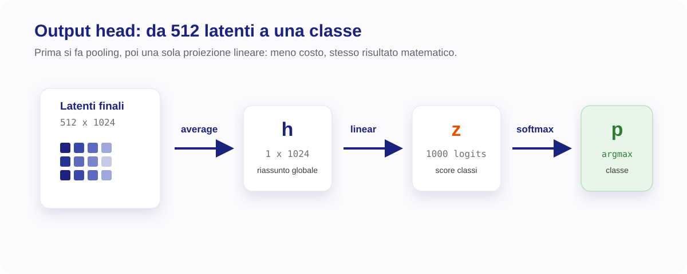
Rif. 1.4.13 · output head
N latenti → un vettore h → logit → probabilità
La media globale comprime le 512 righe latenti in un solo vettore, poi il classificatore produce le classi.
h ∈ R^1024
Pooling: ogni riga contribuisce alla media; poi i logit vengono normalizzati dalla softmax.
I tre passi
1. Global average pooling — media degli N latenti finali, riga per riga:
h = \frac{1}{N} · Σᵢ Lᵢ^(T) ∈ ℝ^D = ℝ^1024
Da N=512 vettori si ottiene un singolo vettore h di dimensione 1024.
2. Classificatore lineare — proietta nello spazio delle classi (1000 per ImageNet):
z = h · W_c + b_c, W_c ∈ ℝ^(1024 × 1000), b_c ∈ ℝ^1000 ⇒ z ∈ ℝ^1000 (logits)
3. Softmax + argmax — logit → probabilità → classe:
p_i = \frac{e^(z_i)}{Σⱼ e^(z_j)}, ŷ = argmax_i p_i
Con i numeri
Dalla media alla loss, con il nostro e01
- Dopo 4 letture restano 96 latenti da 384 numeri. La media sui 96 dà un vettore h da 384.
- Linear da 384 a 10 classi: 3.840 pesi + 10 bias = 3.850 parametri.
- Esempio con 3 classi: logit z = (2,0, 1,0, 0,1). Esponenziali: 7,389, 2,718, 1,105. Somma 11,212.
- Probabilità: 0,659, 0,242, 0,099. Se la classe giusta è la prima, la loss è −ln 0,659 = 0,417. Se è la terza, −ln 0,099 ≈ 2,32.
- All'inizio del training, con 10 classi equiprobabili, p = 0,1 e la loss vale ln 10 = 2,303. È il valore di partenza atteso.
- Media e Linear sono operazioni lineari e commutano: fare prima la media dà lo stesso risultato, ma proietta un vettore invece di 96.
Due dettagli che il paper sottolinea
- Niente token [CLS]: a differenza di BERT/GPT, il Perceiver non usa un token speciale per il pooling. La media è la soluzione più diretta e non introduce nuovi parametri.
- Pooling prima della proiezione (fix del paper, App. F). Le due operazioni (pooling e proiezione lineare) commutano matematicamente, ma fare il pooling prima riduce il costo computazionale (proietti UN vettore invece di N). È una delle correzioni della versione v2 del paper (p. 18).
Idea chiave
Il pooling medio comprime gli N latenti in un solo vettore h ∈ ℝ^D, di dimensione fissa — qualunque sia N. Questo permette di collegare un classificatore lineare standard, identico per qualsiasi modalità di input. Massima generalità con minimo sforzo.
Errori tipici
- Il Perceiver non usa un token [CLS]: fa la media dei latenti. Anche il nostro codice fa sempre la media (
src/perceiver/perceiver.py). Il vecchio flag--output_poolingprometteva anche un [CLS], ma nessuno lo leggeva: è stato tolto. Nei config.txt delle run resta la riga «output_pooling: mean», perché sono stati scritti prima. - La testa è un solo Linear, non un MLP (p. 17).
- Media e proiezione commutano: l'ordine non cambia il risultato, cambia il costo.
Autoverifica
Cosa fa la testa di classificazione del Perceiver?
Media sugli N latenti, così ottiene h ∈ ℝ^D. Poi un Linear da D al numero di classi e una softmax.
Quanti parametri ha la testa nel paper e nel tuo e01?
1.025.000 (1.024 × 1.000 + 1.000) e 3.850 (384 × 10 + 10).
Che loss ti aspetti all'inizio del training su CIFAR-10?
Circa ln 10 ≈ 2,30: il modello non sa niente e dà probabilità 0,1 a ogni classe.
Perché fare la media prima della proiezione?
Media e Linear sono lineari e commutano: il risultato è lo stesso, ma si proietta un vettore invece di N. È una correzione della v2 del paper (p. 18).
Dettagli di training (ImageNet)
L'architettura è chiara. Adesso vediamo come si allena. Tre dettagli importanti: ottimizzatore, schedule, e una scelta controintuitiva sul dropout.
In 30 secondi
- LAMB, learning rate 0,004, 120 epoche, diviso per 10 alle epoche 84, 102 e 114.
- Niente dropout: regolarizzano il collo di bottiglia, il weight sharing e l'augmentation (crop Inception e RandAugment).
- Il nostro e01 usa lo stesso ottimizzatore e la stessa schedule, con batch 64: circa 704 passi per epoca. L'augmentation è diversa: solo RandAugment(2, 9), senza crop. In più: gradient clipping a 1 e bfloat16.
Ti serve prima
Si usa in
L'ottimizzatore: LAMB
Il paper usa LAMB (You et al., 2020). Per le CNN su ImageNet di solito si usa SGD. Gli autori hanno trovato il Perceiver più facile da ottimizzare con LAMB, nato per i Transformer (p. 6). Il paper non parla di Adam.
LAMB (Layer-wise Adaptive Moments for Batch training) è un ottimizzatore studiato per allenamenti con batch grandi: applica una normalizzazione per-layer del rate di aggiornamento, evitando che alcuni layer "saltino troppo" mentre altri restano fermi.
Schedule del learning rate: step decay
- Epoche totali: 120
- LR iniziale:
4 × 10⁻³ - Step decay: ÷10 alle epoche 84, 102, 114
- Niente cosine annealing. Il paper non parla di warmup, né di batch size o weight decay per questo modello.
Schema "vecchia scuola": rate alto per la maggior parte del training, poi tre tagli netti verso la fine per fissare i pesi.
Rif. 1.6 · ImageNet training schedule
Learning rate — step decay animato
La testina avanza tra le 120 epoche: il LR parte da 4×10⁻³ e viene tagliato ÷10 alle epoche 84, 102, 114 (asse Y logaritmico).
Epoca 0 / 120 · LR = 4.000e-3
Niente dropout (e perché)
Sorprendentemente, il Perceiver non usa dropout. Citazione dal paper (App. C):
"We used dropout throughout the network in earlier experiments, but we found this led to degraded performance, so no dropout is used."
L'intuizione: il modello ha già forti pressioni regolarizzanti:
- Il latent bottleneck N≪M comprime brutalmente l'informazione.
- Il weight sharing riduce i parametri di ~7×.
- La data augmentation aggressiva: RandAugment (Cubuk et al., 2020).
Aggiungere dropout sopra tutto questo soffoca la capacità del modello invece di aiutarlo.
Dimensione del modello
~45M parametri: circa il doppio di una ResNet-50 (26 M), ma 7 volte meno del modello senza sharing. Il grosso, 37,8 M, sta nei 6 blocchi del latent transformer, che sono condivisi da tutte le letture. La prima cross-attention, l'unico pezzo con pesi propri, ne ha 2,8 M.
Con i numeri
La ricetta, numero per numero
- Learning rate 0,004 dall'epoca 0 alla 83: il 70% del training.
- Epoca 84 → 0,0004. Epoca 102 → 0,00004. Epoca 114 → 0,000004.
- Nostro e01: stessa schedule. CIFAR-10 diviso in 45.000 immagini di train, 5.000 di validation e 10.000 di test. Con batch 64 sono circa 704 passi per epoca, circa 84.000 in tutto.
- L'epoca migliore di e01 è la 92, subito dopo il primo taglio. 21 run CIFAR su 24 toccano il massimo dopo l'epoca 84. Le 3 eccezioni (e23, e24, e28) sono training crollati. Anche e27 ha un crollo a metà (25,32% all'epoca 52), ma poi recupera e tocca il massimo all'epoca 112.
- Nel nostro codice serve il gradient clipping a norma 1: senza, LAMB a 0,004 divergeva (loss nan). Il paper non ne parla.
Idea chiave
Training "essenziale": LAMB, 120 epoche con step decay, niente dropout, ~45M parametri. La regolarizzazione viene dall'architettura (bottleneck e weight sharing) e dall'augmentation. Il paper insiste sui crop: le coordinate si calcolano sul crop, così colore e posizione non restano legati e il modello non può memorizzare pochi pixel (p. 6).
Errori tipici
- LAMB non è «Adam con un altro nome»: adatta l'ampiezza del passo strato per strato ed è pensato per batch grandi.
- Il paper non dichiara batch size, numero di TPU, warmup né weight decay per il modello principale. All'esame non inventarli.
- «Niente dropout» non vuol dire «niente regolarizzazione»: restano RandAugment, il collo di bottiglia e il weight sharing.
Autoverifica
Qual è la ricetta di training del paper su ImageNet?
LAMB, learning rate 0,004, 120 epoche, diviso per 10 alle epoche 84, 102 e 114. Crop Inception-style 224×224 e RandAugment. Niente dropout (p. 6 e 17).
Perché il Perceiver non usa dropout?
Il paper l'ha provato: con dropout le prestazioni peggioravano. Il modello è già regolarizzato dal collo di bottiglia e dal weight sharing.
Cosa non dice il paper sul training del modello principale?
Batch size, numero di TPU, numero di passi, weight decay, warmup e gradient clipping.
In quale epoca il tuo e01 ha il massimo di validation, e perché proprio lì?
Alla 92, subito dopo il primo taglio del learning rate (epoca 84): con passi più piccoli la rete si assesta in un punto migliore.
Perché nel tuo codice c'è il gradient clipping?
Senza, LAMB con learning rate 0,004 faceva divergere il training (loss nan). Con la norma del gradiente limitata a 1 il training è stabile.
I risultati che "vendono" il Perceiver
Abbiamo visto tutta l'architettura e il training. Adesso: funziona? E cosa dimostra di unico rispetto agli altri modelli? Questo è il capitolo cruciale per l'esame.
In 30 secondi
- ImageNet: 78,0% sui pixel grezzi, senza convoluzioni. ResNet-50 fa 77,6 e ViT-B/16 77,9.
- Pixel permutati: il Perceiver resta a 78,0. ResNet-50 con Fourier features crolla da 73,5 a 39,4, ViT-B/16 con Fourier features da 76,7 a 61,7.
- Stessa architettura, con iperparametri diversi, su audio (AudioSet, 38,3 mAP) e nuvole di punti (ModelNet40, 85,7%).
Ti serve prima
Si usa in
ImageNet su pixel grezzi: competitivo senza convoluzioni
Top-1 accuracy sulla validation set di ImageNet (Tab. 1 del paper):
| Modello | Top-1 | Note |
|---|---|---|
| ResNet-50 | 77.6% | conv 2D |
| ViT-B/16 | 77.9% | patch 2D |
| Transformer puro (64×64, FF) | 57.0% | costretto a downsamplare per O(M²) |
| Perceiver (FF) | 78.0% | 50.176 pixel grezzi, nessuna conv 2D |
Il Perceiver è competitivo con ResNet-50 e ViT-B/16 (entrambi con forte prior 2D) lavorando direttamente sui pixel grezzi. Il Transformer puro deve ridurre l'immagine a 64×64 per stare in memoria: il suo costo è O(M²). Con 96×96 il paper ottiene risultati simili, ma con meno strati (p. 6). La perdita di dettaglio da sola quindi non spiega il 57,0: il paper non indica una causa precisa.
Permutation invariance: il colpo di scena
Ed eccoci al risultato che il paper usa per argomentare la vera generalità del Perceiver. L'esperimento: mescolare i pixel di tutte le immagini con la stessa permutazione fissa. Un modello che tratta l'input come un insieme non si accorge del rimescolamento. Servono due cose. L'attenzione, che non guarda l'ordine. E una codifica di posizione calcolata prima di mescolare, che viaggia con ogni pixel. ResNet e ViT ricevono le stesse Fourier features, ma crollano: il loro primo strato guarda i vicini sulla griglia.
| Modello | ImageNet raw | ImageNet permuted | Δ |
|---|---|---|---|
| Perceiver (Fourier features) | 78.0 | 78.0 | 0.0 |
| Perceiver (learned position encoding) | 70.9 | 70.9 | 0.0 |
| ViT-B/16 (FF) | 76.7 | 61.7 | −15.0 |
| ResNet-50 (FF) | 73.5 | 39.4 | −34.1 |
Con i numeri
Perché l'attenzione non vede il rimescolamento: 3 pixel
- Un latente con query q = (1; 0). Tre pixel con chiavi k₁ = (2; 0), k₂ = (0; 1), k₃ = (1; 1) e valori 10, 20 e 30. Per semplicità non dividiamo per √d.
- Punteggi q·k: 2; 0; 1. Softmax: e² = 7,39, e⁰ = 1, e¹ = 2,72, somma 11,11. Pesi 0,665; 0,090; 0,245.
- Uscita: 0,665·10 + 0,090·20 + 0,245·30 = 15,80.
- Ora mescolo i pixel: l'ordine diventa (3, 1, 2). I punteggi diventano 1; 2; 0: ogni punteggio viaggia con il suo pixel. I pesi sono gli stessi, in un altro ordine.
- Uscita: 0,245·30 + 0,665·10 + 0,090·20 = 15,80. Identica: una somma non dipende dall'ordine degli addendi.
- Un filtro che guarda i vicini invece se ne accorge. Filtro (1; −1) sui valori in fila (10; 20; 30): −10 e −10. Dopo il rimescolamento (30; 10; 20): +20 e −10. Sono cambiati i vicini, quindi cambia l'uscita.
La posizione, se serve, deve stare dentro la riga: le Fourier features calcolate prima di mescolare viaggiano con il pixel. Per questo il Perceiver resta a 78,0 anche sull'ImageNet permutato.
Con i numeri
La Tab. 2 letta con il campo recettivo (quanti pixel vede il primo strato)
- ResNet-50 vede 7 × 7 = 49 pixel alla volta. Dopo la permutazione i vicini non sono più vicini: 73,5 → 39,4 (−34,1).
- ViT-B/16 vede pezzi da 16 × 16 = 256 pixel: 76,7 → 61,7 (−15,0).
- Il Transformer 64×64 vede tutti i 4.096 pixel: 57,0 → 57,0.
- Il Perceiver vede tutti i 50.176 pixel: 78,0 → 78,0. Anche con posizione appresa: 70,9 → 70,9.
- Regola: più il primo strato guarda in locale, più la permutazione fa male. Chi guarda tutto con l'attenzione non se ne accorge.
- Nel nostro CIFAR-10: e02 fa 68,95 contro 71,63 di e01, cioè −2,68, dentro la banda di rumore di 2,78. Con posizione appresa (e04 contro e03): 69,87 contro 71,07.
Rif. 1.7 · permutation invariance
Pixel mescolati: Perceiver resta, ResNet crolla
Lo shuffle rompe il bias 2D della CNN; il Perceiver conserva la posizione dentro le Fourier features.
ResNet: 73.5 → 39.4 perché la vicinanza sulla griglia non significa più niente. Perceiver: 78.0 → 78.0.
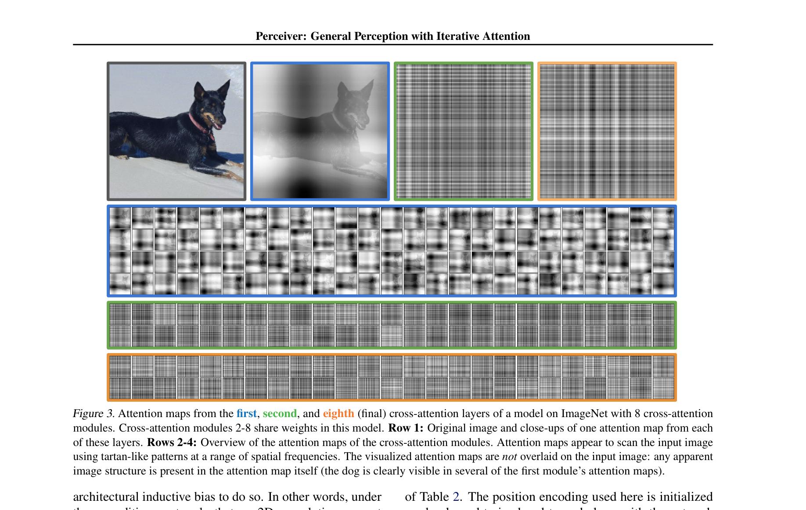
Idea chiave — il risultato che vende il Perceiver
Il Perceiver è invariante alla permutazione con entrambe le positional encoding: Fourier 78.0 → 78.0 e learned 70.9 → 70.9, zero calo in tutti e due i casi. L'invarianza viene dall'attention (una somma pesata non ha ordine), non dalle Fourier features. La ResNet invece crolla (73.5 → 39.4) perché la conv 2D assume che i vicini nella griglia siano correlati, e la permutazione distrugge quella struttura. Le Fourier features non servono a resistere alla permutazione. Servono a dare al modello la struttura 2D della griglia: lo dice il paper (p. 7). Il Perceiver senza alcuna conoscenza spaziale è la riga con posizione appresa: 70,9. Quella rete però ha una sola lettura, perché con 8 era instabile; il confronto più vicino è con 1 lettura e Fourier features, 76,7 (Tab. 6). La Tab. 2 mostra che ResNet e ViT sfruttano i vicini sulla griglia, il Perceiver no. Le coordinate 2D però le riceve, dentro le Fourier features.
Altri domini, stesso modello
Stessa architettura, con iperparametri diversi. AudioSet: 2 letture invece di 8, 8 self-attention per blocco, niente weight sharing (p. 8). ModelNet40: 2 letture, 6 self-attention per blocco (p. 9).
| Dominio | Perceiver | Baseline specializzato |
|---|---|---|
| AudioSet (audio raw) | 38.3 mAP | CNN-14: 43.1 mAP |
| AudioSet (audio + video) | 43.5 mAP (44.2 dopo il tuning) | Attention AV-fusion: 46.2 mAP |
| ModelNet-40 (point cloud, solo xyz) | 85.7% | PointNet++: 91.9% |
Il Perceiver non vince su nessuno dei due. PointNet++ usa feature geometriche in più e augmentation più avanzate (p. 9); il Perceiver solo le coordinate (x, y, z). Su audio + video il paper ammette che un modello di fusione dedicato fa meglio (p. 9). Il punto è la generalità, non il record.
Effetto del weight sharing (recap)
| Configurazione | Top-1 val | Parametri |
|---|---|---|
| Senza weight sharing | 72.9% | ~326M |
| Con weight sharing | 78.0% | ~45M |
Errori tipici
- La permutazione è una sola, fissa, uguale per tutte le immagini, anche in training. È applicata dopo aver calcolato le Fourier features (p. 6–7).
- L'invarianza viene dall'attenzione, non dalle Fourier features: lo dimostra la riga con posizione appresa (70,9 → 70,9).
- Su ModelNet40 il paper sceglie il risultato migliore sul test set (p. 9). Anche noi: il dataset non ha una validation.
Autoverifica
Quanto fa il Perceiver su ImageNet, e contro quali modelli?
78,0% top-1. ResNet-50 77,6, ViT-B/16 77,9, Transformer su immagini 64×64 57,0 (Tab. 1).
Cosa succede permutando i pixel?
Perceiver 78,0 → 78,0. ResNet-50 (con Fourier features) 73,5 → 39,4. ViT-B/16 (con Fourier features) 76,7 → 61,7 (Tab. 2).
Perché ResNet e ViT perdono e il Perceiver no?
Il loro primo strato guarda in locale (49 e 256 pixel): la permutazione distrugge quei vicinati. L'attenzione del Perceiver guarda tutti i 50.176 pixel insieme e la posizione viaggia dentro ogni riga.
Come è fatta la permutazione del paper?
Una sola permutazione, fissa per tutte le immagini, applicata dopo aver calcolato le Fourier features.
Che risultato hai ottenuto tu permutando i pixel?
e02: 68,95% contro 71,63% di e01. La differenza, −2,68, è dentro la banda di rumore: invarianza confermata entro la precisione delle misure.
ModelNet40: risultato del paper e tuo?
Paper 85,7% (PointNet++ 91,9%), risultato migliore scelto sul test. Tuo mn01: 87,36% all'epoca migliore, 86,43% all'ultima. Come nel paper, l'epoca si sceglie sul test. Il training però è diverso: batch 32 invece di 512, 120 epoche con tagli del learning rate invece di un learning rate costante, 6 bande di Fourier invece di 64.
Ablation: cosa conta davvero
Quali componenti del Perceiver sono indispensabili e quali sono dettagli? Gli ablation studies del paper rispondono. Sono il modo migliore per capire l'architettura "smontandola".
In 30 secondi
- Senza latent transformer il modello crolla: 39,4% con 4 letture, 45,3% con 8 (Tab. 5).
- Alternare letture e blocchi latenti batte il leggere tutto all'inizio: 78,0 contro 73,7 con 8 letture (Tab. 6).
- Weight sharing: 7,3 volte meno parametri e +5,1 punti (Tab. 7).
Ti serve prima
Si usa in
Attenzione: ablation su un modello ridotto
Per le ablation su N, D, ℓ, T il paper (App. B) usa un modello base intenzionalmente più piccolo del migliore di Tab. 1: senza weight sharing, 4 self-attention per blocco, 2 cross-attends, D=512, batch 64. Le accuracy stanno fra circa 63% e 72% (valori letti dalla Fig. 5; training di 5 milioni di passi su 32 TPU) — i trend qualitativi sono informativi, i numeri NON sono direttamente confrontabili col 78.0% del main model.
Rif. 1.8 · ablation studies
Accendi e spegni i componenti chiave
Non è un quiz: è una lettura visiva dei numeri più importanti del paper.
Senza latent transformer: 78.0 → 45.3. Il bottleneck deve anche far comunicare i latenti.
1. Il latent transformer è essenziale
Esperimento estremo: si toglie il latent transformer. Restano solo cross-attention ripetute, senza sharing (Tab. 5). Il collo di bottiglia c'è ancora: i 512 latenti leggono l'input a ogni passo. Manca la self-attention fra i latenti: ogni latente legge l'input da solo e non scambia informazione con gli altri.
| Cross-attends (senza self-att.) | Accuracy |
|---|---|
| 4 | 39.4% |
| 8 | 45.3% |
| 12 | OOM (Out of Memory) |
| 8 con self-att. (modello completo) | 78.0% (+32,7 punti) |
Senza il latent transformer, il modello collassa: la mancanza di comunicazione tra i latenti dopo ogni cross-attention impedisce l'integrazione delle informazioni. Il collo di bottiglia riduce i costi; il latent transformer mette insieme l'informazione. Servono tutti e due.
2. Interleaved > at-start (il modo di alternarle)
Si confrontano due strategie per le cross-attention:
- Interleaved: cross → self → cross → self → ... (pesi cross condivisi).
- At-start: tutte le cross applicate in sequenza prima del processo latente.
| Configurazione | Cross-attends T | Accuracy |
|---|---|---|
| Interleaved / at start | 1 | 76.7% / 76.7% |
| Interleaved / at start | 2 | 76.5% / 76.7% |
| Interleaved / at start | 4 | 76.5% / 75.9% |
| Interleaved / at start | 8 | 78.0% / 73.7% |
Con 8 cross-attend tutte all'inizio, il modello deve comprimere l'intera informazione in un'unica lettura prolungata. Con interleaved, alterna fasi di "lettura" e "ragionamento" latente: ogni re-lettura avviene con latenti già parzialmente raffinati. Il modello deve ri-leggere l'input più volte in modo adattivo.
Attenzione ai numeri: il guadagno è non-monotono — da T=1 a T=4 cambia pochissimo (76.7 → 76.5), il vero salto arriva solo a T=8 (78.0). Con 8 letture l'alternanza vince netto: 78,0 contro 73,7. Con 4 vince di poco: 76,5 contro 75,9. Con 2 vince la disposizione in testa: 76,7 contro 76,5. Con 1 lettura non c'è rilettura: 76,7 in entrambi i casi. Il dato più forte: 8 letture tutte in testa (73,7) fanno peggio di una lettura sola (76,7).
Con i numeri
La Tab. 6 letta con i FLOPs
- 1 lettura: 404,3 miliardi di FLOPs. 8 letture: 707,2 miliardi. Da 2 letture in su i parametri restano 44,9 M.
- Differenza: 302,9 miliardi per 7 letture in più, cioè circa 43 miliardi a lettura.
- I blocchi latenti restano 48 in tutte le righe: i FLOPs tornano solo così. Una lettura dei 50.176 pixel costa quasi 6 volte un blocco latente (43 contro 7,5 miliardi).
- Con 1 lettura: 76,7% in entrambe le disposizioni. Con 8: 78,0 alternate, 73,7 tutte in testa.
- Quindi 7 letture in più costano il 75% di calcolo in più e danno +1,3 punti, ma solo se alternate ai blocchi.
- Nel nostro progetto invece ogni lettura porta i suoi 4 blocchi: e08 (T = 1) ne ha 4, e10 (T = 8) ne ha 32. Il confronto fra T non è quello del paper ().
3. Weight sharing = regolarizzatore
| Configurazione | Val (%) | Train (%) | Gap |
|---|---|---|---|
| Senza weight sharing (326M) | 72.9% | 87.7% | 14,8 punti |
| Con weight sharing (45M) | 78.0% | 79.5% | 1,5 punti |
Già visto al , ma qui in numeri completi: il weight sharing è il più potente dei regolarizzatori del Perceiver. 7× meno parametri e +5,1 punti di accuracy.
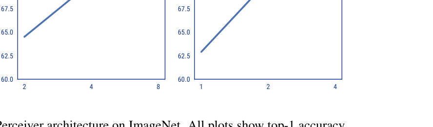
4. Fourier features: numero di bande
Due manopole diverse. Il numero di bande K dice quante frequenze prendo fra 1 e f_max: 16, 32 e 64 bande danno 71,7, 72,4 e 72,5 (Fig. 6). Da 32 a 64 si guadagna solo +0,1. La frequenza massima f_max dice quanto è fine il dettaglio più piccolo: con max resolution 56, 112 e 224 si ha 71,1, 72,4 e 73,1. Cresce fino a Nyquist, e il paper non va oltre. Oltre Nyquist un'onda farebbe più di mezza oscillazione fra due pixel vicini.
f_max = \frac{min(H, W)}{2}
K indica quante bande campioniamo; f_max indica la frequenza massima raggiunta. Per ImageNet (224×224) il paper usa K=64 frequenze equispaziate tra 1 e f_max=112, cioè il limite di Nyquist.
5. Effetti di N, D, ℓ
| Parametro | Effetto |
|---|---|
| N (latenti) | ↑ aiuta: 256 → 512 → 1024 danno 68,0 → 70,3 → 72,1 |
| D (dim canale) | ↑ aiuta fino a un punto: 64,9 → 70,3 → 66,7 per 256, 512, 1024 (oltre, overfitting, senza sharing) |
| ℓ (self-att per blocco) | ↑ aiuta con rendimenti decrescenti: 64,5 → 70,3 → 71,1 per 2, 4, 8 |
| Cross-attend | ↑ aiuta nel modello piccolo: 62,9 → 70,5 → 72,4 per 1, 2, 4 |
Lezioni dagli ablation
- Il latent transformer è essenziale: senza, al massimo 45,3%.
- Interleaved > at-start: rileggere l'input più volte, con latenti raffinati progressivamente.
- Weight sharing: 7× meno parametri, +5,1 punti.
- Fourier: f_max fino a Nyquist; oltre 32 bande il guadagno è minimo.
- Config ottimale ImageNet: N=512, D=1024, T=8 interleaved + weight sharing, ℓ=6, K=64.
Idea chiave
Smontando il Perceiver, tutto torna a tre intuizioni. Il latent transformer fa parlare i latenti fra loro: senza, al massimo 45,3%. L'iterazione rilegge l'input con latenti già raffinati. Il weight sharing tiene bassi i parametri e riduce l'overfitting.
Errori tipici
- Le ablation della Fig. 5 (N, D, blocchi, letture) usano un modello piccolo senza sharing: i suoi numeri (63–72%) non si confrontano con il 78,0.
- In Tab. 6 la profondità è fissa: 48 blocchi latenti. Cambia solo quante volte si rilegge l'input.
- Nyquist limita la frequenza massima, non il numero di bande. Le bande si appiattiscono presto (32 → 64: +0,1); la frequenza massima cresce fino a Nyquist (Fig. 6).
Autoverifica
Cosa succede senza latent transformer?
Tab. 5: 39,4% con 4 letture, 45,3% con 8, memoria esaurita con 12. Il modello completo fa 78,0.
Letture alternate o tutte all'inizio: con quali numeri?
Con 8 letture 78,0 alternate contro 73,7 in testa. Con 1 lettura 76,7 in entrambi i casi.
Nella Tab. 6 cosa resta fisso e cosa cambia?
Restano fissi i 48 blocchi latenti e, da 2 letture in su, i 44,9 M parametri. Cambiano le letture e quindi i FLOPs: da 404,3 a 707,2 miliardi.
Cosa dice la Fig. 5 su N e D?
N = 256, 512, 1024 → 68,0, 70,3, 72,1: più latenti aiutano. D = 256, 512, 1024 → 64,9, 70,3, 66,7: oltre 512 il modello senza sharing va in overfitting.
Perché i tuoi esperimenti sul numero di letture non si confrontano 1:1 con la Tab. 6?
Perché nel tuo codice ogni lettura ha i suoi 4 blocchi latenti: T = 1 ha 4 blocchi, T = 8 ne ha 32. Nel paper i blocchi restano 48 e cambia solo il numero di letture.
Backward pass: i risultati chiave
Il backward pass del Perceiver è meccanico: chain rule applicata blocco per blocco. Però ci sono tre risultati che vale la pena conoscere a memoria, soprattutto per l'orale.
In 30 secondi
- Softmax + cross-entropy: il gradiente sui logit è p − y.
- Un peso condiviso somma i contributi di tutte le volte in cui è usato, come la BPTT delle RNN.
- La residual lascia passare il gradiente così com'è: è il termine I in (I + ∂f/∂L).
Ti serve prima
Collegato a
Ordine del backward
Il backward attraversa l'architettura in ordine inverso rispetto al forward:
Loss → Softmax → Classifier → Media → (Latent Transformer → Cross-Attention) × T → Latenti iniziali
Si parte dalla loss ℒ e si torna indietro. Blocchi latenti e cross-attention si alternano, lettura per lettura (8 nel paper, 4 nel nostro e01). Il gradiente arriva fino alle proiezioni K e V e all'array latente iniziale, che è appreso. L'input (RGB + Fourier) non ha parametri: lì il gradiente si ferma. Con la posizione appresa arriva anche alla tabella delle posizioni.
Rif. 1.5 · Backward Pass
Loss → Softmax → Classifier: poi si risale tutto
Il forward legge da sinistra a destra; il backward percorre lo stesso grafo al contrario e accumula gradienti.
Si parte da ∂ℒ e dal gradiente pulito p − y sui logit.
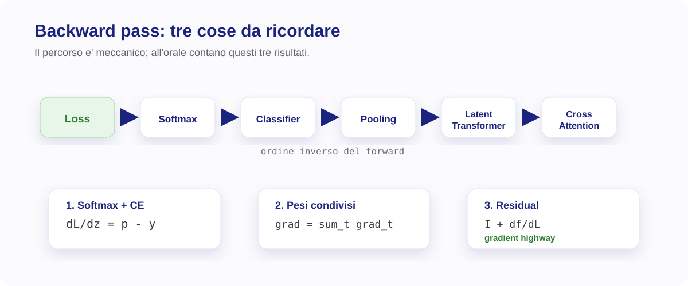
p - y, somma dei gradienti sui pesi condivisi e residual come percorso diretto del gradiente.Risultato 1: il celebre ∂ℒ/∂z = p − y
Il forward finale ha questa struttura:
Logits z → Softmax → p → Cross-Entropy con y_true → ℒ
Combinando softmax + cross-entropy, il gradiente rispetto ai logit è notevolmente pulito:
\frac{∂ℒ}{∂z} = p − y
cioè: la differenza tra la probabilità predetta p e il vettore one-hot della classe vera y. Nessuna derivata complicata, nessuna divisione, nessuna instabilità numerica. Per questo softmax e cross-entropy vanno insieme: derivate separate sarebbero un casino, combinate si semplificano.
Domanda d'esame quasi certa
Saper derivare (o almeno enunciare)
∂ℒ/∂z = p − y è una delle domande più frequenti in qualsiasi corso di deep learning con softmax+CE. Memorizzalo a livello automatico.
Con i numeri
p − y su un esempio vero
- Logit z = (2,0, 1,0, 0,1). Softmax: p = (0,659, 0,242, 0,099). La classe giusta è la prima: y = (1, 0, 0).
- Gradiente sui logit: p − y = (−0,341, +0,242, +0,099). La somma fa 0.
- La discesa del gradiente fa z ← z − η·(p − y): il logit giusto sale, gli altri scendono, ognuno in proporzione a quanto sbaglia.
- Se il modello è sicuro e ha ragione (p₁ = 0,99) il gradiente è quasi zero: impara poco. Se è sicuro e sbaglia, il gradiente è grande.
- Nella testa del Perceiver: ∂ℒ/∂W_c = hᵀ·(p − y). Nel nostro e01 (D = 384, 10 classi) sono 3.840 numeri, uno per peso.
Risultato 2: gradienti dei pesi condivisi (BPTT)
Quando un peso W è usato in più blocchi del forward (caso del weight sharing del Perceiver), nel backward ogni istanza produce un contributo. Per il training corretto, questi contributi si sommano:
\frac{∂ℒ}{∂W_sh} = Σ_{t=2}^{T} \frac{∂ℒ}{∂W^(t)}
La somma parte da t = 2 per le cross-attention condivise. Per i blocchi latenti, condivisi da tutte le letture, parte da t = 1. È lo stesso meccanismo di un RNN srotolato (BPTT, back-propagation through time). In PyTorch è automatico: quando più nodi del grafo computazionale puntano allo stesso nn.Parameter, i gradienti calcolati in backward() vengono accumulati sul .grad del parametro.
Esempio numerico con T=3 iterazioni
Sia w = 2.0 un peso condiviso tra t=2 e t=3. Nel backward:
\frac{∂ℒ}{∂w^(2)} = −0.3, \frac{∂ℒ}{∂w^(3)} = +0.1
Il gradiente effettivo è la somma:
\frac{∂ℒ}{∂w_sh} = −0.3 + 0.1 = −0.2
Con learning rate η = 0.01:
w ← 2.0 − 0.01 · (−0.2) = 2.002
Attenzione: con lo SGD semplice, due passi da −0,3 e +0,1 danno lo stesso 2,002. Con Adam o LAMB no: ogni passo viene diviso per una stima della grandezza del gradiente, e l'ottimizzatore ha una memoria (le medie m e v). Esempio con Adam al primo passo: la somma −0,2 dà un passo lungo η, cioè w = 2,010. Due passi separati danno 2,010 e poi 2,014, e le medie avanzano due volte. Il Perceiver usa LAMB: per questo i contributi si sommano prima, e si fa un solo passo.
weight sharing · BPTT · l'errore classico all'orale
Un solo peso, T−1 frecce che arrivano
Premi «Passo backward» e guarda dove finiscono i contributi a un peso W della cross-attention condivisa. Il punto non è la formula: è che convergono tutti nello stesso accumulatore, e che la prima cross-attention ha il suo.
✓ Corretto — accumula, poi aggiorna una volta sola
w ← 2.0 − 0.01 · (−0.2) = 2.002
✗ Sbagliato — un aggiornamento per ogni contributo
w ← 2.0 − 0.01·(−0.3) = 2.003 → poi − 0.01·(+0.1) = 2.002
Perché qui il risultato coincide, e perché in generale no. Con lo SGD puro i due percorsi danno lo stesso numero, perché sommare i gradienti e sommare gli aggiornamenti sono la stessa operazione. Smettono di coincidere appena l'ottimizzatore ha uno stato: Adam e LAMB normalizzano per la magnitudine del gradiente, quindi due passi da −0.3 e +0.1 non equivalgono a un passo da −0.2. Il Perceiver usa LAMB — l'accumulazione prima dell'aggiornamento non è un dettaglio di stile.
Pesi della prima cross-attention: non partecipano alla somma
I pesi di CA₁ sono parametri separati (): i loro gradienti stanno in un accumulatore diverso, non si sommano con quelli delle cross-attention condivise, e vengono aggiornati in modo indipendente. I blocchi latenti invece sono condivisi da tutte le letture, anche dalla prima: per i loro pesi i contributi che si sommano sono T, non T−1.
Risultato 3: residual connection = "gradient highway"
Una residual connection è L' = L + f(L). Nel backward:
\frac{∂ℒ}{∂L} = \frac{∂ℒ}{∂L'} · (I + \frac{∂f}{∂L})
Il termine identità I garantisce che il gradiente trovi sempre un "percorso diretto" indietro, anche se la parte ∂f/∂L si attenua o esplode. Per questo le ResNet (e il Perceiver) riescono ad addestrare reti molto profonde senza vanishing gradient.
Cosa NON memorizzare
Le derivazioni dettagliate dei gradienti di:
- LayerNorm (3 termini: 1√(σ²+ε) volte la media e tutto il calcolo della deviazione)
- Scaled dot-product attention rispetto a Q, K, V (tre formule lunghe)
- Output projection W_o, MLP W₁, W₂
Sono chain rule applicata meccanicamente. Sapere che si fanno e capire il flow conta più che ricordare ogni formula. Per memorizzare: forward + i tre risultati sopra bastano.
Le derivazioni complete (per chi le vuole)
Per completezza con il PDF (§1.5), ecco i due passaggi più "chiesti". Sono opzionali: aprili solo se vuoi il dettaglio — non servono per capire il flusso.
Backward della LayerNorm
Con Ĥ = (H − μ)/√(σ² + ε) e H̃ = γ·Ĥ + β, il gradiente verso l'input H di ogni riga (dimensione D) è:
∂ℒ/∂H_{ij} = \frac{1}{\sqrt{σ_i^2 + ε}}(∂ℒ/∂Ĥ_{ij} − \frac{1}{D} Σ_k ∂ℒ/∂Ĥ_{ik} − Ĥ_{ij} · \frac{1}{D} Σ_k ∂ℒ/∂Ĥ_{ik} · Ĥ_{ik})
I due termini sottratti rimuovono la media del gradiente e la sua proiezione su Ĥ: è il "prezzo" dei vincoli media≈0 / varianza≈1 della normalizzazione. I parametri appresi:
∂ℒ/∂γ_j = Σᵢ ∂ℒ/∂H̃_{ij} · Ĥ_{ij} ∂ℒ/∂β_j = Σᵢ ∂ℒ/∂H̃_{ij}
Backward della scaled dot-product attention (softmax)
La softmax è applicata per riga; la sua jacobiana è ∂A_{ij}/∂S_{ik} = A_{ij}(δ_{jk} − A_{ik}). Applicando la chain rule e semplificando con Σⱼ A_{ij} = 1 si ottiene la forma compatta:
∂ℒ/∂S_{ik} = A_{ik}(∂ℒ/∂A_{ik} − Σⱼ A_{ij} · ∂ℒ/∂A_{ij})
Ogni gradiente su S è quello su A "corretto" sottraendo la media pesata dei gradienti della stessa riga — la correzione che tiene il gradiente ortogonale al vincolo Σⱼ A_{ij} = 1. Da ∂ℒ/∂S si risale poi a:
∂ℒ/∂Q = (∂ℒ/∂S) K / √d_{QKV} ∂ℒ/∂K = (∂ℒ/∂S)ᵀ Q / √d_{QKV} ∂ℒ/∂V = Aᵀ (∂ℒ/∂Y)
Qui Y = A·V è l'uscita dell'attenzione, prima di W_o.
Output projection e MLP
Sono backward lineari standard: per Y = X·W + b si ha ∂ℒ/∂W = Xᵀ(∂ℒ/∂Y), ∂ℒ/∂X = (∂ℒ/∂Y)Wᵀ, ∂ℒ/∂b = somma per righe di ∂ℒ/∂Y. La GELU dell'MLP aggiunge solo la propria derivata elemento-per-elemento. Niente di specifico del Perceiver.
Idea chiave
Del backward del Perceiver, ricorda tre cose: (1) ∂ℒ/∂z = p − y per softmax+CE; (2) i gradienti dei pesi condivisi si sommano (BPTT); (3) le residual creano un "gradient highway" che permette le reti profonde.
Errori tipici
- p − y vale per softmax e cross-entropy insieme. Derivarle separatamente porta a conti lunghi e instabili.
- Accumulare i gradienti e aggiornare una volta sola non equivale ad aggiornare a ogni contributo quando l'ottimizzatore ha uno stato (Adam, LAMB).
- Per la prima cross-attention il gradiente ha un solo contributo; per i blocchi latenti ne ha T, uno per lettura.
Autoverifica
Qual è il gradiente di softmax + cross-entropy rispetto ai logit?
p − y: probabilità predette meno il vettore one-hot della classe vera.
Calcola p − y per p = (0,7, 0,2, 0,1) se la classe giusta è la seconda.
(0,7, −0,8, 0,1). Il secondo logit deve salire, gli altri scendere.
Come si calcola il gradiente di un peso condiviso?
Sommando i contributi di ogni uso: da t = 2 a T per la cross-attention condivisa, da t = 1 a T per i blocchi latenti.
Perché la residual aiuta il gradiente?
Perché ∂L'/∂L = I + ∂f/∂L: il termine I riporta indietro il gradiente anche quando ∂f/∂L è piccolo.
Perceiver IO: dal classificatore agli output generici
Il Perceiver originale è forte come encoder generale, ma la testa finale è ancora limitata: pooling sui latenti e classificazione globale. Perceiver IO conserva lo stesso encoder, ma aggiunge un decoder a cross-attention che permette output di forma arbitraria.
In 30 secondi
- Tre fasi: encode (input → latenti), process (latenti → latenti), decode (query di output → risultati).
- Il decoder è una cross-attention: Q dalle O query, K e V dai latenti. La matrice è O × N.
- Il costo è O([M + O + L·N]·N·F). M = elementi di input, O = query di output, N = latenti, L = blocchi latenti, F = canali di Q e K. Tre termini: encoder M·N, blocchi latenti L·N·N, decoder O·N. Nessuno contiene M·M: il costo è lineare nell'input e nell'output.
Ti serve prima
Si usa in
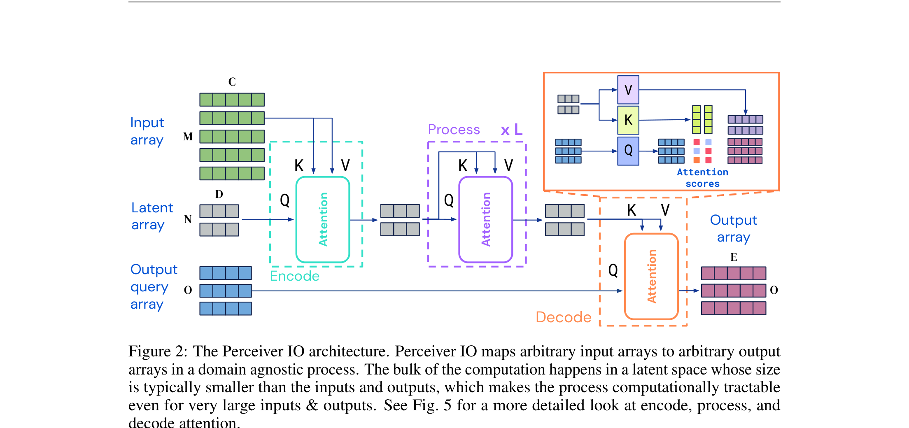
Il limite del Perceiver originale
Nel modello originale l'output è un vettore globale: si fa media dei latenti finali e poi una proiezione lineare. Questo va bene per classificazione, ma è poco naturale per task in cui l'output ha molte posizioni: segmentazione, predizione per pixel, language modeling, optical flow, risposte multiple o output multimodali.
Perceiver originale: input X → latenti Z → average pooling → logits
Il problema non è l'encoder: la compressione in latenti funziona. Il problema è la testa, che butta via la struttura dell'output.
La soluzione: output queries
Perceiver IO introduce un insieme di output queries. Ogni query rappresenta una posizione, un token, un pixel, un punto 3D o una richiesta specifica del task. Il decoder usa queste query per interrogare i latenti finali.
Q = output queries, K,V = latenti finali, output = CrossAttention(Q, K, V)
È la stessa idea della cross-attention del Perceiver, ma girata verso l'output: prima i latenti leggono l'input, poi le query di output leggono i latenti.
Rif. 2.5 · Decode Module e Output Queries
Le query decidono la forma dell'output
Scegli una richiesta: gli stessi latenti vengono letti in modo diverso da query diverse.
Una query globale legge tutti i latenti e produce un vettore di logit.
Encode, process, decode
| Fase | Cosa fa | Forma concettuale |
|---|---|---|
| Encode | Input molto grande → latenti fissi | X(M×C) → Z(N×D) |
| Process | Self-attention profonda nello spazio latente | Z → Z' |
| Decode | Output queries leggono i latenti | Y_queries → Y_outputs |
Encode / Process / Decode: stessa cella attention
Negli appunti il punto sottile è che Perceiver IO non inventa tre reti diverse: cambia chi fa da query e chi fa da memoria. La forma del sottoblocco resta pre-norm, attention, residual, MLP, residual.
| Modulo | Query | Key/Value | Perché serve |
|---|---|---|---|
| Encode | Latenti | Input | Comprime M elementi in N latenti. |
| Process | Latenti | Latenti | Ragiona in profondità nello spazio compatto. |
| Decode | Output queries | Latenti finali | Produce output con forma scelta dal task. |
Y = X_q + CrossAttention(LN(X_q), LN(X_kv))
Y = Y + MLP(LN(Y))
Questa lettura aiuta molto all'orale: il Perceiver separa memoria interna e domande di output. Cambiando le query finali cambia il task, non il backbone.
Con i numeri
Quattro task, stesso schema (numeri del paper e nostri)
- Classificazione ImageNet: 1 query. Uscita 1 × 1.000 logit.
- MLM sui byte: 2.048 byte in ingresso, 2.048 query in uscita, una per byte, e 256 latenti. Matrice del decoder: 2.048 × 256 = 524.288.
- Optical flow: una query per pixel, 368 × 496 = 182.528 query.
- Autoencoding su Kinetics: 802.816 query per il video, 1.920 per l'audio, 1 per la label.
- Un BERT sui 2.048 byte avrebbe matrici 2.048 × 2.048 = 4,2 milioni per strato. Perceiver IO: 524.288 nell'encoder e 256 × 256 = 65.536 in ognuno dei 26 strati latenti.
- Nostro io_mlm: 512 byte, 128 latenti, 512 query. Decoder: 512 × 128 = 65.536 numeri.
Idea chiave
Perceiver IO non cambia il cuore del Perceiver: cambia il modo di estrarre informazione dai latenti. Il decoder a cross-attention rende l'output flessibile senza rinunciare al latent bottleneck.
progetto · 120 epoche per run, dai train_stdout.log
Perché il checkpoint si sceglie sulla validation
Ogni curva è l'accuratezza di validation epoca per epoca. Il pallino segna l'epoca scelta. Cambia il criterio in fondo e guarda cosa succede alla classifica.
Quale numero riporteresti?
Errori tipici
- Le query di output non sono i latenti: sono un secondo array, fatto su misura per il task.
- Le uscite sono indipendenti fra loro: ogni query guarda solo i latenti. Per questo si possono decodificare a pezzi (su Kinetics, in training, solo 512 pixel e 512 campioni audio per esempio).
- Nel decoder il residual a volte si toglie (optical flow): sommerebbe la query all'uscita.
Autoverifica
Cosa aggiunge Perceiver IO al Perceiver?
Un decoder a cross-attention: O query di output leggono i latenti finali e producono O uscite.
Che forma ha la matrice di attenzione del decoder?
O × N. Nel tuo MLM 512 × 128; nell'MLM del paper 2.048 × 256.
Perché il costo resta lineare nell'output?
Ogni query guarda solo gli N latenti, non le altre query: il decoder costa O·N·F (F = canali di Q e K).
Perché il decoder a query è meglio di media + proiezione?
Usa pesi appresi e dipendenti dai dati invece di 1/N uguali per tutti, e si estende a output densi aggiungendo query. Su ImageNet, con la stessa ricetta, Perceiver IO fa 79,0 contro 78,6 (Tab. 7 di Perceiver IO). Il 78,6 è un Perceiver riallenato con una sola lettura e la ricetta nuova; il 78,0 del paper originale usa 8 letture.
Cosa hanno in comune encoder e decoder?
Sono la stessa cella: cross-attention con pre-norm, residual e MLP. Cambia solo chi fa le domande e chi risponde.
Output queries: come il decoder chiede cosa produrre
Le output queries sono il ponte tra una rappresentazione latente compressa e un output con struttura propria. Non sono una decorazione: definiscono quanti output vogliamo e che significato ha ciascun output.
In 30 secondi
- Una query è una domanda al modello: O query danno O risposte.
- Si costruiscono con quello che si sa dell'uscita: la posizione (MLM, flow), il compito (GLUE multitask), la modalità (Kinetics).
- Nel paper: 1 query per ImageNet, 2.048 per l'MLM, 8 per GLUE multitask, 802.816 per il video di Kinetics.
Ti serve prima
Si usa in
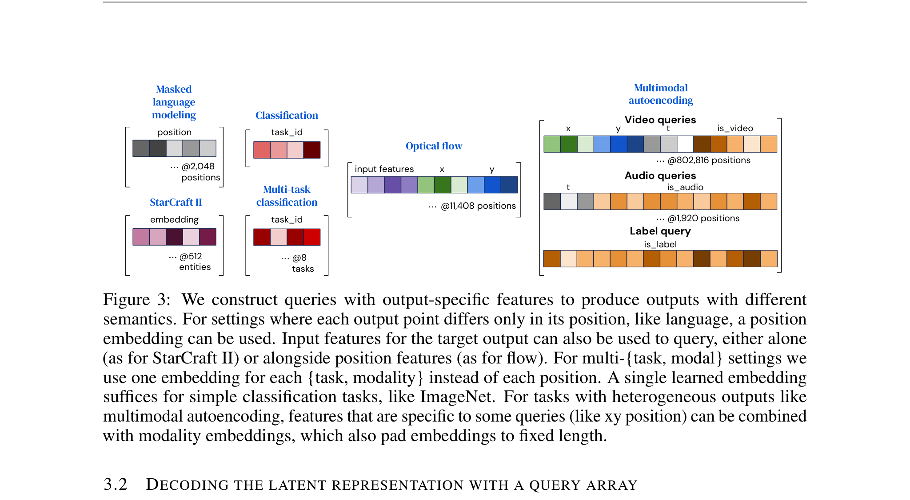
Rif. 2.5 · output queries
Encoder e latenti non cambiano
Seleziona il task: cambia la griglia di query e cambia la forma dell'output, ma la memoria latente resta la stessa.
Latenti finali N×D
cross-attention O×N
Output queries O
O = 1
vettore logit
Una query globale legge la memoria e produce un vettore di classi.
Perché non basta proiettare i latenti?
I latenti finali sono un riassunto compatto dell'input, ma non hanno necessariamente la stessa cardinalità dell'output. Se devo produrre una classe, un vettore basta. Se devo produrre un'etichetta per ogni pixel, ho bisogno di una richiesta per ogni pixel. Se devo produrre token, ho bisogno di richieste per posizioni di token.
Tipi di query
- Query apprese: utili quando l'output ha posizioni fisse ma non direttamente geometriche.
- Query derivate da coordinate: utili per immagini, video, point cloud, optical flow; la query contiene posizione e contesto del punto da predire.
- Query derivate dal task: utili quando l'output dipende da una richiesta esterna, per esempio una posizione temporale o una modalità specifica.
Esempi di task-specific queries negli appunti
Nel Perceiver IO le query non sono tutte uguali: sono costruite in modo da dire al decoder che tipo di risposta deve produrre.
| Task | Query | Output |
|---|---|---|
| Classificazione | Una query globale o un task id | Un vettore di logit |
| Masked language modeling byte-level | Una query appresa per ogni posizione, mascherata o no (2.048 nel paper, 512 nel progetto) | Distribuzione sui byte; la loss usa solo le posizioni mascherate |
| Optical flow | Coordinate e feature del punto | Vettore di movimento |
| Autoencoding multimodale | Query con indicatori video, audio o label | Ricostruzione della modalità richiesta |
La frase da ricordare: le task-specific queries definiscono la forma dell'output; i latenti restano la memoria condivisa.
Con i numeri
Le query del nostro progetto, contate
- io01_cifar: 1 query da 384 numeri. Uscita 1 × 384 → Linear → 10 classi. Test 71,79%.
- io_mlm: 512 query apprese, una per posizione. Uscita 512 × 512 → Linear → 256 byte. 86,68% dei byte mascherati indovinati.
- Le 512 query pesano 512 × 512 = 262.144 parametri. La query singola di GLUE ne pesa 512.
- GLUE single-task: 1 query, testa a 2 classi (3 per MNLI, 1 numero per STS-B). Media sugli 8 task: 71,13.
- GLUE multitask: 8 query, una per task, un solo modello. Media 74,05: +2,92. Il guadagno viene tutto dai task piccoli: STS-B +16,9, RTE +7,6, MRPC +6,1. I task grandi perdono: SST-2 −3,6, QQP −2,0, MNLI −1,9. Attenzione: qui CoLA è misurata con l'accuratezza. Il paper usa il coefficiente di Matthews (una correlazione che vale 0 se il modello risponde sempre uguale). Il nostro 69,13 coincide con la quota di frasi accettabili (721 su 1.043): è il risultato di chi risponde sempre «accettabile». Le nostre medie non si confrontano 1:1 con 81,0.
Decoder a cross-attention
Nel decoder a cross-attention, le query di output diventano Q, mentre i latenti finali forniscono K e V. La matrice di attenzione ha dimensione O × N, dove O è il numero di output richiesti e N è il numero di latenti.
Attention decoder: softmax(\frac{Q_out K_latent^T}{sqrt(d)}) V_latent
Esempio intuitivo
Per una classificazione globale puoi usare una sola output query. Per una segmentazione 224×224 puoi usare una query per posizione. Per un modello byte-level puoi usare query di token. L'encoder resta lo stesso: cambia la griglia di domande poste al latent space.
Esempio dimensionale (segmentazione 224×224)
O = 50.176 query (una per pixel), latenti N=512 × D=1024. Le query producono Q_out ∈ ℝ^(50.176 × D_q); K e V vengono dai latenti, quindi la matrice di attenzione del decoder è 50.176 × 512 e l'output è 50.176 × n_classi. Nota l'asimmetria opposta all'encoder: qui sono le query a essere tante (O ≫ N), non l'input.
Come si costruisce una query per ogni task (dal progetto)
La forma della query e il numero O sono specifici del task; i latenti restano identici. Esempi concreti (Jaegle et al. 2022, Fig. 3, e dal mio progetto):
- MLM byte-level: nel paper (dati C4 + Wikipedia)
O = 2048query, una per posizione byte, apprese e dipendenti dalla posizione; la Tab. 11 dà dimensioneE = 768, la Tab. 6 dice 1280. Nel nostro progetto (WikiText-103)O = 512query da 512. Per ogni posizione il decoder produce un vettore → layer lineare → softmax sui 256 byte. - GLUE single-task:
O = 1query apprendibile (1280 canali in Tab. 6), l'equivalente del token[CLS]di BERT ma esterno all'input; una MLP a 2 strati con tanh ne ricava i logit di classe. - GLUE multi-task (8 task insieme):
O = 8query, una per task; una MLP per task. Media GLUE 81,8 nel paper, pari ai token specifici per task e sopra gli 81,0 dei modelli separati (Tab. 2). - Optical flow: la query combina le feature del punto e le sue coordinate
(x, y). - Multimodal autoencoding: un set di query per modalità. Video: una per pixel di ogni frame (16 × 224 × 224 = 802.816). Audio: una per gruppo di 16 campioni (1.920 nel testo). Label: una. Ogni query porta un vettore di modalità appreso →
O ≈ 804.737totali secondo la Fig. 3 (la Tab. 5 conta 803.297 uscite: tornano con 480 elementi audio invece di 1.920).
Morale: cambiando solo la costruzione delle query (numero O e dimensione E), lo stesso encoder-processor produce token, pixel, etichette o vettori di flusso.
Idea chiave
Le output queries sono il modo con cui Perceiver IO dice: "voglio questo output qui". I latenti contengono l'informazione; le query decidono come leggerla.
progetto · le tre matrici, con i numeri della nostra config
Comprimere e riespandere: le tre matrici a confronto
La stessa operazione — softmax(QKᵀ)V — cambia completamente forma a seconda di chi fornisce Q e chi fornisce K,V. Ogni riquadro è disegnato in scala.
- Q — chi domanda
- K, V — chi risponde
- Forma della matrice
- Celle da calcolare
L'asimmetria è tutto il Perceiver IO. L'encoder comprime: le domande vengono dai 96 latenti, le risposte dai 1.024 pixel. Il decoder riespande: le domande vengono dalle query di output — quante ne vuoi — e le risposte dai latenti. Per questo l'output può avere una forma qualunque senza toccare l'encoder: una classe per CIFAR-10, o un byte per ognuna delle 512 posizioni nel nostro MLM (2.048 nel paper). Lo schema in mezzo è lo stesso; numero di latenti e di letture cambia da run a run.
Errori tipici
- Il numero di query non è un iperparametro di capacità: è il numero di uscite che vuoi.
- Le query dell'MLM non sanno quali byte sono mascherati: sanno solo la posizione. Il contenuto lo trovano nei latenti.
- Nel multitask ogni query è legata a un task, non a una posizione dell'input: per questo non serve un token [CLS] dentro l'input.
Autoverifica
Cosa decide il numero di query O?
Quante uscite produce il modello: 1 per una classe, una per posizione nell'MLM, una per pixel nell'optical flow.
Come sono fatte le query dell'MLM nel paper e nel tuo progetto?
Apprese e dipendenti dalla posizione, una per byte: 2.048 nel paper, 512 nel tuo io_mlm.
Cosa cambia fra GLUE single-task e multitask?
1 query per modello contro 8 query in un solo modello, una per task. Paper: 81,0 → 81,8. Tuo: 71,13 → 74,05, tutto dai task piccoli. Le tue medie hanno CoLA in accuratezza, non in Matthews.
Che query usa l'optical flow?
Le feature dell'input in quel punto più la posizione (x, y), con Fourier features: la query dice al decoder dove guardare.
Quanti parametri pesano le query del tuo MLM?
512 × 512 = 262.144.
Implementazione pratica: forme, scelte e punti fragili
Questa parte traduce la teoria in controlli pratici. È pensata per evitare gli errori più comuni quando si implementa Perceiver o Perceiver IO in PyTorch.
In 30 secondi
- Controlla le forme: se vedi una matrice M × M, hai fatto self-attention sull'input.
- Il modulo condiviso si crea una volta sola, fuori dal ciclo delle letture.
- Nel progetto: bfloat16, gradient clipping a 1, batch 64 (CIFAR-10) e 32 (ModelNet40), una GPU RTX 3080 da 10 GB.
Ti serve prima
Si usa in
Checkpoint delle forme
| Oggetto | Forma | Controllo mentale |
|---|---|---|
| Input arricchito | B × M × C_tot | C_tot = RGB + Fourier |
| Latenti | B × N × D | replicati sul batch, appresi come parametri |
| Q cross-att | B × N × d_QKV | proviene dai latenti |
| K,V cross-att | B × M × d_QKV | provengono dall'input |
| Mappa attenzione | B × N × M | rettangolare, non M × M |
Rif. 3 · shape debugging
Tracer parametrico delle forme
Muovi M, N, D e C_tot: la tabella evidenzia subito dove compare M e dove invece il costo resta nello spazio N.
Controllo rapido: se trovi una matrice M×M, stai facendo self-attention sull'input.
Con i numeri
Le forme del nostro e01, con il batch
- Input: B × M × C_tot = 64 × 1.024 × 261.
- Latenti replicati sul batch: 64 × 96 × 384.
- Q: 64 × 96 × 261. K e V: 64 × 1.024 × 261.
- Attenzione di una lettura: 64 × 96 × 1.024 = 6.291.456 numeri, circa 12,6 MB in bfloat16 (2 byte per numero).
- Nei blocchi latenti: 64 × 8 teste × 96 × 96 = 4.718.592 numeri.
- Uscita: 64 × 10 logit.
calcolatrice · parti dalla tua configurazione
Dal tuo e01 a quello che vuoi
Cambia N, D, T o L e guarda parametri e costo. Il confronto con i parametri contati da PyTorch compare quando la configurazione coincide con una run.
La scelta di d_QKV
Nel paper originale, per ImageNet, la dimensione interna della cross-attention è scelta come d_QKV = min(D, C_tot). Con D = 1024 e C_tot = 261, si ottiene d_QKV = 261. Questo evita di espandere inutilmente ogni pixel a 1024 dimensioni prima dell'attention.
d_QKV = min(D, C_tot) = min(1024, 261) = 261
Shape debugging
Quando qualcosa non torna, il debugging più efficace è stampare le forme dopo ogni blocco, non guardare la loss. La loss arriva troppo tardi; gli errori veri spesso sono nella direzione di Q/K/V, in un transpose sbagliato o in un broadcast dei latenti fatto sull'asse errato.
- Se la mappa è
M × M, hai implementato self-attention sull'input, non Perceiver. - Se i latenti dipendono direttamente dal singolo input prima della cross-attention, non sono più parametri appresi condivisi.
- Se il modulo condiviso viene istanziato dentro il loop, non stai facendo weight sharing.
- Se la residual somma tensori con feature diverse, manca la proiezione di output.
Training con risorse limitate
Il paper lavora con batch grandi e molte TPU; nel progetto o in una riproduzione locale conviene dichiarare esplicitamente che il confronto è qualitativo sui trend, non assoluto sui numeri.
- Batch più piccolo: se non entra in memoria, si usa
gradient accumulationper simulare un batch effettivo più grande. - mixed precision:
torch.cuda.ampriduce memoria e tempo, mantenendo stabile il training se loss scaling e clipping sono gestiti bene. - Dataset ridotti: CIFAR-10 o subset ImageNet servono per verificare convergenza, shape e ablation, non per replicare i numeri del paper.
- Confronto corretto: dire "il trend è coerente" è più onesto che confrontare direttamente una GPU con le TPU dei paper (il Perceiver non dice quante; il Perceiver IO dichiara 64 TPU v3 per ImageNet).
effective_batch = batch_gpu · accumulation_steps
Nel nostro progetto: niente accumulo del gradiente (batch da 32–64 entrano nei 10 GB), mixed precision in bfloat16, gradient clipping a norma 1 (senza, LAMB a lr 4e-3 divergeva a nan) e CIFAR-10 al posto di ImageNet.
Fonte interna
appunti_ml_definitivo.tex: forward pass, appunti sul paper originale, note implementative e confronto con il progetto.
Errori tipici
- Creare il blocco dentro il ciclo delle letture crea pesi nuovi a ogni lettura: niente weight sharing. e16 toglie la condivisione solo ai blocchi latenti (
--no_weight_sharing): 16 blocchi distinti invece di 4. Le cross-attention 2–4 restano condivise, perché manca--no_share_cross_attend. Nel paper, senza sharing, sono distinte anche le cross-attention. - I latenti si replicano sul batch con expand: non si crea un parametro per esempio.
- bfloat16 non ha bisogno del loss scaling; float16 sì.
Autoverifica
Come riconosci da una forma che hai sbagliato architettura?
Se trovi una matrice di attenzione M × M (1.024 × 1.024 nel tuo caso) stai facendo self-attention sull'input, non un Perceiver.
Come si implementa il weight sharing in PyTorch?
Si crea il modulo una volta e lo si chiama più volte. I gradienti di ogni chiamata si sommano sullo stesso nn.Parameter.
Quanto è grande la matrice di attenzione di una lettura nel tuo e01, con il batch?
64 × 96 × 1.024 ≈ 6,3 milioni di numeri, circa 12,6 MB in bfloat16.
Quali scelte ti hanno fatto stare in una GPU da 10 GB?
bfloat16, batch 64 su CIFAR-10 e 32 su ModelNet40, niente accumulo del gradiente. Il gradient clipping a 1 serve invece alla stabilità.
Checklist concettuale finale
Questa non è una sezione di esercizi: è una mappa compatta per controllare di avere in testa tutto il filo logico della lezione.
In 30 secondi
- Il problema: un Transformer confronta tutti gli M elementi con tutti, O(M²). La soluzione: pochi latenti che leggono l'input, O(M·N).
- La profondità vive nei latenti e costa O(N²) per blocco; il weight sharing la rende economica in parametri (44,9 M invece di 326,2 M).
- Perceiver IO aggiunge le query di output: uscite di qualsiasi forma, dal singolo logit a una previsione per ogni byte.
Riassume
Poi
Rif. 1.4 · Forward pass
Ripasso animato del forward pass
L'highlight scorre da solo lungo gli stadi: a ogni passo, una frase ti ricorda cosa succede.
Tutto diventa una matrice M×C, nessuna struttura domain-specific.
Il filo in una pagina
- Il Transformer standard è generale ma paga
O(M²)sulla self-attention dell'input. - Il Perceiver introduce un latent bottleneck:
Minput grandi,Nlatenti fissi. - La cross-attention fa leggere l'input ai latenti:
Qdai latenti,K,Vdall'input. - Il latent transformer ragiona in profondità solo su
N, quindi il costo della profondità non cresce conM. - Il weight sharing rende il blocco iterativo simile a un RNN e riduce i parametri.
- Perceiver IO aggiunge output queries e un decoder a cross-attention per produrre output arbitrari.
Cosa devi saper spiegare bene
- Perché
O(MN)è il punto centrale e perchéN << M. - Perché le Fourier features si concatenano all'input invece di essere sommate.
- Perché i latenti sono parametri appresi, non token dell'input.
- Perché il decoder di Perceiver IO usa output queries.
- Perché residual connections e pre-norm rendono addestrabile un modello profondo.
Domande d'esame: risposte telegrafiche
| Domanda | Risposta corta |
|---|---|
| Perché il Perceiver riduce il costo? | Sostituisce self-attention su M input con cross-attention N×M, dove N << M. |
| Cosa sono i latenti? | Un array appreso, uguale per tutti gli esempi. Nella cross-attention fa le domande (Q) all'input. In Perceiver IO diventa la memoria che le query di output interrogano. |
| Da dove vengono Q, K, V nella cross-attention? | Q dai latenti; K,V dall'input arricchito con Fourier features. |
| Perceiver vs Perceiver IO? | Il primo fa pooling e classificazione; IO aggiunge un decoder a cross-attention con output queries. |
| Perché niente dropout? | Il paper l'ha provato e le prestazioni peggioravano (p. 17). Bottleneck latente, weight sharing e augmentation regolarizzano già. |
Idea chiave
La frase più compatta è: il Perceiver separa la dimensione dell'input dalla profondità del calcolo. Tutto il resto — Fourier features, latenti, cross-attention, weight sharing, output queries — serve a rendere concreta questa separazione.
Riferimenti laterali
Softmax, Fourier features, Cross-Entropy, LayerNorm, attivazioni, residual e ottimizzatori non sono più nel percorso principale: li trovi come riferimenti teorici nella barra laterale e nel pannello a destra.
Autoverifica: i numeri da sapere
Quanti pixel ha un'immagine ImageNet e quanti latenti usa il Perceiver?
50.176 pixel (224 × 224) e 512 latenti da 1.024 numeri.
Quanti canali ha un pixel dopo le Fourier features, e quanto vale d_QKV?
261 canali (3 + 2 · 129). d_QKV = min(261, 1.024) = 261.
Quante letture e quanti blocchi latenti esegue il modello ImageNet?
8 letture e 48 blocchi, di cui solo 6 distinti grazie al weight sharing.
Parametri e FLOPs del modello, con e senza sharing?
44,9 M e 326,2 M di parametri. 707,2 miliardi di FLOPs in entrambi i casi (Tab. 7).
Top-1 su ImageNet, normale e con pixel permutati?
78,0 e 78,0. ResNet-50 con Fourier features: 73,5 e 39,4.
Risultati su ModelNet40 e AudioSet?
ModelNet40 85,7% (PointNet++ 91,9). AudioSet 38,3 mAP con audio grezzo, 43,5 con audio e video.
Perceiver IO su GLUE sui byte?
81,0 di media, contro 71,5 di un BERT sui byte con gli stessi FLOPs e 81,1 di BERT Base sui token.
Perceiver IO sull'optical flow?
EPE 1,81 su Sintel.clean e 2,42 su Sintel.final, meglio di RAFT (1,95 e 2,57). Su KITTI 4,98 contro 4,23 di RAFT.
Riferimento: Softmax
La softmax trasforma logit arbitrari in una distribuzione di probabilità. Nel Perceiver compare sia dentro l'attention, dove normalizza i pesi, sia alla fine della classificazione.
In 30 secondi
- Softmax: p_i = e^(z_i) ÷ Σ_j e^(z_j). Trasforma numeri qualsiasi in probabilità positive che sommano a 1.
- La temperatura T divide i logit: T piccola rende la distribuzione netta, T grande la appiattisce.
- Nel Perceiver compare due volte: su ogni riga dell'attenzione (50.176 pesi per latente) e sui logit delle classi.
Dove si usa
Collegato a
Percorso «Parti da zero» · 3 di 5 — prossimo: ·
p_i = \frac{e^(z_i)}{Σ_j e^(z_j)}
Le proprietà da ricordare sono tre: ogni probabilità è positiva, la somma è 1, e l'ordine dei logit viene preservato. Se un logit è più grande, riceve probabilità maggiore.
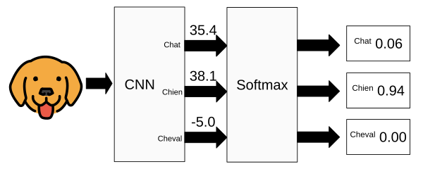
Temperatura
p_i = \frac{e^(\frac{z_i}{T})}{Σ_j e^(\frac{z_j}{T})}
- T alta: distribuzione più piatta, modello meno sicuro.
- T bassa: distribuzione più concentrata, quasi argmax.
- T = 1: softmax standard.
Rif. A · Softmax
Temperatura interattiva
Stessi logit, distribuzione diversa: abbassa T per rendere il modello più sicuro, alzala per appiattire.
T = 1: softmax standard.
Stabilità numerica
Per evitare overflow si sottrae il massimo logit prima degli esponenziali. Il risultato è identico, ma gli esponenti non esplodono.
m = max_j(z_j)
p_i = \frac{e^(z_i - m)}{Σ_j e^(z_j - m)}
Con i numeri
Tre logit, tre temperature
- Logit z = (2; 1; 0,1). Qui il punto e virgola separa i numeri, la virgola è il decimale. Esponenziali: 7,389; 2,718; 1,105. Somma 11,212.
- Probabilità con T = 1: 0,659; 0,242; 0,099.
- T = 0,5 (logit raddoppiati: 4; 2; 0,2): 0,864; 0,117; 0,019. Più netta.
- T = 2 (logit dimezzati: 1; 0,5; 0,05): 0,502; 0,304; 0,194. Più piatta.
- Stabilità: con z = (1000; 999), e^1000 va in overflow. Si sottrae il massimo: (0; −1) → e^0 = 1 ed e^−1 = 0,368 → p = 0,731; 0,269. Stesso risultato, nessun overflow.
- Nell'attenzione la divisione per √d fa da temperatura: con d = 261, √d ≈ 16.
Collegamento al Perceiver
Nell'attention la softmax trasforma QKT√d in pesi per riga. Nella testa finale trasforma i logit ImageNet in probabilità sulle classi.
Errori tipici
- La softmax non è «il massimo»: dà peso anche agli altri elementi. È una versione morbida dell'argmax.
- Aggiungere la stessa costante a tutti i logit non cambia niente: per questo si può sottrarre il massimo.
- Nell'attenzione la softmax è su ogni riga, cioè su ogni query, non su tutta la matrice.
Autoverifica
Calcola la softmax di (2, 1, 0,1).
Esponenziali 7,389, 2,718, 1,105, somma 11,212: p = (0,659, 0,242, 0,099).
Cosa fa la temperatura?
Divide i logit. T < 1 rende la distribuzione più netta, T > 1 più piatta. Con T → 0 tende all'argmax, con T → ∞ alla distribuzione uniforme.
Perché si sottrae il massimo prima di esponenziare?
Per evitare overflow: la softmax non cambia se si sottrae la stessa costante a tutti i logit.
Dove compare la softmax nel Perceiver?
Su ogni riga della matrice di attenzione (cross-attention, self-attention, decoder) e sui logit finali di classificazione.
Riferimento: Fourier Features e Positional Encoding
L'attention è cieca alla posizione: senza encoding posizionale, una permutazione degli elementi lascia il contenuto indistinguibile. Le Fourier features risolvono questo problema codificando coordinate continue a molte frequenze.
In 30 secondi
- L'attenzione non vede l'ordine: senza una codifica di posizione, un insieme di pixel o di byte è solo un mucchio.
- Fourier features: la coordinata più seno e coseno a K frequenze. d · (2K + 1) numeri per elemento.
- Il Perceiver le concatena all'input; il Transformer di Vaswani le somma agli embedding.
Dove si usa
Collegato a
Il problema
Self-attention e cross-attention operano su insiemi di vettori. Da sole non sanno che un pixel è in alto a sinistra o in basso a destra. Il Perceiver quindi concatena le coordinate codificate all'input.
z = [contenuto || positional encoding]
Rif. B · Fourier feature encoding
Onde a frequenze multiple
Ogni banda è un seno a frequenza più alta della precedente. Nel Perceiver le frequenze salgono a passi uguali, da 1 fino a una frequenza massima fissa (Nyquist); qui fino a 8. NeRF invece le raddoppia: 1; 2; 4; 8. Aumenta K per vedere come più bande arricchiscono la codifica; passa a "Somma" per il segnale combinato.
Formula pratica nel Perceiver
Per ogni dimensione spaziale si usano seno e coseno a frequenze equispaziate, più la coordinata grezza. Per immagini 2D con K = 64 bande e C = 3 canali RGB:
C_tot = C + d · (2K + 1)
C_tot = 3 + 2 · (2 · 64 + 1) = 261
Perché concatenare e non sommare?
La somma mescola colore e posizione nello stesso spazio. La concatenazione conserva separatamente contenuto e coordinate, lasciando alla cross-attention il compito di imparare come combinarli.
Con i numeri
Le posizioni del nostro testo, in numeri
- Ogni banda f dà due numeri: sin(f · π · x) e cos(f · π · x). Nel nostro MLM la posizione del byte i è x = i ÷ 511: 512 posizioni da 0 a 1, cioè 511 passi.
- 6 bande equispaziate da 1 a 64: f = 1; 13,6; 26,2; 38,8; 51,4; 64.
- Canali: 1 · (2·6 + 1) = 13. Con i 257 del one-hot: 270 per byte.
- Byte 0 (x = 0): tutti i seni valgono 0 e tutti i coseni 1.
- Byte 1 (x = 0,002): banda 1 sin = 0,006 (quasi uguale al byte 0); banda 3: sin(26,2 · π · 0,00196) = sin(0,161) ≈ 0,160. Le bande alte separano i vicini.
- Byte 511 (x = 1): banda 1 sin = 0, cos = −1; banda 2 sin = −0,951. Nessuna coppia di posizioni ha lo stesso vettore completo.
- Attenzione: il paper mette le coordinate in [−1, 1], come facciamo noi sulle immagini. E il Perceiver IO, sul testo, non usa Fourier: somma una posizione appresa (Tab. 6).
Collegamento al Perceiver
La permutation invariance del Perceiver su ImageNet permutato dipende proprio da questa scelta: le Fourier features viaggiano insieme al pixel.
Errori tipici
- Le frequenze del Perceiver sono lineari, quelle di NeRF sono potenze di 2: con 64 bande NeRF arriverebbe a 2⁶⁴.
- Concatenare aggiunge canali (e parametri nella prima proiezione); sommare no, ma mescola contenuto e posizione.
- Anche una posizione appresa funziona (70,9% nel paper, 71,07% nel nostro e03), ma non si estende a risoluzioni nuove.
Autoverifica
Perché l'attenzione ha bisogno di una codifica di posizione?
Perché è una somma pesata su un insieme: se rimescoli gli elementi il risultato non cambia. Senza posizione, nel tuo e29, CIFAR-10 scende al 32,36%.
Quanti canali aggiunge la codifica di Fourier con d assi e K bande?
d · (2K + 1). Immagini con K = 64: 258; testo nel tuo progetto con K = 6: 13; punti 3D con K = 6: 39.
Concatenare o sommare: che differenza c'è?
Concatenando, posizione e contenuto stanno in canali separati. Sommando si risparmiano canali ma si mescolano. Il Perceiver concatena, i modelli di linguaggio di solito sommano.
Qual è la frequenza massima giusta?
Nyquist, cioè metà del numero di campioni per asse: 112 su ImageNet, 16 su CIFAR-10.
Riferimento: Cross-Entropy Loss
La cross-entropy misura quanto la distribuzione predetta si discosta dalla classe corretta. Per classificazione multi-classe è la loss naturale insieme a softmax.
In 30 secondi
- Cross-entropy: ℒ = −log p_c, dove p_c è la probabilità data alla classe giusta.
- Con C classi equiprobabili vale ln C: 2,303 per 10 classi, 5,545 per 256 byte, 6,908 per 1.000 classi.
- Con la softmax il gradiente sui logit è semplicemente p − y.
Dove si usa
Collegato a
Percorso «Parti da zero» · 4 di 5 — prossimo: ·
L = - Σ_i y_i log(p_i)
Se y è one-hot, resta solo il termine della classe corretta:
L = -log(p_c)
Quindi la loss è piccola quando il modello assegna probabilità alta alla classe corretta, e cresce rapidamente quando quella probabilità è bassa.
Rif. C · Cross-Entropy Loss
Loss = -log(p_c)
Muovi la probabilità assegnata alla classe corretta: la loss esplode quando il modello è sicuro della cosa sbagliata.
L = -log(0.70) ≈ 0.357
Qui log è il logaritmo naturale (ln, base e): −ln 0,70 = 0,357. In base 10 verrebbe 0,155.
Perché il logaritmo
- Massima verosimiglianza: minimizzare
-log(p_c)equivale a massimizzare la probabilità assegnata alla classe vera. - Penalità asimmetrica: sbagliare con confidenza costa molto:
-log(0.01) ≈ 4.605; essere quasi corretti costa poco:-log(0.99) ≈ 0.010. - Segnale utile anche quando il modello è molto sbagliato: la loss cresce rapidamente quando
p_c → 0, quindi il gradiente non diventa subito inutile.
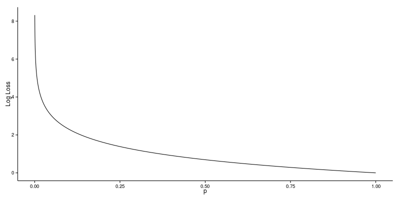
-log(p): vicino a 1 la loss è quasi nulla, vicino a 0 cresce molto rapidamente.Perché softmax + cross-entropy è speciale
La derivata rispetto ai logit si semplifica in modo pulitissimo:
\frac{∂L}{∂z} = p - y
Perché p − y? Scrivo la loss con i logit: L = −ln p_c = −z_c + ln Σ_j e^(z_j). Derivo rispetto a z_k. Il primo termine dà −1 solo se k è la classe giusta, cioè −y_k. Il secondo dà e^(z_k) ÷ Σ_j e^(z_j) = p_k. Quindi ∂L/∂z_k = p_k − y_k.
Questa è una delle formule più importanti per capire il backward della classificazione: il gradiente è semplicemente errore predetto meno target vero.
Esempio numerico completo
Classificazione a 3 classi, classe vera = 2. Se p = [0.1, 0.7, 0.2] e y = [0, 1, 0], la somma collassa sul secondo termine.
L = -(0·log(0.1) + 1·log(0.7) + 0·log(0.2)) = -log(0.7) ≈ 0.357
\frac{∂L}{∂z} = p - y = [0.1, -0.3, 0.2]
Il gradiente negativo sulla classe corretta dice all'ottimizzatore di aumentare quel logit; i gradienti positivi sulle altre classi dicono di ridurle.
Perché non usare MSE per classificazione
L'MSE sembra naturale perché confronta predizione e target, ma con softmax o sigmoid può produrre gradienti piccoli proprio quando la predizione è molto sbagliata. La cross-entropy evita questo problema perché lavora sulla log-likelihood della classe vera.
MSE = \frac{1}{K} Σ_k (p_k - y_k)^2
Cross-Entropy = -log(p_c)
Per questo, nelle teste di classificazione del Perceiver, softmax e cross-entropy sono la coppia standard.
Con i numeri
Quanto costa sbagliare
- p_c = 0,659 → ℒ = −ln 0,659 = 0,417.
- p_c = 0,099 → ℒ ≈ 2,31. Sbagliare con sicurezza costa molto.
- Modello che non sa niente, 10 classi (CIFAR-10): p = 0,1 → ℒ = ln 10 = 2,303.
- 256 byte (il nostro MLM): ln 256 = 5,545. 1.000 classi (ImageNet): ln 1.000 = 6,908.
- Per scendere a ℒ = 0,1 serve p_c = e^−0,1 = 0,905. La loss 0 esatta richiederebbe p_c = 1, impossibile con logit finiti.
Collegamento al Perceiver
Dopo pooling e classificatore lineare, il Perceiver usa cross-entropy standard. Il gradiente p - y torna indietro attraverso la media, poi blocchi latenti e cross-attention, alternati. Arriva fino alle proiezioni K e V e all'array latente iniziale, che è appreso. L'input (RGB + Fourier) non ha parametri: lì il gradiente si ferma. Con la posizione appresa arriva anche alla tabella delle posizioni.
Errori tipici
- La loss di partenza attesa è ln C, non 0 e non 1: è un controllo utile all'inizio del training.
- Accuracy e loss non vanno sempre insieme: la loss punisce anche le risposte giuste date con poca sicurezza.
- Con etichette multiple (AudioSet) si usa una sigmoide per classe, non la softmax (p. 8 del paper).
Autoverifica
Scrivi la cross-entropy per un esempio.
ℒ = −log p_c, con p_c la probabilità che il modello dà alla classe giusta.
Che loss ti aspetti all'inizio del training su CIFAR-10 e sul tuo MLM?
ln 10 ≈ 2,30 e ln 256 ≈ 5,55: il modello dà probabilità uguali a tutte le classi.
Perché si usa il logaritmo?
Trasforma il prodotto delle probabilità del dataset in una somma, punisce molto gli errori sicuri ed è il negativo della log-verosimiglianza.
Qual è il gradiente di softmax + cross-entropy rispetto ai logit?
p − y.
Riferimento: Layer Normalization
LayerNorm normalizza ogni campione lungo le sue feature. È indipendente dalla batch size, quindi è perfetta per Transformer, sequenze e architetture come Perceiver.
In 30 secondi
- LayerNorm: per ogni riga (un pixel, un latente) sottrae la media, divide per la deviazione standard, poi applica γ e β appresi.
- Non dipende dal batch: funziona uguale con batch 1 o 1.024.
- Nel Perceiver è pre-norm: sta prima di attention e MLP, e il residual resta una strada pulita.
Dove si usa
Collegato a
μ = \frac{1}{D} Σ_{j=1}^{D} x_j
σ = \sqrt{\frac{1}{D} Σ_{j=1}^{D} (x_j - μ)^2 + ε}
LN(x)_j = γ_j · \frac{x_j - μ}{σ} + β_j
Cosa fa riga per riga
LayerNorm non guarda altri esempi del batch. Prende una riga alla volta, per esempio un pixel embedded o un latente, e lavora solo sulle sue feature.
- Calcola la media
μdelle feature della riga. - Calcola la deviazione standard
σ, conεper evitare divisioni instabili. - Standardizza ogni feature: sottrae la media e divide per la scala.
- Applica due parametri appresi per feature:
γridà ampiezza,βridà offset.
Rif. D · Layer Normalization
LayerNorm riga per riga
Stesso esempio degli appunti: x=[1,2,3,4]. Guarda media, varianza e valori normalizzati.
muLayerNormμ = 2.5
varianzaσ² = 1.25
output[-1.342, -0.447, 0.447, 1.342]
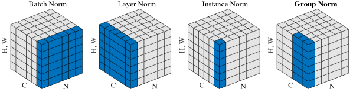
LayerNorm vs BatchNorm
| Metodo | Statistiche | Quando funziona bene |
|---|---|---|
| BatchNorm | lungo il batch | CNN con batch grandi e stabili |
| LayerNorm | lungo le feature del singolo campione | Transformer, batch piccoli, sequenze variabili |
LayerNorm esempio numerico
x = [1, 2, 3, 4], D = 4
Per semplicità prendiamo γ = 1, β = 0 ed ε = 0. La media è 2.5; la varianza è 1.25; la deviazione standard è circa 1.118.
μ = \frac{1 + 2 + 3 + 4}{4} = 2.5
σ^2 = \frac{(1-2.5)^2 + (2-2.5)^2}{4}
+ \frac{(3-2.5)^2 + (4-2.5)^2}{4}
σ^2 = \frac{2.25 + 0.25 + 0.25 + 2.25}{4} = 1.25
σ = sqrt(1.25) ≈ 1.118
LN(x) ≈ [-1.342, -0.447, 0.447, 1.342]
Il risultato ha media circa 0 e varianza circa 1. Poi γ e β permettono alla rete di imparare quanto mantenere o modificare questa normalizzazione.
Dimensioni dei parametri γ e β nel Perceiver
LayerNorm non cambia mai la forma del tensore: riceve N × F e restituisce N × F. Cambia solo la scala interna dei valori.
| LayerNorm | Input | γ, β | Output |
|---|---|---|---|
| Array di input | 50176 × 261 | 261 valori ciascuno | 50176 × 261 |
| Latent array | 512 × 1024 | 1024 valori ciascuno | 512 × 1024 |
Quindi una LN sui pixel non ha un vettore γ diverso per ogni pixel: ha un solo vettore lungo quanto le feature, riusato su tutte le righe.
Pre-norm nel Perceiver
Post-norm: y = LN(x + f(x))
Pre-norm: y = x + f(LN(x))
Il Perceiver usa il pattern pre-norm: il sottoblocco riceve input normalizzato, ma la residual connection resta un percorso pulito per il gradiente.
He 2016 · Xiong 2020 · il motivo per cui i Transformer profondi si addestrano
Dove passa la strada del residuo
Stessi identici blocchi, cablati in ordine diverso. Segui la linea verde: è il percorso che il gradiente fa all'indietro.
Pre-norm
1.00
frazione di gradiente che arriva al primo blocco
Post-norm (fattore 0,5 per blocco)
1.4 × 10⁻¹⁷
stesso conto, strada diversa
Il Perceiver ripete questo motivo circa 112 volte fra cross-attention e latent transformer. Con il post-norm il gradiente verso i primi blocchi deve attraversare tutte le LayerNorm. Nei Transformer profondi questo rende il training instabile e richiede warmup. Il paper del Perceiver non prova il post-norm: è un rischio noto, non un risultato misurato.
Con i numeri
LayerNorm su un vettore, e quanto pesa nel nostro modello
- x = (2; 4; 6; 8). Media 5, varianza (9 + 1 + 1 + 9) ÷ 4 = 5, deviazione standard 2,236.
- Normalizzato: (−1,342; −0,447; 0,447; 1,342). Media 0, varianza 1.
- Con γ = 1 e β = 0 resta così; il training impara γ e β per ogni canale.
- Parametri: 2 per canale. Una LayerNorm su D = 384 ha 768 parametri.
- Nel nostro e01 le cross-attention distinte sono 2: la prima, con pesi propri, e quella condivisa dalle letture 2–4. Ognuna ha 3 LayerNorm: 768 + 522 + 768 = 2.058 parametri. I 4 blocchi latenti distinti, riusati a ogni lettura, hanno 2 LayerNorm ciascuno: 1.536 parametri. Totale 10.260, lo 0,1% dei parametri. Qui contiamo i moduli distinti, non quelli eseguiti.
Collegamento al Perceiver
Nel Perceiver ci sono molte LayerNorm: prima dell'attention e prima dell'MLP, sia nel cross-attention block sia nel latent transformer. Negli appunti viene stimato un ordine di circa 112 normalizzazioni/residual sui blocchi completi: senza pre-norm il training profondo sarebbe molto più fragile.
normalizzazione · Ioffe&Szegedy 2015 / Ba 2016
Normalizzazione: su quale asse?
BatchNorm vs LayerNorm: cosa cambia e perché i Transformer scelgono LayerNorm.
1Attivazioni
2Batch Norm
3Layer Norm
4Scala e sposta
5Nei Transformer
Errori tipici
- LayerNorm normalizza sulle feature di un esempio; BatchNorm su una feature attraverso il batch.
- Pre-norm e post-norm non sono la stessa cosa: con pre-norm la somma residua non passa mai dentro la normalizzazione.
- Prima dell'attenzione ci sono due LayerNorm separate: una sui latenti (D) e una sull'input (C_tot). Una terza sta prima dell'MLP.
Autoverifica
Normalizza (2, 4, 6, 8) con LayerNorm, γ = 1 e β = 0.
Media 5, deviazione standard 2,236: (−1,342, −0,447, 0,447, 1,342).
LayerNorm o BatchNorm nei Transformer? Perché?
LayerNorm: non dipende dal batch né dalla lunghezza della sequenza, e si comporta allo stesso modo in training e in inferenza.
Cosa vuol dire pre-norm?
La normalizzazione sta dentro il ramo: y = x + f(LN(x)). La strada x → y resta un'identità pulita per il gradiente.
Quante LayerNorm ha una cross-attention del Perceiver?
Tre: sui latenti, sull'input e prima dell'MLP.
Riferimento: Funzioni di Attivazione
Le attivazioni introducono non-linearità. Senza di esse, una rete profonda sarebbe ancora una trasformazione lineare unica.
In 30 secondi
- Senza non-linearità due strati lineari sono uno strato lineare solo: la profondità non servirebbe.
- ReLU(x) = max(0, x). GELU(x) = x · Φ(x): liscia e con un piccolo passaggio sotto lo zero. Φ(x) è la probabilità che una gaussiana standard sia minore di x.
- Il Perceiver usa GELU negli MLP, come GPT-2.
Dove si usa
ReLU
ReLU(x) = max(0, x)
ReLU'(x) = 1 se x > 0, 0 se x ≤ 0
È semplice, veloce e non satura per valori positivi. Il limite è il problema dei neuroni morti: se un neurone resta sempre nella zona negativa, il gradiente è zero e quel neurone non si aggiorna più.
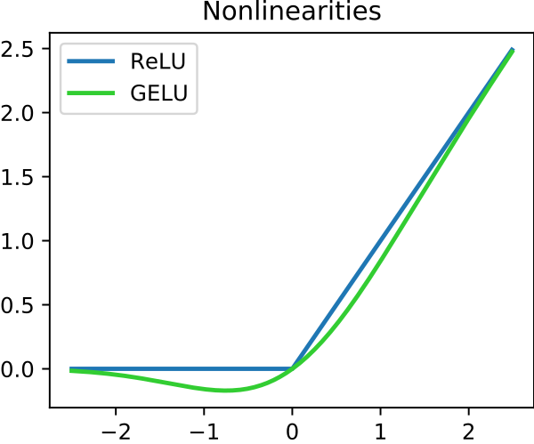
Rif. E · Funzioni di Attivazione
Punto mobile sulle attivazioni
Muovi x e confronta cosa lasciano passare ReLU, GELU, sigmoid e tanh.
GELU
GELU(x) = x · Φ(x)
Φ(x) = 0.5 · (1 + erf(\frac{x}{sqrt(2)}))
GELU(x) ≈ 0.5x · (1 + tanh(sqrt(\frac{2}{π}) · (x + 0.044715x^3)))
GELU è usata in GPT-2 e quindi nel latent transformer del Perceiver. Rispetto a ReLU è più liscia: invece di azzerare tutto ciò che è negativo, attenua gradualmente. L'interpretazione utile è: x viene mantenuto con probabilità legata alla gaussiana standard.
Sigmoid e Tanh: perché compaiono meno qui
Sigmoid e tanh sono fondamentali nelle RNN e nelle gate, ma nei Transformer moderni saturano troppo facilmente per essere la scelta principale negli MLP interni.
sigmoid(x) = \frac{1}{1 + e^{-x}}
tanh'(x) = 1 - tanh(x)^2
| Funzione | Range | Derivata/gradiente | Uso tipico |
|---|---|---|---|
| ReLU | [0, +∞) | 0 o 1 | CNN, MLP classici |
| GELU | ≈(-0.17, +∞) | smooth | GPT, BERT, Perceiver |
| Sigmoid | (0, 1) | satura agli estremi | gate, output binario |
| Tanh | (-1, 1) | satura agli estremi | RNN/LSTM classiche |
Perché conta nei Transformer
L'MLP interno ai blocchi attention espande la dimensione (nei Transformer classici; nel Perceiver del paper no), applica una non-linearità e poi proietta indietro. Nel Perceiver, questo MLP serve a dare capacità espressiva ai latenti dopo l'attention.
MLP(x) = W2 · GELU(W1 x + b1) + b2
Perché GELU invece di ReLU nel Perceiver
- Gradienti più fluidi: non c'è il punto angoloso di ReLU in
x = 0. - Meno neuroni morti: valori leggermente negativi non vengono tagliati brutalmente a zero.
- Standard dei Transformer: GPT-2 e BERT hanno reso GELU la scelta pratica per blocchi attention + MLP.
- MLP: nel paper del Perceiver l'MLP non allarga. Va da
DaD, con GELU in mezzo (fattore 1, p. 6 e 17). Il fattore 4 dei Transformer classici lo usa il nostro codice: 384 → 1.536 → 384.
Con i numeri
GELU e ReLU a confronto, punto per punto
- Φ(x) è la probabilità che una variabile gaussiana standard sia minore di x: Φ(0) = 0,5; Φ(1) ≈ 0,841; Φ(−1) ≈ 0,159; Φ(2) ≈ 0,977. GELU moltiplica x per questo numero.
- x = −3: ReLU 0, GELU = −3 · 0,00135 = −0,004.
- x = −1: ReLU 0, GELU = −1 · 0,159 = −0,159. GELU lascia passare un po' di segnale negativo.
- x = 0,5: ReLU 0,5, GELU 0,346.
- x = 2: ReLU 2, GELU = 2 · 0,977 = 1,954. Per x grandi coincidono.
- Sigmoide: la derivata vale al massimo 0,25. Attraverso 10 strati: 0,25¹⁰ ≈ 9,5 × 10⁻⁷. È il vanishing gradient.
Collegamento al Perceiver
La parte attention sposta informazione; l'MLP con GELU la rielabora localmente su ogni latente. Entrambe servono.
Errori tipici
- La ReLU non è derivabile in 0 e ha gradiente zero per tutti gli x negativi: un neurone può «morire».
- GELU non è una sigmoide: per x grandi si comporta come l'identità.
- L'attivazione sta nell'MLP, non nell'attenzione: l'attenzione ha già la sua non-linearità, la softmax.
Autoverifica
Perché servono le funzioni di attivazione?
Senza, una pila di strati lineari collassa in un solo strato lineare.
Quanto valgono ReLU e GELU in x = −1 e x = 2?
ReLU 0 e 2; GELU −0,159 e 1,954.
Perché sigmoide e tanh causano vanishing gradient?
La derivata della sigmoide è al massimo 0,25 (quella di tanh al massimo 1, e molto meno lontano da 0): moltiplicata strato dopo strato, tende a zero.
Quale attivazione usa il Perceiver e dove?
GELU, dentro gli MLP della cross-attention e dei blocchi latenti.
Riferimento: Residual Connections
Le residual connections permettono di addestrare reti molto profonde facendo imparare a ogni blocco una correzione rispetto all'identità, non l'intera trasformazione da zero.
In 30 secondi
- Residual: y = x + f(x). Il blocco impara solo una correzione rispetto all'identità.
- Nel backward: ∂y/∂x = I + ∂f/∂x. Il termine I porta indietro il gradiente anche quando f non aiuta.
- Nel Perceiver ogni attention e ogni MLP ha il suo residual: 112 somme residue nel modello ImageNet.
Dove si usa
Collegato a
Residual learning
Invece di chiedere al blocco di imparare direttamente la trasformazione desiderata H(x), gli facciamo imparare il residuo F(x) = H(x) - x. Se il blocco non serve, può imparare quasi zero e lasciare passare l'identità.
H(x) = F(x) + x
F(x) = H(x) - x
se F(x) ≈ 0, allora y ≈ x
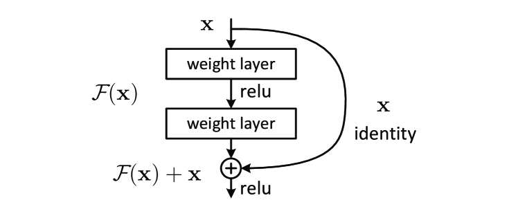
y = F(x) + x.
Rif. F · residual connections
gradiente con skip ON
Confronta il percorso all'indietro: senza skip il segnale si attenua; con skip resta una strada identità.
F(x)
+ x
Con residual: ∂L/∂x contiene il termine identità I, quindi il gradiente non dipende solo dalla catena di Jacobiane.
Il problema: degradazione nelle reti profonde
In teoria aggiungere strati non dovrebbe peggiorare una rete: i nuovi strati potrebbero imparare l'identità. In pratica, senza residual, imparare l'identità attraverso molti layer non lineari è difficile e il training degrada.
Perché funziona: flusso del gradiente
Senza residual: \frac{∂L}{∂x} = \frac{∂L}{∂y} · \frac{∂F}{∂x}
Con residual: \frac{∂L}{∂x} = \frac{∂L}{∂y} · (\frac{∂F}{∂x} + I)
Il termine I è il percorso diretto del gradiente. Anche se la trasformazione F attenua il gradiente, la skip connection mantiene aperta una strada.
Esempio numerico: confronto flusso del gradiente
Supponiamo tre blocchi, ciascuno con Jacobiana equivalente a 0.5I. Senza residual, il gradiente viene moltiplicato ripetutamente; con residual, ogni blocco aggiunge il percorso identità.
Senza residual: (0.5)^3 · g = 0.125g
Con residual: (0.5 + 1)^3 · g = 3.375g
Con 56 strati senza residual: (0.5)^56 ≈ 1.4 · 10^{-17}
Il fattore 0,5 è esagerato apposta. Il termine I garantisce solo che il prodotto non vada a zero. Resta vicino a 1 se ogni ramo F ha derivata piccola: 1,1¹⁰ ≈ 2,6, mentre 1,5¹⁰ ≈ 58. Nel pre-norm la strada residua cresce strato dopo strato e la LayerNorm divide per la sua scala: così il contributo di ogni ramo resta piccolo. Il punto da ricordare è che la skip connection evita che il prodotto di molte Jacobiane azzeri il segnale.
Dal nostro checkpoint. In e01, nei primi 3 dei 4 blocchi latenti, la γ della LayerNorm prima dell'MLP vale al massimo 0,0004. L'MLP riceve quasi lo stesso vettore per ogni latente: il ramo si è «spento» da solo e il blocco lascia passare il residuo. Senza la strada residua, spegnere un ramo spegnerebbe tutto il blocco.
Pattern pre-norm nel Perceiver
y = x + f(LN(x))
La LayerNorm stabilizza l'input del sottoblocco, mentre la residual preserva informazione e gradiente. È il pattern ripetuto in cross-attention, latent transformer e decoder IO.
Dove sono le residual nel Perceiver
Ogni modulo attention segue lo stesso schema: LayerNorm prima del sottoblocco, attention o MLP, poi somma residua. Questo accade nel cross-attention iniziale, nei blocchi self-attention latenti e nel decoder di Perceiver IO.
Attention block: y = x + Attention(LN(x))
MLP block: y = x + MLP(LN(x))
Negli appunti il conto porta a un ordine di circa 112 residual connection nei blocchi completi. È uno dei motivi per cui il latent array può essere raffinato molte volte senza perdere il segnale iniziale.
Con i numeri
Perché 1 + qualcosa batte qualcosa
- Senza residual, 10 strati con derivata 0,1 ciascuno: 0,1¹⁰ = 10⁻¹⁰. Il gradiente sparisce.
- Con residual la derivata di ogni strato è 1 + 0,1 = 1,1: dopo 10 strati 1,1¹⁰ = 2,59.
- Con derivata −0,1: 0,9¹⁰ = 0,35. Resta nello stesso ordine di grandezza.
- Modello ImageNet del paper: 8 cross-attention + 48 blocchi = 56 moduli, ognuno con 2 residual (attention e MLP): 112 somme.
- Nostro e01: 4 + 16 = 20 moduli, 40 somme residue.
Collegamento al Perceiver
Il Perceiver è profondo e iterativo: senza residual, i gradienti non raggiungerebbero stabilmente i blocchi iniziali e il latent array sarebbe molto più difficile da addestrare.
Errori tipici
- Il residual non aggiunge parametri: è una somma.
- Serve che x e f(x) abbiano la stessa forma: per questo la cross-attention riporta l'uscita da 261 a D canali prima di sommare.
- Nel decoder di Perceiver IO il residual a volte si toglie (optical flow): sommerebbe la query all'uscita.
Autoverifica
Scrivi un blocco residuo e la sua derivata.
y = x + f(x); ∂y/∂x = I + ∂f/∂x.
Perché i residual permettono reti profonde?
Il gradiente ha sempre la strada dell'identità: il prodotto delle derivate resta vicino a 1 invece di sparire.
Quante somme residue ha il Perceiver ImageNet?
112: 56 moduli (8 cross-attention e 48 blocchi latenti), ognuno con un residual dopo l'attenzione e uno dopo l'MLP.
Perché nella cross-attention serve la proiezione W_o?
L'uscita dell'attenzione ha 261 canali, i latenti 1.024: W_o la riporta a 1.024 per poterla sommare.
Riferimento: Ottimizzatori
Gli ottimizzatori trasformano i gradienti in aggiornamenti dei pesi. Per il Perceiver questa parte è importante perché il paper usa LAMB, non un semplice SGD.
In 30 secondi
- SGD: w ← w − η·g. Il momentum media i gradienti nel tempo. Adam scala il passo di ogni peso con la storia dei suoi gradienti.
- LAMB prende la direzione di Adam e fissa l'ampiezza del passo per strato: η volte la norma dei pesi di quello strato, fino a norma 10. Oltre, il passo resta η · 10.
- Il Perceiver usa LAMB con learning rate 0,004; noi lo stesso, con il gradient clipping a 1.
Dove si usa
Collegato a
SGD (Stochastic Gradient Descent)
W_{t+1} = W_t - η ∇W L(W_t)
È l'aggiornamento più semplice: si va nella direzione opposta al gradiente con learning rate globale η. È robusto ma sensibile alla scelta del learning rate e può oscillare nelle valli strette.
- η troppo alto: il training può divergere o saltare oltre il minimo.
- η troppo basso: converge lentamente e può restare bloccato in zone piatte.
- Stesso η per tutti i parametri: non distingue pesi con gradienti frequenti da pesi aggiornati raramente.
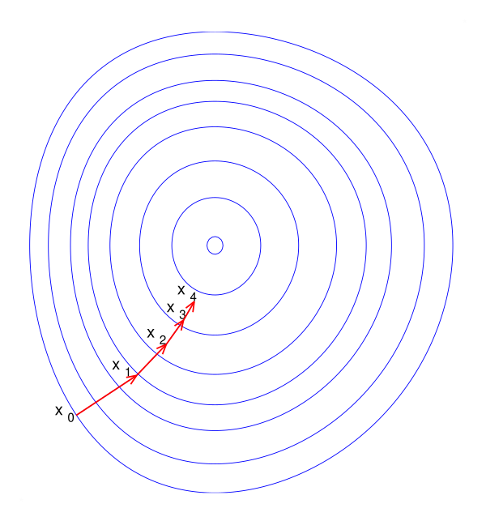
SGD con Momentum
v_t = β v_{t-1} + ∇W L(W_t)
W_{t+1} = W_t - η v_t
Il momentum accumula una velocità nelle direzioni coerenti e riduce le oscillazioni. Con β = 0.9, la direzione precedente pesa molto e rende il percorso più liscio.
Intuizione
Nelle valli strette SGD rimbalza da una parete all'altra. Il momentum somma direzioni ripetute e cancella parte delle oscillazioni laterali. Con
β = 0.9, l'influenza di un gradiente passato decresce come β^k.
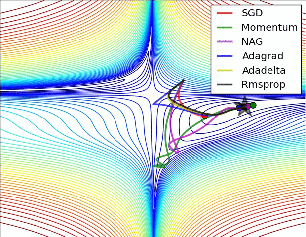
Rif. G · Ottimizzatori
Optimizer paths
Confronta il comportamento qualitativo: SGD oscilla, Momentum liscia, Adam adatta, LAMB scala per layer.
SGD segue il gradiente locale con un learning rate globale.
Adam e AdamW
Adam mantiene due medie mobili: il primo momento m_t (media dei gradienti) e il secondo momento v_t (varianza non centrata). Così adatta il learning rate per parametro.
m_t = β_1 m_{t-1} + (1-β_1) g_t
v_t = β_2 v_{t-1} + (1-β_2) g_t^2
m_hat_t = \frac{m_t}{1 - β_1^t}
v_hat_t = \frac{v_t}{1 - β_2^t}
W_{t+1} = W_t - η · \frac{m_hat_t}{sqrt(v_hat_t) + ε}
La bias correction è importante nei primi passi: m_t e v_t partono da zero, quindi senza correzione sottostimerebbero i momenti reali.
Adam passo t=1
Setup scalare: W0 = 0.5, η = 0.1, β1 = 0.9, β2 = 0.999, g1 = 0.3.
m_1 = 0.9·0 + 0.1·0.3 = 0.03
v_1 = 0.999·0 + 0.001·0.3^2 = 0.00009
m_hat_1 = \frac{0.03}{1 - 0.9^1} = 0.3
v_hat_1 = \frac{0.00009}{1 - 0.999^1} = 0.09
W_1 = 0.5 - \frac{0.1 · 0.3}{sqrt(0.09) + 10^{-8}} = 0.4
Il primo passo diventa quasi un aggiornamento normalizzato dal modulo del gradiente: per questo Adam parte spesso in modo rapido.
AdamW separa il weight decay dall'update adattivo. Questo evita che la regolarizzazione venga distorta dal denominatore adattivo di Adam.
Adam con L2: g_{t,reg} = g_t + λW_t
AdamW: W_{t+1} = W_t - η · (\frac{m_hat_t}{sqrt(v_hat_t) + ε} + λW_t)
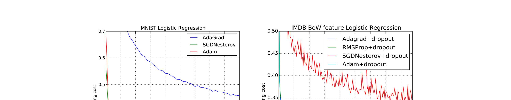
LAMB (Layer-wise Adaptive Moments for Batch training)
LAMB estende AdamW con un trust ratio per layer. È pensato per large batch training: bilancia l'ampiezza dello step rispetto alla norma dei pesi di ciascun layer.
ΔW_t = \frac{m_hat}{sqrt(v_hat) + ε} + λW_t
r_t(layer) = \frac{||W_t(layer)||}{||ΔW_t(layer)||}
W_{t+1}(layer) = W_t(layer) - η · r_t(layer) · ΔW_t(layer)
Perché il trust ratio per layer aiuta con batch grandi
Con batch molto grandi il gradiente è meno rumoroso, ma layer diversi possono avere norme dei pesi molto diverse. Un learning rate globale può essere troppo aggressivo per un layer e troppo debole per un altro.
- Se
||ΔW||è piccolo rispetto a||W||, il trust ratio aumenta lo step. - Se
||ΔW||è grande rispetto a||W||, il trust ratio riduce lo step. - Se
r_t = 1, LAMB si comporta come AdamW.
LAMB nel Perceiver IO
Negli appunti questa configurazione è riferita al setting ImageNet di Perceiver IO: batch grande su TPU, learning rate base circa
2e-3, weight decay 0.1, gradient clipping con norma globale massima 10 e schedule con 55 epoche piatte seguite da 55 epoche di cosine decay. Da distinguere dal Perceiver originale del cap. 11, dove la fonte riporta 120 epoche con LR 4 × 10⁻³ e step decay alle epoche 84, 102, 114.
Gradient clipping
Il clipping limita gli exploding gradient: se la norma globale del gradiente supera una soglia τ, il gradiente viene riscalato senza cambiarne la direzione. Negli appunti è collegato sia alle reti ricorrenti sia al training stabile di modelli grandi.
g_clipped = g · min(1, \frac{τ}{||g||})
Con SGD il gradient clipping accorcia i passi troppo lunghi. Con LAMB no: la lunghezza del passo è già fissata dal trust ratio. Qui il clipping impedisce a un batch anomalo di dominare le medie m e v, che decidono la direzione. Nel nostro training, senza clipping, la loss andava a nan.
Learning Rate Scheduling
Lo schedule modifica il learning rate durante il training. Le strategie più comuni sono warmup, step decay e cosine decay.
Warmup: η_t = η_max · \frac{t}{T_w}
Step decay: η_t = η_0 · γ^{\left\lfloor\frac{t}{T_s}\right\rfloor}
Cosine: η_t = η_min + 0.5(η_max - η_min)(1 + cos(\frac{πt}{T_c}))
La distinzione da ricordare è questa: nel Perceiver originale degli appunti principali si usa step decay; nel riferimento sugli ottimizzatori e nel setting Perceiver IO compare invece la schedule piatta per 55 epoche seguita da cosine decay per altre 55.
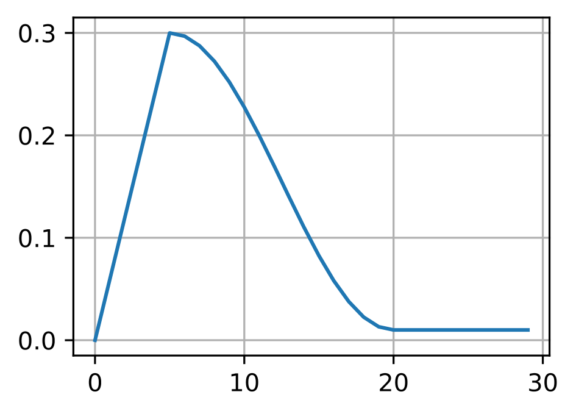
Tabella comparativa degli ottimizzatori
| Ottimizzatore | Idea chiave | LR adattivo | Uso tipico |
|---|---|---|---|
| SGD | Gradiente scalato da η | No | CNN classiche |
| SGD + Momentum | Inerzia accumulata | No | ResNet / fine-tuning |
| Adam | Momento + varianza | Sì, per parametro | Transformer, NLP |
| AdamW | Adam + weight decay disaccoppiato | Sì, per parametro | BERT, GPT, ViT |
| LAMB | AdamW + trust ratio per layer | Sì, per layer/parametro | Large batch, TPU, Perceiver |
Con i numeri
Un passo di ogni ottimizzatore sullo stesso peso
- Peso w = 2,0, gradiente g = −0,2.
- SGD con η = 0,01: w ← 2,0 − 0,01 · (−0,2) = 2,002.
- Adam, primo passo (η = 0,001): m̂ = −0,2 e v̂ = 0,04 dopo la correzione del bias. Passo = η · m̂ ÷ √v̂ = 0,001 · (−0,2 ÷ 0,2) → w = 2,001. Al primo passo Adam si muove di circa η, qualunque sia |g|.
- LAMB (torch_optimizer, quello del progetto): ogni tensore di pesi si sposta di η · min(‖w‖, 10) nella direzione di Adam.
- Nostro e01, η = 0,004: ogni tensore si sposta di 0,004 · min(‖w‖, 10). Sotto norma 10 è lo 0,4% della norma. Sopra 10 il passo resta 0,04, quindi in proporzione è più piccolo.
- Un tensore vero del checkpoint di e01: il primo strato dell'MLP della prima cross-attention ha norma 40,8. Passo = 0,004 · 10 = 0,04, cioè lo 0,098% della norma. Nel nostro e01 quasi tutti i pesi (99,8%) stanno in tensori con norma fra 11 e 50: si muovono dello 0,08–0,37% a passo.
- Gradient clipping a 1: se la norma totale del gradiente supera 1 lo si riscala a 1. Senza, nel nostro training la loss andava a nan.
Idea chiave
Per Perceiver e Perceiver IO l'ottimizzatore non è un dettaglio: LAMB aiuta a stabilizzare training grandi, profondi e con batch elevati.
📄 Dal paper originale
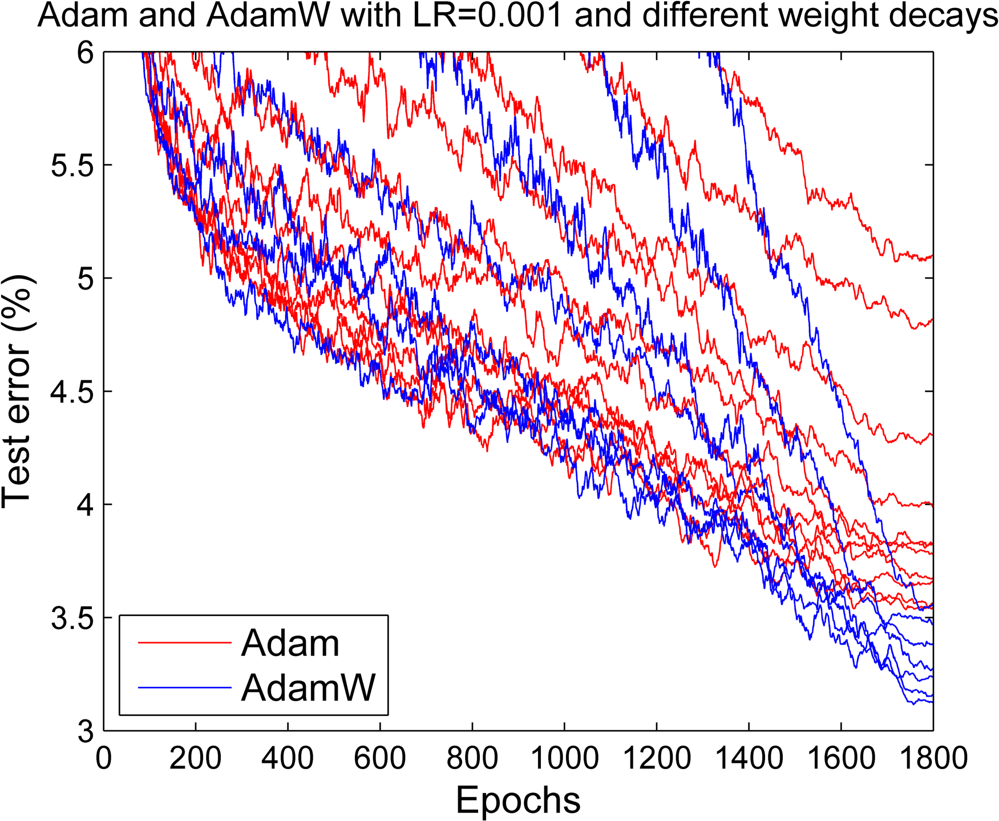
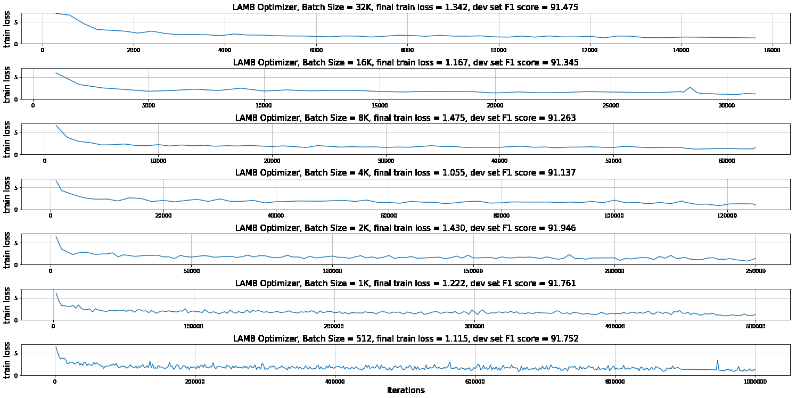
Errori tipici
- AdamW non è Adam con L2: il weight decay è applicato ai pesi fuori dal passo adattivo.
- LAMB non ha bisogno di batch enormi per funzionare: nasce per quelli, ma lo usiamo con batch 64.
- Nel nostro progetto il weight decay di LAMB è 0 (default di torch_optimizer).
Autoverifica
Scrivi l'aggiornamento di SGD con momentum.
v ← β·v + g; w ← w − η·v. Con β = 0,9 il passo medio è circa 10 volte il gradiente medio.
Cosa fa Adam in più di SGD?
Tiene una media dei gradienti (m) e dei loro quadrati (v), con correzione del bias, e divide per √v: ogni peso ha il suo passo.
Cosa aggiunge LAMB ad Adam?
Un trust ratio per strato: il passo di ogni tensore di pesi è proporzionale alla norma di quei pesi, fino a norma 10 (in torch_optimizer). Così nessuno strato si muove troppo o troppo poco.
Perché nel tuo codice c'è il gradient clipping?
Con LAMB a 0,004 il training divergeva (nan). Limitare la norma del gradiente a 1 lo stabilizza.
CNN
Le reti neurali convoluzionali sono architetture per dati strutturati a griglia, soprattutto immagini e video. La loro forza è combinare filtri locali, condivisione dei pesi e gerarchia di feature: efficienti e molto efficaci sulle immagini, ma meno generali del Perceiver perché dipendono da località e invarianza alla traslazione.
In 30 secondi
- Una convoluzione fa scorrere lo stesso filtro piccolo su tutta l'immagine: pochi pesi, riusati ovunque.
- Uscita: (W − K + 2P) ÷ S + 1 per lato. Parametri: K · K · C_in · C_out + C_out.
- Il prior è forte: località ed equivarianza per traslazione. Equivarianza: se sposti il gatto di 3 pixel, la feature map si sposta di 3 pixel. Invarianza: la classe non cambia; la danno in parte il pooling e la media finale. Ottimo con pochi dati, ma lega la rete alla griglia.
Ti serve prima
Dove si usa
Fonte negli appunti
PDF pp. 170-177 · Sezione M
Apri PDF
Idea di partenza
Mentre le RNN eccellono con dati sequenziali, per dati strutturati in forma di griglia — come le immagini — servono architetture in grado di sfruttare la struttura spaziale locale. Le reti neurali convoluzionali sono state progettate esattamente per questo scopo.
Le CNN elaborano dati strutturati a griglia, soprattutto immagini e video. Invece di connettere ogni neurone a tutti gli input, usano filtri locali, detti kernel, che scorrono sull'immagine per estrarre feature. Sono il predecessore diretto del ViT e, indirettamente, del Perceiver.
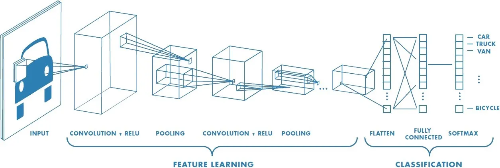
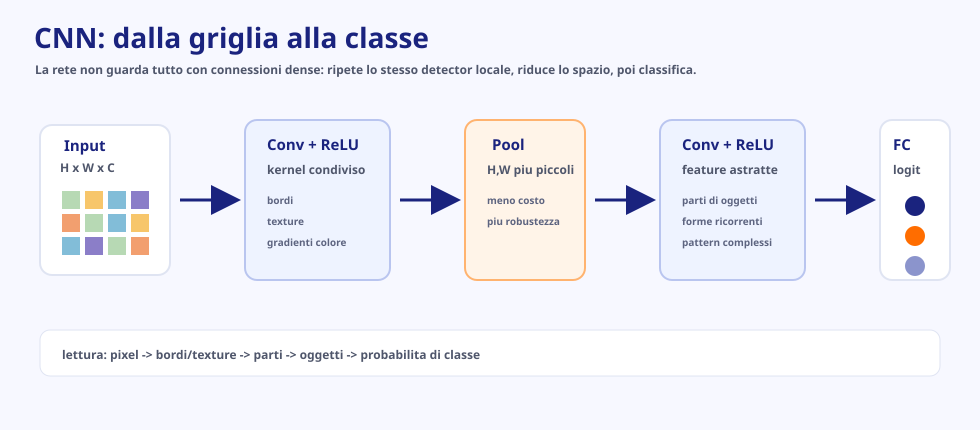
Architettura overview
Una CNN tipica alterna tre tipi di layer: Convolution Layer, Pooling Layer e Fully Connected Layer. I layer iniziali catturano feature di basso livello, come bordi e texture; quelli profondi catturano feature più complesse, come parti di oggetti o oggetti interi.
1Convolution Layer
Estrae feature locali tramite filtri o kernel.
2Pooling Layer
Riduce la dimensione spaziale mantenendo le attivazioni importanti.
3Fully Connected Layer
Appiattisce le feature e produce la classificazione finale.
Griglia
Input come griglia
L'immagine entra come tensore H×W×C. La CNN assume che vicini spaziali contengano informazione correlata.
- Cosa cambia
- Da pixel grezzi a mappe di attivazione.
- Perché conta
- Questa ipotesi rende la CNN efficiente, ma legata alla griglia.
Convolution Layer
Un filtro o kernel è una piccola matrice di pesi che scorre sistematicamente sull'immagine. In ogni posizione compie tre operazioni in sequenza: moltiplica ogni peso per il pixel corrispondente, somma tutti i prodotti e scrive il risultato in una cella della feature map. Poi si sposta e ricomincia.
La cosa da visualizzare è questa: il kernel è un rilevatore riutilizzato. Non impara un peso diverso per ogni pixel dell'immagine; impara un piccolo pattern e lo prova in tutte le posizioni. È qui che nascono insieme efficienza e località.
Rif. M.2 · pp. 171-172
Visualizzazione dello scorrimento
Immagine 5×5 in scala di grigi: 200 è chiaro, 0 è nero. Il kernel 3×3 scorre con stride 1 e padding 0: visita 9 posizioni e produce una feature map 3×3.
Input image 5×5
La finestra evidenziata è la zona 3×3 guardata in questo istante.
Kernel 3×3
Pesi +1 a sinistra e -1 a destra: misura una transizione verticale.
Feature map 3×3
Ogni cella dice quanto il bordo verticale è presente in quella posizione.
Posizione A
Il kernel è su una zona uniforme: i contributi positivi e negativi si annullano.
out = 0
Lettura rapida: A è zona uniforme e scrive out = 0; quando la finestra intercetta il bordo verticale, la risposta diventa out = 600.
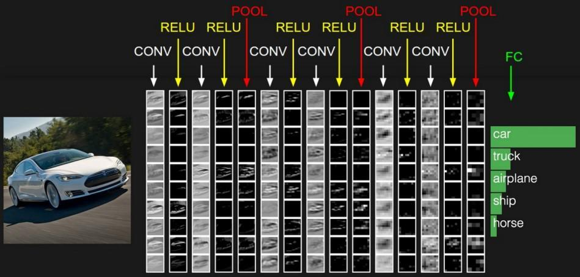
Convoluzione vs cross-correlation
In matematica la convoluzione ruoterebbe il kernel di 180 gradi prima di applicarlo. Nelle CNN reali, PyTorch, TensorFlow e Keras non ruotano il kernel: fanno tecnicamente una cross-correlation. Poiché i pesi sono appresi, la differenza non cambia il risultato pratico, ma è una precisione teorica importante.
feature map(i,j) = \sum_{m,n} K_{mn} · X_{i+m,j+n}
i, j = posizione corrente del kernel nell'output; m, n = coordinate interne al kernel (da 0 a k−1).
K è il kernel, cioè la piccola matrice di pesi del filtro; K_{mn} è il peso nella riga m e colonna n del kernel. X è l'immagine o feature map in input; X_{i+m,j+n} è il pixel/valore dell'input che si trova sotto quel peso mentre il kernel è centrato sulla posizione (i,j).
Ogni cella della feature map dice quanto il pattern cercato dal filtro è presente in quella posizione: valore alto significa pattern trovato, valore basso o zero dopo ReLU significa pattern assente.
Che cosa sono stride e padding
Quando diciamo che il kernel "scorre", dobbiamo specificare quanto avanza e cosa succede ai bordi. Questi due dettagli sono stride e padding: non cambiano i pesi del filtro, cambiano quante posizioni il filtro può visitare.
Stride = passo del kernelÈ il numero di pixel di cui la finestra si sposta tra una posizione e la successiva. Con
s=1 il kernel visita tutte le posizioni vicine; con s=2 salta una posizione alla volta. Quindi uno stride più grande salta posizioni, produce mappe più piccole e riduce i calcoli.Padding = bordo aggiuntoÈ il numero di pixel fittizi, di solito zeri, aggiunti attorno all'immagine prima della convoluzione. Serve perché un kernel
3×3 centrato su un pixel di bordo uscirebbe fuori dall'immagine.Valid vs same convolutionvalid convolution significa
p=0: il kernel resta sempre dentro l'immagine e l'output si restringe. same convolution usa padding, per esempio p=1 con kernel 3×3 e stride 1, per mantenere altezza e larghezza uguali.
H_out = \left\lfloor\frac{H - k + 2p}{s}\right\rfloor + 1
W_out = \left\lfloor\frac{W - k + 2p}{s}\right\rfloor + 1
Nella formula: H, W sono altezza e larghezza dell'input, k è il lato del kernel, p è il padding e s è lo stride. Il termine +2p allarga virtualmente l'immagine; la divisione per s conta quante posizioni restano quando il kernel avanza a salti.
Bias, ReLU, RGB e pipeline completa
Bias. Al risultato della convoluzione si aggiunge un bias apprendibile: output = (K * X) + b. Il bias sposta la soglia di attivazione del filtro indipendentemente dall'input.
Perché ReLU? Dopo la convoluzione si applica una non-linearità, tipicamente ReLU(x) = max(0, x). Senza attivazioni non lineari, una pila di layer lineari sarebbe equivalente a una sola trasformazione lineare.
ReLU example: [-5, 2, 7, -1] \rightarrow [0, 2, 7, 0]
Immagini RGB. Su un'immagine a colori il kernel non è solo k×k, ma kernel k×k×3: opera sui tre canali R, G e B insieme. Con F filtri si ottengono F feature map, una per ogni pattern cercato.
Pipeline completa
Input → Conv + bias → Feature map → ReLU → Pooling → Conv ... → Flatten → FC → Softmax → Output
Pooling
Il pooling riduce la dimensione spaziale delle feature map mantenendo l'informazione più rilevante. Serve a tre scopi: diminuire il costo computazionale, ridurre l'overfitting e rendere la rete meno sensibile alla posizione esatta dei pattern.
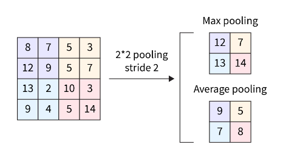
Rif. M.3 · Pooling
Max-pooling e average-pooling
La stessa finestra 2×2 può conservare il picco o la media. Cambia il modo in cui la CNN riassume il pattern.
MaxPool 2×2 stride 2: ogni finestra conserva il valore più alto.
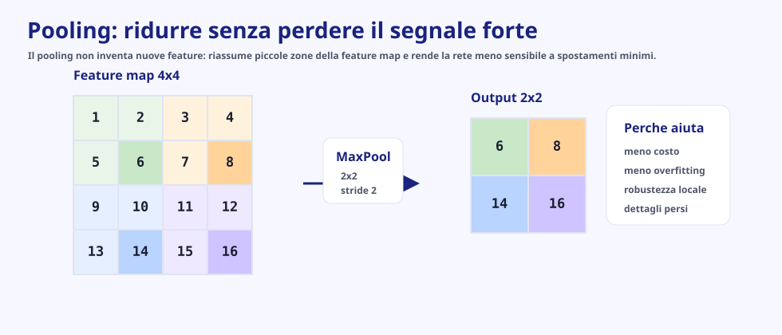
Max-Pool 2×2Prende il massimo in ogni finestra: conserva il picco di attivazione, quindi risponde alla domanda "il pattern è presente qui?".
Average-poolingPrende la media: conserva informazione diffusa. È utile anche come Global Average Pooling negli strati finali.
Effetto praticoRiduce H e W, aumenta robustezza a piccole traslazioni, ma scarta dettagli spaziali fini.
\begin{bmatrix}1&2&3&4\\5&6&7&8\\9&10&11&12\\13&14&15&16\end{bmatrix}
\xrightarrow{MaxPool\ 2×2}
\begin{bmatrix}6&8\\14&16\end{bmatrix}
Dimensione dopo pooling
Con finestra p×p e stride s, la dimensione spaziale segue la stessa logica della convoluzione senza padding.
H_out = \left\lfloor\frac{H - p}{s}\right\rfloor + 1
Esempio: feature map 28×28 con Max-Pool 2×2 e stride 2 produce 14×14.
Attenzione
Il pooling è utile perché riduce costo e dimensioni, ma è anche irreversibile: una volta tenuto solo il massimo o la media, i dettagli scartati non sono più recuperabili.
Fully Connected e Output
Dopo gli ultimi blocchi convoluzionali, le feature map vengono appiattite in un vettore 1D e passate a layer fully connected. Esempio numerico: 32 feature map di dimensione 7×7 diventano 32 × 7 × 7 = 1.568 valori, cioè un vettore che riassume tutto ciò che la CNN ha rilevato.
z = W x + b
Il layer fully connected collega ogni neurone di output a tutti i valori del vettore appiattito. L'ultimo strato produce i logit di classe.
\mathrm{softmax}(z_i) = \frac{e^{z_i}}{\sum_j e^{z_j}}
\sigma(z) = \frac{1}{1 + e^{-z}}
Classificazione multiclasseSi applica la softmax (formula sopra): i logit diventano probabilità che sommano a 1, e la classe predetta è quella con probabilità più alta. Esempio:
[2.1, 0.5, 1.8] → [0.57, 0.12, 0.41].Classificazione binariaSi applica la sigmoid
σ(z) (formula sopra), che mappa il logit in [0,1].Perché contaLa parte convoluzionale estrae feature; la parte FC usa quelle feature per decidere la classe.
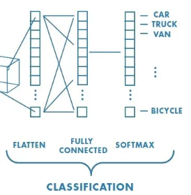
Parametri C1 in LeNet-5
Lo strato C1 ha 6 filtri 5×5×1, ciascuno con un bias.
Parametri C1 = 6 × (5 × 5 × 1 + 1) = 156
Un MLP fully connected equivalente richiederebbe circa 4.8M parametri, cioè circa 30.000 volte di più: il vantaggio della località e della condivisione dei pesi è enorme.
Training e inductive bias
Il training segue lo stesso ciclo del feed-forward: forward pass, calcolo della loss, backpropagation e aggiornamento dei pesi. La differenza è che i gradienti vengono propagati anche attraverso i filtri convoluzionali, quindi i kernel non sono scritti a mano: vengono imparati.
Cosa si aggiorna durante il training
| Parte della CNN | Parametri aggiornati | Gradiente |
|---|---|---|
| Layer convoluzionale | Pesi del kernel K_ij e bias | ∂L/∂K_ij |
| Layer fully connected | Matrice W e bias b | ∂L/∂W, ∂L/∂b |
Nel tempo la rete impara da sola quali pattern cercare: primi layer per bordi e texture, layer intermedi per forme ricorrenti, layer profondi per parti di oggetti e strutture complesse.
LocalitàI pixel vicini sono correlati. Ha senso usare filtri piccoli invece di collegare ogni pixel a ogni neurone.
Invarianza alla traslazioneLo stesso kernel si applica ovunque: un pattern può essere riconosciuto anche se si sposta nell'immagine.
LimiteQuesti bias rendono le CNN efficienti sulle immagini, ma le imprigionano su domini senza griglia naturale.
ResNet e Residual Connections
Aumentando la profondità di una CNN si incontrano vanishing gradient e degradazione delle prestazioni. ResNet introduce le skip connections: invece di imparare direttamente una trasformazione complessa H(x), il blocco impara solo il residuo.
y = F(x, W) + x
Degradazione vs vanishing gradientLa degradazione è più specifica: reti più profonde peggioravano anche sul training set. Il caso tipico è una rete a 56 layer peggiore di una a 20, pur potendo teoricamente copiarla. Non era solo gradiente nullo; era difficile far imparare a molti layer la semplice identità.
Perché la skip aiutaSe la trasformazione utile è vicina all'identità, il blocco deve imparare
F(x) ≈ 0. Il percorso + x mantiene informazione e gradiente disponibili.Collegamento al PerceiverLa stessa logica torna nei blocchi attention e FFN: il modello profondo impara correzioni progressive, non deve riscrivere ogni volta tutta la rappresentazione latente.

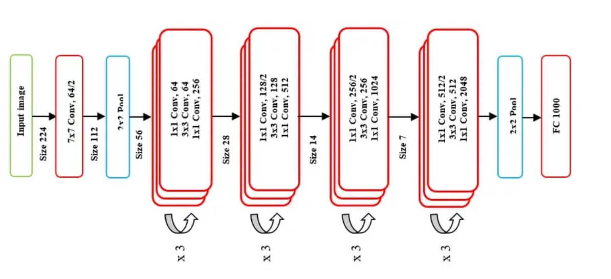
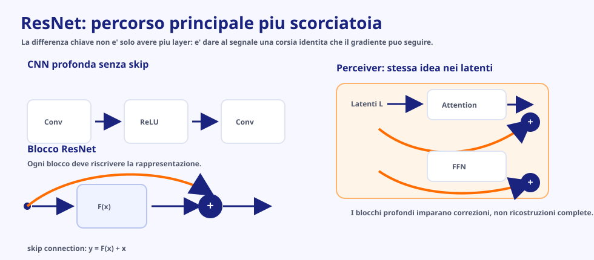
Bottleneck block (ResNet-50+)
Conv 1×1 (riduzione) comprime i canali, per esempio da
256 a 64; Conv 3×3 lavora nello spazio ridotto; Conv 1×1 (espansione) riporta da 64 a 256 canali. Con 256 canali in ingresso e in uscita usa 69.632 pesi; due conv 3×3 a 256 canali ne userebbero 1.179.648, circa 17 volte di più (conto nel ). In altre parole: costa quanto un blocco base a 64 canali, ma produce 256 canali. È una mini-versione dell'idea che rivedi nel Perceiver: comprimere prima, ragionare nello spazio compatto, poi riespandere o leggere l'output.
CNN tradizionale vs ResNet-50
| Aspetto | CNN tradizionale | ResNet-50 |
|---|---|---|
| Architettura | Sequenziale: Conv → ReLU → Pool → FC. | 5 stadi con residual blocks e skip connections. |
| Flusso informativo | Solo sequenziale. | Doppio: percorso principale più scorciatoia identità. |
| Profondità | 5-19 layer prima che diventi instabile. | 50+ layer addestrabili in modo stabile. |
| Residual learning | Assente. | y = F(x,W) + x. |
| Vanishing/degradazione | Problema forte nelle reti profonde. | Mitigato dalle skip connections. |
| Errore top-5 su ImageNet (gare ILSVRC, test) | AlexNet 15,3% (2012), VGG 7,3% (2014, ensemble). | ResNet, ensemble di 6 reti (2015): 3,57%. Una ResNet-50 da sola: 6,71% (10 crop, validation). |
Con i numeri
Dimensioni e parametri di un layer convoluzionale
- Immagine 32 × 32, filtro 3 × 3, padding 1, stride 1: (32 − 3 + 2) ÷ 1 + 1 = 32. Con stride 2: 16.
- Da 3 a 64 canali: 3 · 3 · 3 · 64 + 64 = 1.792 parametri.
- LeNet-5, primo strato: 6 filtri 5 × 5 su 1 canale: 5 · 5 · 6 + 6 = 156.
- Campo recettivo: 1 strato 3 × 3 vede 3 pixel per lato, 2 strati 5, 3 strati 7.
- ResNet-50 parte da un filtro 7 × 7: vede 49 pixel. È il «49» della Tab. 2 del Perceiver, dove la permutazione la porta da 73,5 a 39,4.
Collegamento al Perceiver
Anche con ResNet, una CNN cattura pattern locali tramite filtri di dimensione fissa. Per mettere in relazione tutti gli elementi in un singolo passo serve il meccanismo globale dei Transformer; il problema è che la self-attention diretta sull'input costa O(M²).
Le CNN sono efficienti perché pagano un costo locale e lineare, ma assumono una griglia. Il Perceiver vuole tenere la scalabilità, rinunciando al bias 2D: tratta l'input come una sequenza generica, usa Fourier features per la posizione e comprime tutto in un latent bottleneck.
Negli appunti il collegamento è esplicito: il Perceiver usa circa 112 residual connections, una per ogni sottoblocco di attention e FFN. Senza questi percorsi additivi, un modello così profondo e iterativo perderebbe segnale o diventerebbe molto difficile da ottimizzare.
CNN · EfficientNet (Tan & Le 2019)
EfficientNet: compound scaling
Come ingrandire una CNN in modo bilanciato.
1Rete base
2Tre dimensioni
3Scalarne una sola
4Compound scaling
5Risultato
Errori tipici
- Il numero di parametri di una convoluzione non dipende dalla grandezza dell'immagine.
- Pooling e stride riducono la risoluzione; il padding la conserva.
- L'equivarianza per traslazione aiuta sulle immagini e diventa un limite quando i dati non sono una griglia.
Autoverifica
Calcola l'uscita di una conv 3 × 3, padding 1, stride 2, su 32 × 32.
(32 − 3 + 2) ÷ 2 + 1 = 16 (con la parte intera).
Quanti parametri ha una conv 3 × 3 da 64 a 128 canali?
3 · 3 · 64 · 128 + 128 = 73.856.
Qual è il prior induttivo di una CNN?
Località (ogni neurone guarda un intorno) e condivisione dei pesi, che dà equivarianza per traslazione.
Perché una CNN crolla con i pixel permutati?
Perché i suoi filtri presuppongono che i vicini sulla griglia siano correlati: ResNet-50 passa da 73,5 a 39,4.
Riferimento: ConvNet
Una ConvNet è una CNN vista come pipeline completa: non solo il singolo kernel, ma l'intero percorso da immagine a classe. La sequenza mentale da tenere è Conv → ReLU → Pooling → Flatten → FC.
In 30 secondi
- Una ConvNet alterna convoluzioni, attivazioni e riduzioni di risoluzione, poi classifica.
- La condivisione dei pesi la rende efficiente: pochi parametri anche su immagini grandi.
- Il suo limite è il rovescio del pregio: presuppone una griglia regolare.
Ti serve prima
Dove si usa
Fonte negli appunti
PDF pp. 170-176 · Sezione M.1-M.5
Apri PDF
ConvNet pipeline interattiva
La ConvNet mantiene la griglia nei primi stadi e costruisce feature sempre più astratte. Un kernel locale produce mappe di attivazione; ReLU elimina risposte negative; il pooling riassume; il flatten trasforma le mappe in vettore; il fully connected produce logit.
Rif. M.1-M.5 · ConvNet
Da immagine a classe
Avanza negli stadi e osserva forma, costo e significato della rappresentazione.
input H×W×C
→
feature map
→
classe
Input: tensore H×W×C. La ConvNet parte dalla griglia, non da una sequenza astratta.

Perché è efficiente
Local receptive fieldOgni neurone guarda una finestra piccola
k×k, quindi non collega ogni pixel a tutti gli altri. Il costo resta locale.Weight sharingLo stesso filtro scorre su tutte le posizioni: pochi pesi vengono riutilizzati molte volte.
CanaliSu RGB il kernel ha forma
k×k×3; con F filtri ottieni F feature map, cioè risposte a pattern diversi.
H_{out} = \left\lfloor\frac{H - k + 2p}{s}\right\rfloor + 1
W_{out} = \left\lfloor\frac{W - k + 2p}{s}\right\rfloor + 1
k è il kernel, s lo stride, p il padding. La formula serve per controllare quando e quanto si restringe la griglia.
Forza e limite
La ConvNet è forte perché incorpora bias corretti per immagini: località, peso condiviso e robustezza a piccole traslazioni. È meno generale perché questi bias non sono automaticamente adatti ad audio lungo, point cloud o input multimodali.
| Dominio | Adattamento tipico | Limite |
|---|---|---|
| Immagini | Conv 2D | Griglia naturale: ottimo caso. |
| Audio | Conv 1D | Cambia la struttura locale. |
| Video | Conv 3D | Più costo e nuovo bias temporale. |
| Point cloud | Architetture dedicate | La griglia regolare non esiste. |
Con i numeri
Perché la convoluzione conviene
- Uscita 32 × 32 × 64 con filtri 3 × 3 × 3: 32 · 32 · 64 · 27 = 1.769.472 MAC, con 1.792 parametri.
- Uno strato completamente connesso fra gli stessi ingressi (3.072) e uscite (65.536) avrebbe 201.326.592 pesi.
- Il risparmio viene da due idee, una dopo l'altra. Località: ogni uscita guarda 27 ingressi invece di 3.072, cioè 114 volte meno pesi (da 201.326.592 a 1.769.472). Condivisione: le 1.024 posizioni usano lo stesso filtro, altre 1.024 volte meno (da 1.769.472 a 1.728). In tutto circa 112.000 volte, contando anche i 64 bias.
- La nostra ResNet-18 su CIFAR-10: 11,2 M di parametri, 93,61%. Il nostro Perceiver: 10,2 M, 71,63%.
Collegamento al Perceiver
La ConvNet è il riferimento per la scalabilità. Il Perceiver prova a conservarne il vantaggio computazionale, ma rinuncia al vincolo della griglia: usa Fourier features per la posizione e latenti fissi per comprimere l'input.
CNN · DenseNet (Huang et al. 2017)
DenseNet: connettività densa
Riuso delle feature e gradiente che fluisce meglio.
1Strato 1
2Concatenazione
3Riuso feature
4Growth rate
5vs ResNet
Errori tipici
- «Efficiente» qui vuol dire pochi parametri e calcolo locale, non che la rete sia piccola.
- Con molti dati un modello senza prior (ViT, Perceiver) può raggiungerla; con pochi dati no.
- Una ConvNet vuole input di forma fissa sulla griglia; il Perceiver accetta qualunque insieme di elementi.
Autoverifica
Perché una conv ha pochi parametri?
Perché lo stesso filtro piccolo è riusato in tutte le posizioni.
Quanti MAC costa una conv 3 × 3 da 3 a 64 canali su 32 × 32 con padding?
32 · 32 · 64 · 3 · 3 · 3 = 1.769.472.
Perché la tua ResNet-18 batte il tuo Perceiver di 22 punti?
Soprattutto per il prior convoluzionale, che su 45.000 immagini 32 × 32 vale moltissimo. Ma il confronto non è a parità di ricetta: la ResNet-18 usa SGD con weight decay 5·10⁻⁴ e cosine, il Perceiver LAMB senza weight decay. I parametri sono simili: 11,2 M contro 10,2 M.
Qual è il limite principale di una ConvNet?
Presuppone una griglia regolare: audio, nuvole di punti o insiemi richiedono architetture diverse.
Riferimento: ResNet
ResNet nasce per addestrare CNN molto profonde. Il blocco non deve imparare direttamente una trasformazione completa: impara una correzione residua e somma l'identità.
In 30 secondi
- ResNet: blocchi y = x + F(x). La rete impara correzioni, non trasformazioni intere.
- Il bottleneck 1×1 → 3×3 → 1×1 riduce i canali, fa la conv costosa su pochi canali, poi li riallarga.
- Con i residual si allenano reti da 50, 101 o 152 strati senza degradazione.
Ti serve prima
Dove si usa
Fonte negli appunti
PDF pp. 177-178 · Sezione M.6
Apri PDF
Residual learning
In una rete sequenziale un blocco prova a imparare H(x). In ResNet si riscrive H(x) come F(x)+x: se la trasformazione utile è vicina all'identità, basta imparare F(x)≈0.
H(x) = F(x) + x
F(x) = H(x) - x
Vanishing gradientIl percorso identità crea una strada più diretta per il gradiente.
Degradation problemLe reti più profonde peggioravano anche sul training set: non riuscivano nemmeno a imparare bene l'identità.
Residual blockIl blocco impara una correzione, non riscrive tutta la rappresentazione.
Bottleneck residuale interattivo
Nei modelli ResNet-50+ il blocco bottleneck segue la logica 1×1 riduce, 3×3 lavora, 1×1 riespande. La 3×3 è la parte costosa; farla su meno canali riduce i FLOP.
Rif. M.6 · Bottleneck block
1×1 → 3×3 → 1×1 + skip
Seleziona lo stadio per vedere canali, operazione e motivo.
skip identity x
1×1256 → 64
3×364 → 64
1×164 → 256
+
256
64 canali nel corpo
Conv 1×1 di riduzione: cambia i canali senza mischiare lo spazio, preparando una 3×3 più economica.
CNN tradizionale vs ResNet
| Aspetto | CNN tradizionale | ResNet-50 |
|---|---|---|
| Flusso | Solo sequenziale | Percorso principale più scorciatoia |
| Obiettivo | Imparare H(x) | Imparare F(x)=H(x)-x |
| Profondità | Diventa instabile | 50+ layer addestrabili |
| Errore top-5 su ImageNet (gare ILSVRC, test) | AlexNet 15,3%, VGG 7,3% (ensemble) | ResNet, ensemble di 6 reti: 3,57%. ResNet-50 da sola: 6,71% (10 crop, validation) |
Con i numeri
Il bottleneck, contato
- Blocco a 256 canali: 1 × 1 da 256 a 64 = 16.384 pesi.
- 3 × 3 da 64 a 64 = 36.864.
- 1 × 1 da 64 a 256 = 16.384. Totale 69.632.
- Due conv 3 × 3 da 256 a 256 costerebbero 2 · 589.824 = 1.179.648: 17 volte di più.
- Nel Perceiver lo stesso schema residuo è in ogni cross-attention e in ogni blocco latente.
Collegamento al Perceiver
Il Perceiver usa la stessa filosofia: ogni blocco attention o MLP è circondato da residual connections. I latenti vengono raffinati per correzioni successive, non riscritti da zero.
Errori tipici
- Il residual non è una scorciatoia che salta il blocco: è una somma, il blocco viene sempre calcolato.
- Il bottleneck di ResNet riduce i canali; il bottleneck del Perceiver riduce il numero di elementi (da M a N).
- Senza residual, aggiungere strati può peggiorare anche l'errore di training: è la degradazione.
Autoverifica
Cosa impara un blocco residuo?
La differenza fra l'uscita desiderata e l'ingresso: F(x) = H(x) − x.
Quanti pesi ha un bottleneck 256 → 64 → 64 → 256 (senza bias)?
16.384 + 36.864 + 16.384 = 69.632.
Cos'è la degradazione?
Reti più profonde senza residual hanno errore di training più alto delle stesse reti più corte: non è overfitting, è ottimizzazione.
Che differenza c'è fra il bottleneck di ResNet e quello del Perceiver?
ResNet riduce i canali dentro un blocco; il Perceiver riduce il numero di elementi, da M input a N latenti.
Perceptrone
Il perceptrone è il mattone fondamentale di ogni rete neurale: un classificatore lineare binario. Ogni neurone delle architetture successive — fino al Perceiver — ne ricalca la struttura base: somma ponderata + attivazione.
In 30 secondi
- Perceptrone: ŷ = 1 se w·x + b > 0, altrimenti 0. Una retta che divide il piano in due.
- Si allena con w ← w + η(y − ŷ)x: corregge solo quando sbaglia.
- Non risolve XOR: nessuna retta separa (0,1) e (1,0) da (0,0) e (1,1).
Poi
Percorso «Parti da zero» · 1 di 5 — prossimo: ·
Struttura
Riceve n input x₁…xₙ, ciascuno moltiplicato per un peso wᵢ, somma il tutto con un bias b e applica una funzione di attivazione a gradino.
y = f(\sum_{i=1}^{n} w_i x_i + b)
dove f è la funzione a gradino: vale 1 se l'argomento è > 0, altrimenti 0. Alcuni testi usano ≥ 0: cambia solo il caso z = 0.
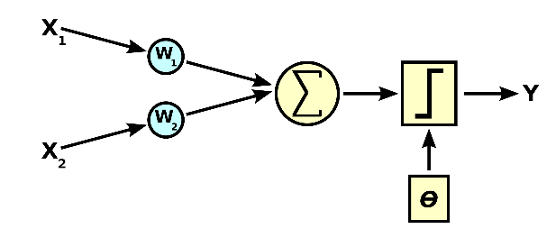
Rif. H · Perceptrone
Decisione lineare interattiva
Il perceptrone traccia una sola frontiera lineare: cambia input e osserva come somma pesata, bias e gradino decidono la classe.
somma ponderata
z = -0.25
(-0.7)(0.5) + (1.0)(0) + 0.1
y = 0
Senza pioggia il valore netto è negativo: il gradino produce 0. La retta separa solo casi linearmente separabili.
Esempio: indossare la giacca?
Input: temperatura x₁ = 0.5, pioggia x₂ = 0. Pesi: w₁ = −0.7, w₂ = 1.0, b = 0.1.
z = (-0.7)(0.5) + (1.0)(0) + 0.1 = -0.25
Poiché z è negativo, il gradino restituisce y = 0 → "non indossare la giacca". Se invece piovesse (x₂ = 1): z = 0.75 (> 0) ⇒ y = 1, indossa la giacca.
Training
Addestrare il perceptrone significa aggiustare i pesi per ridurre l'errore di classificazione.
w_j^{new} = w_j + \eta (y_i - \hat{y}_i) x_{ij}
b^{new} = b + \eta (y_i - \hat{y}_i)
Il learning rate η ∈ (0,1] controlla l'ampiezza degli aggiustamenti.
Teorema di convergenza (Rosenblatt, 1962)
Se i dati sono linearmente separabili, la regola di aggiornamento converge in un numero finito di passi, qualunque sia l'inizializzazione — ma solo quando una soluzione esiste.
Un passo di training
Con x₁ = 1, x₂ = 0, target = 1, output = 0, η = 0.1: errore = 1 − 0 = 1, quindi w₁ ← w₁ + 0.1 e b ← b + 0.1, mentre w₂ resta invariato (perché x₂ = 0: non ha responsabilità nell'errore).
Limiti: il problema XOR
Il perceptrone converge solo su problemi linearmente separabili. La funzione XOR non lo è: nessuna retta separa le classi.
| x₁ | x₂ | XOR |
|---|---|---|
| 0 | 0 | 0 |
| 0 | 1 | 1 |
| 1 | 0 | 1 |
| 1 | 1 | 0 |
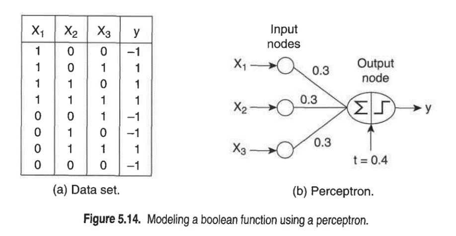
Con i numeri
AND con un perceptrone, a mano
- Pesi w = (1, 1), bias b = −1,5.
- (0, 0): 0 + 0 − 1,5 = −1,5 → 0.
- (0, 1) e (1, 0): 1 − 1,5 = −0,5 → 0.
- (1, 1): 2 − 1,5 = 0,5 → 1. È la funzione AND.
- Con b = −0,5 diventa OR. Per XOR serve un secondo strato: è il motivo delle reti multistrato.
Idea chiave
Un singolo perceptrone traccia un solo confine lineare. Lo XOR dimostra che serve la profondità: impilando neuroni (hidden layer) si ottengono le reti feed-forward, capaci di confini non lineari.
Errori tipici
- Il perceptrone usa un gradino, non una sigmoide: non è derivabile, per questo si allena con la sua regola e non con la backprop.
- Converge solo se i dati sono linearmente separabili.
- Il nome «Perceiver» ricorda il perceptrone, ma l'architettura è un'altra. In comune c'è solo il mattone di base: somma pesata più attivazione, dentro gli strati lineari e gli MLP.
Autoverifica
Scrivi la regola del perceptrone.
ŷ = 1 se w·x + b > 0. Aggiornamento: w ← w + η(y − ŷ)x, b ← b + η(y − ŷ).
Trova pesi per AND.
w = (1, 1), b = −1,5: solo (1, 1) supera lo zero.
Perché XOR non si può fare?
Non è linearmente separabile: nessuna retta divide {(0,1), (1,0)} da {(0,0), (1,1)}.
Come si risolve XOR?
Con uno strato nascosto: due perceptroni (per esempio OR e NAND) e un AND sopra.
Reti Neurali Feed-Forward
Le reti feed-forward (multi-layer perceptron, MLP) estendono il perceptrone con strati nascosti. Il loro ciclo di training — forward, loss, backpropagation — è lo stesso usato in CNN, Transformer e Perceiver.
In 30 secondi
- Una rete feed-forward alterna strati lineari e attivazioni: h = σ(Wx + b).
- Forward: si calcola strato dopo strato. Backward: la chain rule porta il gradiente dall'uscita all'ingresso.
- Gli MLP del Perceiver sono reti feed-forward a 2 strati applicate a ogni latente.
Ti serve prima
Dove si usa
Percorso «Parti da zero» · 2 di 5 — prossimo: ·
Teorema dell'approssimatore universale (Cybenko, 1989)
Una rete con un solo hidden layer e abbastanza neuroni non lineari può approssimare qualsiasi funzione continua su un compatto. Non dice però quanti neuroni servano: in pratica reti profonde sono molto più efficienti di reti larghe.
Architettura
- Input layer: accetta i dati, nessun parametro apprendibile.
- Hidden layer: trasformazioni non lineari (ReLU, sigmoid…), apprendono rappresentazioni intermedie.
- Output layer: produce la previsione (softmax per classificazione, lineare per regressione).
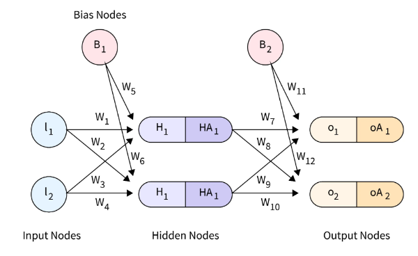
Rif. I · Forward, loss, backpropagation
Forward e backprop interattivi
La rete prima produce una previsione, poi la loss misura l'errore, infine la chain rule riporta la responsabilità ai pesi.
inputx = 2
→
hidden ReLUa₁ = 1.0
→
outputŷ = -0.3
lossL = 1.69
gradiente∂L/∂w₂ = -2.6
updatew₂ ← -0.274
Forward: con x=2, w₁=0.5 e w₂=-0.3 la rete produce ŷ=-0.3. Il target è 1, quindi l'errore è alto.
Forward propagation
Per ogni neurone si calcola l'input netto z e poi l'output tramite l'attivazione f:
z = \sum_i w_i x_i + b \qquad \hat{y} = f(z)
Loss function
Per la regressione si usa la Mean Squared Error; per la classificazione la cross-entropy (standard in Transformer, ViT e Perceiver):
E = \sum_i (y_i - \hat{y}_i)^2
\mathcal{L}_{CE} = -\sum_{k=1}^{K} y_k \log \hat{y}_k
Molti libri mettono ½ davanti a E: allora il 2 della derivata sparisce e ∂E/∂ŷ = ŷ − y. Negli esempi di questa pagina usiamo la versione senza ½.
Backpropagation
Calcola i gradienti della loss rispetto a ogni peso propagando l'errore dall'output all'input con la regola della catena.
\frac{\partial E}{\partial \hat{y}} = 2(\hat{y} - y)
\frac{\partial E}{\partial z} = \frac{\partial E}{\partial \hat{y}} \cdot f'(z)
\frac{\partial E}{\partial w} = \frac{\partial E}{\partial z} \cdot x
w_{new} = w - \eta \frac{\partial E}{\partial w}
In parole semplici: la catena di montaggio
Se il prodotto finale è difettoso (loss alta), il controllo qualità (backprop) risale la catena chiedendo a ogni operaio (neurone): "quanto sei responsabile?". Chi ha contribuito di più riceve la correzione più grande (gradiente maggiore). La chain rule scompone la responsabilità strato per strato.
Esempio numerico
1 input x = 2, 1 hidden con ReLU, 1 output lineare. Pesi w₁ = 0.5, w₂ = −0.3, target = 1. Forward: z₁ = 1.0, a₁ = 1.0, ŷ = −0.3, loss MSE = 1.69. Backward: ∂L/∂ŷ = −2.6 → ∂L/∂w₂ = −2.6, ∂L/∂w₁ = 1.56. Update (η=0.01): w₂ ← −0.274, w₁ ← 0.4844.
Con i numeri
Una rete minuscola, avanti e indietro
- Input x = (1, 2). Strato 1: W₁ = [[1, 0], [0, 1], [1, −1]], b₁ = (0, −1, 0). W₁x + b₁ = (1, 1, −1).
- ReLU: h = (1, 1, 0).
- Strato 2: W₂ = (2, −1, 3), b₂ = 0,5. y = 2 − 1 + 0 + 0,5 = 1,5.
- Loss quadratica con target 2: (1,5 − 2)² = 0,25. ∂ℒ/∂y = 2 · (1,5 − 2) = −1.
- ∂ℒ/∂W₂ = −1 · h = (−1, −1, 0): il terzo peso non riceve gradiente, perché la ReLU ha spento quel neurone.
- Parametri: 2·3 + 3 + 3·1 + 1 = 13. L'MLP di un blocco del nostro e01 (384 → 1.536 → 384) ne ha 1.181.568.
Idea chiave
Le feed-forward trattano ogni input in modo indipendente, senza nozione di ordine o tempo. Per dati sequenziali (testo, audio, serie temporali) servono architetture con memoria: le RNN.
Errori tipici
- Il bias conta come parametro: per ogni strato sono pesi + uscite.
- Un neurone con ReLU spenta non passa gradiente: è così che i neuroni «muoiono».
- Nel Perceiver l'MLP agisce su ogni latente separatamente: non mescola i latenti, lo fa l'attenzione.
Autoverifica
Quanti parametri ha una rete 2 → 3 → 1?
2·3 + 3 + 3·1 + 1 = 13.
Cosa fa la backpropagation?
Applica la chain rule dall'uscita all'ingresso, riusando i valori salvati nel forward: un solo passaggio dà il gradiente di tutti i pesi.
Perché un peso collegato a un neurone ReLU spento non riceve gradiente?
Perché la derivata della ReLU per ingressi negativi è 0 e moltiplica tutta la catena.
Dove sono le reti feed-forward nel Perceiver?
Negli MLP dopo ogni attenzione: due Linear con GELU, applicati a ogni latente.
Reti Neurali Ricorrenti (RNN)
Le RNN aggiungono un loop nello stato nascosto: l'output di h₍ₜ₋₁₎ rientra come input al passo successivo, creando una forma di memoria. Adatte a dati sequenziali.
In 30 secondi
- Una RNN aggiorna uno stato con gli stessi pesi a ogni passo: h_t = tanh(W·h_{t−1} + U·x_t + b).
- Nel backward il gradiente attraversa un fattore per ogni passo: se è minore di 1 svanisce, se è maggiore esplode.
- Il Perceiver con weight sharing è una RNN nel senso dei pesi: lo stato sono i latenti, e l'input viene riletto intero a ogni passo.
Ti serve prima
Dove si usa
Il loop nello stato nascosto
I parametri sono tre matrici condivise a ogni passo: W (sullo stato precedente), U (sull'input corrente), V (dallo stato all'output).
h_t = \tanh(W h_{t-1} + U x_t + b_h)
y_t = V h_t + b_y
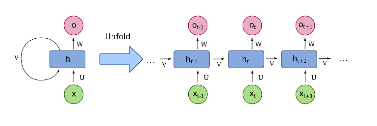
Rif. J · Srotolamento nel tempo
RNN srotolata interattiva
Ogni passo usa gli stessi pesi, ma lo stato cambia. Il problema nasce quando il gradiente deve attraversare molti passi.
h₀(0, 0)
x₁ = 1.0h₁
x₂ = 0.5h₂
x₃ = -0.3h₃
Al passo t=1 lo stato nasce da h₀ e x₁: h₁=(0.537, 0.291). I pesi W e U sono gli stessi che verranno riusati dopo.
Collegamento al Perceiver
I pesi
W, U, V sono condivisi in tutti i passi temporali: è la stessa idea di weight sharing che il Perceiver porta all'estremo, riusando gli stessi blocchi di attention a ogni iterazione di raffinamento dei latenti.
Srotolamento nel tempo
Una RNN può essere "srotolata" (unrolled) in una catena di copie identiche, una per passo temporale — di fatto una rete feed-forward molto profonda che condivide i pesi.
Forward pass (condensato)
Pesi: W = [[0,5; 0,1]; [−0,2; 0,4]], U = (0,6; 0,3), b = 0, e h_t = tanh(W·h_{t−1} + U·x_t). Sequenza x₁ = 1,0; x₂ = 0,5; x₃ = −0,3, con h₀ = (0; 0).
Stati: h₁ = (0,537; 0,291) → h₂ = (0,535; 0,158) → h₃ = (0,103; −0,133).
Quanto conta x₁ su h₃? ∂h₃/∂x₁ ≈ (0,087; −0,024), contro ∂h₃/∂x₃ ≈ (0,594; 0,295): circa 7 volte meno. A ogni passo il gradiente è moltiplicato per W e per tanh′ ≤ 1. Qui W accorcia ogni vettore ad al massimo 0,55 volte la sua lunghezza: il vanishing gradient in azione dopo soli 3 passi.
Vanishing e Exploding Gradient
Nella backpropagation through time (BPTT) il gradiente attraversa molte moltiplicazioni matriciali. Se W accorcia i vettori, il gradiente svanisce di sicuro. Se li allunga, può esplodere, ma non è detto: tanh′ ≤ 1 lo riduce (Pascanu et al., 2013).
\frac{\partial h_T}{\partial h_1} = \prod_{t=2}^{T} \frac{\partial h_t}{\partial h_{t-1}}
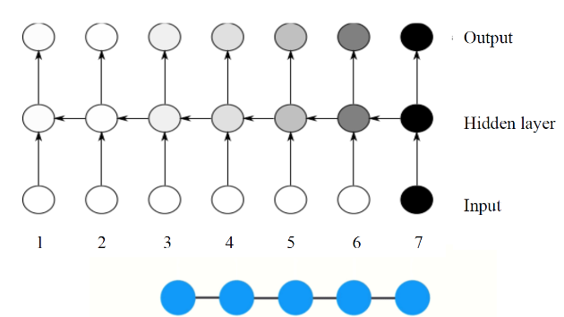
L'exploding gradient si mitiga con il gradient clipping: se la norma supera una soglia τ, si riscala.
g \leftarrow \frac{\tau}{||g||} \cdot g
Con i numeri
Vanishing ed exploding, con i numeri
- Fattore per passo 0,5, per 20 passi: 0,5²⁰ ≈ 9,5 × 10⁻⁷. Il passato lontano non riceve gradiente.
- Fattore 1,5, per 20 passi: 1,5²⁰ ≈ 3325. Il gradiente esplode.
- Il gradient clipping risolve l'esplosione (taglia la norma), non il vanishing.
- Il Perceiver ImageNet fa 8 «passi» (letture), il nostro e01 4: sequenze cortissime rispetto a una RNN sul testo.
- E ogni passo ha i residual: il fattore resta vicino a 1 ().
Idea chiave
Il vanishing gradient limita la memoria delle RNN a sequenze brevi. Per dipendenze lunghe servono gate espliciti che proteggano l'informazione: LSTM e GRU.
Errori tipici
- Nel Perceiver non c'è un input diverso a ogni passo: l'intero input viene riletto a ogni lettura.
- Il clipping cura l'esplosione, non il vanishing: per quello servono gate (LSTM, GRU) o residual.
- Condividere i pesi nel tempo è ciò che rende la RNN piccola e capace di sequenze di lunghezza qualsiasi.
Autoverifica
Scrivi l'aggiornamento di una RNN semplice.
h_t = tanh(W·h_{t−1} + U·x_t + b); stessi W e U a ogni passo.
Perché nasce il vanishing gradient?
Il gradiente verso il passato è un prodotto di un fattore per passo: con fattori minori di 1 tende a zero (0,5²⁰ ≈ 10⁻⁶).
In che senso il Perceiver è una RNN?
Con il weight sharing applica gli stessi pesi più volte a uno stato, i latenti. A differenza di una RNN, a ogni passo rilegge tutto l'input.
Come si combatte l'exploding gradient?
Con il gradient clipping: se la norma supera una soglia, si riscala il gradiente.
LSTM (Long Short-Term Memory)
Le LSTM (Hochreiter & Schmidhuber, 1997) attenuano il vanishing gradient con una cella di memoria c_t. La versione di oggi ha tre porte (gate) che controllano il flusso di informazione: la forget gate è stata aggiunta nel 2000 (Gers et al.).
In 30 secondi
- La LSTM aggiunge una cella c_t che si aggiorna per somma: c_t = f_t ⊙ c_{t−1} + i_t ⊙ c̃_t.
- Tre porte (forget, input, output), ognuna una sigmoide fra 0 e 1, decidono cosa tenere, cosa scrivere e cosa mostrare.
- Con f vicino a 1 il ricordo e il gradiente passano quasi intatti per molti passi.
Ti serve prima
Poi
Le 6 equazioni
f_t = \sigma(W_f [h_{t-1}, x_t] + b_f)
i_t = \sigma(W_i [h_{t-1}, x_t] + b_i)
o_t = \sigma(W_o [h_{t-1}, x_t] + b_o)
\tilde{c}_t = \tanh(W_c [h_{t-1}, x_t] + b_c)
c_t = f_t \odot c_{t-1} + i_t \odot \tilde{c}_t
h_t = o_t \odot \tanh(c_t)
⊙ è il prodotto elemento per elemento. [hₜ₋₁, xₜ] unisce i due vettori in uno. σ è la sigmoide: dà numeri fra 0 e 1, cioè quanto lasciar passare. c̃ₜ è il candidato, il nuovo contenuto proposto. Le matrici sono quattro (W_f, W_i, W_o, W_c): da qui il 4 nel conto dei parametri.
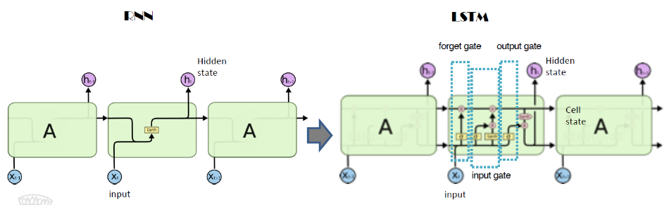
In parole semplici: le tre porte
Forget gate (
fₜ): cosa dimenticare dalla memoria (σ≈0 dimentica, σ≈1 mantiene). Input gate (iₜ): cosa aggiungere di nuovo. Output gate (oₜ): quale parte della memoria esporre come hₜ.
Rif. K · Gate LSTM
Gate LSTM interattivi
La cella Cₜ è una memoria protetta: forget, input e output gate decidono cosa conservare, scrivere ed esporre.
C₍ₜ₋₁₎ = (0.5, 0.3)
Cₜ = (0.583, 0.097)
fₜmantieni / dimentica
(0.666, 0.601)iₜscrivi nuovo contenuto
(0.570, 0.557)Cₜsomma vecchio + candidato
(0.583, 0.097)hₜesponi memoria filtrata
(0.296, 0.048)Forget gate: fₜ vicino a 1 conserva molta memoria precedente. Qui la prima componente resta forte, la seconda viene attenuata.
In parole semplici: leggere un testo
"Il gatto, che era nero e aveva gli occhi verdi, corse via". La cella deve ricordare "il gatto" (soggetto singolare) per tutta la subordinata: il forget gate non lo dimentica, l'input gate aggiunge gli aggettivi senza sovrascriverlo, l'output gate al verbo produce lo stato che codifica "soggetto singolare".
Collegamento al Perceiver
La cella
c_t è un "nastro trasportatore" che porta informazione lungo la sequenza senza degradarla — la stessa intuizione delle residual connections, presenti in ogni blocco del Perceiver (112 in totale).
Con i numeri
Quanto dura un ricordo
- Forget gate f = 0,9 per 20 passi: resta 0,9²⁰ = 12% del ricordo iniziale.
- f = 0,99 per 20 passi: resta 82%.
- f = 0,5: 0,5²⁰ ≈ 10⁻⁶. La rete sceglie da sola quanto ricordare, passo per passo.
- Parametri con stato da 128 e input da 64, un bias per porta: 4 · (128 · (128 + 64) + 128) = 98.816. Il 4 viene da 3 porte + il candidato c̃.
Idea chiave
Le LSTM funzionano bene ma hanno molti parametri (4 trasformazioni lineari per cella). Una versione semplificata con prestazioni comparabili è la GRU.
Errori tipici
- La cella c e lo stato h sono due cose diverse: h = o ⊙ tanh(c).
- La forget gate a 1 vuol dire ricordare, non dimenticare.
- Le porte usano la sigmoide perché servono valori fra 0 e 1 da moltiplicare.
Autoverifica
Scrivi l'aggiornamento della cella LSTM.
c_t = f_t ⊙ c_{t−1} + i_t ⊙ c̃_t; h_t = o_t ⊙ tanh(c_t).
Perché la LSTM soffre meno di vanishing gradient?
La cella si aggiorna per somma: con f vicino a 1 il gradiente passa quasi intatto (0,99²⁰ ≈ 0,82).
Quanti parametri ha una LSTM con stato n e input m?
4 · (n · (n + m) + n). Con n = 128 e m = 64: 98.816.
A cosa serve la output gate?
Decide quanta parte della cella diventa lo stato h mostrato fuori.
GRU (Gated Recurrent Unit)
La GRU (Cho et al., 2014) semplifica la LSTM: fonde cella e stato nascosto e usa solo 2 porte invece di 3.
In 30 secondi
- La GRU ha due porte: reset r e update z. Niente cella separata.
- h_t = (1 − z_t) ⊙ h_{t−1} + z_t ⊙ h̃_t: z decide quanto dello stato nuovo entra.
- Circa il 25% di parametri in meno di una LSTM, prestazioni spesso simili.
Ti serve prima
Le equazioni
r_t = \sigma(W_r [h_{t-1}, x_t] + b_r)
z_t = \sigma(W_z [h_{t-1}, x_t] + b_z)
\tilde{h}_t = \tanh(W [r_t \odot h_{t-1}, x_t] + b)
h_t = (1 - z_t) \odot h_{t-1} + z_t \odot \tilde{h}_t
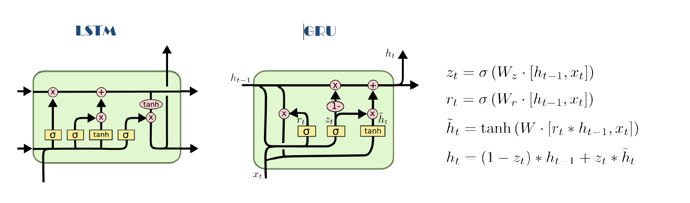
Rif. L · Gate GRU
Gate GRU interattivi
La GRU usa meno porte della LSTM: reset prepara il candidato, update decide quanto vecchio stato mantenere.
stato precedenteh₍ₜ₋₁₎
(0.5, -0.3)reset gaterₜ
(0.601, 0.582)candidatoh̃ₜ
(0.541, -0.289)stato aggiornatohₜ
(0.523, -0.295)
vecchio stato
candidato
Reset gate: decide quanta memoria precedente entra nel candidato. Se rₜ è basso, il candidato ignora il passato.
Forward pass (condensato)
Con h₍ₜ₋₁₎=(0.5, −0.3), xₜ=0.8: reset rₜ=(0.601, 0.582), update zₜ=(0.552, 0.463), candidato h̃ₜ=(0.541, −0.289), stato hₜ=(0.523, −0.295). Con zₜ≈0.5 la GRU mescola circa metà vecchio stato e metà candidato: aggiornamento graduale.
GRU vs LSTM
| Aspetto | LSTM | GRU |
|---|---|---|
| Porte | 3 (forget, input, output) | 2 (reset, update) |
| Stato interno | C₍ₜ₎ e h₍ₜ₎ separati | Solo h₍ₜ₎ |
| Parametri | Più numerosi | ~25% in meno |
| Sequenze molto lunghe | Leggermente migliore | Comparabile |
| Velocità di training | Più lenta | Più veloce |
Con i numeri
GRU contro LSTM, in parametri e in un passo
- Stato 128, input 64: 3 · (128 · 192 + 128) = 74.112 parametri, contro 98.816 della LSTM (−25%).
- Un passo con z = 0,2: h_t = 0,8 · h_{t−1} + 0,2 · h̃_t. Lo stato cambia poco.
- Con z = 0 lo stato si copia identico: è la strada libera del gradiente, come la forget gate a 1 della LSTM.
- Con r = 0 il candidato h̃ ignora il passato: la rete «riparte» da ciò che vede ora.
Idea chiave
RNN, LSTM e GRU eccellono sui dati sequenziali, ma restano legate alla nozione di ordine temporale. Per dati a griglia (immagini) servono le CNN; per relazioni globali a costo accettabile, l'attention dei Transformer.
📄 Dal paper originale
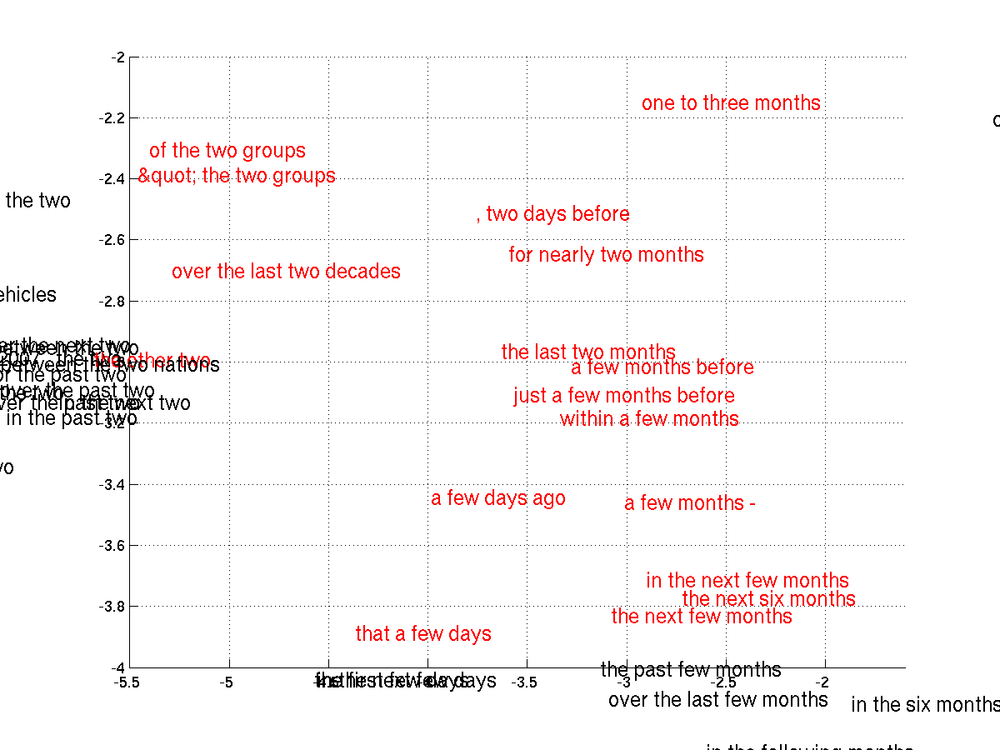
Errori tipici
- In questa convenzione z = 0 vuol dire copiare lo stato vecchio, z = 1 prendere tutto il candidato. Alcuni libri usano la convenzione opposta.
- La GRU non ha la output gate: lo stato è anche l'uscita.
- Meno parametri non vuol dire sempre peggio: dipende dal compito.
Autoverifica
Scrivi l'aggiornamento della GRU.
h_t = (1 − z_t) ⊙ h_{t−1} + z_t ⊙ h̃_t, con h̃_t = tanh(W[r_t ⊙ h_{t−1}, x_t] + b).
Quanti parametri in meno della LSTM?
Circa il 25%: 3 blocchi di pesi invece di 4 (74.112 contro 98.816 con n = 128, m = 64).
Cosa fa la reset gate?
Decide quanto del passato usare per costruire il candidato h̃.
GRU o LSTM?
Spesso equivalenti. La GRU è più leggera; la LSTM, con cella separata, può essere più espressiva su dipendenze lunghe.
Riferimento: Transformer
Le CNN hanno visione locale, le RNN soffrono di vanishing gradient. Il Transformer (Vaswani et al., 2017, "Attention Is All You Need") supera entrambi con la self-attention: Transformer: ogni token parla con tutti, a costo O(M²).
In 30 secondi
- Il Transformer usa solo attenzione e MLP: ogni token guarda tutti gli altri.
- Attention(Q, K, V) = softmax(QKᵀ ÷ √d_k) · V. d_k è la dimensione delle chiavi di una testa: 64 nel Transformer, 261 nella cross-attention del Perceiver. Con M token la matrice è M × M.
- Il Perceiver ne eredita i blocchi, ma li fa lavorare sui latenti: N × N invece di M × M.
Ti serve prima
Dove si usa
Percorso «Parti da zero» · 5 di 5 — hai finito le basi ·
Fonte negli appunti
PDF pp. 178-188 · Sezioni N-O
Apri PDF
Famiglia dei Transformer
Meglio non pensare al Transformer come a un solo modello fisso. È una famiglia: cambia quali blocchi usi, dove metti la maschera, che cosa consideri token e come produci l'output.
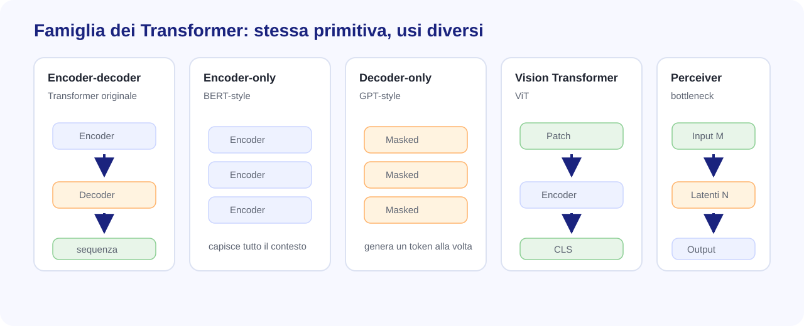
Rif. N-O · varianti Transformer
Quale Transformer sto guardando?
Seleziona una variante: cambiano maschera, input, output e motivo architetturale.
Encoder-decoder originale
Forma mentaleinput seq → memoria encoder → output seq
Uso tipico
Traduzione e sequence-to-sequence.
Encoder-decoder originale: utile quando input e output sono due sequenze diverse. Il decoder usa masked self-attention e cross-attention verso l'encoder.
Architettura: encoder-decoder

- Encoder: ogni token "vede" tutti gli altri via self-attention e produce una rappresentazione contestualizzata.
- Decoder: genera l'output token per token, con masked self-attention (non vede il futuro) e cross-attention verso l'encoder.
Rif. N.1-N.7 · encoder-decoder
Anatomia encoder-decoder animata
La figura originale diventa una sequenza di pezzi leggibili: embedding, encoder N×, decoder autoregressivo, cross-attention e testa finale.
Encoder N×
Input embeddingtoken → vettore d
+ Positional encodingz = embed + PE
Multi-Head Self-AttentionQ, K, V dall'input
Add & NormLN(x + attention)
Feed Forward512 → 2048 → 512
Add & Normmemoria H
token + PE
Decoder N×
Output embeddingDecoder shifted right
+ Positional encodingordine del prefisso
Masked multi-head attentionniente token futuri
Add & NormLN(x + masked)
Cross-attention encoder-decoderQ decoder, K/V encoder
Add & NormLN(x + cross)
Feed Forwardstesso MLP per token
Add & Normstato decoder
Linear + Softmaxprobabilità output
Caso reale: traduzione
Il gatto dorme → The cat sleeps
Frase sorgente
Il
gatto
dorme
Decoder durante training
<BOS>
The
cat
sleeps
Cosa vede
I token reali vengono trasformati in vettori; la posizione dice al modello che "gatto" è il secondo token.
Cosa produce
Una sequenza di vettori numerici, ancora non una traduzione: è solo il formato che il Transformer può elaborare.
Esempio semplice
Embedding: "Il", "gatto", "dorme" diventano tre vettori; il positional encoding evita che "gatto dorme Il" sembri equivalente.
Input embedding + positional encoding: i token diventano vettori e ricevono una posizione. Senza PE, l'attention non saprebbe l'ordine.
Esempi animati leggeri
Ogni riquadro prende un pezzo del Transformer e lo traduce in un caso semplice. Le animazioni sono volutamente piccole: servono a far vedere il verso del calcolo, non a distrarre.
Embedding: token reale
Le parole non entrano come stringhe: diventano vettori. Il positional encoding aggiunge l'ordine, quindi il secondo vettore sa di essere "gatto" in posizione 2.
Encoder: contesto
Nel layer encoder, "gatto" legge anche "Il" e "dorme". La forma resta 3×512, ma ogni riga contiene più contesto.
Scaled dot: pesi
QKᵀ/√d_k produce score, la softmax li trasforma in pesi per riga, poi A·V fa una media pesata dei value.
Multi-head: più viste
Ogni testa guarda con una prospettiva diversa. Concatenare non basta: Wᴼ rimescola le teste e riporta tutto nello spazio d.
FFN: espandi e comprimi
L'attention mescola token; la FFN trasforma ogni token separatamente. Nel Transformer originale espande 512 → 2048 e poi comprime.
Decoder: passato soltanto
La masked self-attention impedisce di guardare il futuro. Per predire "sleeps", il decoder può usare <BOS>, The, cat.
Perceiver: matrice rettangolare
La scaled dot è la stessa, ma non è più M×M. Nel Perceiver le query vengono dai latenti e key/value dall'input: la matrice è N×M, molto più gestibile.
Encoder block dettagliato
L'encoder è una pila di layer identici. Nel Transformer originale sono N = 6; ogni layer mantiene la forma M×d, cioè stessa lunghezza di sequenza e stessa dimensione del modello. Cambia il contenuto dei vettori: diventano sempre più contestualizzati.
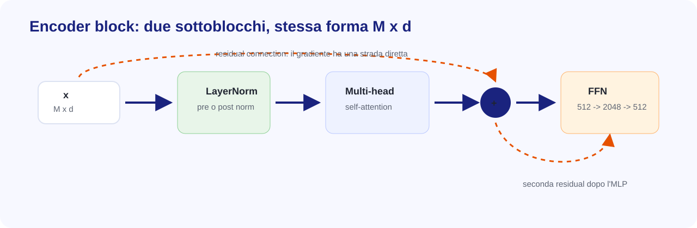
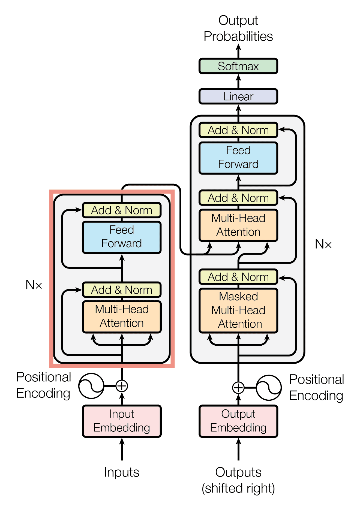
Self-attentionMescola informazione tra token: ogni posizione può leggere tutte le altre in un solo layer.
Residual + LayerNormStabilizza training e gradiente: il Transformer originale usa post-norm, GPT-2 e Perceiver usano pre-norm.
FFN token-wiseLo stesso MLP a due layer viene applicato indipendentemente a ogni token, con espansione interna
512 → 2048 → 512.Encoder layer: cosa cambia davvero
Prendiamo la frase sorgente dell'esempio, già trasformata in embedding + positional encoding: ["Il", "gatto", "dorme"]. Qui M = 3 token e, nel Transformer originale, d = 512. Quindi l'input del primo encoder layer è una matrice H ∈ R^{3×512}: 3 righe, una per token, 512 colonne di feature.
| Passo | Forma | Cosa significa |
|---|---|---|
| Input encoder | X ∈ R^{3×512} | ogni riga è un token con contenuto + posizione |
| Self-attention | Z_attn ∈ R^{3×512} | ogni token legge gli altri token e riceve contesto |
| Add & Norm | H1 = LN(X + Z_attn) | somma residua + LayerNorm, forma invariata |
| FFN | 3×512 → 3×2048 → 3×512 | MLP identico applicato riga per riga |
| Add & Norm finale | H_out ∈ R^{3×512} | stessa forma, ma vettori più contestualizzati |
La parte importante è questa: l'encoder non cambia il numero di token e non cambia la dimensione d. Cambia il contenuto delle righe. Dopo un layer, il vettore di gatto non rappresenta più solo la parola "gatto": contiene informazione da Il e dorme. Dopo N = 6 layer, l'output dell'encoder è la memoria H che il decoder userà nella cross-attention.
\text{Post-norm originale:}\quad y = \mathrm{LN}(x + \mathrm{Sublayer}(x))
\text{Pre-norm moderno:}\quad y = x + \mathrm{Sublayer}(\mathrm{LN}(x))
Post-norm vs pre-norm, perché ti interessa: il Transformer originale applica LayerNorm dopo la somma residua; GPT-2 e Perceiver applicano LayerNorm prima della sottofunzione. Il risultato pratico è che nei modelli profondi il percorso residuo resta più pulito e il gradiente scorre meglio. È lo stesso motivo per cui il latent transformer del Perceiver usa il pattern pre-norm.
Il collegamento con il Perceiver è diretto: i blocchi attention del Perceiver ereditano multi-head attention, MLP, residual e LayerNorm, ma li applicano soprattutto nello spazio latente N×D, non sull'input enorme M×C. Nel Perceiver ImageNet il latent transformer lavora su 512×1024. Il paper non dice quante teste ha la self-attention: solo il modello piccolo delle ablazioni ne usa 8. La MLP non allarga: hidden = D = 1024 (fattore 1). Il nostro e01 invece usa 8 teste su D = 384 (48 canali per testa) e una MLP a fattore 4 (384 → 1.536). È lo stesso schema, solo spostato nello spazio latente.
Tokenizzazione ed embedding
Il testo grezzo viene diviso in token (word-level, subword come BPE/SentencePiece, o byte-level), poi mappato in vettori densi tramite una tabella appresa E di dimensione |vocab| × d (nel paper d = 512), a cui si somma il positional encoding:
z_i = \mathrm{Embed}(token_i) + \mathrm{PE}(i)
Scaled Dot-Product Attention
L'input è proiettato in Query, Key, Value. Il cuore del Transformer:
\mathrm{Attention}(Q, K, V) = \mathrm{softmax}(\frac{Q K^T}{\sqrt{d_k}}) V
- MatMul
QKᵀ: somiglianza tra ogni coppia di token. - Scale per
√d_k: stabilizza i gradienti. - Mask (solo decoder): pone
−∞sulle posizioni future. - Softmax: pesi di attenzione normalizzati per riga.
- MatMul con
V: rappresentazione contestualizzata.
Self-attention è una matrice di comunicazione globale: la riga i dice quanto il token i ascolta ciascun token j. Per questo è potentissima su testo e relazioni lunghe, ma produce una matrice M×M: se M raddoppia, le celle della matrice quadruplicano.
S = \frac{QK^T}{\sqrt{d_k}}
A = \mathrm{softmax}(S)
Z = AV
Esempio numerico completo: QKᵀ, scaling, softmax, A·V
Usiamo 3 token e vettori piccolissimi con d_k = 2. L'obiettivo è vedere cosa significa "il token t1 guarda gli altri".
Q = \begin{bmatrix}1 & 0\\0 & 1\\1 & 1\end{bmatrix}
\quad
K = \begin{bmatrix}1 & 0\\0 & 1\\0.5 & 0.5\end{bmatrix}
\quad
V = \begin{bmatrix}1 & 0\\0 & 1\\0.5 & 0.5\end{bmatrix}
| Passo | Calcolo | Risultato |
|---|---|---|
| 1. Score grezzi | QKᵀ | [[1, 0, 0.5], [0, 1, 0.5], [1, 1, 1]] |
| 2. Scaling | QKᵀ / √2 | [[0.71, 0, 0.35], [0, 0.71, 0.35], [0.71, 0.71, 0.71]] |
| 3. Softmax riga 1 | softmax([0.71, 0, 0.35]) | [0.46, 0.22, 0.32] |
| 4. Aggregazione | A·V = 0.46·V1 + 0.22·V2 + 0.32·V3 | [0.62, 0.38] |
Controllo: e^0,71 = 2,03; e^0 = 1; e^0,35 = 1,42; somma 4,45. Pesi 0,46 + 0,22 + 0,32 = 1. Anche l'uscita somma a 1, perché ogni riga di V somma a 1.
Token t1 numericot1 ha peso massimo su sé stesso (
0.46), ma prende anche un po' da t2 e t3.Riga = distribuzioneOgni riga della softmax somma a 1: è un budget di attenzione da spartire.
Output = media pesata
A·V non sceglie un token solo: crea una combinazione continua dei value.Collegamento con il Perceiver: stessa attention, sorgenti diverse
La matematica è identica: QKᵀ, divisione per √d_k, softmax per riga, prodotto con V. Cambia solo da dove arrivano Q, K e V.
| Modello | Q viene da | K/V vengono da | Matrice score | Effetto |
|---|---|---|---|---|
| Transformer encoder | sequenza input | stessa sequenza input | M×M | ogni token parla con tutti i token |
| Perceiver cross-attention | latenti N×D | input M×C_tot | N×M | pochi latenti leggono molti input |
Nel caso ImageNet degli appunti: N = 512, M = 50.176, d_QKV = 261. Quindi il Perceiver calcola Q ∈ R^{512×261}, K,V ∈ R^{50.176×261} e una matrice score 512 × 50.176. Lo scaling diventa √d_QKV = √261 ≈ 16. Dopo la softmax, ogni riga dice quali pixel vengono letti da un latente; poi A·V produce feature 512×261, proiettate con W_o a 512×1024 per la residual connection.
Quindi quando negli appunti del Perceiver trovi A = softmax(QKᵀ / √d_QKV), stai vedendo la stessa scaled dot-product attention del Transformer. La differenza decisiva è geometrica: il Transformer fa self-attention quadrata; il Perceiver fa cross-attention rettangolare.
Rif. N.4-N.5 · Scaled dot-product + multi-head
Scaled dot-product attention interattiva
Token → Q/K/V → M×M → softmax → A·V: cambia token interrogante e guarda la riga della matrice.
Il token t1 distribuisce la sua attenzione su tutti gli altri token: la riga della matrice somma a 1.
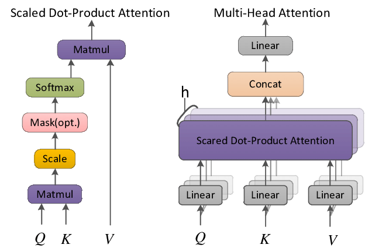
Perché dividere per √d_k?
Con
Q, K a media 0 e varianza 1, il prodotto scalare ha varianza d_k. Per d_k grande (64, 128) gli score esplodono e spingono la softmax in saturazione (gradienti ~0). Dividere per √d_k riporta la varianza a ~1.
Multi-Head Attention
Invece di una sola attention, si calcolano h teste in parallelo su sotto-spazi di dimensione d_head, poi si concatenano e proiettano con Wᴼ:
\mathrm{MultiHead}(Q, K, V) = \mathrm{Concat}(\mathrm{head}_1, \ldots, \mathrm{head}_h) W^O
\mathrm{head}_i = \mathrm{Attention}(Q W_i^Q, K W_i^K, V W_i^V)
Esempio dimensionale: d = 512, h = 8
Nel paper originale il modello usa d = 512 e h = 8 teste. Ogni testa lavora su d_k = d_v = 64: non perché il modello diventi più piccolo, ma perché la dimensione totale viene spartita tra le teste. Ogni testa produce un output M×64; concatenandone 8 si torna a M×512, poi Wᴼ fonde le prospettive.
| Oggetto | Forma | Significato |
|---|---|---|
| Input encoder | M×512 | M token, embedding da 512 dimensioni |
| Q, K, V per testa | M×64 | una prospettiva di attenzione |
| Score attention | M×M | tutti i token contro tutti i token |
| Output concatenato | M×512 | 8 teste ricomposte nella dimensione del modello |
Ogni testa impara a guardare un aspetto diverso: sintassi, semantica, prossimità, riferimenti lontani. Il costo resta dominato dalla matrice M×M, non dal numero di teste preso isolatamente.
Feed-Forward Network (FFN)
Dopo l'attention, ogni token passa per un MLP a due layer (identico per tutti), che introduce la non-linearità mancante:
\mathrm{FFN}(x) = \mathrm{ReLU}(x W_1 + b_1) W_2 + b_2
Nel paper d = 512 → d_ff = 2048 → 512 (espansione 4×).
Decoder e generazione
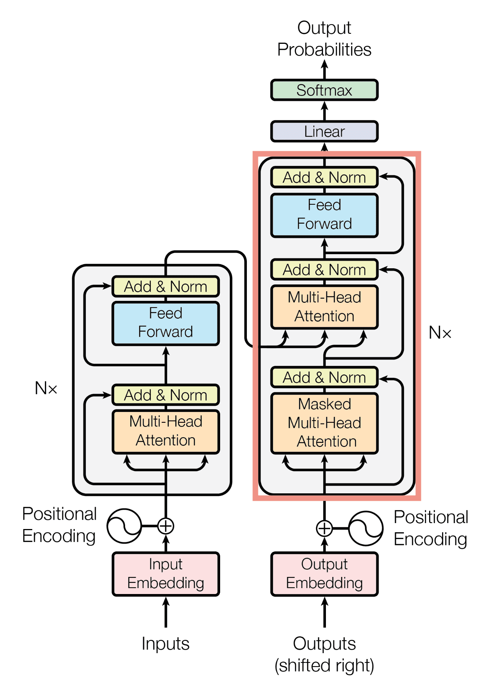
Il decoder ha tre sottoblocchi: masked self-attention, cross-attention verso l'encoder e FFN. Questa differenza è importante: l'encoder capisce tutta la frase sorgente, il decoder genera la frase target in modo autoregressivo.
Masked self-attentionOgni posizione del decoder può guardare solo i token già generati, non quelli futuri.
Cross-attentionLe query vengono dal decoder, key e value dalla memoria dell'encoder: è il punto in cui la traduzione legge l'input.
FFN + proiezioneL'MLP elabora ogni posizione, poi una proiezione lineare produce i logit sul vocabolario.
La maschera causale mette −∞ nelle celle sopra la diagonale della matrice QKᵀ. Dopo la softmax quelle posizioni diventano peso 0: il modello non può "barare" leggendo parole target future.

i usa solo posizioni j≤i: il futuro è mascherato prima della softmax.
S_{ij}^{masked} =
\begin{cases}
S_{ij} & j \le i \\
-\infty & j > i
\end{cases}
"Il gatto dorme" → "The cat sleeps"
Il decoder genera autoregressivamente: [BOS] → "The" → "cat" → "sleeps" → [EOS], ad ogni passo leggendo l'encoder via cross-attention. In training si usa teacher forcing: si fornisce l'output corretto come input, non la predizione precedente.
Positional Encoding sinusoidale
L'attention non vede l'ordine. La self-attention è equivariante per permutazione: se mescoli le parole, l'uscita si mescola allo stesso modo. Con query fisse e una media finale, come nel Perceiver, l'uscita resta proprio uguale: è invariante. Senza posizione non distingue "il gatto mangia il topo" da "il topo mangia il gatto". Il PE sinusoidale risolve:
\mathrm{PE}(pos, 2i) = \sin(\frac{pos}{10000^{\frac{2i}{d}}})
\mathrm{PE}(pos, 2i+1) = \cos(\frac{pos}{10000^{\frac{2i}{d}}})
Differenza con il Perceiver
Il Transformer somma il PE all'embedding (
z = embed + PE), mescolando contenuto e posizione. Il Perceiver concatena le Fourier features (z = [contenuto ‖ PE]), tenendole separate. Le frequenze vanno da 1 a μ/2 (Nyquist), e il massimo resta fisso: più bande infittiscono lo spettro, non lo allungano. In NeRF la banda k ha frequenza 2^k: con 64 bande si arriverebbe a 2^64 ≈ 1,8·10^19, e già oltre circa 15 bande il training era instabile (p. 5 e 18). Bande lineari o logaritmiche fra 1 e μ/2 danno risultati simili (didascalia Fig. 6).
Transformer vs Perceiver
| Aspetto | Transformer | Perceiver |
|---|---|---|
| Attention | Self (Q,K,V da X) | Cross (Q da latenti, K/V da input) |
| Complessità | O(M²d) | O(MNd) + O(N²d) |
| Positional encoding | Somma (sinusoidale) | Concatenazione (Fourier) |
| Profondità | N layer (6–12) | T iterazioni (8) con weight sharing |
| Attivazione FFN | ReLU | GELU |
| Normalizzazione | Post-norm (originale) | Pre-norm |
Con i numeri
Un encoder del Transformer originale, contato
- d = 512, 8 teste da 64, FFN 2.048. Attenzione: 4 · 512² + 4 · 512 = 1.050.624 parametri.
- FFN: 2 · 512 · 2.048 + 2.048 + 512 = 2.099.712. Due LayerNorm: 2.048.
- Un layer: 3.152.384 parametri. Sei layer: 18,9 M.
- Con M = 512 token: 512² = 262.144 punteggi per testa, 2.097.152 con 8 teste.
- Raddoppiando M a 1.024 i punteggi quadruplicano. È il problema che il Perceiver risolve.
Idea chiave
Il Perceiver sostituisce la self-attention O(M²) con la cross-attention O(MN) (N≪M), ma eredita dal Transformer tutto il resto: multi-head, FFN, residual, LayerNorm.
📄 Dal paper originale
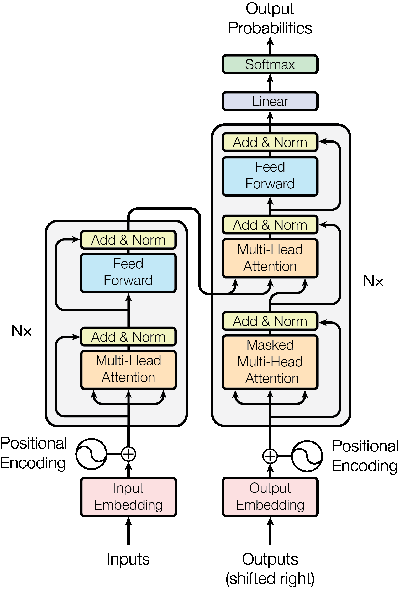
Errori tipici
- Più teste non aumentano i prodotti QKᵀ e A·V: in totale costano sempre M² · d. Aumentano però le matrici dei punteggi: 8 teste, 8 matrici M × M da tenere in memoria e da passare nella softmax.
- L'encoder non ha maschera; il decoder sì (causale), per non vedere il futuro.
- Il Transformer somma la posizione all'embedding; il Perceiver la concatena.
Autoverifica
Scrivi la scaled dot-product attention.
softmax(QKᵀ ÷ √d_k) · V.
Quanti parametri ha un encoder layer con d = 512 e d_ff = 2.048?
1.050.624 (attenzione) + 2.099.712 (FFN) + 2.048 (LayerNorm) = 3.152.384.
Perché il Transformer costa O(M²)?
Ogni token confronta la sua query con le chiavi di tutti gli M token: la matrice è M × M.
Cosa prende il Perceiver dal Transformer e cosa cambia?
Prende attenzione, MLP, residual e LayerNorm. Cambia chi fa le domande: N latenti invece degli M input.
Riferimento: Vision Transformer (ViT)
Il ViT (Dosovitskiy et al., 2021) applica il Transformer alle immagini trattandole come sequenze di patch: niente convoluzioni, ma attention globale fin dal primo layer.
In 30 secondi
- Il ViT taglia l'immagine in pezzi 16 × 16, li appiattisce e li tratta come token.
- Su 224 × 224: 196 pezzi più un token [CLS], 197 token. L'attenzione è 197 × 197.
- Pochi prior: con tanti dati è ottimo, con pochi serve pre-training.
Ti serve prima
Dove si usa
Fonte negli appunti
PDF pp. 185-188 · Sezione O
Apri PDF
Perché il Transformer sulle immagini?
Le CNN catturano dipendenze globali solo dopo molti strati. Il ViT le crea fin dal primo layer (ogni patch parla con tutte le altre). Il prezzo: servono dataset enormi o pretraining + fine-tuning.
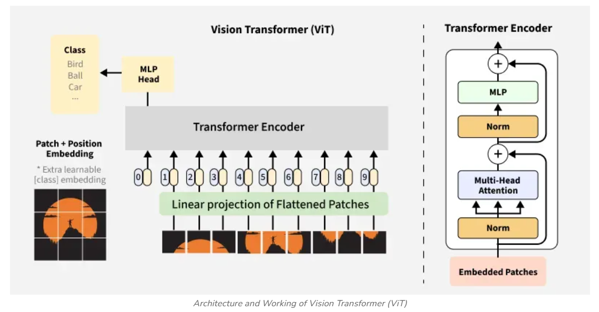
Rif. O · Vision Transformer
Vision Transformer: patchify
Patch 16×16 → 196 patch + CLS: il patch size decide la lunghezza della sequenza e il costo della self-attention.
197 token ⇒ matrice attention 197×197
Con patch 16×16: 14×14 = 196 patch, più token CLS. Il Transformer vede una sequenza, non pixel singoli.
Pipeline in 7 passi (ViT-Base)
- Patch splitting: l'immagine
224×224×3è divisa in patch16×16→N = 196patch. - Flattening: ogni patch (
16×16×3 = 768valori) diventa un vettorepᵢ ∈ ℝ⁷⁶⁸. - Patch embedding: proiezione lineare appresa
xᵢ = pᵢ W_E + b_E, conD = 768. - CLS token: si prepone un token speciale che raccoglie l'informazione globale → sequenza
197 × 768. - Positional encoding: si sommano positional embedding appresi (non sinusoidali).
- Encoder:
L = 12layer (LayerNorm → MHAh=12, d_k=64→ residual; LayerNorm → FFN GELU768→3072→768→ residual). - MLP head: si estrae il CLS finale e si classifica.
\hat{y} = \mathrm{softmax}(W_{cls} z_{CLS} + b), \quad W_{cls} \in \mathbb{R}^{K \times 768}
ViT vs CNN
Local vs globalCNN: filtri locali, contesto globale solo nei layer profondi. ViT: self-attention globale fin dal primo layer.
Inductive biasCNN: bias forti (località, traslazione) → efficiente con pochi dati. ViT: pochi bias → flessibile ma assetato di dati.
DatiCNN: bene anche su CIFAR/MNIST. ViT: richiede pretraining su dataset enormi (ImageNet-21k, JFT-300M).
Collegamento al Perceiver
Il ViT riduce
M = 50.176 pixel a 196 patch, ma la tokenizzazione resta domain-specific (solo immagini). Il Perceiver la elimina del tutto: accetta qualsiasi input grezzo e usa la cross-attention per proiettarlo in un latent array fisso N ≪ M.
Con i numeri
Dall'immagine ai token
- 224 ÷ 16 = 14 pezzi per lato: 14 · 14 = 196 pezzi.
- Ogni pezzo ha 16 · 16 · 3 = 768 numeri, proiettati a d = 768 (ViT-Base).
- Con il token [CLS]: 197 token. Matrice di attenzione 197² = 38.809, contro 2,5 miliardi sui pixel.
- ViT-B/16: 86 M parametri, 55,4 miliardi di FLOPs, 77,9% su ImageNet (Tab. 7 di Perceiver IO).
- Con i pixel permutati (Tab. 2 del Perceiver, ViT-B/16 con Fourier features: per questo parte da 76,7 e non da 77,9): 76,7 → 61,7. Dentro un pezzo 16 × 16 conta ancora la griglia.
Idea chiave
ViT = "tokenizzare l'immagine in patch, poi Transformer standard". È il ponte concettuale tra Transformer testuale e Perceiver: stesso motore di attention, ma il ViT resta legato alla griglia 2D, il Perceiver no.
📄 Dal paper originale (ritagliata dal PDF)
Errori tipici
- Il ViT riduce M con i pezzi; il Perceiver riduce il numero di query con i latenti. Sono due soluzioni diverse allo stesso O(M²).
- Dividere in pezzi è già un prior 2D: per questo la permutazione danneggia anche il ViT.
- Il [CLS] è dentro la sequenza; la query di classe di Perceiver IO sta fuori.
Autoverifica
Quanti token ha un ViT-B/16 su 224 × 224?
196 pezzi + 1 [CLS] = 197.
Perché il ViT è meno efficiente sui dati di una CNN?
Ha pochi prior induttivi: località ed equivarianza per traslazione deve impararle dai dati.
Cosa succede al ViT con i pixel permutati?
Perde 15 punti (76,7 → 61,7): dentro ogni pezzo la disposizione dei pixel conta ancora.
ViT e Perceiver risolvono lo stesso problema: come?
Il ViT accorcia la sequenza raggruppando pixel in pezzi; il Perceiver lascia tutti i pixel e fa leggere l'input a pochi latenti.
Riferimento: Dropout
Il dropout azzera casualmente una frazione di attivazioni durante il training. L'effetto è quello di addestrare implicitamente un ensemble esponenziale di sottoreti, rendendo la rete più robusta.
In 30 secondi
- Dropout: in training azzera ogni attivazione con probabilità p e moltiplica le altre per 1 ÷ (1 − p).
- In inferenza non si spegne niente: grazie alla divisione il valore atteso resta lo stesso.
- Il Perceiver non lo usa (peggiorava, p. 17). Nel nostro progetto: 0 su immagini e punti 3D, 0,1 nei modelli di testo.
Dove si usa
\tilde{x}_i = \frac{m_i \cdot x_i}{1-p}, \quad m_i \sim \text{Bernoulli}(1-p)
La divisione per (1-p) (inverted dropout) mantiene il valore atteso dell'output uguale all'input: E[x̃] = x. A inference si usa l'identità.
Train vs. inference
Rif. Q · Dropout
Griglia neuroni — un campione a ogni forward pass
In Training la maschera si ricampiona da sola: a ogni forward pass una frazione p diversa di neuroni si spegne (rosso, rimpicciolito), gli altri restano attivi (blu, scalati ×1/(1−p)). Sposta lo slider per cambiare p; passa a Inference per fissarli tutti accesi.
Training (p=0.5): 16 neuroni azzerati su 32. Scala: ×2.00.
Interpretazione ensemble
Con N neuroni esistono 2^N sottoreti possibili. Ogni forward pass ne campiona una diversa. A inference si usa la rete intera, senza maschera. È un'approssimazione economica della media geometrica delle 2^N sottoreti: esatta solo in casi semplici, come un solo strato con softmax; nelle reti profonde funziona bene in pratica.
Dove si applica
| Posizione | Dropout? | Motivo |
|---|---|---|
| Dopo Linear / MLP | ✓ sì | classico punto di applicazione |
| Sull'uscita di ogni sottoblocco, prima della somma residua | ✓ sì | schema del Transformer originale: LN(x + Dropout(Sublayer(x))), p = 0,1 |
| Dopo Attention scores | ✓ opzionale | attention dropout usato in BERT, non nel Perceiver |
| Inference | ✗ mai | identità: il modello usa tutti i neuroni |
Con i numeri
Dropout con p = 0,1, su un vettore
- Vettore (2; 4; 6; 8), maschera (1; 0; 1; 1): il secondo valore si spegne.
- Gli altri si dividono per 0,9: (2,22; 0; 6,67; 8,89).
- Valore atteso di ogni elemento: 0,9 · (x ÷ 0,9) + 0,1 · 0 = x. Train e inferenza tornano in media.
- Con n neuroni ci sono 2ⁿ sotto-reti possibili: il dropout ne allena implicitamente un ensemble.
- Nel progetto: dropout 0 nelle run su CIFAR-10 e ModelNet40, 0,1 nel pre-training io_mlm e nei fine-tuning GLUE (dai config.txt delle run).
Collegamento al Perceiver
Il Perceiver non usa dropout. Il paper dice solo che nei primi esperimenti lo usava ovunque e peggiorava i risultati (p. 17); non mostra una tabella. Una lettura plausibile, nostra e non del paper: il weight sharing riduce già l'overfitting (p. 4).
📄 Dal paper originale
Errori tipici
- In inferenza il dropout si spegne: dimenticare model.eval() dà risultati rumorosi.
- In PyTorch p è la probabilità di spegnere. Nel paper di Srivastava et al. p è la probabilità di tenere: controlla sempre la convenzione.
- Dropout e weight sharing regolarizzano in modi diversi: il paper ha tenuto solo il secondo.
Autoverifica
Cosa fa il dropout in training e in inferenza?
In training spegne ogni attivazione con probabilità p e scala le altre per 1 ÷ (1 − p). In inferenza lascia tutto acceso.
Perché si divide per 1 − p?
Per conservare il valore atteso: così in inferenza non serve riscalare niente.
Perché il Perceiver non usa dropout?
Il paper l'ha provato e peggiorava (p. 17): la regolarizzazione viene già dal collo di bottiglia e dal weight sharing.
Dove hai usato dropout nel tuo progetto?
Nei modelli di testo (io_mlm e i fine-tuning GLUE), con p = 0,1. Le run su CIFAR-10 e ModelNet40 hanno dropout 0.
Riferimento: Inizializzazione dei Pesi (Xavier / He)
L'inizializzazione dei pesi determina la varianza delle attivazioni al primo forward pass. Se la varianza cresce strato per strato esplode; se decresce svanisce. In entrambi i casi il training non converge.
In 30 secondi
- L'inizializzazione decide la varianza delle attivazioni al primo passaggio: se cresce strato dopo strato esplode, se cala svanisce.
- Xavier: Var(w) = 2 ÷ (fan_in + fan_out), per tanh e sigmoide. He: Var(w) = 2 ÷ fan_in, per ReLU.
- PyTorch di default usa per i Linear un'uniforme con scala 1 ÷ √fan_in. I latenti del Perceiver usano una normale troncata con σ = 0,02.
Dove si usa
Il problema: propagazione della varianza
Per un layer lineare z = Wx con n ingressi, pesi i.i.d. a media zero e indipendenti da x:
\text{Var}(z_j) = n \cdot \text{Var}(W) \cdot E[x^2]
Se x ha media zero, E[x²] = Var(x): per mantenere Var(z) = Var(x) basta Var(W) = 1/n. Dopo una ReLU metà dei valori è 0, quindi E[x²] = Var(z_prec) ÷ 2. Per compensare serve Var(W) = 2/n: è l'inizializzazione di He.
Xavier vs. He: il confronto interattivo
Rif. R · Weight Initialization
Varianza strato per strato
Sposta il cursore per cambiare la profondità. Ogni linea mostra come evolve la varianza delle attivazioni con un'init diversa.
10 layer, Xavier: varianza finale ≈ 1.000 → stabile ✓
| Metodo | Formula Var(W) | Attivazione | Effetto |
|---|---|---|---|
| Random piccolo | 0.0001 | qualsiasi | vanishing 💀 |
| Xavier/Glorot | 2/(n_in + n_out) | tanh, sigmoid | stabile ✓ |
| He/Kaiming | 2/n_in | ReLU, GELU | stabile ✓ |
| Random grande | 1 | qualsiasi | exploding 💥 |
Con i numeri
Tre inizializzazioni per lo stesso strato
- Strato da 384 a 1.536 (l'MLP del nostro e01).
- Xavier: σ = √(2 ÷ 1.920) = 0,0323.
- He: σ = √(2 ÷ 384) = 0,0722.
- Default di PyTorch (uniforme fra ±1 ÷ √384): σ = 1 ÷ √(3 · 384) = 0,0295. È quella del nostro codice.
- Se ogni strato dimezza la varianza, dopo 10 strati resta 0,5¹⁰ ≈ 0,001: il segnale svanisce.
Collegamento al Perceiver
Il latent array usa una normale troncata con σ = 0,02: valori piccoli (). Il paper non dice come inizializza i Linear. Nel nostro codice tutti i Linear (Q, K, V, uscita, MLP) usano il default di PyTorch: uniforme fra ±1 ÷ √fan_in (fan_in = numero di ingressi dello strato).
📄 Dal paper originale
Errori tipici
- Xavier e He differiscono per il fattore: He compensa la metà di attivazioni che la ReLU azzera.
- I latenti non sono pesi di uno strato: la loro scala (0,02) è una scelta a parte, e conta (e28 con σ = 1: 52,08%).
- LayerNorm e residual rendono i Transformer meno sensibili all'inizializzazione, non insensibili.
Autoverifica
Scrivi Xavier e He.
Xavier: Var = 2 ÷ (fan_in + fan_out). He: Var = 2 ÷ fan_in.
Quale si usa con la ReLU e perché?
He: la ReLU azzera circa metà delle attivazioni e il fattore 2 compensa.
Come sono inizializzati i pesi nel tuo codice?
Linear con il default di PyTorch (uniforme, scala 1 ÷ √fan_in); latenti con normale troncata σ = 0,02.
Cosa succede se la varianza cala del 50% a ogni strato?
Dopo 10 strati resta un millesimo: attivazioni e gradienti svaniscono.
Riferimento: Regolarizzazione L1 e L2
La regolarizzazione aggiunge una penalità alla loss per scoraggiare pesi grandi, riducendo l'overfitting a scapito di un leggero aumento del bias.
In 30 secondi
- L2 aggiunge (λ/2) · Σw² alla loss: i pesi grandi costano. L1 aggiunge λ · Σ|w|: molti pesi diventano esattamente 0.
- Weight decay: w ← w − η·λ·w a ogni passo. In SGD equivale a L2; in Adam no (per questo AdamW).
- Nel progetto: weight decay 0 con LAMB; 5 × 10⁻⁴ nella ResNet-18. Il paper IO usa 0,01 nel pre-training MLM e 0,1 su ImageNet.
Dove si usa
Collegato a
L2 (Ridge / Weight Decay)
\mathcal{L}_{\text{reg}} = \mathcal{L} + \frac{\lambda}{2}\|\mathbf{w}\|_2^2
L'aggiornamento SGD diventa w ← w(1 − ηλ) − η∇L: ogni passo scala i pesi verso zero di un fattore ηλ. Prior bayesiano: gaussiano.
L1 (Lasso)
\mathcal{L}_{\text{reg}} = \mathcal{L} + \lambda\|\mathbf{w}\|_1
Penalità uniforme su ogni peso non-zero → sparsità (molti pesi esattamente zero). Prior bayesiano: Laplace.
Distribuzione dei pesi: L1 vs L2 interattivo
Rif. S · Regolarizzazione
Istogramma dei pesi simulati
Sposta λ e cambia il tipo: L1 spinge i pesi a zero (picco centrale), L2 comprime la distribuzione ma non azzera.
Nessuna regolarizzazione: distribuzione gaussiana centrata.
L2 nella loss vs. Weight Decay in Adam
Attenzione
In Adam standard, aggiungere L2 alla loss ≠ weight decay: il gradiente di L2 viene scalato dai momenti adattivi, rendendo la penalità non uniforme. AdamW applica il decay fuori dalla scalatura adattiva:
w ← w − η·passo_Adam − ηλw. LAMB somma λw alla direzione di Adam e poi scala tutto con il trust ratio: w ← w − η · ‖w‖ ÷ ‖r + λw‖ · (r + λw), con r = passo di Adam (e ‖w‖ limitata a 10 in torch_optimizer).
| Metodo | Effetto | Sparsità | Usato nel Perceiver |
|---|---|---|---|
| L1 | prior Laplace, penalità uniforme | ✓ sì | ✗ no |
| L2 nella loss | prior gaussiano, scalato dai momenti in Adam | ✗ no | ✗ no |
| LAMB weight decay | λw sommato alla direzione di Adam, poi scalato dal trust ratio | ✗ no | non dichiarato nel Perceiver; 0,1 nel Perceiver IO su ImageNet; 0 nel nostro |
Con i numeri
L2 e weight decay con i numeri
- Pesi w = (3; −4), λ = 0,01. Penalità L2: (0,01 ÷ 2) · (9 + 16) = 0,125.
- Gradiente della penalità: λw = (0,03; −0,04): spinge i pesi verso 0 in proporzione alla loro grandezza. Alcuni testi scrivono λ · Σw² senza ½: allora il gradiente è 2λw e il weight decay equivalente è 2λ.
- Weight decay con η · λ = 0,001: a ogni passo ogni peso perde lo 0,1% del suo valore.
- L1: gradiente λ · segno(w), costante. Con un passo di gradiente semplice il peso oscilla intorno a 0. Con il soft-thresholding (se |w| ≤ ηλ, w diventa 0) arriva a 0 esatto: w = 0,003 con ηλ = 0,001 diventa 0,002, poi 0,001, poi 0. È la sparsità.
- Nel Perceiver non c'è una penalità: regolarizzano il collo di bottiglia, il weight sharing e l'augmentation.
Collegamento al Perceiver
Il paper del Perceiver non dichiara un weight decay. Il Perceiver IO usa 0,1 su ImageNet e 0,01 nel pre-training MLM, sempre con LAMB. In LAMB il decay λw si somma alla direzione di Adam prima del trust ratio: è fuori dal denominatore √v, come in AdamW, ma viene scalato strato per strato. Nelle nostre run con LAMB il decay è 0.
Errori tipici
- In Adam la penalità L2 viene divisa per √v come il resto del gradiente: i pesi con gradienti grandi vengono regolarizzati poco. AdamW lo evita.
- L1 produce zeri esatti, L2 no: rimpicciolisce ma non azzera.
- λ troppo grande porta underfitting: la penalità vince sulla loss.
Autoverifica
Che differenza c'è fra L1 e L2?
L2 penalizza i quadrati e rimpicciolisce tutti i pesi; L1 penalizza i valori assoluti e ne porta molti a zero esatto.
Weight decay e L2 sono la stessa cosa?
In SGD sì. In Adam no: la penalità passa per il denominatore adattivo. AdamW applica il decay direttamente ai pesi.
Calcola la penalità L2 di w = (3; −4) con λ = 0,01.
(0,01 ÷ 2) · (9 + 16) = 0,125. Con la convenzione λ · Σw², senza ½: 0,25.
Che regolarizzazione usa il tuo Perceiver?
Nessuna penalità (weight decay 0 in LAMB) e niente dropout su CIFAR-10: regolarizzano il collo di bottiglia, il weight sharing e RandAugment.
Riferimento: Data Augmentation
La data augmentation genera varianti trasformate degli esempi di training per aumentare artificialmente la diversità del dataset, riducendo l'overfitting senza raccogliere nuovi dati.
In 30 secondi
- L'augmentation crea varianti degli esempi di training: stesso oggetto, pixel diversi.
- Il paper usa crop Inception-style e RandAugment su ImageNet; noi RandAugment con 2 operazioni a intensità 9 su CIFAR-10.
- Su ModelNet40 la nostra scala e traslazione sono annullate dalla normalizzazione: arriva solo la rotazione.
Dove si usa
Pipeline standard ImageNet
- Random Resized Crop: scala in [0.08, 1.0], aspect ratio [0.75, 1.33] → resize 224×224
- Horizontal Flip: p = 0.5
- Color Jitter: luminosità ±0.4, contrasto ±0.4, saturazione ±0.4, tinta ±0.1
- Normalization: μ=(0.485, 0.456, 0.406), σ=(0.229, 0.224, 0.225)
Trasformazioni — prova le augmentation
Rif. T · Data Augmentation
Effetto visivo delle augmentation
Seleziona una tecnica per vedere l'effetto sulla griglia-campione. In produzione queste si combinano casualmente.
Originale — nessuna trasformazione
Tecniche avanzate
| Tecnica | Idea | Formula label |
|---|---|---|
| MixUp | interpola 2 immagini e label | ỹ = λy_i + (1−λ)y_j, λ~Beta(α,α) |
| CutMix | patch di x_j incollata su x_i | ỹ proporzionale all'area patch |
| RandAugment | N trasf. casuali a magnitudine M | — |
Con i numeri
Le augmentation del progetto, una per una
- CIFAR-10: RandAugment(num_ops = 2, magnitude = 9), poi normalizzazione per canale. Solo sul train.
- Validation e test: nessuna augmentation, solo la normalizzazione.
- ModelNet40, mn01: scala dell'intera nuvola, poi ricentratura e raggio 1. La normalizzazione annulla la scala: il modello non la vede.
- mn03, traslazione: stessa sorte, 87,20% contro 87,36%. mn02, rotazione: arriva davvero, −13,29 punti.
- Perceiver IO su ImageNet: RandAugment (4 operazioni, intensità 5), CutMix 0,2 e MixUp, con guadagno solo marginale (p. 18–19).
Collegamento al Perceiver
Il Perceiver usa il preprocessing Inception-style (crop casuale 224×224) più RandAugment. MixUp e CutMix compaiono solo in Perceiver IO. È più dipendente dall'augmentation rispetto alle CNN perché non ha inductive bias spaziale: senza crop e flip potrebbe memorizzare le posizioni assolute degli oggetti nel training set. Le Fourier features forniscono la posizione esplicita, ma non l'invarianza a scala e composizione.
📄 Dal paper originale
Errori tipici
- Un'augmentation che una trasformazione successiva annulla non fa niente: è il caso della nostra scala su ModelNet40.
- L'augmentation va solo sul train: sul test cambierebbe il compito.
- Più augmentation non è sempre meglio: la rotazione arbitraria su ModelNet40 costa 13 punti.
Autoverifica
Che augmentation usi su CIFAR-10?
RandAugment con 2 operazioni a intensità 9, solo in training.
Perché mn03 è di fatto una replica di mn01?
Scala e traslazione sono applicate all'intera nuvola e la normalizzazione successiva (ricentra, raggio 1) le annulla.
Cosa ha fatto la rotazione su ModelNet40?
−13,29 punti (74,07% contro 87,36%): il Perceiver non ha un prior rotazionale e deve impararla dai dati.
Come si fa augmentation nel paper?
Perceiver: crop Inception-style e RandAugment. Su ModelNet40: scala casuale per punto (0,99–1,01); traslazione e rotazione non davano miglioramenti. Perceiver IO su ImageNet: RandAugment (4, 5), CutMix e MixUp.
Riferimento: Perceiver IO — Risultati Sperimentali
Stessa architettura, output query diverse, task radicalmente diversi. Questi numeri dimostrano la generalità del Perceiver IO.
In 30 secondi
- GLUE sui byte: 81,0 di media, come BERT Base sui token (81,1). Un BERT sui byte con gli stessi FLOPs fa 71,5.
- Optical flow: EPE 1,81 su Sintel.clean e 2,42 su Sintel.final, meglio di RAFT; su KITTI no (4,98 contro 4,23).
- Kinetics: una sola rete ricostruisce video, audio e label cambiando solo le query.
Ti serve prima
Confronta con
Rif. U · Perceiver IO Results
Risultati per task
Seleziona un task per vedere i numeri del paper a confronto con i modelli specializzati.
Optical flow: il Perceiver IO supera modelli specializzati su Sintel Final pur essendo un modello generale.
Messaggio chiave
La stessa architettura encoder-process-decode, addestrata a parte per ogni task, adattata solo tramite le output query e le proiezioni di ingresso e uscita:
- Optical flow: query = feature del pixel + coordinate → EPE 1,81 su Sintel.clean e 2,42 su Sintel.final (Tab. 3)
- Linguaggio: query di posizione per il pre-training MLM, poi una query per task su GLUE → media 81,0 sui byte (Tab. 1)
- Autoencoding multimodale: query con indicatore di modalità → video, audio e label dalla stessa rete (Tab. 4)
Con i numeri
Perché Perceiver IO può leggere i byte (Tab. 1)
- Sui byte le sequenze sono circa 4 volte più lunghe: 2.048 byte invece di 512 token.
- Un BERT sui byte con gli stessi FLOPs deve rimpicciolirsi: 6 strati e 20 M di parametri. Media GLUE 71,5.
- Perceiver IO porta 2.048 byte in 256 latenti. La cross-attention costa 2.048 × 256 = 524.288 punteggi, 8 volte meno di 2.048² = 4.194.304.
- Così può permettersi 26 strati latenti e 201 M di parametri con 113 miliardi di FLOPs. Media GLUE 81,0.
- È la media di BERT Base sui token SentencePiece (81,1): senza tokenizzatore, stessa qualità.
- Con 40 strati e D = 1.536, Perceiver IO++ arriva a 81,8, con 425 M di parametri e 241 miliardi di FLOPs.
Le tabelle del paper, per task (valori verificati sul PDF)
Tab. 1 — GLUE (dev), media sugli 8 task. Confronto a parità di FLOPs.
| Modello | Input | M | N | Strati | Parametri | FLOPs | Media |
|---|---|---|---|---|---|---|---|
| BERT Base (nostra reimpl.) | SentencePiece | 512 | 512 | 12 | 110M | 109B | 81,1 |
| Perceiver IO Base | SentencePiece | 512 | 256 | 26 | 223M | 119B | 81,2 |
| BERT (stessi FLOPs) | byte UTF-8 | 2048 | 2048 | 6 | 20M | 130B | 71,5 |
| Perceiver IO | byte UTF-8 | 2048 | 256 | 26 | 201M | 113B | 81,0 |
| Perceiver IO++ | byte UTF-8 | 2048 | 256 | 40 | 425M | 241B | 81,8 |
Tab. 14 — GLUE per task. CoLA in Matthews, STS-B in Pearson, gli altri in accuracy.
| Modello | CoLA | MNLI m/mm | MRPC | QNLI | QQP | RTE | SST-2 | STS-B | Media |
|---|---|---|---|---|---|---|---|---|---|
| BERT Base (nostra reimpl.) | 50,28 | 85,56/85,68 | 85,75 | 92,67 | 91,05 | 61,72 | 93,98 | 88,04 | 81,14 |
| Perceiver IO (byte) | 50,19 | 83,22/83,89 | 87,24 | 91,71 | 90,12 | 64,84 | 93,17 | 86,81 | 80,95 |
| Perceiver IO, query multitask | 47,88 | 82,05/82,77 | 90,36 | 90,37 | 89,49 | 80,08 | 93,75 | 79,95 | 81,79 |
Tab. 15 — quanti latenti (FLOPs circa costanti): N = 128, 256, 512 con D = 1920, 1280, 896 → media GLUE 75,84, 80,95, 80,92.
Tab. 3 — optical flow (EPE, più basso è meglio; tutti addestrati su AutoFlow):
| Rete | Sintel.clean | Sintel.final | KITTI |
|---|---|---|---|
| PWCNet | 2,17 | 2,91 | 5,76 |
| RAFT | 1,95 | 2,57 | 4,23 |
| Perceiver IO | 1,81 | 2,42 | 4,98 |
Tab. 4 — autoencoding su Kinetics-700 (latente da 512 canali):
| Compressione | Latenti | PSNR audio | PSNR video | Top-1 label |
|---|---|---|---|---|
| 88× | 784 | 26,97 | 24,37 | 10,2% |
| 176× | 392 | 25,33 | 24,27 | 8,6% |
| 352× | 196 | 14,15 | 23,21 | 11,5% |
Pesando di più la loss della classe: 45% top-1 con 20,7 dB di PSNR video.
Tab. 7 — ImageNet (stessa ricetta di training per i due modelli): Perceiver 78,6% (42,1M, 404B FLOPs), Perceiver IO 79,0% (48,4M, 407B). Con pre-training su JFT: Perceiver IO 84,5%; con preprocessing convoluzionale e pre-training 86,4%.
Tab. 9 — StarCraft II: al posto dell'encoder di entità di AlphaStar, stessa win rate (0,87) con FLOPs da 3,3B a 0,93B.
Tab. 10 — AudioSet (audio + video): Perceiver 43,6 mAP, Perceiver IO 44,9 mAP con spettrogramma mel.
Idea chiave
La stessa architettura per tutti i task. Per ogni task cambiano l'encoding dell'input (Fourier 1D, 2D o 3D, patch, a volte una convoluzione iniziale) e le output query; il nucleo latente resta generico. Perceiver IO non aggiunge ipotesi sul dominio rispetto al Perceiver: one architecture, many outputs.
📄 Dal paper originale
Errori tipici
- I risultati GLUE sono sul dev set, con la migliore combinazione di iperparametri scelta task per task.
- Il confronto di Tab. 1 è a parità di FLOPs, non di parametri: Perceiver IO ha 201 M di parametri, il BERT sui byte 20 M.
- Optical flow: Perceiver IO è il migliore su Sintel, non su KITTI.
Autoverifica
Quanto fa Perceiver IO su GLUE sui byte, e contro cosa?
81,0 di media. Un BERT sui byte con gli stessi FLOPs fa 71,5; BERT Base sui token SentencePiece 81,1.
Perché il paper confronta a parità di FLOPs e non di parametri?
I FLOPs crescono col quadrato della lunghezza e dicono quanto costa il training; i parametri no.
Quali sono i numeri dell'optical flow?
EPE 1,81 su Sintel.clean e 2,42 su Sintel.final, migliori di RAFT (1,95 e 2,57). Su KITTI 4,98 contro 4,23 di RAFT.
Cosa mostra la Tab. 15 sul numero di latenti?
Con FLOPs circa costanti, N = 128, 256, 512 danno 75,84, 80,95 e 80,92: 256 latenti bastano.
Quanto guadagna il multitask, nel paper e nel tuo progetto?
Paper: da 81,0 a 81,8 con le query per task. Tuo: da 71,13 a 74,05, ma quasi tutto dai task piccoli (STS-B, RTE, MRPC).
Cosa ha fatto Perceiver IO su StarCraft II?
Ha sostituito l'encoder di entità di AlphaStar con la stessa win rate (0,87) e FLOPs scesi da 3,3 a 0,93 miliardi.
Formulario ragionato
Non è un formulario da imparare a memoria in blocco: è una mappa. Ogni formula va collegata a dove entra nel Perceiver e a quale problema risolve.
In 30 secondi
- Poche formule reggono tutta la lezione: attenzione, C_tot, d_QKV, costo, softmax e cross-entropy.
- Ognuna va legata a un numero del Perceiver: 261, 512 × 50.176, 44,9 M, 707,2 miliardi.
- Se sai rifare i conti a mano, sai anche spiegarli.
Riassume
Collegato a
Rif. Formulario
Formule a rotazione
Le formule chiave scorrono da sole con lo stadio dove compaiono. Clicca un puntino per saltare a una formula.
C_tot = C + d(2K + 1)
A = Softmax(\frac{QK^T}{√d_QKV})
F = A V
LN(x)_j = γ_j · \frac{x_j - μ}{\sqrt{σ^2 + ε}} + β_j
\frac{∂ℒ}{∂z} = p - y
r_t = \frac{||W_t||}{||ΔW_t||}
W_{t+1} = W_t - η · r_t · ΔW_t
Come usarlo
Per l'orale parti sempre da: problema risolto → punto del forward/backward → significato dei simboli. La formula da sola vale poco; il collegamento architetturale è quello che fa capire davvero.
Autoverifica: le formule a mano
Scrivi la formula dell'attenzione e le forme nella cross-attention ImageNet.
softmax(QKᵀ ÷ √d) · V, con d = d_QKV = 261. Q 512 × 261, K e V 50.176 × 261, matrice 512 × 50.176.
Scrivi C_tot per un'immagine e fai il conto per ImageNet.
C_tot = C + d · (2K + 1) = 3 + 2 · 129 = 261.
Scrivi il costo del Perceiver e quello di Perceiver IO.
Perceiver: O(MN + LN²). Perceiver IO: O([M + O + LN] · N · F).
Scrivi la cross-entropy e il suo gradiente con la softmax.
ℒ = −log p_c; ∂ℒ/∂z = p − y.
Scrivi la formula di LayerNorm.
x̂ = (x − μ) ÷ √(σ² + ε), y = γ · x̂ + β, con media e varianza sulle feature della riga.
Scrivi un blocco pre-norm completo.
x ← x + Attn(LN(x)); x ← x + MLP(LN(x)).
Mappa forward interattiva
Questa è la vista compatta del viaggio dei dati: Input → Fourier → Latenti → Cross-Attention → Latent Transformer → ×T → Pooling/Decoder. Clicca un blocco per vedere cosa cambia davvero.
In 30 secondi
- Il viaggio dei dati: 50.176 × 261 → 512 × 1.024 → (48 blocchi) → 1.024 → 1.000.
- Nel nostro e01: 1.024 × 261 → 96 × 384 → (16 blocchi) → 384 → 10.
- La forma dei latenti non cambia mai dopo la prima lettura: è per questo che il blocco si può ripetere.
Ti serve prima
Collegato a
Input grezzo
Il dato viene portato in una matrice uniforme: per ImageNet, 50.176 pixel e 3 canali RGB.
FormaM×C
Operazionereshape
ControlloM domina il costo
Lettura rapida
| Stadio | Domanda da farsi | Risposta secca |
|---|---|---|
| Input | Che cosa entra? | Una sequenza di elementi, non una struttura domain-specific. |
| Fourier | Dove sta la posizione? | Dentro le feature concatenate a ogni elemento. |
| Latenti | Chi comprime? | N vettori appresi, fissi e molto meno numerosi dell'input. |
| Cross-attention | Dove si rompe la quadraticità? | Q ha N righe, K e V hanno M righe: attenzione N×M. |
| Latent transformer | Dove avviene il calcolo profondo? | Nello spazio latente, costo O(N²) controllato. |
Autoverifica: le forme
Dai la forma dei dati dopo ogni stadio, nel modello ImageNet.
Input 50.176 × 3 → con Fourier 50.176 × 261 → latenti 512 × 1.024 dopo ogni lettura e ogni blocco → media 1.024 → logit 1.000.
E nel tuo e01?
1.024 × 3 → 1.024 × 261 → 96 × 384 → media 384 → 10 logit.
Dove compare M nel forward?
Solo nelle cross-attention: nelle chiavi, nei valori e nella matrice N × M. Dopo la prima lettura, nei blocchi latenti M non c'è più.
E nel forward di Perceiver IO sul testo (tuo io_mlm)?
512 × 270 → 128 × 512 → 4 blocchi → decoder con 512 query: 512 × 512 → Linear → 512 × 256 logit di byte (dopo la softmax, probabilità).
Confronti e specifiche
Qui trovi i confronti da ripetere bene all'esame: non definizioni isolate, ma differenze operative tra scelte architetturali. Leggili come una mappa: prima capisci che cosa cambia nella struttura, poi che costo computazionale produce, infine perché quella scelta aiuta il Perceiver.
In 30 secondi
- Le domande d'esame sono spesso confronti: CNN contro Transformer contro Perceiver, LayerNorm contro BatchNorm, Perceiver contro Perceiver IO.
- Per ogni confronto: cosa cambia nel meccanismo, cosa costa, cosa si guadagna.
- Tieni pronti i numeri: O(M²) contro O(MN), 78,0 contro 77,6 e 77,9, 44,9 M contro 326,2 M.
Ti serve prima
Rif. Confronti · complessità
O(M²) vs O(MN): la gara al crescere di M
M cresce da solo: guarda la barra quadratica del Transformer esplodere, mentre quella del Perceiver (N=512 fisso) resta bassa.
Transformer — self-attention O(M²)
Perceiver — cross-attention O(M·N) + O(N²), N=512
M = —
Confronti rapidi
| Confronto | Primo termine | Secondo termine | Frase da ricordare |
|---|---|---|---|
| Transformer vs Perceiver | Self-attention sull'input: costo O(M²). | Cross-attention verso latenti: costo O(MN)+O(N²). | Il Perceiver sposta il calcolo pesante nello spazio latente. |
| Perceiver vs Perceiver IO | Pooling globale e output da classificazione. | Decoder con output queries per output arbitrari. | Perceiver IO separa encode, process e decode. |
| Self-attention vs Cross-attention | Q, K, V dalla stessa sorgente. | Q da una sorgente, K/V da un'altra. | La cross-attention è una lettura guidata: le query decidono cosa chiedere. |
| AdamW vs LAMB | Adam con weight decay disaccoppiato. | AdamW più trust ratio per layer. | LAMB è pensato per large batch e layer con scale diverse. |
| LayerNorm vs BatchNorm | Statistiche sulle feature del singolo esempio. | Statistiche sul batch. | LayerNorm è più adatta a Transformer, sequenze e batch variabili. |
CNN / Transformer / Perceiver
Questo è il confronto architetturale principale. La domanda non è solo "quale modello è più potente?", ma quale ipotesi mette dentro il modello e dove paga il costo computazionale. La CNN assume che la struttura locale dell'immagine sia centrale; il Transformer assume che ogni elemento possa interagire globalmente; il Perceiver cerca la generalità del Transformer, ma sposta il calcolo costoso in un numero fisso di latenti.
CNN classica
CNN profonda: ResNet50
Transformer Encoder
Vision Transformer

Feature hierarchy CNN
Perceiver bottleneck
inductive bias
receptive field
token mixing
costo computazionale
generalità multimodale
| Aspetto | CNN | Transformer / ViT | Perceiver |
|---|---|---|---|
| Rappresentazione | Griglia spaziale H×W×C; l'immagine resta una mappa 2D. | Sequenza di token o patch con positional encoding. | Byte array generico più Fourier features; poi N latenti appresi. |
| Operazione base | Convoluzione locale: lo stesso kernel scorre sull'immagine. | Self-attention: ogni token confronta query e key con tutti gli altri token. | Cross-attention: i latenti leggono l'input; poi self-attention solo sui latenti. |
| Inductive bias | Località, traslazione, vicinanza dei pixel. | Bias più debole: struttura appresa tramite dati e posizioni. | Bias minimo sull'input, ma forte vincolo di compressione nei latenti. |
| Receptive field | Cresce con profondità, pooling e stride. | Globale già nel primo blocco di attention. | Globale dopo la lettura cross-attentive: ogni latente può raccogliere parti diverse dell'input. |
| Scalabilità | Molto efficiente sulle immagini, ma specializzata. | Flessibile, ma M×M diventa pesante se M è grande. | Costo principale O(MN)+O(N²), con N fisso e molto più piccolo di M. |
| Limite concettuale | Funziona benissimo se il dominio assomiglia a una griglia. | Funziona su sequenze generiche, ma soffre input enormi. | Se la compressione iniziale perde informazione, i latenti non possono recuperarla dopo. |
Cosa dire se chiedono perché non basta una CNN
La CNN è eccellente per immagini perché sfrutta località e peso condiviso, ma questi stessi bias diventano meno naturali su audio lungo, video, point cloud o input multimodali.
Cosa dire se chiedono perché non basta un Transformer
Il Transformer è generale, però la self-attention sull'intero input scala quadraticamente: con migliaia o milioni di elementi il costo esplode.
Cosa dire se chiedono perché il Perceiver non è solo un Transformer piccolo
Non riduce semplicemente i token: introduce una memoria latente appresa che interroga l'input e separa lettura, ragionamento e output.
Frase da orale: CNN = bias locale efficiente; Transformer = interazione globale costosa; Perceiver = lettura globale compressa in latenti fissi, poi ragionamento profondo nello spazio piccolo.
Perceiver originale / Perceiver IO
Il Perceiver originale nasce soprattutto per classificazione: comprime, processa, poi usa pooling e proiezione. Perceiver IO generalizza l'uscita: i latenti finali diventano una memoria letta da query di output.
- Perceiver originale
- Output compatto: media sui latenti finali e classificatore. È naturale per ImageNet, dove basta una distribuzione sulle classi.
- Perceiver IO
- Output flessibile: ogni query chiede una posizione, un token o una previsione. Serve quando l'output non è un solo vettore globale.
- Collegamento architetturale
- L'encoder non deve cambiare ogni volta: cambia il decoder, cioè il modo in cui interroghi i latenti.
Frase da orale: Perceiver IO non cambia l'idea del bottleneck; aggiunge un modo generale di leggere i latenti.
Self-attention / Cross-attention
La differenza non è la formula dell'attention, ma la provenienza di Q, K e V. Nella self-attention la sorgente è una sola; nella cross-attention le query vengono da una memoria e chiavi/valori da un'altra.
| Aspetto | Self-attention | Cross-attention nel Perceiver |
|---|---|---|
| Sorgenti | Q, K, V dallo stesso array. | Q dai latenti; K e V dall'input. |
| Matrice | Quadrata, M×M se applicata all'input. | Rettangolare, N×M. |
| Ruolo | Mescola elementi dello stesso spazio. | Fa leggere l'input ai latenti. |
Frase da orale: la cross-attention è una lettura guidata: i latenti chiedono informazioni, l'input risponde con key e value.
LayerNorm / BatchNorm
Nei Transformer profondi è importante che la normalizzazione non dipenda dalla composizione del batch. Per questo il Perceiver usa LayerNorm in stile pre-norm prima di attention e MLP.
- BatchNorm
- Statistiche calcolate sul batch: molto utile nelle CNN, ma più fragile con sequenze, batch piccoli o lunghezze variabili.
- LayerNorm
- Statistiche calcolate sulle feature dello stesso esempio: più stabile per Transformer, Perceiver e architetture sequence-like.
- Nel Perceiver
- La pre-norm stabilizza i blocchi ripetuti: normalizzi prima del sottoblocco, poi residual aggiunge il percorso diretto.
Frase da orale: LayerNorm rende ogni esempio autosufficiente, quindi si adatta meglio a latenti, sequenze e batch variabili.
Dal primo ottimizzatore a LAMB
La traiettoria da ricordare è SGD → Momentum → Adam → AdamW → LAMB: a ogni passo aggiungi un meccanismo per rendere l'update più stabile o più adatto a reti profonde e batch grandi.
SGD
Update base: vai nella direzione opposta al gradiente. Formula mentale: W nuovo = W - η gradiente.
Pro: semplice e robusto. Contro: stesso passo per tutti i parametri, può oscillare nelle valli strette.
Momentum
Aggiunge una velocità: non guarda solo il gradiente attuale, ma una media delle direzioni precedenti.
Effetto: riduce zig-zag e mantiene inerzia nella direzione buona.
Adam
Combina momentum e adattività: primo momento per la direzione, secondo momento per scalare il passo parametro per parametro.
È spesso rapido all'inizio, soprattutto con gradienti rumorosi o scale diverse.
AdamW
Corregge Adam separando weight decay e update adattivo. La regolarizzazione non viene distorta dal denominatore adattivo.
È lo standard moderno quando si vuole Adam con decadimento dei pesi pulito.
LAMB
Estende AdamW con un trust ratio per layer: confronta norma dei pesi e norma dell'update, poi scala il passo del layer.
Nel Perceiver il paper dice solo che LAMB ottimizzava più facilmente di SGD (p. 6); il batch del modello principale non è dichiarato. È utile con molti blocchi profondi, con pesi di scale diverse.
| Ottimizzatore | Cosa aggiunge | Quando è utile | Punto debole da ricordare |
|---|---|---|---|
| SGD | Solo gradiente e learning rate. | Baseline chiara, stabile, facile da spiegare. | Non adatta il passo e può procedere lentamente. |
| Momentum | Media delle direzioni precedenti. | Valli strette, gradienti rumorosi, oscillazioni laterali. | Introduce inerzia: se il learning rate è alto può superare il minimo. |
| Adam | Momento di primo ordine, momento di secondo ordine e bias correction. | Reti profonde con parametri su scale diverse. | Il weight decay classico viene mescolato al denominatore adattivo. |
| AdamW | Decoupled weight decay: regolarizzazione separata dall'update adattivo. | Training moderno di Transformer e reti grandi. | Resta parametrico per singolo peso, non ragiona sulla scala dell'intero layer. |
| LAMB | Layer-wise trust ratio: scala l'update in base alla norma del layer. | Large batch, modelli profondi, training ImageNet del Perceiver. | Più complesso da tarare: warmup, batch size e weight decay contano molto. |
Frase da orale: LAMB è AdamW reso layer-wise: non cambia solo il singolo parametro, controlla anche quanto grande deve essere il passo di ciascun layer.
Specifiche ImageNet da ricordare
InputM = 50.176 pixel
Canali FourierC_tot = 261
LatentiN = 512
Dimensione latenteD = 1024
IterazioniT = 8
Self-attention/blockℓ = 6
Teste1 nella cross-attention; self-attention non dichiarate (8 nelle ablation)
MLPfattore 1 (hidden = D)
d_QKV261
Parametri44,9M (326,2M senza sharing)
FLOPs707,2 miliardi
Accuratezza78.0%
OttimizzatoreLAMB
Riferimento rapido
Glossario dettagliato
Qui trovi le schede dei termini che compaiono nella lezione. Nel testo puoi cliccare i termini evidenziati per aprire una spiegazione breve; da lì puoi saltare alla scheda completa.
Chiusura
Se devi sintetizzare tutto in una frase: il Perceiver rende generale il Transformer comprimendo input enormi in latenti fissi, poi usa attention profonda nello spazio piccolo e un decoder/pooling adatto al task.
Autoverifica: i confronti
CNN, Transformer e Perceiver: costo e prior di ciascuno?
CNN: costo lineare, prior forte (località, griglia). Transformer: O(M²), quasi nessun prior. Perceiver: O(MN + LN²), nessun prior sulla griglia; la posizione entra dalle Fourier features.
Self-attention contro cross-attention?
Nella self Q, K e V vengono dallo stesso array (matrice M × M); nella cross Q viene da un altro array, i latenti (matrice N × M).
Perceiver contro Perceiver IO?
Stesso encoder e processor. Il Perceiver fa media dei latenti e un Linear; Perceiver IO ha un decoder a query che produce O uscite di forma qualsiasi.
LayerNorm contro BatchNorm?
LayerNorm normalizza le feature di un esempio; BatchNorm una feature sul batch. LayerNorm non dipende dal batch ed è quella dei Transformer.
SGD, Adam, LAMB in una riga ciascuno?
SGD: passo uguale per tutti. Adam: passo adattivo per peso. LAMB: direzione di Adam, ampiezza proporzionale alla norma di ogni strato (fino a norma 10).
I miei esperimenti — panoramica
Il progetto d'esame: implementazione from-scratch in PyTorch di Perceiver e Perceiver IO (corso B031278, Prof. Frasconi, UniFi), riprodotta su tre modalità — immagini (CIFAR-10), point cloud 3D (ModelNet40), testo a byte (MLM WikiText-103 → GLUE). Qui i risultati reali, letti accanto a quelli del paper.
In 30 secondi
- 42 run: 24 Perceiver su CIFAR-10, 3 su ModelNet40, 2 Perceiver IO su CIFAR-10, pre-training MLM, 8 task GLUE, 2 controlli senza pre-training, 1 multitask e una ResNet-18.
- Tre run identiche tranne il seed (71,63 · 68,85 · 70,97) danno la banda di rumore: 2,78 punti.
- Conta solo ciò che supera 2,78: su CIFAR-10 sono 12 run su 21.
La teoria dietro
Poi
Setup sperimentale
Framework PyTorch, mixed-precision in bfloat16. Per le 24 run Perceiver su CIFAR-10: ottimizzatore LAMB (lr 0.004), scheduler MultiStep con decay alle epoche 84 / 102 / 114, nessun early stopping: 120 epoche piene e checkpoint scelto sulla validation. Le altre run hanno ricette proprie: MLM 10 epoche, GLUE da 3 a 30, Perceiver IO su CIFAR-10 cosine con lr 1e-3, ResNet-18 SGD. CIFAR-10: batch 64, split 45.000 train / 5.000 validation / 10.000 test — il test set si tocca una volta sola, alla fine. Il registro contiene 42 run, di cui 42 completate: 24 su CIFAR-10, 3 su ModelNet40, 2 di Perceiver IO su immagini, 1 di pre-training MLM, 10 di fine-tuning GLUE (8 task più 2 controlli da zero) 1 baseline CNN e 1 multitask GLUE. Il registro è completo. Tutte su una sola RTX 3080 10GB.
Su quali modalità si lavora
La domanda giusta da farsi davanti a questi esperimenti è che tipo di dato entra nella rete. Il Perceiver esiste proprio per rispondere «qualunque tipo», quindi i due paper coprono modalità molto diverse fra loro. Il nostro progetto ne copre tre delle nove: immagini, point cloud 3D e testo. Audio, video, flusso ottico e i task di gioco non li abbiamo affrontati — servono dataset e hardware fuori portata per una GPU singola.
| Modalità | Cos'è l'input | Perceiver (2021) | Perceiver IO (2022) | Nostro progetto |
|---|---|---|---|---|
| Immagini | 50.176 pixel grezzi (224×224), 3 canali RGB + 258 dim di Fourier PE | ImageNet 78.0% top-1, senza conv 2D | ImageNet 79.0% (Fourier 2D); 84.5% con pre-training JFT | CIFAR-10: 24 run di ablation ✅ — Perceiver IO su immagini ✅ 71,79% (Perceiver 71,63%) — ResNet-18 di riferimento 93,61% |
| Audio grezzo | forma d'onda campionata, nessuno spettrogramma | AudioSet 38.3 mAP (solo audio) | vedi audio+video | non affrontato |
| Video | sequenza di frame, patch spazio-temporali | AudioSet 25.8 mAP (solo video) | autoencoding Kinetics-700 (16 frame 224×224 → ~50k patch) | non affrontato |
| Audio + video | fusione delle due modalità in un unico byte array | 43.5 mAP (audio grezzo); 44.2 (mel + tuned) | 43.3 mAP (raw); 44.9 (mel-spettrogramma) | non affrontato |
| Point cloud 3D | 2.048 punti, solo coordinate (x, y, z) + Fourier PE 3D | ModelNet40 85.7% (PointNet++: 91.9%) | non riportato | ModelNet40: 3 run ✅ (scale / +translation / +rotation) — 87,36%, sopra il paper anche all'ultima epoca (86,43%) |
| Testo | 2.048 byte UTF-8 grezzi, vocabolario 256, nessun tokenizer | non affrontato dal paper | GLUE 81.0 sui byte (BERT sui byte crolla a 71.5) | MLM WikiText-103 ✅ 86,68% sui byte mascherati (tabella dei vicini: 42,96%) — GLUE ✅ media 71,13 sugli 8 task, multitask 74,05 |
| Flusso ottico | coppia di frame concatenati sui canali, patch 3×3 → 54 valori/pixel | non affrontato | Sintel.final 2.42 AEPE (SOTA, batte RAFT); Sintel.clean 1.81 | non affrontato |
| StarCraft II | insieme non ordinato di unità di gioco | non affrontato | win rate 0.87 come AlphaStar, con 3.5× meno FLOPs | non affrontato |
| Multimodale | video + audio + etichetta insieme, ~804.737 query di output | non affrontato | autoencoding Kinetics-700, fino a 45% top-1 con loss ribilanciata | non affrontato |
Attenzione a un numero
Su AudioSet il paper del 2021 riporta 43.5 mAP per la fusione audio+video, mentre il paper IO (Tab. 10) dà 42.4 mAP al «Perceiver». Non è lo stesso modello: nel paper IO il Perceiver ha 12 moduli di processing e una sola lettura dell'input, per confrontarlo alla pari con Perceiver IO. Se all'orale citi uno dei due, dì da quale tabella viene.
progetto · pipeline unica
Una rete, tre modalità: come gira il progetto
La stessa architettura elabora immagini, point cloud e testo. Cosa cambia e cosa resta uguale.
1Dato grezzo
2Byte array M×C
3Fourier PE
4Perceiver encoder
5Pooling / decoder
Quanto vale un punto di accuracy? La banda di rumore
Prima di leggere qualsiasi confronto serve sapere quanto si muove un numero da solo, senza cambiare niente. Lo sappiamo per misura diretta: tre run identiche in tutto tranne il seed — e01_baseline (seed 42), e31_baseline_seed1 (seed 1), e32_baseline_seed2 (seed 2). Stessa architettura, stessi 10.175.362 parametri, stessi iperparametri. Risultati: 71,63%, 68,85%, 70,97%.
Escursione fra la migliore e la peggiore: 2,78 punti percentuali. Questa è la banda di rumore, ed è il metro di tutto il resto: qualunque differenza sotto i 2,78 punti non si distingue dalla varianza da seed. Non vuol dire che l'effetto sia zero: vuol dire che non l'abbiamo misurato. È il dato più utile del progetto, perché dice quali conclusioni reggono e quali no.
progetto · 23 run CIFAR-10 (e29 fuori scala)
Cosa sopravvive alla banda di rumore
Ogni pallino è una run. La fascia è la banda misurata sulle tre repliche, centrata sul riferimento. Chi sta dentro non ha dimostrato niente.
- le 3 repliche che definiscono la banda (stesso setup, seed diverso)
- fuori banda: effetto reale (11 run nel grafico, più
e29_no_pea 32,36%, fuori scala) - dentro la banda: non concludente (9 run)
- banda di rumore, ±2,78 punti attorno a
e01_baseline
Il grafico dice in un colpo solo la cosa che conta. Delle 24 run CIFAR-10, solo 12 escono dalla banda: le 11 del grafico più e29_no_pe, che senza positional encoding crolla a 32,36% ed è fuori scala. Sono le uniche su cui si può affermare qualcosa. Altre 9 cadono dentro il rumore: permutazione (e02), learned PE (e03, e04), senza latent transformer a T = 4 (e05), una sola lettura (e08, e11), senza sharing (e16), frequenza massima (e25, e26). Le 3 repliche definiscono la banda. Non vuol dire che l'effetto non esista: vuol dire che con questo budget sperimentale non l'abbiamo misurato, ed è più onesto dirlo che difendere mezzo punto di differenza.
Con i numeri
La banda di rumore, calcolata
- Tre run identiche tranne il seed: e01 (seed 42) 71,63, e31 (seed 1) 68,85, e32 (seed 2) 70,97.
- Media: (71,63 + 68,85 + 70,97) ÷ 3 = 70,48.
- Banda = massimo − minimo = 71,63 − 68,85 = 2,78 punti.
- Deviazione standard: scarti +1,15, −1,63, +0,49; varianza (1,31 + 2,67 + 0,24) ÷ 2 = 2,11; σ = 1,45.
- e01 è il seed più fortunato: sta 1,15 sopra la media. Le differenze negative misurate da e01 sembrano quindi un po' più grandi.
- Regola del progetto: |Δ da e01| > 2,78. Escono 12 run su 21. Misurando dalla media sarebbero 10: e12 (−2,03) ed e14 (−2,44) rientrano.
calcolatrice · le 24 run CIFAR-10 di results_reference.csv
Cambia riferimento e soglia, guarda cosa resta
Scegli se misurare da e01 o dalla media dei tre seed, e quanto larga fare la banda. La tabella è ordinata dalla run migliore alla peggiore.
La domanda che ti faranno
«Questa differenza è significativa?» Senza una banda misurata non c'è risposta, e ogni confronto diventa opinione. Con tre repliche a seed diverso la risposta è un numero: 2,78. Il costo sono due run in più; il guadagno è che tutti gli altri confronti diventano leggibili. Nota che la banda dipende anche da quale metrica guardi: sul val_accuracy di epoca migliore è 2,94, sull'ultima epoca 3,24. Gli effetti grandi non cambiano. Quelli al limite sì: sulla validation, misurando dalla media dei seed, anche e13 rientra nella banda. E le tre validation sono su split diversi: il seed sceglie anche quali 5.000 immagini fanno da validation. E dipende dal riferimento: e01 è il più fortunato dei tre seed, e misurando dalla loro media (70,48%) le run fuori banda scendono da 12 a 10. Tieni pronta questa risposta: le conclusioni reggono, ma e12 ed e14 sono confronti al limite.
Cosa sono i dataset
Le tre modalità del progetto usano quattro dataset standard. In breve: cosa sono e cosa contengono.
CIFAR-10 immagini
60.000 immagini a colori 32×32 px, in 10 classi mutuamente esclusive (aereo, automobile, uccello, gatto, cervo, cane, rana, cavallo, nave, camion). Split usato: 45.000 train / 5.000 validation / 10.000 test, classi bilanciate. La validation è ritagliata dal train, non dal test: è ciò che rende onesto il numero finale.
Come entra nella rete: l'immagine è appiattita in 1.024 pixel trattati come insieme non ordinato. Ogni pixel diventa un vettore da 261 dimensioni: 3 canali RGB + Fourier PE 2D con 64 bande su due assi, cioè 2·(2·64+1) = 258 canali (frequenza massima 16). Nessuna convoluzione, nessun patch embedding.
Nel progetto: input delle 24 run di ablation — permutazione dei pixel, assenza di positional encoding, Fourier vs learned PE, latent transformer, numero e disposizione dei cross-attend, bande e frequenza di Fourier, scala di inizializzazione dei latenti.
ModelNet40 point cloud 3D
12.311 modelli CAD 3D in 40 categorie di oggetti (sedia, tavolo, aereo, letto, lampada…). Ogni oggetto è campionato come nuvola di 2.048 punti con coordinate (x, y, z). Split: 9.843 train / 2.468 test.
Come entra nella rete: ogni punto è un vettore da 42 dimensioni — solo le tre coordinate più la loro Fourier PE 3D a 6 bande per asse, 3·(2·6+1) = 39 canali (il paper ne usa 64). Nessuna feature geometrica costruita a mano, nessun raggruppamento dei vicini: è quello che rende il confronto con PointNet++ interessante.
Nel progetto: classificazione 3D e studio dell'effetto delle augmentation (scale / translation / rotation) — modalità non-immagine con la stessa architettura. Solo la rotazione arriva davvero alla rete: scala e traslazione vengono annullate dalla normalizzazione.
WikiText-103 testo
~103 milioni di token estratti da articoli Wikipedia di alta qualità (categoria "Good/Featured"), Usiamo la versione tokenizzata di fast.ai: spazi attorno alla punteggiatura, numeri scritti come «1 @.@ 7», parole rare sostituite da <unk>. Si valida sul file di test.
Come entra nella rete: a livello di byte — vocabolario 256 più il simbolo di maschera, sequenze da 512, Fourier PE 1D a 6 bande: ogni byte è un vettore da 257 + 13 = 270 numeri. Nessun tokenizer da addestrare, nessun vocabolario da 32.000 voci. Il Perceiver IO può permetterselo perché il costo del cross-attention cresce linearmente con la lunghezza della sequenza.
Nel progetto: pre-training del Perceiver IO con masked language modeling (15% dei byte, scelti uno per uno; il paper maschera parole intere) — il checkpoint da cui parte il fine-tuning GLUE.
GLUE 8 task NLU
Suite di benchmark per la comprensione del linguaggio (General Language Understanding Evaluation). Gli 8 task usati, con il livello di "risposta banale" contro cui vanno letti:
- CoLA — la frase è grammaticalmente accettabile? (2 classi, ma ≈69% sono accettabili: rispondere sempre "sì" dà già ≈69%)
- SST-2 — sentiment di recensioni di film (positivo/negativo; classe più frequente nel dev: 50,9%)
- MRPC — due frasi sono parafrasi? (2 classi; 68,4% positive nel dev)
- STS-B — quanto sono simili due frasi? (regressione 0–5: si misura con la correlazione di Pearson, non con accuracy)
- QQP — due domande Quora sono duplicate? (2 classi, ≈63% negative)
- MNLI — entailment / contraddizione / neutro (3 classi; classe più frequente nel dev: 35,4%)
- QNLI — la frase risponde alla domanda? (2 classi; classe più frequente nel dev: 50,5%)
- RTE — textual entailment su pochissimi dati (2 classi; classe più frequente nel dev: 52,7%, cioè 146 su 277)
Nel progetto: fine-tuning del checkpoint MLM su ciascun task, per misurare il transfer learning del Perceiver IO sul testo. I livelli banali sono la chiave di lettura: un 69% su CoLA non significa che il modello abbia imparato la grammatica.
Come è fatto il progetto
Struttura del codice
experiments.py— il registro dichiarativo delle 42 run: ogni esperimento è un override della config base, mappato alla tabella del paper che replica. È l'unica fonte autorevole dei comandi.train.py— un solo loop di training per tutte e quattro le modalitàsrc/perceiver/perceiver.py— classe Perceiver (mean-pool dei latenti + Linear)src/perceiver/attention.py—CrossAttention,SelfAttention,FeedForwardsrc/perceiver/encoder.py— PerceiverEncoder: iterazioni, disposizione dei cross-attend, weight sharingsrc/perceiver/input_pe.py— encoding posizionale in ingresso, Fourier oppure imparatosrc/perceiver_io/perceiver_io.py— PerceiverIO: decoder a output querysrc/data/{cifar10, modelnet40, wikitext103, glue_tasks}.py— i DataModule per modalitàsrc/utils/positional_encoding.py— Fourier PE a bande linearmente spaziatemultitask_glue.py— Perceiver IO multitask sugli 8 task GLUE;baseline_cnn.py— ResNet-18 di riferimento;baseline_mlm.py— baseline senza rete per l'MLMcheck.pyeanalyze_v2.py— stato delle run e analisi comparativa, entrambi di sola lettura
Librerie: PyTorch 2.x, einops, torchvision, torch-geometric (ModelNet40), torch-optimizer (LAMB), huggingface/datasets.
Come riprodurre
# tutti i comandi vanno lanciati con cwd = progetto/
python experiments.py --list # le 42 run e i loro override
python experiments.py --run e01_baseline # una singola run
python experiments.py --group tab6 # tutte le run di un gruppo
python experiments.py --next # stato + lancia la prima mancante
# la riga che il registro costruisce per e01_baseline:
python train.py --dataset cifar10 --num_latents 96 --latent_dim 384 \
--num_cross_attend_stages 4 --num_transformer_blocks 4 \
--num_heads_cross 1 --num_heads_self 8 --fourier_num_bands 64 \
--fourier_max_freq 16.0 --optimizer lamb --lr 0.004 --scheduler multistep \
--epochs 120 --batch_size_cifar10 64 --val_split 5000 --seed 42
python check.py # quali run sono fatte, quali mancano
python analyze_v2.py # confronto di ogni run col baseline, banda di rumore
python baseline_mlm.py # baseline senza rete per l'MLM (19,07% / 42,96%)
Le fonti dei numeri
Ogni cifra di questi tre capitoli viene da
logs/<run>/results.json, scritto dal training stesso al termine di ogni run: contiene test_accuracy, val_accuracy, final_val_accuracy, selected_epoch, params e seed. L'architettura viene da logs/<run>/config.txt. Il numero citato è sempre il test_accuracy all'epoca migliore, tranne per ModelNet40 (la validation è il test set stesso, quindi l'epoca è scelta sul test), per l'MLM e per GLUE (dev set ufficiale), dove si usa la val_accuracy — dove capita è detto esplicitamente. Dove una nostra configurazione diverge da quello che ci si aspetterebbe, è segnalato.
Dove andiamo
Qui la panoramica, le modalità e la banda di rumore. I due capitoli successivi sono separati: prima Perceiver originale (le 24 run CIFAR-10 una per una, poi le 3 di ModelNet40), poi Perceiver IO (decoder, output queries, il pre-training MLM, GLUE e il multitask).
Errori tipici
- Dentro la banda non vuol dire «nessun effetto»: vuol dire «non misurabile con 3 seed».
- La banda è di tre run: una stima grezza. Con 5–10 seed sarebbe affidabile.
- Su ModelNet40 non c'è validation: l'epoca è scelta sul test, come nel paper. Il numero è un po' ottimista (87,36 contro 86,43 all'ultima epoca).
Autoverifica
Quante run ha il progetto e come sono divise?
42: 24 Perceiver su CIFAR-10, 3 su ModelNet40, 2 Perceiver IO su CIFAR-10, 1 pre-training MLM, 8 fine-tuning GLUE, 2 controlli senza pre-training, 1 multitask, 1 ResNet-18.
Come hai misurato la banda di rumore e quanto vale?
Tre run identiche tranne il seed: 71,63, 68,85 e 70,97. Massimo meno minimo: 2,78 punti.
Quante run CIFAR-10 escono dalla banda?
12 su 21 (le 3 repliche non si contano), con la regola |Δ da e01| > 2,78. Misurando dalla media dei seed sarebbero 10.
Perché e01 è un riferimento «fortunato», e cosa cambia?
È il migliore dei tre seed: 71,63 contro una media di 70,48. Le differenze negative sembrano un po' più grandi; due run al limite (e12, e14) dalla media rientrano nella banda.
Perché l'epoca si sceglie sulla validation e non sul test?
Il test deve restare mai visto: sceglierci l'epoca gonfia il risultato. Su CIFAR-10 la validation sono 5.000 immagini tolte dal train. Su ModelNet40 non c'è validation e si sceglie sul test, come nel paper.
Tre seed bastano?
Per una stima grezza sì, ed è molto meglio di niente. Ma una deviazione standard da 3 valori (1,45) è incerta: con 5–10 seed la banda sarebbe affidabile.
Perceiver originale: gli esperimenti uno per uno
Questa sezione riguarda solo il Perceiver originale: le run di ablation su CIFAR-10 (immagini) e le tre su ModelNet40 (point cloud 3D). Ogni esperimento è descritto per quello che cambia rispetto agli altri, cosa dovrebbe dimostrare, cosa ha dimostrato davvero. Perceiver IO è nel capitolo dopo.
In 30 secondi
- Regge: senza posizione si crolla (32,36%). Dentro la banda: la permutazione (−2,68, attesa per costruzione) e lo sharing (−2,17 con 3 volte i parametri: triplicare i pesi non porta guadagni misurabili).
- Effetti grandi: latenti con σ = 1 (−19,55) e 16 bande (−9,05), ma sono training crollati; letture in testa invece che alternate (−4,44, al limite).
- Il confronto scomodo: una ResNet-18 fa 93,61%. Su ModelNet40 invece facciamo 87,36%, sopra l'85,7 del paper.
La teoria dietro
Collegato a
Architettura: nostra config vs paper
Paper (ImageNet) Jaegle 2021
N=512 latenti · D=1024 · T=8 iterazioni (weight sharing) · cross-attention single-head (d_QKV=261) · self-attention: teste non dichiarate (8 nel modello delle ablazioni) · L=6 self-attention per blocco, 48 in tutto · MLP con fattore 1 · batch non dichiarato per questo modello · ~45M parametri · nessun dropout.
Input: 50.176 pixel grezzi (224×224), ciascuno da 261 dim.
Nostro (CIFAR-10) RTX 3080
N=96 latenti · D=384 · T=4 cross-attend interleaved + 4 transformer blocks · cross-attention single-head, self-attention 8 teste · Fourier 64 bande, freq. max 16 · LAMB lr 4e-3, MultiStep (84/102/114) · 120 epoche · batch 64 su 1 GPU · 10.175.362 parametri · nessun dropout.
Input: 1.024 pixel (32×32), ciascuno da 261 dim — la stessa dimensione per pixel del paper. A cambiare è il numero di elementi (1.024 contro 50.176) e la taglia del latente: 96 × 384 contro 512 × 1.024, circa 14 volte più piccolo. In parametri siamo a 10,2 M contro 44,9 M, ma solo perché il nostro MLP è largo 4 volte: con MLP ×1 saremmo a 4,9 M.
Le 24 run CIFAR-10, una per una
Ogni run cambia una cosa sola rispetto a e01_baseline — tranne dove è detto esplicitamente. Il numero riportato è il test_accuracy all'epoca scelta sulla validation. Il verdetto confronta la differenza con la banda di rumore di 2,78 punti: sotto quella soglia non si conclude niente, e dirlo è parte del lavoro.
Tab. 1 — il riferimento
e01_baseline riferimentoCosa cambia: niente: è la configurazione base. N=96 latenti, D=384, 4 cross-attend interleaved, 4 blocchi transformer, 1 testa in cross-attention e 8 in self-attention, Fourier 64 bande a frequenza massima 16, LAMB lr 0.004, 120 epoche.
Cosa isola: niente — è il metro. Tutti gli altri numeri si leggono come scostamento da qui.
Risultato: 71.63% (test), epoca migliore 92 su 120, 10.175.362 parametri, seed 42. dentro la banda (+0.00 punti su ±2,78): non concludente
Contro il paper (78,0% su ImageNet) il confronto non ha senso: dataset diverso, le TPU di DeepMind contro una GPU, immagini 224×224 contro 32×32. Il valore di questa run non è il numero assoluto, è essere il riferimento stabile contro cui misurare le 21 ablation (più le 2 repliche).
Tab. 2 — permutazione dei pixel e positional encoding
È l'esperimento che vende il Perceiver: se permuti i pixel con una permutazione fissa, una CNN crolla perché la convoluzione assume che i vicini nella griglia siano correlati. Il Perceiver no, perché tratta i pixel come un insieme non ordinato e la posizione gliela dai tu, dentro il vettore.
e02_permuted permutazioneCosa cambia: --permute_pixels --permute_pixels_seed 42: i 1.024 pixel vengono rimescolati con una permutazione fissa, uguale per ogni immagine.
Cosa isola: se l'architettura sfrutti di nascosto la struttura 2D. Se il calo è dentro il rumore, l'invarianza per permutazione è confermata.
Risultato: 68.95% (test), epoca migliore 87 su 120, 10.175.362 parametri, seed 42. dentro la banda (-2.68 punti su ±2,78): non concludente
Atteso per costruzione. La PE viene attaccata al pixel prima della permutazione (input_pe.py), quindi ogni pixel porta con sé la sua posizione. L'attention non guarda l'ordine degli input: e02 calcola la stessa funzione di e01. Cambia solo l'ordine delle somme in bfloat16, e il training amplifica la differenza. I −2,68 punti sono rumore: e02 è di fatto una quarta replica. L'esperimento verifica che il codice non usa la griglia 2D.
e03_learned_pe Fourier vs learnedCosa cambia: --use_learned_pe --num_cross_attend_stages 1: al posto delle Fourier features, una tabella di 1.024 vettori posizionali imparati col resto della rete. Attenzione: cambia anche il numero di cross-attend, da 4 a 1.
Cosa isola: quanto valgono le Fourier features rispetto a una posizione imparata. Ma da solo non lo isola: cambia due cose insieme.
Risultato: 71.07% (test), epoca migliore 105 su 120, 8.583.714 parametri, seed 42. dentro la banda (-0.56 punti su ±2,78): non concludente
Il confronto onesto non è con e01, è con e08_T1_interleaved — stessa T=1, ma Fourier — che fa 72,91%. Differenza: −1,84 punti, dentro la banda. Quindi a questa scala la learned PE non è peggiore in modo misurabile. Nel paper la learned PE ha una sola lettura, come la nostra e03. A pari letture il confronto è 76,7 (Fourier, Tab. 6) contro 70,9 (learned, Tab. 2): 5,8 punti. Forse su 50.176 pixel una tabella imparata è più difficile da allenare, ma il paper non lo dimostra. Da noi, su 1.024 pixel, la differenza non si misura.
e04_learned_pe_permuted learned PE + permutazioneCosa cambia: --use_learned_pe --num_cross_attend_stages 1 --permute_pixels: learned PE e pixel permutati.
Cosa isola: se anche la learned PE sopravvive alla permutazione, o se l'invarianza dipende dalla scelta di Fourier.
Risultato: 69.87% (test), epoca migliore 114 su 120, 8.583.714 parametri, seed 42. dentro la banda (-1.76 punti su ±2,78): non concludente
Il confronto pulito è con e03 (stessa config, senza permutazione): 69,87% contro 71,07%, cioè −1,20 punti, dentro la banda. Anche con la learned PE il modello è invariante alla permutazione. Conferma sperimentale nostra di quello che il paper dice in Tab. 2: l'invarianza viene dall'attention, non dal tipo di positional encoding.
e29_no_pe nessuna PECosa cambia: --no_positional_encoding: nessuna informazione di posizione, solo i 3 canali RGB.
Cosa isola: il limite inferiore. Senza posizione il modello vede un sacchetto di colori: è la prova che la PE serve davvero.
Risultato: 32.36% (test), epoca migliore 98 su 120, 9.505.594 parametri, seed 42. fuori banda (-39.27 punti, la banda è ±2,78)
L'effetto più grande del progetto. Permutare i pixel (e02) costa 2,68 punti, dentro la banda; togliere le coordinate ne costa 39,27. Il contrasto è la vera evidenza: la posizione entra solo dall'encoding, mai dalla griglia. Anche le mappe d'attenzione lo mostrano: senza PE l'attenzione segue i confini di colore e resta quasi uniforme (9,83 bit contro i 5,84 di e01, su un massimo di 10).
Tab. 5 — serve davvero il latent transformer?
Il latent transformer è la parte che lavora dentro il collo di bottiglia: self-attention fra i 96 latenti, il pezzo che costa O(N²) e dove il modello "pensa". Toglierlo e compensare con più cross-attend risponde a una domanda precisa: la profondità serve dove i dati sono tanti, o dove sono pochi?
e05_no_latent_T4 senza latent transformer, T=4Cosa cambia: --no_latent_transformer --no_share_cross_attend --num_cross_attend_stages 4: via i blocchi di self-attention sui latenti, restano solo 4 cross-attention non condivise.
Cosa isola: quanto del risultato viene dall'elaborazione interna e quanto dal solo leggere l'input più volte.
Risultato: 68.98% (test), epoca migliore 120 su 120, 6.123.514 parametri, seed 42. dentro la banda (-2.65 punti su ±2,78): non concludente
Il calo di 2,65 punti è dentro la banda: con 4 stage non si misura il contributo del latent transformer. L'epoca migliore è la 120, l'ultima, ma non perché stesse salendo: la validation era piatta fra 69,0 e 69,4 dall'epoca 103, e l'epoca 120 batte la 111 di un'immagine.
e06_no_latent_T8 senza latent transformer, T=8Cosa cambia: come sopra ma con 8 cross-attention non condivise: più parametri (12,2M contro 6,1M) per compensare l'assenza del transformer.
Cosa isola: se aggiungere letture dell'input compensi la mancanza di elaborazione interna.
Risultato: 67.24% (test), epoca migliore 86 su 120, 12.206.314 parametri, seed 42. fuori banda (-4.39 punti, la banda è ±2,78)
Non compensa. Raddoppiare gli stage peggiora: 67,24% contro 68,98% di e05, con il doppio dei parametri.
e07_no_latent_T12 senza latent transformer, T=12Cosa cambia: 12 cross-attention non condivise, 18,3M parametri — quasi il doppio del baseline.
Cosa isola: il limite della strategia: si può sostituire la profondità nel latente con la ripetizione della lettura?
Risultato: 67.05% (test), epoca migliore 98 su 120, 18.289.114 parametri, seed 42. fuori banda (-4.58 punti, la banda è ±2,78)
No. Senza latent transformer si resta sotto e01 anche con più letture e più parametri: e06 −4,39 ed e07 −4,58, fuori banda. Fra e05, e06 ed e07 però ci sono meno di 2 punti: nessuna tendenza misurabile. Nel paper più letture aiutano (da 39,4 a 45,3), ma restano lontanissime da 78,0. Quello che confermiamo è che la capacità serve nel latente.
Tab. 6 — quanti cross-attend, e dove metterli
Due assi in un colpo solo: quante volte il modello rilegge l'input (T), e come sono disposti quei momenti di rilettura — alternati ai blocchi transformer (interleaved) oppure tutti all'inizio (at_start).
e08_T1_interleaved T=1Cosa cambia: --num_cross_attend_stages 1: l'input viene letto una volta sola.
Cosa isola: se rileggere l'input serva. Il baseline lo legge 4 volte.
Risultato: 72.91% (test), epoca migliore 90 su 120, 8.654.662 parametri, seed 42. dentro la banda (+1.28 punti su ±2,78): non concludente
È la run migliore delle 24, a pari merito con e11. Leggere l'input una volta sola non solo non peggiora: è il massimo misurato, con il 15% di parametri in meno. Resta dentro la banda, quindi non si può dire «T=1 è meglio» — si può dire solo che e01, con 3 letture e 12 blocchi latenti in più, non fa meglio in modo misurabile. Attenzione però: nel nostro codice ogni lettura porta i suoi 4 blocchi latenti, quindi e08 ha anche 4 blocchi invece di 16 e fa un quarto dei calcoli (1,03 contro 4,12 miliardi di MAC). Il confronto mescola «quante letture» e «quanto è profonda la rete»; nel paper (Tab. 6) la profondità resta fissa a 48 blocchi.
e09_T2_interleaved T=2Cosa cambia: --num_cross_attend_stages 2.
Cosa isola: il punto intermedio fra 1 e 4 letture.
Risultato: 66.23% (test), epoca migliore 106 su 120, 10.175.362 parametri, seed 42. fuori banda (-5.40 punti, la banda è ±2,78)
Crolla a 66,23%, fuori banda. Insieme a T=1 (72,91) e T=4 (71,63) la curva non è monotona: non c'è un «più letture = meglio» né il contrario. È un avvertimento contro il leggere tendenze da tre punti.
e10_T8_interleaved T=8Cosa cambia: --num_cross_attend_stages 8: il doppio delle letture del baseline.
Cosa isola: se esagerare con le riletture danneggi.
Risultato: 65.63% (test), epoca migliore 93 su 120, 10.175.362 parametri, seed 42. fuori banda (-6.00 punti, la banda è ±2,78)
Il peggior risultato fra le disposizioni: 65,63%, sei punti sotto il baseline, ben fuori banda. Con il weight sharing i parametri non aumentano. Una causa possibile è l'ottimizzazione: otto letture sono anche 32 blocchi latenti in fila, una rete due volte più profonda di e01, sempre con gli stessi pesi. Non l'abbiamo verificato: e10 si allena regolarmente (epoca migliore 93, ultima epoca 66,84% in validation).
e11_T1_at_start T=1 · at_startCosa cambia: --num_cross_attend_stages 1 --cross_attend_arrangement at_start.
Cosa isola: se la disposizione conti, a parità di numero di letture.
Risultato: 72.91% (test), epoca migliore 90 su 120, 8.654.662 parametri, seed 42. dentro la banda (+1.28 punti su ±2,78): non concludente
Identico a e08 fino all'ultima cifra: 72,91%, epoca 90, 8.654.662 parametri. Non è un errore di copia — con una sola lettura «alternato» e «tutto all'inizio» producono lo stesso grafo, quindi lo stesso identico training. È la prova che a seed fisso i nostri esperimenti sono riproducibili bit per bit, e all'orale è la risposta pronta a «come sai che i tuoi confronti sono puliti?».
e12_T2_at_start T=2 · at_startCosa cambia: 2 cross-attention consecutive all'inizio, poi solo blocchi transformer.
Cosa isola: la disposizione, a T=2.
Risultato: 68.45% (test), epoca migliore 103 su 120, 10.175.362 parametri, seed 42. fuori banda (-3.18 punti, la banda è ±2,78)
68,45% contro i 66,23% dell'alternato: +2,22 punti a favore di «tutto all'inizio», ma dentro la banda. Indizio, non prova. E il «fuori banda» rispetto a e01 è al limite: misurato dalla media dei tre seed (70,48%) lo scarto è −2,03, dentro la banda.
e13_T4_at_start T=4 · at_startCosa cambia: le 4 cross-attention del baseline, ma tutte in testa invece che alternate.
Cosa isola: la disposizione a parità esatta di tutto il resto — è il confronto più pulito dei due assi, perché e01 ha la stessa T=4 alternata.
Risultato: 67.19% (test), epoca migliore 100 su 120, 10.175.362 parametri, seed 42. fuori banda (-4.44 punti, la banda è ±2,78)
67,19% contro 71,63%: −4,44 punti, fuori banda — e resta fuori anche misurato dalla media dei tre seed (−3,29). È l'unico confronto di disposizione fuori banda, ma al limite: sulla validation, misurando dalla media dei seed, rientra (−2,79 con banda 2,94). Va nella direzione del paper: alternare è meglio che accumulare in testa. A T = 2 e T = 8 il segno è opposto, ma dentro la banda. Ha senso: alternare fa rileggere l'input dopo che i latenti sono stati elaborati, e ogni rilettura può quindi cercare qualcosa di diverso.
e14_T8_at_start T=8 · at_startCosa cambia: 8 cross-attention consecutive in apertura.
Cosa isola: il caso estremo della disposizione in testa.
Risultato: 68.04% (test), epoca migliore 87 su 120, 10.175.362 parametri, seed 42. fuori banda (-3.59 punti, la banda è ±2,78)
68,04%, fuori banda rispetto al baseline ma 2,41 punti meglio dell'alternato a T=8. +2,41 sull'alternato, dentro la banda: indizio, non prova. Nel paper a T = 8 vince l'alternato (78,0 contro 73,7). Anche qui il «fuori banda» è al limite: dalla media dei tre seed lo scarto è −2,44, dentro la banda.
Con i numeri
Le letture, con la profondità accanto
- e08 (T = 1): 1 lettura, 4 blocchi latenti eseguiti, 1,03 miliardi di MAC. 72,91%.
- e09 (T = 2): 8 blocchi, 2,06 miliardi di MAC. 66,23%.
- e01 (T = 4): 16 blocchi, 4,12 miliardi di MAC. 71,63%.
- e10 (T = 8): 32 blocchi, 8,25 miliardi di MAC. 65,63%.
- Nel paper i blocchi restano 48 e cambia solo il numero di letture. Da noi crescono insieme: il confronto fra T misura «letture + profondità».
- I confronti puliti sono a pari T, quindi a pari profondità: e01 contro e13 (T = 4): −4,44; e09 contro e12 (T = 2): +2,22; e10 contro e14 (T = 8): +2,41.
Tab. 7 — il weight sharing è gratis?
Il Perceiver riusa gli stessi pesi a ogni iterazione, come una RNN srotolata. Il paper sostiene che questo riduce i parametri senza costare accuratezza, e che anzi regolarizza.
e16_no_weight_sharing pesi non condivisiCosa cambia: --no_weight_sharing: ogni blocco ha i suoi pesi. I parametri passano da 10,2M a 31,5M, cioè 3,1×.
Cosa isola: quanto costa in accuratezza la condivisione dei pesi.
Risultato: 69.46% (test), epoca migliore 112 su 120, 31.455.106 parametri, seed 42. dentro la banda (-2.17 punti su ±2,78): non concludente
Senza sharing si perdono 2,17 punti con tre volte i parametri: dentro la banda. Lettura corretta: «triplicare i pesi non porta guadagni misurabili». Nel paper lo sharing è addirittura meglio (78,0 contro 72,9), perché senza si va in overfitting. Da noi la direzione è la stessa, ma non misurabile. In e16 restano condivise le letture 2–4.
Fig. 6 — bande di Fourier, frequenza massima, inizializzazione
Tre sweep su tre iperparametri che il paper studia in figura. Qui c'è l'unico effetto grande e monotono di tutto il progetto, e anche l'unico asse su cui non si conclude proprio nulla.
progetto · Fig. 6 del paper, sui nostri 23 risultati
Tre iperparametri, tre risposte diverse
La fascia azzurra è la banda di rumore. Un pallino grigio dentro la fascia significa «non l'abbiamo misurato»; arancione fuori significa «effetto reale».
Tre sweep, tre esiti che vale la pena saper distinguere. Le bande non danno una tendenza leggibile — e i due punti bassi sono proprio le run che a fine training erano instabili, quindi il problema è l'ottimizzazione, non la risoluzione posizionale. La frequenza massima resta interamente dentro il rumore: su CIFAR-10 a questa scala non abbiamo misurato niente, e dirlo è il risultato. La scala di inizializzazione scende in modo netto e monotono: da 0,02 a 1,0 si perdono 19,55 punti. Il meccanismo però è l'instabilità (e28 crolla dopo l'epoca 9), e nel paper la scala 1,0 costa solo un punto circa: non replichiamo la Fig. 6.
e23_bands_4 4 bande di FourierCosa cambia: --fourier_num_bands 4 invece di 64: il vettore per pixel scende da 261 a 21 dimensioni.
Cosa isola: quanta risoluzione posizionale serve.
Risultato: 66.39% (test), epoca migliore 42 su 120, 9.535.042 parametri, seed 42. fuori banda (-5.24 punti, la banda è ±2,78)
66,39%, fuori banda. ⚠ Attenzione a questa run: la final_val_accuracy è crollata a 22,54% mentre la migliore era 67,74% all'epoca 42. Il numero riportato viene dal checkpoint scelto sulla validation, che è la metodologia corretta — ma la run era instabile a fine training e va detto.
e24_bands_16 16 bandeCosa cambia: --fourier_num_bands 16.
Cosa isola: il punto intermedio dello sweep.
Risultato: 62.58% (test), epoca migliore 30 su 120, 9.626.242 parametri, seed 42. fuori banda (-9.05 punti, la banda è ±2,78)
62,58%, il terzo peggior risultato su CIFAR-10, dopo e29 ed e28. ⚠ Anche qui la final_val crolla (55,46% contro 62,66% di picco all'epoca 30). Lo sweep non è monotono — 4 bande fa meglio di 16 — e le due run basse sono proprio le due instabili: è un segnale che il problema è l'ottimizzazione, non la risoluzione posizionale.
e25_maxfreq_8 frequenza massima 8Cosa cambia: --fourier_max_freq 8.0 invece di 16.
Cosa isola: la frequenza più alta rappresentabile, cioè il dettaglio spaziale più fine che la PE può codificare.
Risultato: 69.50% (test), epoca migliore 119 su 120, 10.175.362 parametri, seed 42. dentro la banda (-2.13 punti su ±2,78): non concludente
69,50%, dentro la banda.
e26_maxfreq_64 frequenza massima 64Cosa cambia: --fourier_max_freq 64.0, quattro volte il Nyquist di un lato da 32 px.
Cosa isola: se andare oltre il Nyquist serva o faccia danno.
Risultato: 72.41% (test), epoca migliore 91 su 120, 10.175.362 parametri, seed 42. dentro la banda (+0.78 punti su ±2,78): non concludente
72,41%, dentro la banda. Tutto l'asse della frequenza massima — 8, 16, 64 — sta dentro il rumore. È un risultato onesto e va detto così: su CIFAR-10 a questa scala non abbiamo misurato alcun effetto della frequenza massima. Nessuna delle tre configurazioni è preferibile alle altre sulla base dei nostri dati.
e27_init_scale_0p1 init latenti 0.1Cosa cambia: --latent_init_scale 0.1 invece di 0.02: i 96 latenti partono da valori casuali cinque volte più grandi.
Cosa isola: quanto conta la scala di inizializzazione dell'array latente.
Risultato: 65.69% (test), epoca migliore 112 su 120, 10.175.362 parametri, seed 42. fuori banda (-5.94 punti, la banda è ±2,78)
65,69%, fuori banda. Cinque volte la scala costa quasi sei punti. Anche qui il training è instabile: 65,44% all'epoca 38, 25,32% alla 52, poi recupera fino al 66,74% dell'epoca 112. Le run instabili sono quattro: e23, e24, e27, e28.
e28_init_scale_1p0 init latenti 1.0Cosa cambia: --latent_init_scale 1.0, cinquanta volte il valore base.
Cosa isola: il caso estremo dell'inizializzazione.
Risultato: 52.08% (test), epoca migliore 9 su 120, 10.175.362 parametri, seed 42. fuori banda (-19.55 punti, la banda è ±2,78)
52,08%: il collasso. Quasi venti punti sotto il baseline, e l'epoca migliore è la 9 su 120 — il modello ha imparato qualcosa nelle prime epoche e poi è peggiorato per le altre 111. ⚠ final_val 46,32%. Da noi la scala dei latenti ha l'effetto più grande: 0,02 → 71,63%, 0,1 → 65,69%, 1,0 → 52,08%. Il meccanismo è l'instabilità: all'epoca 9 e28 era alla pari con e01 (53,36 contro 53,60), all'epoca 42 era al 28,72%. Nel paper la scala 1,0 costa solo un punto circa, mentre diverge la 0,1. Quindi non replichiamo la Fig. 6: con lr 4e-3 e questa rete, latenti grandi rendono il training instabile.
Fuori dal paper — le due repliche che misurano il rumore
Non replicano niente del paper: servono a sapere di quanto si muove un numero da solo. Sono la run più utile del progetto per leggere tutte le altre.
e31_baseline_seed1 replica, seed 1Cosa cambia: --seed 1. Il seed cambia l'inizializzazione, l'ordine dei batch e anche quali 5.000 immagini fanno da validation (train.py passa il seed allo split). Il test resta lo stesso. La banda misura seed e split insieme: è più realistica, ma va detto.
Cosa isola: la varianza dovuta al solo seed.
Risultato: 68.85% (test), epoca migliore 101 su 120, 10.175.362 parametri, seed 1. al limite della banda (-2.78 punti: è la replica che la definisce, non un effetto)
68,85%: 2,78 punti sotto il baseline, a parità assoluta di configurazione. Questo numero è la banda di rumore.
e32_baseline_seed2 replica, seed 2Cosa cambia: --seed 2.
Cosa isola: la terza misura della varianza.
Risultato: 70.97% (test), epoca migliore 103 su 120, 10.175.362 parametri, seed 2. dentro la banda (-0.66 punti su ±2,78): non concludente
70,97%. Le tre repliche stanno fra 68,85 e 71,63, media 70,48. Con tre punti la stima della banda è grezza — servirebbero cinque o dieci run per una deviazione standard affidabile — ma è comunque incomparabilmente meglio che non averla. Nota che e01, il riferimento di tutti i confronti, è la più alta delle tre: misurando dalla media, le run fuori banda passano da 12 a 10, perché e12 ed e14 rientrano.
Fuori dal paper — la baseline CNN, cioè il confronto scomodo
Il paper mette il Perceiver accanto a ResNet-50 e ViT nella Tab. 1, e su ImageNet vince: 78,0% contro 77,6% della ResNet-50 standard e 73,5% della ResNet-50 con Fourier features. Senza una CNN allenata sugli stessi dati, un progetto che replica il Perceiver non può dire niente su quel confronto — ed è la prima cosa che verrebbe chiesta.
cnn_baseline non è un PerceiverCos'è: ResNet-18 adattata a 32×32 (stem 3×3, niente maxpool iniziale), stessi dati e stesso split di e01: 45.000 train / 5.000 validation / 10.000 test, 120 epoche, batch 64. Ottimizzatore SGD con momentum 0,9 e weight decay 5e-4 — la ricetta standard delle ResNet, non LAMB: sarebbe stato scostarsi dal paper, non avvicinarcisi, perché nemmeno la ResNet-50 della Tab. 1 usa LAMB.
Cosa isola: quanto vale il prior 2D della convoluzione, a parità di dati e di budget.
Risultato: 93,61% (test), epoca migliore 117 su 120, 11.173.962 parametri — praticamente gli stessi 10.175.362 del Perceiver.
L'ordine del paper qui si ribalta, e di molto
Su ImageNet il Perceiver batte la ResNet-50 di +0,4 punti (+4,5 contro la versione con Fourier features). Su CIFAR-10, a parità di dati, split, epoche e quasi di parametri, la ResNet-18 batte il Perceiver di +21,98 punti: 93,61% contro 71,63%. Non è un dettaglio da nascondere in fondo, è il risultato che dà il senso a tutti gli altri.
La lettura non è «il paper sbaglia»: è che il vantaggio del Perceiver non sta nell'accuratezza, sta nel non avere prior sul dominio. A parità di dati, split, augmentation ed epoche, la ResNet-18 fa 21,98 punti in più. Gran parte viene dal prior convoluzionale (località ed equivarianza per traslazione). Ma anche la ricetta è diversa (SGD con weight decay e cosine, contro LAMB a gradini): i 22 punti misurano prior e ricetta insieme. Il paper mostra che a scala ImageNet, con 1,28 milioni di immagini e augmentation pesante, il prior smette di essere necessario e la generalità diventa gratis. A questa scala non lo è: la si paga, e questo numero dice quanto.
Le research question, con il verdetto
Ogni domanda che il paper pone, letta sui nostri numeri. La colonna «verdetto» applica sempre lo stesso criterio: la differenza supera i 2,78 punti della banda di rumore, oppure no?
| Domanda | Confronto nostro | Δ | Verdetto | Paper |
|---|---|---|---|---|
| Il Perceiver regge la permutazione dei pixel? | e01 71,63% → e02 68,95% |
−2,68 | SÌ, atteso per costruzione — la PE viaggia con il pixel; il −2,68 è rumore | 78,0 → 78,0 (invariato) |
| L'invarianza dipende dal tipo di positional encoding? | e03 71,07% → e04 69,87% (learned PE, permutato) |
−1,20 | NO — invariante anche con learned PE: viene dall'attention | 70,9 → 70,9 (invariato) |
| Fourier batte la learned PE? | e08 72,91% vs e03 71,07% (entrambe T=1) |
−1,84 | Non concludente a questa scala | 76,7 vs 70,9 a pari letture (T = 1) → +5,8 su ImageNet |
| Il weight sharing costa accuratezza? | e01 71,63% (10,2M) vs e16 69,46% (31,5M) |
−2,17 con 3,1× i parametri | NO, nessun costo misurabile — triplicare i pesi non porta guadagni misurabili | Tab. 7: con sharing è meglio (78,0 contro 72,9) |
| Serve il latent transformer? | e05 68,98% (6,1M) → e06 67,24% (12,2M) → e07 67,05% (18,3M) |
−4,39 e −4,58 da e01 (e06, e07) |
SÌ — senza, si resta sotto e01; fra e05, e06 ed e07 nessuna tendenza misurabile | Tab. 5: la profondità serve nel latente |
| Meglio alternare i cross-attend o metterli in testa? | e01 71,63% (alternati) vs e13 67,19% (in testa), stesso T=4 |
−4,44 | Alternare è meglio a T = 4 — unico effetto di disposizione fuori banda, al limite | Tab. 6: interleaved |
| Quale iperparametro conta davvero? | init dei latenti: 0.02 → 71,63%, 0.1 → 65,69%, 1.0 → 52,08% | fino a −19,55 | La scala di inizializzazione, per instabilità del training | Fig. 6: 1,0 costa circa un punto — non replicata |
| La positional encoding è indispensabile? | e01 71,63% vs e29 32,36% (nessuna PE) |
−39,27 | SÌ — l'effetto più grande del progetto, mentre permutare i pixel non costa nulla | Tab. 2: la posizione entra dalla PE |
Come leggere questa tabella all'orale
Quattro verdetti su otto dicono «dentro il rumore», e non è una debolezza del lavoro: è il lavoro. Su CIFAR-10 con una GPU e 120 epoche, le differenze del paper — misurate su ImageNet con 64 TPU — semplicemente non hanno lo spazio per manifestarsi. Le conclusioni che reggono sono quelle con l'effetto grande: la posizione entra solo dalla positional encoding, dove metti la capacità conta più di quanta ne metti, alternare i cross-attend è meglio che accumularli, e la scala di inizializzazione dei latenti può far collassare il modello. La differenza fra un progetto serio e uno che gonfia i risultati sta tutta nel dire quali delle due categorie è ciascun numero.
ModelNet40: la stessa rete, su nuvole di punti
Questo è il task che mostra meglio il senso del Perceiver: cambiando l'encoding dell'input e alcune dimensioni, la stessa architettura digerisce point cloud 3D invece di immagini. Lo schema del modello è lo stesso. Setup: N=128 latenti, D=512, 2.048 punti, 2 cross-attend stages, 6 blocchi transformer, cross-attention single-head e self-attention a 8 teste, Fourier 3D a 6 bande per asse con frequenza massima 1120 (il paper ne usa 64), LAMB lr 1e-3, 120 epoche, batch 32 (il paper usa 512). 23.288.928 parametri, input da 42 dim per punto: 3 coordinate + 3·(2·6+1) = 39 canali di Fourier. Le 6 bande non erano una scelta: train.py fissava il numero a mano e ignorava il flag, che diceva 64. Lo mostrano il config.txt della run (Input dimension: 42) e il numero di parametri; ora il registro lo dichiara.
| Run | Augmentation | Accuratezza | Epoca migliore | Δ vs baseline |
|---|---|---|---|---|
mn01_baseline | solo scala | 87,36% | 94 | — |
mn03_translation | scala + traslazione | 87,20% | 89 | −0,16 |
mn02_rotation | scala + rotazione | 74,07% | 87 | −13,29 |
Una nota sulla metrica
Per ModelNet40 non esiste una split di test separata: la validation è l'insieme di test standard (2.468 oggetti). Quindi il numero qui è la
val_accuracy all'epoca migliore, non il test_accuracy come su CIFAR-10: l'epoca è scelta guardando il test, ed è leggermente ottimistico. L'ultima epoca, senza alcuna selezione, fa 86,43%. La banda di rumore misurata su CIFAR non si trasferisce a questo task; una prima stima però c'è, perché mn01 e mn03 vedono gli stessi dati (vedi sotto) e differiscono di 0,16 punti.
Il baseline supera il paper: 87,36% contro 85,7%, con un batch sedici volte più piccolo, e resta sopra anche all'ultima epoca (86,43%). È la replica più vicina al paper, ma non una misura sopra il rumore: abbiamo due sole run confrontabili. E la configurazione è diversa: 6 bande invece di 64, latenti 128 × 512, batch 32, lr a gradini invece che costante. Il punto da dire è la generalità: stesso codice, dati 3D, risultato nello stesso ordine del paper.
Due delle tre run vedono gli stessi dati. Scala e traslazione sono applicate all'intera nuvola — un fattore e uno spostamento per oggetto — e subito dopo la normalizzazione ricentra la nuvola e la riporta a raggio 1: le annulla esattamente, e il modello non le vede mai. Il paper invece le applica a ogni punto, come un rumore che la normalizzazione non cancella. Per questo mn03_translation è di fatto una replica di mn01_baseline: il −0,16 non è il «costo della traslazione», è varianza.
La rotazione invece arriva alla rete e costa 13,29 punti, il più grande effetto su ModelNet40. È teoricamente interessante: il Perceiver non ha alcun bias induttivo rotazionale. La Fourier PE 3D codifica la posizione assoluta; ruotare l'oggetto cambia tutte le coordinate e quindi tutte le PE, ma l'etichetta resta la stessa. Il modello deve allora imparare da solo un'invarianza che l'architettura non gli regala — e che in questo task non serve, perché gli oggetti arrivano già orientati. Qui la rotazione è attorno a un asse 3D qualsiasi e solo in training, mentre gli oggetti di test restano dritti. Capacità sprecata, tredici punti persi. Anche il paper riporta che la rotazione non aiuta.
Il confronto giusto con PointNet++
PointNet++ arriva a 91,9% su ModelNet40, il Perceiver del paper a 85,7% e il nostro a 87,36%. Ma PointNet++ usa feature geometriche progettate a mano e raggruppamenti gerarchici dei vicini; il Perceiver vede solo tre numeri per punto. Il confronto non è «chi vince», è: quanto costa rinunciare a ogni bias induttivo di dominio? Risposta misurata da noi: circa 4,5 punti.
Cosa dice il paper, per modalità
I numeri di riferimento del Perceiver originale, così sai da quale tabella viene ognuno.
| Modalità · tabella | Modello | Risultato |
|---|---|---|
| Immagini — ImageNet, Tab. 1 | ResNet-50 | 77.6% |
| ViT-B/16 | 77.9% | |
| Transformer puro (64×64 downsampled) | 57.0% | |
| Perceiver (50.176 pixel grezzi) | 78.0% | |
| Immagini permutate — Tab. 2 | ViT-B/16 (FF) | 76.7 → 61.7 |
| Perceiver (Fourier) | 78.0 → 78.0 | |
| Perceiver (learned pos.) | 70.9 → 70.9 | |
| Audio + video — AudioSet (mAP) | CNN-14 (baseline) | 43.1 |
| Perceiver, audio grezzo | audio 38.3 · video 25.8 · A+V 43.5 | |
| Perceiver, mel + tuned | A+V 44.2 | |
| Point cloud — ModelNet40 | PointNet++ (feature a mano) | 91.9% |
| Perceiver (solo x,y,z) | 85.7% | |
| Ablation — Tab. 5/6/7 | Senza latent transformer (8 cross-attend) | 78.0 → 45.3% |
| Cross-attend at-start (8) vs interleaved (8) | 73.7% vs 78.0% | |
| Senza weight sharing (326.2M) vs con (44.9M) | 72.9% vs 78.0% |
Quanto è più piccolo il nostro Perceiver?
Perceiver · ImageNet vs CIFAR
Scala: paper vs noi
Le barre si animano: a parità di architettura, la nostra config è molto più piccola (vincolo della singola GPU).
Paper
Noi
Divergenze dal paper (solo Perceiver)
- Dataset: paper ImageNet (50.176 px) → noi CIFAR-10 (1.024 px)
- Latent array (CIFAR): paper N=512, D=1024 → noi N=96, D=384 (ridotto per la GPU)
- Iterazioni: paper T=8 con weight sharing → noi T=4 su CIFAR-10 (T=1 in
e03/e04ede08/e11), T=2 su ModelNet40, come nel paper - Learning rate su ModelNet40: paper costante 1e-3 → noi 1e-3 con tagli alle epoche 84, 102 e 114
- Teste cross-attention: paper 1 (single-head) → noi 1, come nel paper; 8 teste nella self-attention
- Batch: il paper non lo dichiara per il modello ImageNet (Perceiver IO usa 1024 su 64 TPU); ModelNet40 512 → noi 64 / 32 (1 GPU)
- MLP: paper fattore 1 (hidden = D, p. 6 e 17) → noi fattore 4, come GPT-2. Con fattore 1 e01 avrebbe 4,9 M di parametri invece di 10,2 M
- Ablation sul numero di letture: nel paper (Tab. 6) i blocchi latenti restano 48 qualunque sia T → noi T·4 blocchi, quindi da e08 (4 blocchi) a e10 (32) cambia anche la profondità
- Dropout: paper nessuno → noi nessuno
- Fourier su ModelNet40: paper 64 bande per asse → noi 6 (42 canali per punto)
- Augmentation su ModelNet40: paper scala e traslazione per singolo punto → noi sull'intera nuvola, annullate dalla normalizzazione
- Coerenti col paper: ottimizzatore LAMB, 120 epoche (CIFAR), Fourier features equispaziate; su CIFAR-10 anche 64 bande e frequenza massima di Nyquist
Implicazione
Le accuracy non vanno lette come replica identica del paper: dataset, scala e hardware sono diversi. Il punto scientifico è che le relazioni ablative sono isolate e leggibili — e che sappiamo dire, per ciascuna, se supera o no la banda di rumore. Le due differenze su ModelNet40 (bande e augmentation) non vengono dal budget: sono emerse rileggendo il codice dopo le run. I numeri riportati sono stati prodotti così, e il registro ora lo dichiara.
Errori tipici
- e08 = e11 fino all'ultima cifra non è un errore: con una lettura sola le due disposizioni sono lo stesso grafo.
- e23 ed e24 (4 e 16 bande) non dimostrano che servono 64 bande: il loro training è diventato instabile (ultima epoca 22,54% e 55,46%).
- La ResNet-18 non smentisce il paper: su 45.000 immagini 32×32 il prior convoluzionale vale moltissimo, e il Perceiver non ne ha.
Autoverifica
Se il Perceiver è invariante per costruzione, perché e02 fa 68,95 e non 71,63?
Perché calcola la stessa funzione, ma con le somme in un altro ordine. In bfloat16 l'ordine cambia gli arrotondamenti, e il training amplifica la differenza come farebbe un altro seed. È un'ipotesi, non una misura. Il fatto che e08 ed e11 diano lo stesso numero bit per bit mostra che, a parità di calcolo, il training è deterministico.
Il massimo meno il minimo di tre seed è un test statistico?
No, è una regola pratica. Con σ = 1,45 la differenza fra due run ha σ ≈ 2,05; con soglia 2σ ≈ 4,1 restano fuori 10 run. e12 ed e14 rientrano; e06 (−4,39) ed e13 (−4,44) sono appena sopra.
Quali risultati sul Perceiver reggono oltre la banda di rumore?
Reggono: senza PE 32,36% (−39,27); latenti con σ = 0,1 e σ = 1 (−5,94, −19,55); letture in testa a T = 4 (−4,44); senza latent transformer con 8 e 12 letture (−4,39, −4,58). Fuori banda ma non puliti: e09 ed e10 (letture e profondità cambiano insieme), e23 ed e24 (training crollato: all'epoca 42 e23 era sopra e01). Al limite: e12 ed e14.
Perché e08 ed e11 sono identici fino all'ultima cifra?
Con una sola lettura «alternato» e «in testa» producono lo stesso grafo; a seed fisso il training è identico. È una prova di riproducibilità.
T = 1 è la run migliore: puoi dire che rileggere l'input non serve?
No. +1,28 è dentro la banda, e in più e08 ha 4 blocchi latenti invece di 16 e fa un quarto dei calcoli: letture e profondità cambiano insieme. Il confronto pulito sulla disposizione è e01 contro e13: −4,44 per le letture in testa.
Cosa dice e16 sul weight sharing?
Senza sharing 31,5 M di parametri e 69,46%: −2,17, dentro la banda. Triplicare i parametri non compra niente, come nel paper.
Cosa è successo a e23 ed e24?
4 e 16 bande: 66,39% e 62,58% alla migliore epoca, ma all'ultima 22,54% e 55,46% in validation. È un problema di ottimizzazione, non una misura pulita della risoluzione.
Perché la ResNet-18 fa 93,61%?
Soprattutto per il prior convoluzionale: località ed equivarianza per traslazione. Su 45.000 immagini 32×32 vale moltissimo. Il Perceiver non ha prior e con pochi dati ne paga il prezzo. Ma anche la ricetta è diversa (SGD con weight decay e cosine, contro LAMB a gradini): i 22 punti misurano prior e ricetta insieme.
ModelNet40: risultati e cosa arriva davvero al modello?
mn01 87,36% (86,43% all'ultima epoca), mn03 87,20%: una replica di fatto, perché scala e traslazione dell'intera nuvola sono annullate dalla normalizzazione. mn02, con la rotazione, 74,07% (−13,29).
Quali differenze dal paper devi dichiarare per il Perceiver?
CIFAR-10 invece di ImageNet; N 96, D 384, 4 letture, 4 blocchi; MLP con fattore 4 invece di 1; nelle ablation su T la profondità cresce con T; ModelNet40 con 6 bande e augmentation annullata; batch 64 e 32.
Perceiver IO: gli esperimenti uno per uno
Questa sezione è dedicata solo a Perceiver IO: il decoder con output queries, la classificazione CIFAR-10 (immagini), il pre-training MLM byte-level e il fine-tuning sugli 8 task GLUE (testo). I risultati del Perceiver originale sono nel capitolo precedente.
In 30 secondi
- Perceiver IO su CIFAR-10: 71,79% contro 71,63% del Perceiver. Per una sola etichetta il decoder non aggiunge niente.
- MLM sui byte: 86,68% dei byte mascherati. Senza rete: «sempre spazio» 19,07%, tabella dei vicini 42,96%.
- GLUE: media 71,13 sugli 8 task, 74,05 in multitask. Ma CoLA è in accuratezza: con la metrica del paper (Matthews, 0 per chi risponde sempre uguale) le medie sono 62,49 e 65,41. Il paper fa 81,0 e 81,8, con 10 volte i parametri.
La teoria dietro
Collegato a
Architettura Perceiver IO: nostra config vs paper
Paper Perceiver IO Jaegle 2022
Encoder-process-decode con output queries. Per il linguaggio: 26–40 layer di latent transformer, 201–425M parametri, N=256 latenti, D=1280–1536, decoder a cross-attention con query per posizione/token/modalità. Pre-training su Wikipedia + C4 per 500.000 step.
Obiettivo: output strutturati e GLUE byte-level competitivo con BERT a parità di FLOPs.
Nostro Perceiver IO RTX 3080
CIFAR-10: N=96 · D=384 · 8 teste · 4 cross-attend stages + 4 transformer blocks · weight sharing · 1 output query · 12.049.922 parametri.
Testo (MLM/GLUE): N=128 · D=512 · 8 teste · 4 transformer blocks · 18.872.740 parametri (MLM, una query per posizione) → 18.480.806 (GLUE, 1 query).
Stessa idea encode-process-decode, ma circa 10 volte più piccolo del modello a byte del paper (18,9 M contro 201 M di parametri) e con pre-training solo su WikiText-103.
Esperimento 1 — Perceiver IO su CIFAR-10 (immagini)
Cosa cambia rispetto al Perceiver. Due cose: il decoder e la ricetta (lr 1e-3 con cosine, invece di 4e-3 a gradini; con la ricetta di e01 il Perceiver IO si allenava male). Il decoder cambia come si legge l'output. Il Perceiver originale fa un mean-pooling sui 96 latenti e ci mette sopra una testa lineare: schiaccia tutto in un vettore e butta via la struttura. Il Perceiver IO fa invece un cross-attention di decoding: una query impara a interrogare l'array latente e produce l'output della forma che serve. Per la classificazione basta una query sola, ma lo stesso meccanismo produce output di dimensione arbitraria — ed è quello che gli permette di fare segmentazione, flusso ottico o linguaggio, dove il Perceiver originale non arrivava.
io01_cifar · io02_cifar_seed1 ✅ 71,79% · 71,69%Cosa misurano: stesso encoder di e01_baseline, ma con decoder a una output query al posto del mean-pooling. La seconda run è la replica a seed diverso.
Risultato: 71,79% e 71,69% contro il 71,63% del Perceiver: +0,16 punti, dentro la banda di 2,78. Nessuna differenza misurabile (io02: +0,06). Il decoder a query serve quando l'output è strutturato — una maschera di segmentazione, un campo di flusso ottico, 512 byte. Non vuol dire che i due decoder siano equivalenti. Nel paper il decoder a query fa un po' meglio: +0,4 su ImageNet con Fourier, circa +5 con learned PE o conv (Tab. 7). Un +0,4 sparisce nella nostra banda di 2,78.
Nota sulla ricetta: dal paper IO viene l'idea del cosine. Il paper (App. A.1) però usa lr 2e-3 piatto per 55 epoche, poi cosine, weight decay 0,1, clipping 10, 110 epoche, batch 1024 e una sola lettura. Noi: lr 1e-3 con cosine, 120 epoche.
Un numero che era qui e non c'è più
Fino a poco fa questa sezione riportava «Perceiver IO 78,20% contro Perceiver 69,69%, il decoder vale +8,51 punti». Quel confronto veniva dalla prima generazione di esperimenti, in cui il test set veniva usato anche come validation e tre flag di ablation non erano nemmeno letti dal codice. È stato rimosso, non aggiornato: rimpiazzarlo con una stima sarebbe stato inventare un risultato. Riferimento del paper su ImageNet: Perceiver IO 79,0% con Fourier 2D, 84,5% con pre-training JFT, senza mai usare una convoluzione.
Esperimento 2 — pre-training MLM byte-level (testo)
Setup: N=128 latenti, D=512, 1 cross-attend stage, 4 blocchi transformer, cross-attention single-head e self-attention a 8 teste, sequenze da 512 byte (vocabolario 256 + 1 simbolo di mascheramento, nessun tokenizer), Fourier PE 1D a 6 bande con frequenza massima 64 (13 canali: ogni byte entra con 257 + 13 = 270 numeri), 15% dei byte mascherati, scelti uno per uno (il paper maschera parole intere), LAMB lr 1e-3, batch 32, 10 epoche, 18.872.740 parametri, una output query per posizione.
Perché i byte grezzi. Un tokenizer come SentencePiece è un pezzo di ingegneria pre-neurale: va addestrato a parte, è specifico per lingua, introduce un vocabolario da 32.000 voci. Il Perceiver IO può permettersi i byte perché il costo del cross-attention cresce linearmente con la lunghezza della sequenza — è O(M·N), con M input e N latenti — invece che quadraticamente come nel Transformer. Passare da 512 token a 2.048 byte costa 16× di attention a BERT, e solo 4× al Perceiver IO.
| Run | Cos'è | Parametri | Accuratezza sui byte mascherati | Epoca migliore |
|---|---|---|---|---|
io_mlm | pre-training su WikiText-103 | 18.872.740 | 86.68% | 10 su 10 |
| — | tabella dei vicini: per ogni coppia (byte prima, byte dopo), il byte che sta più spesso in mezzo, contato sul training | — | 42,96% | — |
| — | rispondere sempre il byte più frequente (lo spazio) | — | 19,07% | — |
| — | rispondere a caso (1 byte su 256) | — | 0,39% | — |
È un risultato solido, ma va letto contro il riferimento giusto. Il caso uniforme (0,39%) è troppo facile da battere: il testo non è uniforme, e lo spazio da solo è quasi un byte su cinque. Le due righe senza rete vengono da baseline_mlm.py, sugli stessi file e con lo stesso mascheramento. La tabella dei vicini arriva già al 42,96%; la rete fa 44 punti in più, e quel margine è ciò che il contesto lungo aggiunge. Il modello ricostruisce quasi nove byte mascherati su dieci, leggendo UTF-8 grezzo senza alcun tokenizer. Da questo checkpoint parte tutto il fine-tuning GLUE — motivo per cui era il primo pezzo da far girare.
Attenzione a come si legge questo numero
L'accuratezza sui byte mascherati non è confrontabile con l'accuratezza di un modello a token: indovinare un byte è un problema più facile che indovinare una parola, perché lo spazio delle possibilità è 256 invece di decine di migliaia, e perché molti byte sono determinati dal contesto ortografico (dopo «th» in inglese le opzioni sono poche). In più qui si mascherano byte singoli, mentre il paper maschera parole intere: un byte nascosto ha tutti e due i vicini visibili nel 72% dei casi (0,85²) e almeno uno nel 98%: per questo la tabella dei vicini arriva al 42,96%. In più il testo tokenizzato (spazi attorno alla punteggiatura, «@.@» nei numeri) rende molti byte facili da indovinare. Serve a dire «il pre-training ha funzionato», non a confrontarsi con BERT. Il confronto con BERT si fa su GLUE, qui sotto.
Con i numeri
Cosa vuol dire 86,68% sui byte mascherati
- Ogni sequenza ha 512 byte. Il 15% viene mascherato: circa 77 byte per sequenza.
- A caso (1 su 256): 0,39%.
- Sempre lo spazio, il byte più frequente: 19,07%.
- Tabella dei vicini: per ogni coppia (byte prima, byte dopo) si conta sul training quale byte sta più spesso in mezzo, e si risponde quello; se un vicino è mascherato si usa solo l'altro. 42,96%.
- Il modello: 86,68%, cioè 43,72 punti sopra la tabella dei vicini. Sbaglia circa 1 byte mascherato su 7,5.
- Il paper maschera parole intere (il 15% delle parole) su 2.048 byte: un compito più difficile. I due numeri non si confrontano.
progetto · io_mlm su 5 brani veri della validation
Riempi i buchi: modello, vicini, spazio
Stesso file e stesso mascheramento del 15%. Passa da una regola all'altra e guarda cosa indovina ognuna. Il testo di WikiText-103 ha gli spazi prima della punteggiatura e <unk> per le parole rare.
Esperimento 3 — fine-tuning sugli 8 task GLUE (testo)
Protocollo: dal checkpoint MLM si caricano 79 tensori su 82: encoder, latenti e anche la cross-attention del decoder. Nascono da zero solo la query di output (una invece di 512) e lo strato lineare finale. Poi si fa fine-tuning task per task. Se il checkpoint manca, il codice si ferma con un errore invece di allenare da zero fingendo un transfer: è una scelta deliberata, perché una run partita da pesi casuali e presentata come fine-tuning è un risultato falso.
| Run | Task | Ep. | Metrica | Livello banale | Risultato | Lettura |
|---|---|---|---|---|---|---|
io_glue_cola | La frase è grammaticale? | 1 | accuratezza | 69,1% | 69,13% | degenere: 721 corrette su 1043, cioè esattamente il conteggio della classe maggioritaria |
io_glue_sst2 | Il sentiment è positivo? | 7 | accuratezza | 50,9% | 80,73% | +29,8 — 704 corrette contro 444 della costante |
io_glue_mrpc | Due frasi sono parafrasi? | 1 | accuratezza | 68,4% | 70,59% | quasi banale: 288 contro 279, cioè 9 esempi su 408 |
io_glue_stsb | Quanto sono simili? (regressione) | 17 | Pearson | 0 | 60,82 | correlazione reale, non rumore |
io_glue_qqp | Due domande sono duplicate? | 3 | accuratezza | 63,2% | 84,66% | +21,5 — 34.229 contro 25.545 |
io_glue_mnli | Implica / contraddice / neutro? | 3 | accuratezza | 35,4% | 65,80% | +30,4 su tre classi — il più netto |
io_glue_qnli | La frase risponde alla domanda? | 4 | accuratezza | 50,5% | 80,65% | +30,2 |
io_glue_rte | La prima frase implica la seconda? | 23 | accuratezza | 52,7% | 56,68% | debole: 157 contro 146, cioè 11 esempi su 277 |
io_glue_sst2_scratch | controllo: SST-2 senza pre-training | 2 | accuratezza | 50,9% | 59,75% | il pre-training vale +20,98 |
io_glue_rte_scratch | controllo: RTE senza pre-training | 1 | accuratezza | 52,7% | 52,71% | costante; il pre-training vale +3,97 |
io_glue_multitask | tutti e 8 insieme, una query per task (Tab. 2 del paper) | 10 | media | — | 74,05 | +2,92 sopra gli otto fine-tuning separati |
Perché i due controlli «scratch» valgono quanto gli otto task
Un fine-tuning che arriva al 61% non dice niente da solo: forse il pre-training è servito, forse quel task si risolve al 61% anche partendo da pesi casuali. Gli unici due esperimenti che misurano il valore del pre-training sono quelli che lo tolgono. Sono scelti apposta agli estremi: SST-2 ha 67.000 esempi di training, RTE ne ha 2.500.
L'aspettativa era il contrario di quello che è successo. Ci si aspettava che il transfer contasse pochissimo dove i dati abbondano e moltissimo dove scarseggiano. Misurato: su SST-2, il task ricco, il pre-training vale +20,98 (59,75% → 80,73%); su RTE, il task povero, vale +3,97 (52,71% → 56,68%). Esattamente al rovescio.
La spiegazione sta nei numeri assoluti, non nel transfer: RTE senza pre-training fa 52,71%, che è la classe maggioritaria esatta, e con il pre-training fa 56,68%, cioè 11 esempi su 277 sopra la costante. Su RTE questo modello non impara in nessuno dei due casi, quindi la differenza è piccola perché sono piccoli entrambi i termini — non perché il pre-training sia inutile sui dati scarsi.
La media GLUE, e come va letta
Con 8 task su 8 la media è 71,13, contro 81,0 del Perceiver IO byte-level e 81,1 di BERT nella Tab. 1 del paper. Prima di confrontarla servono tre avvertenze. Primo: due degli otto valori non sono apprendimento — CoLA è esattamente la classe maggioritaria e MRPC la supera di 9 esempi su 408 — quindi la media è sostenuta da sei task, non da otto. Secondo: qui CoLA è misurata in accuratezza, mentre GLUE e il paper usano il coefficiente di Matthews, che per un predittore costante vale esattamente 0; è proprio la metrica pensata per smascherare questo caso. Con CoLA a 0 le nostre medie diventano 62,49 (task separati) e 65,41 (multitask). Terzo, la differenza di scala che non si colma: il nostro modello ha 18.872.740 parametri pre-addestrati su WikiText-103 per 10 epoche, quello del paper ne ha 201 milioni pre-addestrati su Wikipedia + C4 per 500.000 step. Una versione precedente di questa pagina mostrava otto valori di prima generazione (QQP 75,65%, MNLI 46,47%, …) prodotti da un codice in cui la rappresentazione dell'input per GLUE non coincideva con quella del pre-training: il primo cross-attention del checkpoint non si trasferiva e il fine-tuning ripartiva da pesi casuali proprio nel modulo che legge il testo. Quelli sono stati rimossi; questi vengono dal codice corretto.
Esperimento 4 — un modello per otto task (Tab. 2 del paper)
Cosa cambia: invece di otto fine-tuning separati, un solo Perceiver IO con encoder condiviso e una query di output per task, addestrato su tutti gli 8 dataset GLUE mescolati. 18.492.085 parametri, 949.058 esempi nella miscela, 4.000 step campionati per epoca, 10 epoche. È il confronto della Tab. 2, ed è l'unico in cui la nostra scala non ci penalizza: entrambi i termini sono nostri.
| Task | Otto modelli separati | Un modello, 8 query | Δ |
|---|---|---|---|
| CoLA | 69,13% | 69,13% | 0,00 |
| SST-2 | 80,73% | 77,18% | −3,56 |
| MRPC | 70,59% | 76,72% | +6,13 |
| STS-B | 60,82 | 77,73 | +16,91 |
| QQP | 84,66% | 82,65% | −2,01 |
| MNLI | 65,80% | 63,91% | −1,88 |
| QNLI | 80,65% | 80,85% | +0,20 |
| RTE | 56,68% | 64,26% | +7,58 |
| media | 71,13 | 74,05 | +2,92 |
Il confronto multitask, con cautela
Il paper misura 81,8 in multitask contro 81,0 single-task, cioè +0,80. Noi misuriamo 74,05 contro 71,13, cioè +2,92. Il valore assoluto resta sotto (con CoLA in Matthews le medie sarebbero 62,49 e 65,41) e non c'è modo di colmarlo: 18,9M parametri pre-addestrati su WikiText-103 per 10 epoche contro 201M su Wikipedia + C4 per 500.000 step. Il segno dell'effetto è lo stesso: un decoder generico con una query per task, in media, non perde niente rispetto a otto modelli dedicati.
C'è un'asimmetria che rende il risultato più forte, non più debole: negli otto fine-tuning separati ogni task sceglie la sua epoca migliore sul proprio dev set — otto selezioni indipendenti, otto occasioni di pescare un picco. Il multitask ne ha una sola, sulla media, eppure vince. Ma su GLUE non abbiamo una banda di rumore: una run per task. RTE ha 277 esempi (uno vale 0,36 punti) e cresce di circa 2 punti a epoca (60,3; 62,5; 64,3 nelle epoche 8–10); la media migliora fino all'ultima epoca. Il +2,92 è un indizio coerente col paper, non una misura sopra il rumore.
Dove il guadagno è vero e dove no
Il +2,92 di media nasce quasi tutto da STS-B (+16,91) e RTE (+7,58), cioè due dei task più piccoli: 5.749 e 2.490 esempi di training. Forse sfruttano ciò che il modello impara sugli altri task, ma non l'abbiamo dimostrato. Il paper, con la Tab. 2, mostra un'altra cosa: una query per task basta, senza token [CLS]. E nel paper STS-B in multitask perde 6,86 punti. Lo fanno pur vedendo appena 1,35 passate sui propri dati contro le 30 epoche dei modelli separati: il tetto di 4.000 step accorcia l'epoca ma non riequilibra i task, e QQP più MNLI sono l'80% dei batch. Sui task grandi succede il contrario, in piccolo: SST-2 −3,56, QQP −2,01, MNLI −1,88: forse per la capacità condivisa, forse perché vedono 1,35 passate invece di 3–10 epoche. CoLA fa 69,13% in entrambi i regimi, cifra per cifra: sono 721 corrette su 1043, la classe maggioritaria esatta. Lo stesso identico numero con due addestramenti completamente diversi non è una coincidenza — quel task, a questa scala, non viene imparato in nessuno dei due modi.
Con i numeri
Il multitask, task per task: da dove viene il +2,92
- Media degli 8 modelli separati 71,13; un modello con 8 query 74,05.
- Guadagnano i task piccoli: STS-B +16,91 (5.749 esempi di training), RTE +7,58 (2.490), MRPC +6,13 (3.668).
- Perdono un po' i task grandi: SST-2 −3,56, QQP −2,01, MNLI −1,88. CoLA resta ferma (classe maggioritaria).
- QQP e MNLI sono il 79,7% dei 949.058 esempi della miscela.
- Con 4.000 passi per epoca e 10 epoche, i task piccoli vedono circa 1,35 passate dei loro dati: poche, ma ereditano ciò che il modello impara sugli altri.
Cosa fa Perceiver IO nel paper, per modalità
Il punto del paper IO non è vincere su GLUE, è mostrare che un solo decoder generico copre task con output di forma completamente diversa. Ecco i sei domini.
| Modalità · task | Confronto | Risultato |
|---|---|---|
| Testo — GLUE, Tab. 1 | BERT Base (SentencePiece, reimplementato, dev) | 81.1 |
| Perceiver IO Base (SentencePiece, 26 layer) | 81.2 | |
| Perceiver IO (byte UTF-8) | 81.0 | |
| BERT sui byte, a FLOPs pari | 71.5 ← crolla | |
| Testo — multitask, Tab. 2 | Perceiver IO, 8 output query | 81.8 (vs 81.0 single-task) |
| Flusso ottico — Sintel (AEPE, ↓ meglio) | PWC-Net | clean 2.17 · final 2.91 |
| RAFT | clean 1.95 · final 2.57 | |
| Perceiver IO | clean 1.81 · final 2.42 (SOTA) | |
| Audio + video — AudioSet, Tab. 10 (mAP) | Perceiver orig. → IO, raw | 42.4 → 43.3 |
| Perceiver orig. → IO, mel-spettrogramma | 43.6 → 44.9 | |
| Gioco — StarCraft II, Tab. 9 | Transformer (AlphaStar) → Perceiver IO | win rate 0.87 = 0.87, ma 0.93B vs 3.3B FLOPs |
| Multimodale — Kinetics-700, Tab. 4 | autoencoding video+audio+label, ~804.737 query | fino a 45% top-1 con loss ribilanciata |
| Immagini — ImageNet, Tab. 7 | Perceiver IO (Fourier 2D, no pretrain) | 79.0% |
| Perceiver IO (Fourier 2D, pre-training JFT) | 84.5% |
La tesi del paper in un numero solo
È la quarta riga: 71.5. Non è che Perceiver IO batta BERT — lo pareggia, 81.0 contro 81.1. È che quando entrambi rinunciano al tokenizer, BERT crolla di dieci punti e Perceiver IO no, perché il suo costo non esplode con la lunghezza della sequenza. La nostra media di 71,13 su GLUE non contraddice questo risultato: non abbiamo mai avuto le risorse per testarlo. Abbiamo verificato che la pipeline encode-process-decode funziona end-to-end su testo grezzo.
Tutti i risultati, interattivi
Progetto · figure_esperimenti/
Risultati reali IO
Seleziona il ramo Perceiver IO: classificazione con decoder oppure testo byte-level con MLM e GLUE.
Grafici del progetto
I tre grafici sono generati dai dati v2 (results_reference.csv, results.json e log delle run) con strumenti/grafici_v2_lezione.py. Le figure della prima serie di run, con numeri ritirati, non ci sono più.
Verifiche & attention maps
Le attention maps dei latenti, salvate durante il training, sono la verifica visiva della teoria: con le Fourier features l'attenzione si localizza e resta strutturata anche sotto permutazione; senza positional encoding (RGB-only) resta diffusa. Attenzione: le mappe qui sotto vengono dalla prima serie di run (exp1–exp6), superata. Usale solo come immagine qualitativa di come si specializzano i latenti: nessun numero della lezione viene da lì. Il numero da citare senza posizione è quello di e29_no_pe: 32,36%.
figure_esperimenti/ · evoluzione
Evoluzione nel training (per esperimento)
Scegli un esperimento: come si specializzano le mappe di attenzione dei latenti epoca dopo epoca.
figure_esperimenti/ · stile-Perceiver
Mappe in stile Perceiver (singola epoca)
Le stesse attenzioni rese nello stile delle figure del paper. Confronta com'è strutturata l'attenzione tra le configurazioni.
ModelNet40 · cross-attention 3D
Attention sul point cloud 3D
Il point cloud dell'oggetto colorato per attenzione ricevuta dai latenti (renderizzato dai tensori reali del training). Mostra dove il Perceiver "guarda" in 3D.
mn01_baseline, 87,36%): i latenti si concentrano su spigoli ed estremità dell'oggetto.
logs/ · confusion matrix per epoca
Confusion matrix: il modello impara nel tempo
Segui la progressione del training (exp6, Fourier permutato): da matrice diffusa a diagonale dominante. La diagonale = classi corrette; fuori diagonale = confusioni.
Le tre cose da dire, se ti chiedono «e allora cosa avete dimostrato?»
- Misurato oltre il rumore — (a) la positional encoding è indispensabile: senza, il modello crolla da 71,63% a 32,36%, l'effetto più grande del progetto; permutare i pixel invece non costa nulla di misurabile, come atteso per costruzione; (b) la generalità: lo stesso codice su dati 3D fa 87,36% su ModelNet40, sopra l'85,7 del paper anche all'ultima epoca (86,43%), con una configurazione diversa (6 bande, batch 32, lr a gradini) e senza una banda di rumore; (c) senza latent transformer si resta sotto e01 anche con più letture e più parametri (e06 −4,39, e07 −4,58), ma fra e05, e06 ed e07 non c'è una tendenza misurabile; (d) la scala dei latenti: 0,02 → 71,63%, 0,1 → 65,69%, 1,0 → 52,08%, per instabilità del training (nel paper 1,0 costa solo un punto circa); (e) a T = 4 alternare batte mettere tutto in testa: 71,63% contro 67,19%, −4,44 da e01 e −3,29 dalla media dei seed. È l'unico confronto di disposizione fuori banda, al limite, e va nella direzione del paper; (f) su ModelNet40 l'augmentation rotazionale costa 13,29 punti — il Perceiver non ha bias induttivo rotazionale e deve imparare da zero un'invarianza che quel task non richiede; (g) il pre-training trasferisce: SST-2 passa da 59,75% a 80,73% partendo dal checkpoint MLM, che a sua volta indovina l'86,68% dei byte mascherati, 44 punti sopra una tabella dei byte vicini.
- Confermato, ma nella forma debole «nessun danno misurabile» — la permutation invariance: permutando i pixel si passa da 71,63% a 68,95%, un calo dentro la banda di 2,78, e lo stesso vale con la learned PE (71,07% → 69,87%). È la conferma che ci si aspetta: per costruzione la funzione calcolata è la stessa, e il −2,68 è rumore numerico. Stessa categoria il weight sharing: toglierlo triplica i parametri (10,2M → 31,5M) e non produce alcun guadagno misurabile — quindi la condivisione non costa nulla di misurabile; nel paper è addirittura meglio (78,0 contro 72,9). E il decoder di Perceiver IO su immagini: 71,79% contro 71,63%, nessuna differenza misurabile; nel paper il decoder a query vale +0,4 su ImageNet, invisibile nella nostra banda.
- Misurato, e non a nostro favore — una ResNet-18 con gli stessi dati, split, augmentation ed epoche fa 93,61% contro 71,63%; la ricetta però è diversa (SGD con weight decay e cosine), quindi i 22 punti misurano prior e ricetta insieme. La media GLUE è 71,13 contro 81,0 del paper (62,49 con CoLA in Matthews); CoLA è la classe maggioritaria e MRPC la supera di 9 esempi su 408. Il multitask batte gli otto modelli separati (74,05 contro 71,13) ma solo grazie ai task piccoli. Su ModelNet40 l'epoca è scelta sul test set, e
e01è il più fortunato dei tre seed: dalla loro media le run fuori banda sono 10, non 12. Dirlo prima che lo chieda il docente è parte del lavoro.
Idea chiave
I numeri assoluti su CIFAR-10 e GLUE sono più bassi del paper — è il prezzo di una GPU contro le TPU dei paper; su ModelNet40 siamo sopra. Ma il valore del lavoro non sta nei numeri assoluti: sta nell'aver misurato la banda di rumore (2,78 punti, da tre run identiche tranne il seed) e nell'usarla per separare gli effetti reali dalle coincidenze. All'orale, il punto di forza è questo: ho verificato di persona la teoria, so quali mie conclusioni reggono e quali no, e ho documentato dove il mio setup diverge dal paper: MLP largo 4 volte, profondità che cresce con le letture, 6 bande e augmentation annullata su ModelNet40, byte mascherati uno per uno, padding GLUE non mascherato. Weight sharing e permutazione vanno nella direzione del paper, ma dentro la banda. Fourier contro learned non discrimina.
Errori tipici
- 86,68% non si confronta con i numeri del paper: byte singoli contro parole intere, 512 contro 2.048 byte.
- Su CoLA 69,13% è la classe maggioritaria esatta: non è apprendimento. Su MRPC il modello supera la costante di 9 esempi su 408.
- Il multitask vince in media, ma solo grazie ai task piccoli: sui grandi perde da 1,9 a 3,6 punti.
Autoverifica
Il decoder di Perceiver IO aiuta su CIFAR-10?
No: 71,79% e 71,69% contro 71,63%, dentro la banda. Il decoder a query serve quando l'output è strutturato, non per una sola etichetta.
Come si legge l'86,68% dell'MLM?
Contro le regole senza rete: «sempre spazio» 19,07%, tabella dei vicini 42,96%. Il modello fa 43,72 punti in più dei vicini. Non si confronta con il paper: byte singoli invece di parole intere.
Il pre-training serve? Con quali numeri?
Su SST-2 da 59,75% senza pre-training a 80,73% con (+20,98). Su RTE da 52,71% a 56,68% (+3,97), ma RTE non viene imparato bene in nessuno dei due casi.
Quali risultati GLUE sono degeneri?
CoLA 69,13%: esattamente la classe maggioritaria (721 su 1.043). MRPC 70,59%: supera la costante di soli 9 esempi su 408.
Quanto vale il multitask, e da dove viene?
74,05 contro 71,13 (+2,92), quasi tutto da STS-B (+16,91), RTE (+7,58) e MRPC (+6,13). I task grandi perdono fra 1,9 e 3,6 punti.
Perché la tua media GLUE è così sotto il paper?
18,9 M contro 201 M di parametri, 4 strati latenti contro 26, pre-training molto più corto su meno dati (WikiText-103 contro C4 + Wikipedia per 500.000 passi), mascheramento di byte singoli, padding GLUE non mascherato. E con la metrica del paper (Matthews su CoLA) la media scende a 62,49: il distacco è di circa 18,5 punti.
Cosa cambia davvero fra e01 e io01, e perché non vedi il guadagno del decoder che il paper riporta?
Cambiano decoder e ricetta (lr 1e-3 con cosine contro 4e-3 a gradini). Il paper vede +0,4 con Fourier (Tab. 7), invisibile in una banda di 2,78; circa +5 solo con learned PE o conv.
Qual è la tesi del paper IO su GLUE, in un numero?
71,5: un BERT sui byte con gli stessi FLOPs crolla, mentre Perceiver IO resta a 81,0 perché il suo costo non esplode con la lunghezza.
Lezione completata
Hai la versione completa: Perceiver, Perceiver IO, riferimenti teorici, formulario, mappa del forward, confronti e la parte esperimenti (modalità, ogni run spiegata, nostri numeri vs paper).
Fonti: appunti_ml_definitivo.tex, progetto/logs/<run>/config.txt e progetto/logs/<run>/results.json.
Esame: come funziona e cosa studiare
Tutto ciò che serve per sostenere l'esame di Deep Learning (corso B031278, Prof. Paolo Frasconi, UniFi — autunno 2025): le modalità ufficiali, come il tuo progetto Perceiver / Perceiver IO soddisfa già i requisiti, cosa studiare in ordine di priorità, i materiali del corso e un piano di ripasso con le domande probabili. Fonte: pagina ufficiale del corso.
In 30 secondi
- L'esame è un orale di circa 30 minuti sul progetto e sul programma del corso. Non si consegna un report scritto.
- Il progetto si consegna come codice, che deve riprodurre i risultati presentati.
- Qui trovi priorità di studio, piano di ripasso, domande probabili e l'allenamento su tutte le domande della lezione.
Ripassa
Collegato a
Procedura d'esame (ufficiale)
- Un solo orale finale + progetto — non c'è prova scritta.
- Presentazione di 30 minuti (domande incluse): motiva il problema → spiega la derivazione tecnica → descrivi esperimenti e risultati. Strumenti multimediali ammessi ma non obbligatori.
- Gruppi fino a 2 persone (3 solo in casi eccezionali, da giustificare); contributi personali chiaramente identificabili; interrogazione individuale.
- Si consegna solo il codice con brevi istruzioni di riproduzione (dei dati basta un link, niente report scritto): email per zip piccoli, 0x0.st per file > 1 MB, oppure repo privato su Codeberg invitando l'utente
dl.unifi. - Argomento da concordare in ricevimento: venerdì 11:15–13:15 e lunedì 10:45–12:45 (sede S. Marta); variazioni su ing-iam.unifi.it.
- Risorse di calcolo limitate disponibili su richiesta (form Google).
- ⚠️ Nessuna data d'esame né link di prenotazione è pubblicata sulla pagina del corso: concordala con il docente.
A colpo d'occhio
Tipo d'esameOrale + progetto
Prova scrittaNessuna
Presentazione30 min (Q&A incl.)
Gruppomax 2 (3 ecc.)
ConsegnaCodice + istruzioni
Report scrittoNon richiesto
CorsoB031278
DocenteP. Frasconi
Le regole in dettaglio
L'argomento del progetto si sceglie e si concorda col docente in ricevimento. Tipicamente vengono assegnati uno o più paper da leggere, con la richiesta di riprodurre a casa qualche risultato sperimentale in forma semplificata, oppure di applicare lo stesso metodo a dati o setting diversi. È lo studente a essere responsabile di studiare da sé i prerequisiti metodologici e teorici: all'orale ci si aspetta che tu li padroneggi.
Alla consegna non si presenta una relazione scritta: va condiviso il codice con brevi istruzioni per riprodurre i risultati (dei dati basta un link a dove reperirli). Tre vie per la condivisione: zip piccoli via email, 0x0.st per file oltre 1 MB, oppure un repository privato su Codeberg invitando come membro l'utente dl.unifi.
La presentazione dura 30 minuti comprese le domande e deve seguire tre momenti: prima introdurre e motivare il problema, poi spiegare la derivazione tecnica, infine descrivere il lavoro sperimentale e i risultati. Bisogna essere pronti a rispondere sia sulla letteratura di background sia sui dettagli sperimentali. Il progetto può essere di gruppo, ma l'interrogazione è individuale: ciascuno risponde in prima persona di ciò che sa.
Il mio progetto Perceiver IO ✓ — già conforme ai requisiti
Ogni regola d'esame è già coperta dal progetto. All'orale, mappa esplicitamente ciò che hai fatto su ciò che il docente chiede:
- Paper assegnato → letto e implementato: Perceiver e Perceiver IO (Jaegle et al. 2021) from-scratch in PyTorch.
- Riprodurre risultati in forma semplificata → fatto: stessa architettura su tre modalità — CIFAR-10 (immagini), ModelNet40 (point cloud 3D), testo (MLM su WikiText-103 → fine-tuning GLUE).
- Applicare il metodo a dati/setting diversi → fatto: tre modalità con un'unica rete sono esattamente il "setting diverso", coerente con l'idea generale del Perceiver.
- Versione coerente con risorse limitate → fatto: tutto su 1 sola GPU RTX 3080, contro le TPU dei paper (il Perceiver IO dichiara 64 TPU v3 per ImageNet; il Perceiver non dice quante). Numeri assoluti più bassi su CIFAR-10 e GLUE, sopra il paper su ModelNet40.
- Risultati concreti da mostrare → pronti: ModelNet40 87,36%, che supera il paper (85,7%) anche all'ultima epoca (86,43%); CIFAR-10 baseline 71,63% (il valore più alto, 72,91% di e08, sta dentro la banda e viene da una rete 4 volte meno profonda: non è un miglioramento); invarianza alla permutazione (71,63% → 68,95%, calo dentro il rumore, attesa per costruzione); senza weight sharing, 31,5M parametri non comprano nulla di misurabile; l'inizializzazione dei latenti a 1.0 fa collassare il modello a 52,08%; senza positional encoding crolla a 32,36%; pre-training MLM byte-level 86,68%, 44 punti sopra una tabella dei byte vicini; GLUE 71,13 di media, multitask 74,05 (con CoLA in accuratezza; in Matthews 62,49 e 65,41).
- Lavoro sperimentale serio: registro dichiarativo di 42 run, tutte completate; nessun early stopping: ogni run arriva all'ultima epoca prevista (120 su CIFAR-10 e ModelNet40, 10 per l'MLM, da 3 a 30 su GLUE); su CIFAR-10 checkpoint scelto sulla validation e test toccato una volta sola, su ModelNet40 epoca scelta sul test come nel paper, su GLUE sul dev set; optimizer LAMB, mixed-precision bfloat16; banda di rumore misurata su tre repliche a seed diverso: 2,78 punti — ogni confronto è dichiarato concludente o no rispetto a quella soglia.
- Derivazione tecnica → padroneggiata: latent bottleneck (costo lineare), cross-attention O(M·N), self-attention sui latenti O(N²), attention senza ordine → invarianza alla permutazione, Fourier PE → la posizione entra nei dati, weight sharing (Perceiver come RNN), Perceiver IO con decoder e output queries.
- Consegna conforme → pronta: codice + brevi istruzioni e link ai dati (non i dataset), via repo privato Codeberg con invito a
dl.unifioppure email/0x0.st.
Frase da orale: «Ho verificato di persona la teoria su tre modalità con una sola GPU, e ho documentato onestamente dove i miei risultati divergono dal paper — soprattutto sul weight sharing.»
Da rifinire prima dell'orale
- Cronometrare la scaletta dei 30' nei tre momenti (motivazione → derivazione → esperimenti/risultati), Q&A incluse: con 3 modalità e 42 run il rischio è sforare.
- Saper spiegare con sicurezza il gap col paper (una GPU contro le TPU dei paper). Confermo l'invarianza alla permutazione (calo dentro la banda) e che lo stesso schema funziona su tre modalità. Il costo lineare lo mostro con il conto: ogni lettura costa O(M·N), in e01 le letture sono 4, i blocchi latenti costano O(N²). Non l'ho misurato variando M.
- Essere pronto sulle domande facili da incalzare: weight sharing (Perceiver come RNN) e perché la permutazione non fa danni: l'attention ignora l'ordine, la Fourier PE porta la posizione dentro ogni pixel.
Cosa studiare: priorità
Il corso è ampio e l'orale può toccare qualsiasi lezione: la priorità qui serve a distribuire il tempo, non a escludere argomenti. Le voci Alta coincidono con ciò che hai già implementato e dimostrato nel progetto — quindi sia probabili all'orale, sia facili da raccontare con i tuoi dati; le voci Bassa restano da ripassare almeno come idea.
Alta cuore del progetto / molto probabile ·
Media fondamenti importanti ·
Bassa nel programma, ripassa l'idea
Attention e Transformer
AltaMeccanismo di attenzione, soft dictionaries, self-attention, parametrizzazione Q/K/V, multi-head, masking, Transformer.
Perché: è letteralmente il cuore del progetto. Self-attention O(N²) e cross-attention O(M·N) sono ciò che hai implementato; il latent bottleneck è l'idea centrale del paper: l'hai implementato e sai ricavarne il costo. Padroneggialo a memoria, formule incluse.
Ripassa qui: Percorso → Complessità quadratica (cap.1), Self→Cross-attention (cap.2), Cross-attention (cap.7), Latent transformer (cap.8); Riferimenti → Transformer (cap.34), Softmax (cap.19); Formulario (cap.41). Libri [P24]/[BB24].
Positional encoding, ViT, transfer & self-supervised
AltaPositional encoding, Vision Transformer, transfer learning, pretraining/fine-tuning, self-supervised.
Perché: hai misurato la permutation invariance con entrambe le codifiche posizionali — Fourier e01 71,63% → e02 68,95%, learned e03 71,07% → e04 69,87% — e in tutti e due i casi il calo sta dentro la banda di rumore. È la prova sperimentale tua che l'invarianza viene dall'attention, non dal tipo di PE. Il ViT è il diretto concorrente del Perceiver sulle immagini; pretraining→fine-tuning è il tuo MLM→GLUE.
Ripassa qui: Percorso → Fourier features (cap.5), Input byte array (cap.4), Ablation (cap.13), Permutazione (cap.12); Riferimenti → Fourier/PE (cap.20), ViT (cap.35); Esperimenti (cap.44-46).
Perceiver IO e output flessibile
AltaDecoder a cross-attention, output queries, schema encode/process/decode, output di forma arbitraria.
Perché: è la seconda metà del titolo del progetto. Le output queries interrogano i latenti finali via cross-attention per produrre output di forma arbitraria con lo stesso encoder: nel tuo MLM, una previsione per ognuno dei 512 byte. Leggere immagini, 3D e testo lo permette già l'encoder. Quasi certa la domanda "differenza Perceiver vs Perceiver IO".
Ripassa qui: Percorso → Perceiver IO (cap.15), Output queries (cap.16), Implementazione (cap.17); Riferimenti → Perceiver IO risultati (cap.40); Confronti (cap.43).
Ottimizzazione: SGD, momentum, Adam
AltaGD/SGD, convergenza, minibatch, momentum, metodi adattivi (Adagrad/RMSProp/Adam), AdamW e weight decay.
Perché: nel progetto usi LAMB (variante layer-wise di Adam, parente di AdamW) con batch 64 e AMP. Devi spiegare Adam (momenti, bias correction), Adam vs AdamW (decoupled weight decay) e perché LAMB aiuta coi batch grandi. Quasi certo all'orale.
Ripassa qui: Riferimenti → Ottimizzatori (cap.25); Esperimenti (cap.44-46) per LAMB/AMP. Libro [GBC16].
Autodiff, backprop e init pesi
AltaGrafi computazionali, forward/reverse-mode autodiff, inizializzazione LeCun/Glorot/He.
Perché: hai un'intera sezione "backward pass" nel progetto. Spiega il reverse-mode (efficiente con molti input/poche uscite), il gradiente p−y di softmax+CE e l'inizializzazione. Nel tuo codice i Linear usano il default di PyTorch: uniforme fra ±1/√fan_in, cioè varianza 1/(3·fan_in); i latenti una normale troncata con σ = 0,02. He e Glorot li spieghi come teoria.
Ripassa qui: Percorso → Backward pass (cap.14); Riferimenti → Inizializzazione pesi (cap.37); Mappa forward (cap.42).
Loss, GLM, softmax e cross-entropy
AltaLoss L2/L1/Huber/hinge/log, GLM, Bernoulli, regressione logistica/softmax, log-sum-exp, geometria softmax.
Perché: softmax e cross-entropy sono il cuore numerico dell'attention (softmax su QKᵀ) e della testa di classificazione. Il log-sum-exp e la stabilità numerica sono ciò che usi con l'AMP. Domanda probabile: "perché softmax nell'attention e come la stabilizzi".
Ripassa qui: Riferimenti → Softmax (cap.19) e Cross-Entropy (cap.21). Libro [P24].
Regolarizzazione e weight sharing
AltaBias-variance, double descent, vista bayesiana, L1/L2/elastic net, weight decay, dropout, early stopping, weight sharing.
Perché: nel progetto regolarizzano il collo di bottiglia, il weight sharing (il Perceiver come RNN srotolato — punto distintivo che il docente può approfondire) e RandAugment(2, 9) su CIFAR-10: niente dropout né weight decay nel Perceiver, e niente early stopping di proposito (120 epoche piene su CIFAR-10, checkpoint scelto sulla validation). A questa scala lo sharing non ha un effetto misurabile: senza, e16 perde 2,17, dentro la banda. Sappi spiegare perché ne fai a meno, e cosa fanno. Double descent è un bonus teorico apprezzato.
Ripassa qui: Riferimenti → Regolarizzazione L1/L2 (cap.38), Dropout (cap.36); Percorso → Weight sharing (cap.9).
Normalizzazione e data augmentation
AltaBatch/layer/instance/group normalization, gate; data augmentation.
Perché: il Perceiver usa LayerNorm in pattern pre-norm (residuo pulito per il gradiente) in ogni sottoblocco. Devi distinguere BatchNorm vs LayerNorm e perché nei Transformer si preferisce LayerNorm. Sulla data augmentation il tuo ModelNet40 ha una lezione precisa: scala e traslazione dell'intera nuvola vengono annullate dalla normalizzazione, mentre la rotazione arriva alla rete e costa 13,29 punti (87,36% → 74,07%).
Ripassa qui: Riferimenti → Layer Normalization (cap.22), Data Augmentation (cap.39); Esperimenti (cap.44-46).
Feature learning, MLP e attivazioni
AltaFeature learning, composizionalità, denoising autoencoder, MLP, rectifier/RBF, GELU, espressività.
Perché: il blocco MLP con GELU è parte esplicita di ogni layer del Perceiver (pre-norm → attention → residual → MLP → residual). Motiva GELU vs ReLU e l'universal approximation; la composizionalità è il razionale del deep stacking.
Ripassa qui: Riferimenti → Funzioni di Attivazione (cap.23); Appendici → Feed-Forward (cap.27), Perceptrone (cap.26); Percorso → Latent transformer (cap.8).
Reti convoluzionali (CNN, ResNet, U-Net)
AltaEquivarianza traslazionale, convoluzione multidim, canali/stride/pooling, conv 1×1/dilatate/transposte, skip connection, ResNet, U-Net, DenseNet.
Perché: il Perceiver nasce come alternativa general-purpose alle CNN: il confronto CNN vs Perceiver (equivarianza costruita nella CNN contro invarianza alla permutazione costruita nell'attention) è un classico. Le skip/residual delle ResNet sono lo stesso meccanismo dei tuoi blocchi attention. Argomenta "perché non una CNN" sul tuo CIFAR-10.
Ripassa qui: Appendici → CNN (cap.31); Riferimenti → ConvNet (cap.32), ResNet (cap.33), Residual Connections (cap.24); Approfondimenti → Sequenze & visione (X4) per U-Net/segmentazione.
Sequenze, RNN, LSTM/GRU
MediaElaborazione di sequenze, embedding, RNN, vanishing/exploding gradient, RNN bidirezionali, LSTM/GRU, seq2seq, decoding.
Perché: due ponti col progetto — (1) il weight sharing rende il Perceiver analogo a una RNN srotolata (analogia da saper difendere); (2) il vanishing gradient motiva residual+LayerNorm. L'NLP/embedding inquadra il tuo MLM su WikiText.
Ripassa qui: Appendici → RNN (cap.28), LSTM (cap.29), GRU (cap.30); Approfondimenti → Sequenze & visione (X4) per seq2seq/decoding; Percorso → Weight sharing (cap.9).
BERT, contrastive, domain adaptation
MediaBERT pretraining/fine-tuning, triplet loss, contrastive learning (SimCLR), domain adaptation.
Perché: il tuo MLM su WikiText-103 è esattamente il pretraining stile BERT, e il fine-tuning GLUE è il downstream. Devi spiegare il masked language modeling e perché è self-supervised. Contrastive/SimCLR e domain adaptation sono più lontani ma il legame BERT-MLM rende questo blocco facilmente interrogabile.
Ripassa qui: Approfondimenti corso → Self-supervised & BERT (X1); Percorso → Perceiver IO e output queries (cap.15-16); Esperimenti per MLM/GLUE.
Fondamenti e teoria statistica
MediaForme di apprendimento (supervised/unsupervised/RL), storia, empirical risk minimization, classificatori ottimi, generativo vs discriminativo, LDA.
Perché: cornice teorica per inquadrare qualsiasi modello (anche il Perceiver è un classificatore supervisionato addestrato per ERM). Classico apri-orale: collocare il tuo lavoro nel quadro supervised/self-supervised (il tuo MLM è self-supervised).
Ripassa qui: Approfondimenti corso → Fondamenti statistici (X3); intro del Percorso Perceiver per l'inquadramento del task. Libro [BB24].
Iperparametri e meta-learning
BassaGaussian process, expected improvement, multi-fidelity, successive halving, Hyperband, ASHA, meta-learning, domain adaptation.
Perché: nel programma ma lontani dal progetto (1 GPU, ricerca iperparametri manuale, non Bayesian/ASHA). Ripassali a livello di idea (GP come surrogato, expected improvement come acquisition, successive halving = stop precoce dei run scadenti). Bastano i concetti.
Ripassa qui: Approfondimenti corso → Iperparametri & HPO (X2); collega il successive halving all'early stopping (che nel progetto non usi: ogni run arriva all'ultima epoca prevista). Libro [RW06] per i GP.
Programma del corso (lezione per lezione)
Dal sito ufficiale: argomenti e letture consigliate per ogni lezione. Le sigle sono i libri (vedi Materiali qui sotto); i nomi tipo (Vaswani et al. 2017) sono paper. = video-lezione su Moodle.
Sigle:
BB24 Bishop & Bishop · GBC16 Goodfellow · P24 Prince · ZLLS23 d2l.ai · JM24 Jurafsky & Martin · B06 PRML · RW06 Gaussian Processes · Rich = lettura richiesta, Opz = opzionale.
| Data | Argomenti | Letture consigliate |
|---|---|---|
| 17/09 | Forme di apprendimento (supervised/unsupervised/RL), outline del corso, cenni storici | BB24 cap. 1, GBC16 5.1 · Opz: Schmidhuber 2015 |
| 19/09 | Supervised learning ed empirical risk minimization; classificatore binario ottimo | BB24 4.1-4.2, 5.2-5.3, GBC16 5.5 · Opz: Ng & Jordan 2001 |
| 24/09 | Direzione generativa, LDA, MLE, ottimalità degli iperpiani; direzione discriminativa, reti a singolo strato, ruolo della logistica, MLE↔ERM | BB24 3.2, 5.1, GBC16 5.5, 5.7 · Opz: Li et al. 2023; Clark & Jaini 2023 |
| 26/09 | Loss per regressione (L2/L1/Huber), least squares; loss per classificazione (0-1/hinge/log); GLM, Bernoulli in famiglia esponenziale, link canonici | BB24 4.1, 5.4 · Opz: Girshick 2015; Huber 1963 |
| 01/10 | GLM: regressione logistica, log-loss e conditional likelihood; cenni Gaussian/Poisson; classificazione multiclasse e softmax regression | BB24 5.4, 5.1, ZLLS23 4 |
| 03/10 | Interpretazione geometrica della softmax, log-sum-exp; gradient descent e SGD | BB24 7.1-7.2, ZLLS23 4, 12 · Rich: Bottou & Bousquet 2007 · Opz: Shalev-Shwartz & Ben-David 2014; Bottou et al. 2018 |
| 08/10 | GD vs SGD, convergenza, large-scale learning, errori ottim/stima/approx; minibatch e batch size; momentum; metodi adattivi (Adagrad/RMSProp/Adam) | BB24 7.2-7.3 · Rich: Bottou & Bousquet 2007; Hinton 2012; Kingma & Ba 2014 · Opz: Shallue et al. 2019; Duchi et al. 2011 |
| 15/10 | Feature biologicamente ispirate, feature/end-to-end learning, composizionalità, training layerwise, denoising autoencoder, MLP, rectifier | BB24 6, GBC16 6, 6.1, 6.3, 6.4, 14.2 · Rich: Bengio et al. 2013 · Opz: Lee et al. 2009; Ringach 2002; Hinton & Salakhutdinov 2006; Serre et al. 2005; Hinton et al. 2006; Vincent et al. 2008; Glorot et al. 2011; Nair & Hinton 2010 |
| 16/10 | 📹 Video — framework di DL, ambiente di sviluppo, tensori, lavoro remoto | ZLLS23 2.1-2.3 · Rich: Video lecture 1 |
| 17/10 | Espressività delle feedforward, basis function, RBF, Leaky/Parametric ReLU, MLP come funzioni lineari a tratti, grafi computazionali e autodiff | BB24 8, 9.1 · Rich: Baydin et al. 2017 · Opz: Poggio & Girosi 1990; Maas et al. 2013; He et al. 2015; Montúfar et al. 2014 |
| 22/10 | Autodiff forward/reverse-mode, inizializzazione (LeCun/Glorot/He), regolarizzazione per penalità, ridge | BB24 8, 7.2.5, 9.1; GBC16 6.5, 7.1, 8.4; ZLLS23 2.5, 5.4.2, 5.5 · Rich: Gebremedhin & Walther 2020 · Opz: Rumelhart et al. 1986; Belkin et al. 2019 |
| 23/10 | 📹 Video — regressione logistica in TensorFlow puro, TensorBoard, logistica in PyTorch | ZLLS23 4 · Rich: Video lecture 2 (+ src) |
| 24/10 | Interpretazioni del ridge (L2), bias-variance e double descent, MAP bayesiano, L1/lasso/elastic net | BB24 9.1, 9.2, 9.3.2; GBC16 7.1, 7.2, 7.8, 7.9 · Opz: BB24 11 |
| 25/10 | Weight decay, AdamW, weight sharing, early stopping, dropout, GELU e relazione col dropout | BB24 7.2.5, 7.4, 9.1.3; GBC16 7.4, 8.4, 8.7.1 · Rich: Srivastava et al. 2014 · Opz: Loshchilov & Hutter 2018; Baldi & Sadowski 2014; Wager et al. 2013; Hendrycks & Gimpel 2020 |
| 31/10 | Data augmentation, batch/layer normalization, reti convoluzionali Nd e loro inductive bias | BB24 9.1.3, 7.4, 10.1; GBC16 9.1, 9.2 · Rich: Ioffe & Szegedy 2015 · Opz: Ba et al. 2016; Salimans et al. 2016; Ioffe 2017 |
| 04/11 | 📹 Video — autodiff in TensorFlow e PyTorch, MLP in TF/Keras | ZLLS23 2.5, 5 · Rich: Video lecture 3 (+ src) |
| 05/11 | Equivarianza traslazionale, convoluzione Nd, canali, stacking conv, testa di classificazione, stride e pooling, conv dilatate/transposte | BB24 10.1-10.2; GBC16 9.3-9.5; ZLLS23 7.2-7.6 · Rich: Dumoulin & Visin 2016 · Opz: Ngiam et al. 2010; Yu & Koltun 2015; Radford et al. 2015 |
| 07/11 | Bottleneck (conv 1×1), normalizzazione CNN (batch/layer/instance/group), gate, mixture of experts, skip (highway/residual), EfficientNet, segmentazione e U-net, FCN, Dice loss | BB24 10.4-10.5; ZLLS23 9.4 · Rich: Wu & He 2018; Ronneberger et al. 2015 · Opz: He et al. 2015; Tan & Le 2019; Jacobs et al. 1991; Srivastava et al. 2018; Milletari et al. 2016 |
| 11/11 | 📹 Video — dataloader in PyTorch, CNN e DenseNet in PyTorch | ZLLS23 7 · Rich: Video lecture 4 (+ src); Huang et al. 2017 · Opz: Walmsley et al. 2021; Hui et al. 2022 |
| 12/11 | Sequenze, task NLP di base, embedding, RNN e grafo computazionale, vanishing/exploding gradient | BB24 12.2; JM24 9; GBC16 10.1-10.2 · Opz: Hochreiter et al. 2001 |
| 14/11 | RNN stacked/bidirezionali, gate (LSTM/GRU), seq2seq, encoder-decoder, decoding (greedy, Viterbi, beam search, sampling) | BB24 11.3, 12.2; ZLLS23 10; JM24 8.4, 9.1 · Rich: Chung et al. 2014; Hochreiter & Schmidhuber 1997; Sutskever et al. 2014 |
| 19/11 | Attention originale, soft dictionaries, LM ricorrenti con attention, traduzione automatica, attention per classificazione, intro ai Transformer | BB24 12.2 · Rich: Bahdanau et al. 2014 · Opz: Graves et al. 2014; Yang et al. 2016; Sukhbaatar et al. 2015 |
| 21/11 | Self-attention, parametrizzazione, complessità, multi-head, masking e batch matmul, Transformer | BB24 12.1 · Rich: Vaswani et al. 2017; Rogozhnikov 2022 · Opz: Dangel 2024 |
| 26/11 | Positional encoding, Vision Transformer, transfer learning, pretraining/fine-tuning, self-supervised (pretext task) | BB24 12.1-12.4, 6.3 · Rich: Vaswani et al. 2017; Dosovitskiy et al. 2020 · Opz: Devlin et al. 2018; Gidaris et al. 2018; Hun et al. 2016; Raghu et al. 2019 |
| 02/12 | 📹 Video — hyperparameter optimization, algoritmo elementare, introduzione ai Gaussian process | B06 2.3, 3.3; RW06 1, 2, 4 · Rich: Video lecture 5 · Opz: Franceschi et al. 2025; risorse: GPyTorch, GPFlow |
| 05/12 | BERT pretraining/fine-tuning, triplet loss, contrastive learning, SimCLR, domain adaptation, HPO model-based | JM24 cap. 11 · Rich: Devlin et al. 2018; van den Oord et al. 2019; Schroff et al. 2015; Chen et al. 2020 · Opz: Hospedales et al. 2021; Rozantsev et al. 2019; Tzeng et al. 2017; Li et al. 2017; Doersch et al. 2016; He et al. 2022; He et al. 2020; Sohn 2016 |
| 10/12 | HPO model-based, expected improvement, multi-fidelity, successive halving, Hyperband, ASHA, approcci basati su gradiente (hypergradient), meta-learning, domain adaptation, reweighting, Mixup | Rich: Snoek et al. 2012; Bergstra et al. 2013; Li et al. 2018 · Opz: Jamieson & Talwalkar 2016; Li et al. 2020; Yogatama et al. 2015; Jones et al. 1998; Frazier 2018; Finn et al. 2017; Franceschi et al. 2018; risorse: GPyOpt, Optuna, Syne Tune |
Date senza lezione: 10/10, 28/11, 03/12. Tutte le letture sono copiate dalla colonna "Readings/Handouts" del sito ufficiale.
Materiali del corso
Libri (tutti gratuiti online)
BB24
Deep Learning: Foundations and Concepts
Bishop & Bishop, 2024
Testo principale, moderno: copre quasi tutto il corso. Con [P24] per attention/transformer.
P24
Understanding Deep Learning
Prince, 2024
Intuizioni e figure; riferimento d'elezione per attention e transformer.
GBC16
Deep Learning
Goodfellow, Bengio, Courville, 2016
Il classico: teoria, ottimizzazione, regolarizzazione.
ZLLS23
Dive into Deep Learning
Zhang et al., 2023
Pratico, con codice; CNN/RNN affiancate da implementazioni.
JM24
Speech and Language Processing (3ª ed.)
Jurafsky & Martin, draft
NLP, attention e BERT — utile per la modalità testo (MLM → GLUE).
B06
Pattern Recognition and Machine Learning
Bishop, 2006
Fondamenti probabilistici (softmax, distribuzioni).
RW06
Gaussian Processes for Machine Learning
Rasmussen & Williams, 2006
Per i Gaussian process e i ragionamenti sugli iperparametri.
Video-lezioni e codice companion
Le 5 video-lezioni del corso sono sul portale e-l.unifi.it (Moodle, accesso UNIFI). Per le sessioni Q&A sulle video-lezioni occorre inviare in anticipo le domande al docente (la Q&A si tiene una settimana dopo la pubblicazione). Il codice companion è già scaricato in locale in materiali_corso/ (v2/v3/v4.tgz: regressione logistica, autodiff, dataloader, CNN in TensorFlow/PyTorch) — utile da confrontare con la tua implementazione from-scratch.
Consegna, accesso e risorse
Codeberg — repo privato (invita
dl.unifi)
0x0.st — file > 1 MB
Form risorse di calcolo
Proxy fuori campus: proxy-auth.unifi.it:8888
Piano di ripasso (ultimi ~5–7 giorni)
Principio guida: prima i blocchi ad alta priorità legati al progetto (Perceiver/Perceiver IO, attention, le proprietà dimostrate negli esperimenti), poi i riferimenti teorici di contorno; in parallelo, costruisci e prova la presentazione un po' ogni giorno, così non arrivi all'ultimo a improvvisare la scaletta.
1
Cuore del progetto: Perceiver e attention
Cross-attention (Q latenti, K/V input, O(M·N)) e self-attention sui latenti (O(N²)); il latent bottleneck e il costo lineare. Collega ogni concetto alla tua implementazione. Presentazione: prima bozza di scaletta a 30'.
2
Perceiver IO + proprietà dimostrate
Decoder + output queries; dal Perceiver al Perceiver IO. Ripassa permutation invariance (71,63% → 68,95%, calo dentro il rumore) e weight sharing (gratis: 3,1× parametri, nessun guadagno). Presentazione: assegna i minutaggi e prepara figure chiave (mappa forward, schema attention).
3
Esperimenti e risultati (il tuo valore aggiunto)
Numeri a memoria: banda di rumore 2,78 (è la chiave di lettura di tutto il resto), CIFAR-10 baseline 71,63% (il 72,91% di e08 è dentro la banda), permutazione 71,63% → 68,95%, ModelNet40 87,36% (86,43% all'ultima epoca) con rotazione a 74,07%, init dei latenti 0.02 → 71,63% contro 1.0 → 52,08%, senza positional encoding 32,36%, ResNet-18 93,61%, MLM byte-level 86,68% (tabella dei vicini 42,96%), GLUE 71,13 di media, multitask 74,05 (62,49 e 65,41 con CoLA in Matthews). Contesto hardware (1 RTX 3080 contro le TPU dei paper) e metodo (LAMB, bfloat16, nessun early stopping, selezione sulla validation). Prima prova a voce cronometrata.
4
Riferimenti teorici di contorno
Softmax, attivazioni, ottimizzatori, CNN/RNN/LSTM/GRU, Transformer/ViT, dropout, init pesi, regolarizzazione, data augmentation. Modalità testo: MLM su WikiText-103 → GLUE. Seconda prova a voce, rifinendo i punti deboli.
5
Anticipare le domande + prove rifinite
Prepara le risposte alle domande probabili (vedi sotto). Prova a voce completa e cronometrata (target 30'), idealmente davanti a qualcuno o registrandoti.
6
Cuscinetto — chiudi i buchi
Riprendi [GBC16]/[P24]/[BB24] sui punti ancora incerti; ultima prova integrale della presentazione coi tempi giusti.
7
Alleggerisci
Solo ripasso passivo (scaletta, numeri chiave, figure) e una prova a voce leggera. Niente argomenti nuovi.
esame · scaletta
La presentazione in 30 minuti
I momenti dell'esposizione, con i tempi. Trenta minuti in tutto, domande comprese. Lascia scorrere o clicca uno step.
1Motiva · 0–3'
2Architettura · 3–9'
3Perceiver IO · 9–12'
4Esperimenti · 12–20'
5Conclusioni 20–22' · domande 22–30'
Schema scaletta 30'
| Minuti | Contenuto |
|---|---|
| 0–3' | Problema e idea del Perceiver (input eterogenei, una rete per 3 modalità) |
| 3–9' | Architettura: latent bottleneck, cross-attention, self-attention, Fourier PE, weight sharing |
| 9–12' | Da Perceiver a Perceiver IO (decoder + output queries) |
| 12–20' | Esperimenti e risultati (banda di rumore, 24 run CIFAR-10, numeri chiave, permutazione, ModelNet40, MLM e GLUE, hardware) |
| 20–22' | Conclusioni (cosa è confermato del paper, cosa resta dentro il rumore, limiti dell'hardware) |
| 22–30' | Domande: la regola è 30 minuti, domande comprese |
Rituale del giorno prima
Niente argomenti nuovi: solo ripasso passivo della scaletta e dei numeri chiave (banda 2,78; CIFAR 71,63 / 72,91 / 68,95; ModelNet 87,36 / 74,07; init 52,08; MLM 86,68). Una sola prova a voce rilassata e cronometrata. Verifica che slide/figure, file e demo siano accessibili (testa il proxy UNIFI se ti serve mostrare materiale online). Tieni a portata le domande probabili sul progetto. Riposa: arrivare lucidi conta più di un ripasso notturno.
Allenamento d'esame
Tutte le domande di autoverifica della lezione in un mazzo solo. Scegli un'area, rispondi a voce, apri la risposta e segna com'è andata: il verdetto resta salvato in questo browser e lo ritrovi nei capitoli.
ripasso · domande di tutti i capitoli
Una domanda alla volta, in ordine casuale
Parti da «mai provate». Poi ripeti solo quelle «da ripassare» finché non restano vuote.
Domande probabili all'orale
Clicca una domanda per vedere la traccia di risposta (1-2 righe, da espandere a voce).
Sul progetto
Perché il bottleneck di latenti rende il costo lineare nell'input?
La cross-attention iniziale usa N query latenti (N fisso e piccolo) contro M elementi di input: costo O(M·N), lineare in M. Tutta la self-attention successiva agisce solo sugli N latenti, costo O(N²) indipendente da M.
Cross-attention vs self-attention: confronta i costi O(M·N), O(N²), O(M²).
La self-attention diretta sull'input costa O(M²) e per M grande (es. 50k pixel) è proibitiva. Il Perceiver la sostituisce con una cross-attention O(M·N) per proiettare nel bottleneck, poi self-attention O(N²) tra i latenti. Con N≪M si passa da quadratico a lineare in M.
Cosa contengono Q, K, V nella cross-attention del Perceiver?
Q viene dall'array latente (appreso), K e V dall'array di input (byte array). I latenti "interrogano" l'input estraendone un riassunto compresso di dimensione fissa.
Da dove viene l'invarianza alla permutazione dei pixel?
Dall'attenzione: è una somma pesata sugli elementi e non dipende dal loro ordine. Le Fourier features servono a non perdere la posizione: la posizione viaggia dentro ogni riga, quindi resta anche se le righe vengono rimescolate. Prova: con una posizione appresa il paper ottiene 70,9 → 70,9, e il tuo e04 69,87 contro 71,07 di e03.
Cosa hai osservato sperimentalmente sulla permutation invariance?
Su CIFAR-10, permutando i pixel con una permutazione fissa, l'accuratezza passa da 71,63% a 68,95%: un calo di 2,68 punti, dentro la banda di rumore di 2,78 misurata su tre repliche a seed diverso. Quindi la permutazione non produce un danno misurabile — invarianza confermata. Ho ripetuto il test anche con la learned positional encoding (71,07% → 69,87%, −1,20): invariante anche lì. È la conferma sperimentale che l'invarianza viene dall'attention — una somma pesata non ha un ordine — e non dal tipo di positional encoding.
Cosa succede senza positional encoding?
Il modello perde ogni struttura spaziale: con solo RGB, due pixel dello stesso colore in punti diversi dell'immagine diventano indistinguibili, e l'insieme si riduce a un istogramma di colori. L'ho misurato con e29_no_pe: 32,36% contro 71,63%, cioè −39,27 punti, l'effetto più grande del progetto. Permutare i pixel invece costa −2,68, dentro la banda: la posizione entra solo dalla codifica, mai dall'ordine.
Perché il weight sharing si comporta come una RNN e regolarizza?
Riusando gli stessi pesi nei blocchi ripetuti, ogni iterazione è come uno step ricorrente che raffina lo stesso stato latente (come una RNN srotolata nel tempo). Condividere i pesi riduce drasticamente i parametri (44,9 M contro 326,2 M nel paper) e agisce da regolarizzatore: senza sharing il paper misura 87,7% sul train e 72,9% in validation. Nel mio e16, senza sharing, 31,5 M di parametri e 69,46% contro 71,63%: −2,17, dentro la banda.
Differenza tra Perceiver e Perceiver IO?
Il Perceiver produce un singolo output (es. classificazione) con pooling dei latenti. Il Perceiver IO aggiunge un decoder a cross-attention: le output queries definiscono la struttura dell'output, permettendo output arbitrari (per-pixel, per-token, multi-task) di dimensione disaccoppiata dai latenti.
Come hai gestito 3 modalità con la stessa rete?
Lo schema è lo stesso: cross-attention, latenti, self-attention. Cambiano la codifica di posizione (Fourier 2D, 3D, 1D), le dimensioni (N × D: 96 × 384 su CIFAR-10, 128 × 512 su ModelNet40 e testo; letture e blocchi 4/4, 2/6, 1/4) e l'uscita: media dei latenti per classificare, 512 query per l'MLM. Sul testo c'è anche dropout 0,1.
Perché LAMB con batch 32–64, se nasce per batch grandi? Che weight decay e che clipping usi?
Perché è l'ottimizzatore del paper: tenerlo rende il confronto più pulito. Weight decay 0 (il default di torch_optimizer: train.py passa solo il learning rate). Gradient clipping a norma 1,0: senza, con lr 4e-3 il training divergeva.
I tuoi numeri sono sotto quelli del paper?
Dipende dal task. CIFAR-10 non si confronta con ImageNet: dataset diverso. Su ModelNet40 sono sopra: 87,36% contro 85,7%, entrambi con l'epoca scelta sul test (86,43% all'ultima). Su GLUE sono sotto: 71,13 contro 81,0. Ma su CoLA misuro l'accuratezza, e il modello risponde sempre la classe più frequente. Il paper usa il coefficiente di Matthews, che per una risposta costante vale 0: con quella metrica la mia media sarebbe circa 62,5. In più ho 18,9 M di parametri contro 201 M e molto meno pre-training. Confermo l'invarianza alla permutazione (calo dentro la banda) e che lo stesso schema funziona su tre modalità; il costo lineare lo mostro con il conto, non l'ho misurato.
Teoria generale
Differenza tra Adam, AdamW e LAMB?
Adam usa momenti primo/secondo adattivi per parametro. AdamW disaccoppia il weight decay dal gradiente adattivo (decay applicato direttamente ai pesi), migliorando la regolarizzazione. LAMB aggiunge una normalizzazione layer-wise del learning rate, permettendo batch molto grandi mantenendo la stabilità.
GD vs SGD vs minibatch? Cosa aggiunge il momentum?
GD usa tutto il dataset (stabile, lento); SGD un campione (rumoroso, veloce); minibatch è il compromesso. Il momentum accumula una media mobile dei gradienti, smorzando le oscillazioni e accelerando nelle direzioni consistenti.
Batch normalization vs layer normalization?
BatchNorm normalizza ogni feature sulla dimensione del batch (dipende dalla batch size, usa statistiche running a inference). LayerNorm normalizza sulle feature di ciascun campione indipendentemente dal batch: per questo è usata nei Transformer/sequenze.
Cos'è il vanishing gradient e come LSTM/GRU lo risolvono?
Nel backprop attraverso molti step i gradienti vengono moltiplicati ripetutamente e tendono a 0 (o esplodono). La LSTM aggiunge un cell state aggiornato per somma, regolato da gate. La GRU fa lo stesso sullo stato nascosto, mescolando vecchio e nuovo. In entrambe il gradiente passa per una somma, non per un prodotto ripetuto: il problema si attenua.
Differenza tra LSTM e GRU?
La GRU è più semplice (2 gate: update e reset, niente cell state separato), meno parametri e spesso più veloce; la LSTM (3 gate + cell state) è più espressiva. Prestazioni spesso comparabili.
Cosa fa l'autodiff reverse-mode?
Costruisce il grafo computazionale, fa un forward salvando i valori intermedi, poi propaga all'indietro le derivate via chain rule (una sola passata per il gradiente rispetto a tutti i parametri). Efficiente quando gli output sono pochi e gli input molti — il caso del training.
Spiega bias-variance e double descent.
Bias alto = underfitting; varianza alta = overfitting. La curva classica è a U. Il double descent mostra che oltre il punto di interpolazione, aumentando ancora la capacità, l'errore di test torna a scendere — tipico delle reti sovraparametrizzate.
L1 (lasso) vs L2 (ridge)? E il weight decay in AdamW?
L2 penalizza la somma dei quadrati dei pesi (li riduce, soluzione unica); L1 la somma dei valori assoluti, inducendo sparsità (azzera pesi). Il weight decay penalizza i pesi grandi (≈ L2 nel GD puro); in Adam interagisce male con la normalizzazione adattiva, quindi AdamW lo disaccoppia applicandolo direttamente ai pesi.
Perché il dropout regolarizza?
Disattivando casualmente neuroni durante il training, impedisce la co-adattazione e forza ridondanza nelle feature; equivale ad allenare un ensemble di sottoreti. A inference si usano tutti i neuroni (scalati).
Init Xavier (Glorot) vs He?
Xavier/Glorot bilancia la varianza tra fan-in e fan-out (per tanh/sigmoid). He scala sul solo fan-in (varianza 2/fan-in, per ReLU che azzera metà degli output). Usare quella sbagliata può causare vanishing/exploding delle attivazioni.
ViT vs CNN?
La CNN ha bias induttivi (località ed equivarianza traslazionale) che la rendono dati-efficiente; il ViT divide l'immagine in patch e usa self-attention globale, con pochi bias induttivi — più potente su grandi dataset ma più dato-affamato, spesso serve pretraining.
Self-attention: come funziona e perché multi-head?
Ogni token genera Q, K, V; i pesi di attenzione sono softmax(QKᵀ/√d) applicati a V — ogni token aggrega gli altri pesati per rilevanza. Il multi-head ripete in più sottospazi paralleli, catturando relazioni diverse, poi concatena.
BERT: pretraining e fine-tuning?
Pretraining self-supervised con Masked Language Modeling (predire token mascherati) + Next Sentence Prediction su grandi corpora. Poi fine-tuning supervisionato sul task downstream con una testa task-specific. È un encoder bidirezionale.
Cos'è una skip connection (ResNet) e perché aiuta?
Aggiunge l'input di un blocco alla sua uscita (y = F(x)+x): facilita il flusso del gradiente in reti profonde (mitiga il vanishing), permettendo di apprendere residui e addestrare centinaia di layer.
In una frase
L'esame è un orale unico con progetto: 30 minuti per raccontare perché il Perceiver risolve un problema reale, come funziona tecnicamente e cosa hai verificato sperimentalmente. Hai già il progetto, i dati e la teoria nel tool: ti resta da studiare in ordine di priorità, preparare la scaletta e provare a voce.
Self-supervised learning, BERT e rappresentazioni
L'apprendimento self-supervised (SSL) pre-addestra grandi modelli su enormi quantità di dati non etichettati, costruendo le etichette dai dati stessi. È il cuore dei modelli di rappresentazione moderni: prima si impara una rappresentazione generale con un compito "pretesto", poi la si trasferisce (fine-tuning) al compito reale con poche etichette. Qui: SSL in generale, il suo esempio nel linguaggio (BERT/MLM), due metodi per immagini/embedding (contrastive learning e triplet loss) e il domain adaptation.
In 30 secondi
- Self-supervised: le etichette si ricavano dai dati stessi, per esempio nascondendo una parte dell'input e facendola ricostruire.
- BERT maschera il 15% dei token e li fa indovinare (MLM), poi si adatta a ogni compito con un fine-tuning.
- Il tuo io_mlm fa lo stesso sui byte: 86,68% dei byte mascherati indovinati; il pre-training vale +20,98 su SST-2.
Ti serve prima
Dove si usa
self-supervised · MLM
Come impara BERT: il Masked Language Modeling
Dal testo non etichettato alla loss, senza una sola annotazione umana. Clicca uno step o lascia scorrere.
1Testo grezzo
2Maschera 15%
3Encoder bidirez.
4Predici token
5Cross-entropy
Self-supervised learning: cos'è e perché
Il self-supervised learning è una forma di apprendimento non supervisionato in cui il segnale di supervisione è generato automaticamente dai dati stessi. Si nasconde o trasforma parte dell'input e si chiede al modello di ricostruirla/predirla: questo è il pretext task, un compito "finto" il cui solo scopo è forzare la rete a imparare rappresentazioni utili.
Perché serve: le etichette sono costose e scarse, mentre i dati grezzi sono praticamente illimitati. SSL sfrutta questo oceano di dati non etichettati per imparare una rappresentazione generale, che poi richiede pochissimi dati etichettati per il compito finale (downstream task). È il motore dei foundation model.
- Esempi di pretext task: predire token mascherati (MLM), predire la rotazione di un'immagine, colorizzazione, jigsaw, instance discrimination.
- Schema:
pretraining (dati non etichettati, pretext) → fine-tuning (pochi dati etichettati, downstream).
BERT: encoder Transformer bidirezionale e MLM
📄 Dal paper originale (ritagliata dal PDF)
BERT (Bidirectional Encoder Representations from Transformers) è un encoder Transformer (niente decoder) addestrato in modo self-supervised sul testo. La novità è la bidirezionalità: ogni token vede insieme il contesto a sinistra e a destra, a differenza dei modelli autoregressivi tipo GPT che vedono solo il passato.
Il pretext task principale è il Masked Language Modeling (MLM): si maschera casualmente ~15% dei token e si predicono dal contesto bidirezionale. Dettaglio chiave: di quel 15%, l'80% diventa [MASK], il 10% un token casuale, il 10% resta invariato — questo riduce il mismatch tra training e fine-tuning, dove [MASK] non compare mai. La loss è una cross-entropy sui soli token mascherati.
Il secondo task originale è la Next Sentence Prediction (NSP): date due frasi A e B, predire se B segue A (binaria sul token [CLS]), costruita bilanciata 50% IsNext / 50% frase casuale (NotNext). Studi successivi (RoBERTa) l'hanno mostrata poco utile, ma fa parte del BERT originale.
- Token speciali:
[CLS](riassunto della sequenza, per classificazione),[SEP](separatore),[MASK]. - Bidirezionale (vede tutto il contesto) vs autoregressivo unidirezionale (GPT).
Pretraining → fine-tuning
Pretraining: una volta, costoso, su grandi corpora non etichettati con MLM (+NSP) → modello generale. Fine-tuning: si aggiunge una piccola testa task-specific (di solito un layer lineare sull'output di [CLS]) e si addestra su dati etichettati del compito reale, con learning rate basso. La stessa backbone serve molti task (sentiment, NLI, QA) cambiando solo testa e dati.
Legame col progetto: la modalità testo replica il paradigma BERT: il pretraining MLM su WikiText-103 è il pretext self-supervised, il fine-tuning su GLUE è il downstream. La differenza: Perceiver IO lavora su byte UTF-8 grezzi (niente tokenizer) e usa il decoder a query invece del
[CLS] interno — in classificazione basta 1 output query (l'equivalente esterno del [CLS]); in MLM servono molte query (una per posizione mascherata). Il paper confronta proprio Perceiver IO vs BERT a parità di FLOPs su GLUE.Contrastive learning e SimCLR
contrastive · SimCLR (Chen et al. 2020)
Come funziona il contrastive learning
Avvicinare le viste della stessa immagine, allontanare le altre — senza etichette.
1Due viste
2Encoder condiviso
3Projection head
4Pull / push
5Batch grandi
Il contrastive learning impara confrontando esempi: avvicina nello spazio delle feature le "viste" positive dello stesso esempio e allontana i negativi. Le viste positive nascono da due augmentation diverse della stessa immagine; gli altri elementi del batch sono negativi (quindi è self-supervised, niente etichette).
SimCLR è il metodo canonico: (1) augmentation forti e composte (crop+resize, color jitter, blur); (2) un encoder (es. ResNet); (3) una testa di proiezione (MLP) verso lo spazio dove si applica la loss — poi si scarta e si usano le feature dell'encoder; (4) loss NT-Xent (softmax sulle similarità coseno con temperatura). Serve batch molto grandi perché i negativi sono gli altri elementi del batch.
- NT-Xent:
L = −log[ exp(sim(z_i,z_j)/τ) / Σ_{k≠i} exp(sim(z_i,z_k)/τ) ], sim = coseno, τ = temperatura. - NT-Xent è una forma di InfoNCE; alternative come MoCo (momentum encoder + coda di negativi dai batch precedenti) e BYOL/SimSiam evitano i batch grandi o i negativi espliciti.
Triplet loss
triplet loss · FaceNet (Schroff et al. 2015)
Triplet loss: anchor, positive, negative
Imparare uno spazio in cui la distanza misura la similarità.
1Tripla
2Embedding
3Obiettivo
4Loss
5Hard mining
La triplet loss impara uno spazio di embedding con triple (anchor, positive, negative): l'anchor dev'essere più vicino al positive (stessa classe) che al negative (classe diversa) di almeno un margine m. Formula: L = max(0, d(a,p) − d(a,n) + m). Se la condizione è già soddisfatta la loss è zero (tripla facile). Usi: ranking, verifica di volti/identità (FaceNet), retrieval.
- Con embedding L2-normalizzati vale
d²(a,b) = 2 − 2·cos(a,b): il margine ha interpretazione geometrica precisa. - vs NT-Xent: triplet usa 1 negativo per tripla; il contrastive ne usa molti dal batch. Hard negative mining = scegliere triple difficili.
Domain adaptation
Affronta il domain shift: il modello è addestrato su un dominio source (etichettato) ma deve funzionare su un target con distribuzione diversa (spesso poco/non etichettato). L'idea è allineare le distribuzioni delle feature: (1) feature alignment — minimizzare una discrepanza (MMD, o allineare le covarianze come CORAL); (2) adversariale — un domain discriminator prova a distinguere source da target, l'encoder è addestrato (gradient reversal, DANN) a ingannarlo → feature domain-invariant.
Con i numeri
BERT, Perceiver IO e il tuo MLM, numero per numero
- BERT maschera il 15% dei token; di questi l'80% diventa [MASK], il 10% un token a caso, il 10% resta uguale.
- Il tuo io_mlm maschera il 15% dei byte in modo indipendente e li sostituisce sempre con [MASK] (il simbolo 256).
- Paper Perceiver IO: 500.000 passi con batch 2.048, cioè circa un miliardo di sequenze da 2.048 byte, su C4 + Wikipedia.
- Il tuo: 10 epoche su WikiText-103, 540 MB di testo, circa 1,06 milioni di finestre da 512 byte per epoca. Circa 400 volte meno byte visti.
- Il fine-tuning riusa l'encoder: su SST-2 da 59,75% (senza pre-training) a 80,73%.
Errori tipici
- Self-supervised non vuol dire non supervisionato: c'è una loss supervisionata, ma le etichette vengono dai dati.
- L'MLM di BERT lavora su token; quello del paper Perceiver IO su parole intere; il tuo su byte singoli. I numeri non si confrontano fra loro.
- Il contrastive learning non ricostruisce l'input: avvicina due viste dello stesso esempio e allontana gli altri.
Domande d'orale
Cos'è un pretext task e perché si usa?
È un compito "finto" le cui etichette si ricavano dai dati stessi (es. predire token mascherati); serve a forzare la rete a imparare rappresentazioni trasferibili sfruttando dati non etichettati abbondanti.
Perché BERT è bidirezionale e GPT no?
BERT è un encoder addestrato con MLM, quindi ogni token vede contesto sinistro e destro insieme; GPT è autoregressivo (predice il token successivo) e può vedere solo il passato.
Com'è fatto il mascheramento in BERT?
Si seleziona ~15% dei token; di questi 80% → [MASK], 10% → token casuale, 10% invariati. Serve a ridurre il mismatch col fine-tuning, dove [MASK] non appare.
Cosa fa la projection head in SimCLR e che fine fa?
È un MLP che mappa le feature nello spazio dove si applica NT-Xent; migliora il pretraining ma viene scartata dopo, usando come rappresentazione l'output dell'encoder.
Differenza tra triplet loss e NT-Xent?
La triplet usa un solo negativo per tripla con margine esplicito; NT-Xent usa molti negativi (tutto il batch) in una softmax sulle similarità con temperatura.
Come funziona il domain adaptation adversariale?
Un domain discriminator cerca di distinguere se una feature è source o target; l'encoder è addestrato (gradient reversal, DANN) a ingannarlo, producendo feature domain-invariant che allineano le distribuzioni.
In una frase
Il self-supervised learning costruisce le etichette dai dati stessi (pretext task) per imparare rappresentazioni generali da dati non etichettati, da trasferire poi con fine-tuning: il MLM di BERT ne è l'esempio nel linguaggio.
📄 Dal paper originale
language model · GPT-2 (Radford et al. 2019)
GPT: generazione autoregressiva
Il contrasto unidirezionale rispetto a BERT.
1Contesto
2Attention causale
3Predici il prossimo
4Campiona e accoda
5vs BERT
contrastive · MoCo (He et al. 2020)
MoCo: dizionario dinamico
Contrastive learning senza batch enormi.
1Query e key
2Momentum encoder
3Coda di negativi
4Contrastive
5vs SimCLR
Col tuo progetto
Che differenza c'è fra il tuo MLM e quello di BERT?
BERT maschera token (con la regola 80/10/10); il tuo maschera byte singoli, sempre con [MASK], il 15% in modo indipendente. Il paper Perceiver IO maschera parole intere.
Come misuri che il pre-training è servito?
Con i controlli senza pre-training: SST-2 passa da 59,75% a 80,73% (+20,98); RTE da 52,71% a 56,68%. Ma 52,71% è la classe maggioritaria di RTE (146 su 277): RTE non viene imparato bene in nessuno dei due casi.
Perché Perceiver IO può fare MLM sui byte?
Perché il costo della cross-attention è lineare nella lunghezza: 2.048 byte → 256 latenti, invece di una matrice 2.048 × 2.048 per strato. Nel mio: 512 byte → 128 latenti.
Quanto pre-training hai fatto rispetto al paper?
10 epoche da circa 1,06 milioni di finestre da 512 byte: circa 5,4 miliardi di byte. Il paper: circa un miliardo di sequenze da 2.048 byte, circa 2.100 miliardi. Circa 400 volte meno.
Ottimizzazione degli iperparametri (HPO)
Gli iperparametri (learning rate, weight decay, dropout, n. di latent, dimensione del modello, batch size) non si apprendono col gradiente: vanno scelti prima. Cercare la configurazione che minimizza l'errore di validazione è un problema black-box, costoso (ogni valutazione = un training intero) e non differenziabile. Dalle baseline (grid/random) ai metodi model-based (GP + Bayesian optimization), ai multi-fidelity (successive halving/Hyperband/ASHA), fino a meta-learning e mixup.
In 30 secondi
- HPO: cercare gli iperparametri migliori quando ogni prova costa un training intero.
- Random search batte la griglia quando pochi iperparametri contano davvero; Successive Halving scarta presto i candidati scarsi.
- Nel tuo progetto la ricerca è stata manuale, una variabile alla volta (tranne le run su T), e la banda di rumore dice quali differenze sono reali.
Dove si usa
HPO · multi-fidelity
Successive Halving: scartare presto i candidati scarsi
Come concentrare un budget di GPU limitato sulle configurazioni promettenti.
18 config · 1 ep.
2Scarta i peggiori
34 config · 3 ep.
42 config · 9 ep.
5Vincitrice
Il problema HPO: costoso, e spesso black-box
Vogliamo x* = argmin_x f(x), con x = configurazione di iperparametri e f(x) = errore di validazione. Difficoltà: (1) black-box — niente forma analitica, solo valutazioni puntuali; (2) spesso non differenziabile: gli iperparametri discreti o categorici non hanno gradiente. Per quelli continui (learning rate, weight decay) invece si può calcolare l'hypergradient, cioè il gradiente dell'errore di validazione rispetto all'iperparametro; (3) valutazioni costose e rumorose (ogni f(x) è un training completo). L'obiettivo non è solo trovare il minimo, ma trovarlo col minor numero di valutazioni: i metodi si distinguono per come spendono un budget limitato.
Baseline: grid vs random search
La grid search prova tutte le combinazioni di una griglia: semplice ma con k iperparametri e m valori servono m^k run (maledizione della dimensionalità). La random search campiona N configurazioni a caso e spesso batte la grid: in pratica solo pochi iperparametri contano, e il random esplora più valori distinti sulle dimensioni rilevanti invece di sprecare prove su quelle irrilevanti (Bergstra & Bengio). Entrambi però sono non adattivi: non imparano dai risultati già osservati.
Gaussian Process: il surrogato probabilistico
Idea model-based: costruisco un modello surrogato economico di f che mi dice dove conviene provare. Il surrogato classico è il Gaussian Process (GP): dati i punti osservati, in ogni nuovo x dà una predizione gaussiana — media μ(x) (errore atteso) e varianza σ²(x) (incertezza). È definito da una media e da un kernel k(x,x') che codifica la regolarità (configurazioni vicine → performance simili). Proprio l'incertezza, assente in grid/random, guida la scelta del punto successivo.
- Vicino ai punti osservati
σ²è bassa, lontano è alta. - Limiti del GP: costo
O(n³)(inversione della covarianza), difficoltà con molte dimensioni e variabili categoriche/condizionali.
Bayesian Optimization e Expected Improvement
HPO · Bayesian optimization (Snoek et al. 2012)
Bayesian Optimization: il prossimo punto
Spendere poche valutazioni costose nei punti più promettenti.
1Punti osservati
2Surrogato GP
3Acquisition (EI)
4Prossimo punto
5Aggiorna
La Bayesian Optimization (BO) è il ciclo: (1) fit del GP sui punti osservati; (2) si massimizza una acquisition function per scegliere il prossimo x (economico, sul surrogato); (3) si valuta f(x) (training vero); (4) si aggiorna il GP. L'acquisition bilancia exploration (alta σ, zone inesplorate) ed exploitation (bassa μ, zone già buone). La più usata è l'Expected Improvement: EI(x) = E[max(0, f* − f(x))], con f* = miglior errore finora. EI premia sia media promettente sia alta incertezza, in un'unica formula.
- Alternativa: LCB (Lower Confidence Bound)
μ(x) − β·σ(x)per la minimizzazione. - Surrogati alternativi al GP: TPE (modella
p(x|y), usato in Optuna/Hyperopt, migliore sui categorici) e SMAC (random forest).
Multi-fidelity: Successive Halving, Hyperband, ASHA
I metodi multi-fidelity usano valutazioni economiche (poche epoche, bassa fedeltà) per scartare presto i candidati scarsi. Successive Halving (SHA): parti con tante configurazioni e poco budget ciascuna; tieni solo la frazione migliore (in generale 1/η, es. la metà con η=2) e moltiplichi per η il budget alle sopravvissute, mantenendo ~costante il budget per round; ripeti (in pratica η=3 o 4).
SHA soffre il trade-off "quante config vs quanto budget ciascuna". Hyperband lo risolve eseguendo più bracket di SHA con punti di partenza diversi, coprendo lo spettro senza indovinarlo. ASHA è la versione asincrona: promuove una configurazione appena ce ne sono abbastanza pronte, senza attese sincrone → scala molto meglio in parallelo.
Meta-learning e Mixup
regolarizzazione · mixup (Zhang et al. 2017)
mixup: interpolare esempi ed etichette
Esempi virtuali per confini di decisione più morbidi.
1Due esempi
2λ da Beta
3Mescola input
4Mescola etichette
5Effetto
Il meta-learning ("imparare a imparare") impara come adattarsi in fretta a nuovi task da una distribuzione di task affini; per l'HPO serve a fare warm-start con storici di esperimenti. MAML cerca un'inizializzazione dei pesi da cui pochi passi di gradiente bastano su un nuovo task (few-shot): inner loop (adatta al task) + outer loop (ottimizza l'init).
Il mixup è una regolarizzazione sui dati: crea esempi virtuali come combinazioni convesse x̃ = λ·x_i + (1−λ)·x_j, ỹ = λ·y_i + (1−λ)·y_j, con λ ~ Beta(α,α). Forza il modello a comportarsi linearmente tra gli esempi: predizioni più lisce, meno overfitting e meno overconfidence (etichette soft).
Legame col progetto: la tua ricerca di iperparametri è stata manuale (24 run CIFAR-10 in un registro dichiarativo, una modifica alla volta, tranne le run su T dove cresce anche la profondità): un grid artigianale a budget minimo, obbligato da 1 sola RTX 3080 — proprio lo scenario "valutazioni costose" che motiva i metodi automatici. La BO avrebbe scelto la prossima configurazione in modo informato (learning rate di LAMB, numero di latenti, scala di inizializzazione, bande di Fourier). Il successive halving è parente dell'early stopping: entrambi tagliano presto i run poco promettenti (l'early stopping ferma un training, SHA confronta e scarta tra più configurazioni). Nel progetto l'early stopping non c'è di proposito: ogni run CIFAR-10 fa 120 epoche piene, così tutte ricevono il decadimento del learning rate alle epoche 84/102/114. Il mixup era applicabile direttamente a CIFAR-10.
Con i numeri
Griglia, random e Successive Halving con i numeri
- Budget: 9 training, 2 iperparametri, ma ne conta solo uno.
- Griglia 3 × 3: dell'iperparametro che conta prova solo 3 valori diversi.
- Random search: prova 9 valori diversi dell'iperparametro che conta.
- Successive Halving: 27 configurazioni per 1 epoca, le migliori 9 per 3, le migliori 3 per 9, la migliore per 27. Costo 27 + 27 + 27 + 27 = 108 epoche, contro 27 × 27 = 729 per allenarle tutte fino in fondo.
- Il rischio: con il rumore da seed (2,78 punti nel tuo CIFAR-10) un HPO senza repliche premia il seed fortunato, non la configurazione migliore.
Errori tipici
- Scegliere gli iperparametri sul test set gonfia il risultato: si sceglie sulla validation.
- Successive Halving presuppone che chi va male presto vada male anche dopo: con learning rate schedule diversi non è sempre vero.
- Una differenza fra due configurazioni vale solo se supera il rumore fra seed.
Domande d'orale
Perché non si usa la discesa del gradiente per gli iperparametri?
Per gli iperparametri continui sì, si può. L'errore di validazione dipende dal learning rate o dal weight decay attraverso i passi del training: si deriva attraverso quei passi, ed è l'hypergradient. In reverse mode la memoria cresce con il numero di passi. In forward mode il costo cresce con il numero di iperparametri. È un problema bilevel: sotto si allenano i pesi, sopra si scelgono gli iperparametri. Per quelli discreti servono metodi black-box: random search, BO, Hyperband.
Perché random search batte spesso grid search?
Perché solo pochi iperparametri sono davvero influenti: il random campiona più valori distinti sulle dimensioni che contano, mentre la griglia spreca prove esplorando finemente dimensioni irrilevanti.
Cosa fornisce un GP e a cosa serve l'incertezza?
Per ogni punto dà media μ(x) e varianza σ²(x). L'incertezza guida l'esplorazione: l'acquisition function prova anche zone non esplorate (alta σ), non solo quelle già buone.
Cos'è l'Expected Improvement e che trade-off gestisce?
EI(x)=E[max(0, f*−f(x))]: miglioramento atteso sul miglior valore f*. Bilancia exploitation (media promettente) ed exploration (alta varianza) in un'unica formula.
Differenza tra successive halving, Hyperband e ASHA?
SHA tiene la frazione 1/η migliore e moltiplica il budget per η. Hyperband esegue più bracket di SHA per coprire il trade-off n-vs-budget. ASHA è la versione asincrona: promuove le config appena pronte, scalando in parallelo.
Come funziona mixup e perché regolarizza?
Combinazioni convesse di due campioni ed etichette (λ~Beta(α,α)). Forza comportamento lineare tra gli esempi: predizioni più lisce, meno overfitting e overconfidence.
In una frase
Poiché ogni valutazione costa un training intero, l'HPO è l'arte di spendere bene un budget: dalle baseline non adattive (grid/random), ai surrogati che scelgono il punto migliore (GP + Bayesian optimization con EI), ai multi-fidelity che scartano presto i candidati scarsi (SHA/Hyperband/ASHA).
📄 Dal paper originale
meta-learning · MAML (Finn et al. 2017)
MAML: imparare a inizializzare
Un'inizializzazione da cui pochi passi bastano su un task nuovo.
1Tanti task
2Inner loop
3Valuta dopo
4Outer loop (meta)
5Few-shot
Col tuo progetto
Come hai scelto gli iperparametri nel tuo progetto?
A mano: le configurazioni del paper, ridotte per una GPU, e ablation che cambiano una cosa alla volta nel registro delle 42 run. Eccezione: nelle run su T (e08–e14) con le letture cresce la profondità, quindi confronto solo a pari T.
Come si calcola l'hypergradient di un iperparametro continuo?
Tre modi. Reverse mode: si srotola il training e si fa backprop attraverso tutti i passi; la memoria cresce con il numero di passi. Forward mode: si porta avanti la derivata dei pesi rispetto a ogni iperparametro; il costo cresce con il numero di iperparametri. Differenziazione implicita: si usa la condizione di ottimo dei pesi (gradiente nullo) e si risolve un sistema lineare, senza srotolare. Riferimento: Franceschi et al. (2017, 2018).
Perché la banda di rumore conta anche per l'HPO?
Perché senza repliche si confondono effetti e fortuna: da e01 a e31 cambia solo il seed e l'accuratezza perde 2,78 punti.
Perché random search batte la griglia?
Con lo stesso budget prova più valori diversi degli iperparametri che contano: 9 contro 3 nell'esempio.
Dove hai scelto l'epoca migliore?
Sulla validation (5.000 immagini tolte dal train) su CIFAR-10; sul test su ModelNet40, dove non c'è validation, come nel paper.
Fondamenti statistici dell'apprendimento
Le basi dell'apprendimento supervisionato: cosa minimizziamo (il rischio), quale classificatore è ottimo (Bayes), come modellare i dati (generativo vs discriminativo) e con quale loss. È la cornice che giustifica l'addestramento di qualsiasi rete — Perceiver incluso, che è un classificatore discriminativo addestrato per ERM con cross-entropy.
In 30 secondi
- ERM: si sceglie il modello che minimizza la loss media sui dati di training.
- Minimizzare la cross-entropy equivale a massimizzare la verosimiglianza dei dati.
- Il classificatore di Bayes sceglie la classe più probabile: il suo errore è il minimo possibile.
Ti serve prima
Dove si usa
fondamenti · ERM
La catena che unifica: dal rischio a Bayes
Perché addestrare una rete con la cross-entropy è, in fondo, fare statistica.
1Rischio vero
2Rischio empirico
3Cross-entropy
4= MLE
5≈ Bayes
Empirical Risk Minimization (ERM)
Vogliamo un predittore che sbagli poco su dati futuri. Misuriamo l'errore con una loss L(f(x), y) e l'obiettivo ideale è il rischio vero (atteso) R(f) = E_{(x,y)~p}[L(f(x), y)]. Ma p(x,y) è ignota, quindi R(f) non è calcolabile: lo approssimiamo col rischio empirico R_emp(f) = (1/N) Σ_i L(f(x_i), y_i). L'addestramento è la minimizzazione di R_emp.
Per un f fisso, R_emp → R quando N→∞; ma per l'f ottimizzato sugli stessi dati i due differiscono — è il generalization gap R(f) − R_emp(f): per il modello addestrato è di solito positivo, in media ≥ 0, ma non su ogni campione. Minimizzare troppo il rischio empirico (modello molto flessibile, pochi dati) porta a overfitting: per questo servono regolarizzazione, validation set ed early stopping.
Classificatore ottimo di Bayes
Con loss 0-1, il classificatore che minimizza il rischio vero sceglie la classe a posteriori più probabile: f*(x) = argmax_y p(y|x) (scommetti sull'esito più probabile). Il suo errore residuo è il Bayes error, irriducibile (sovrapposizione intrinseca delle classi). È il benchmark teorico: ogni metodo (LDA, logistica, rete) è un tentativo di stimare bene p(y|x) per avvicinarsi a questa regola.
Generativo vs Discriminativo
Due strade verso p(y|x). Generativo: modella le class-conditional p(x|y) e i prior p(y), poi inverte con Bayes p(y|x) = p(x|y)p(y)/p(x) (può anche generare nuovi x). Esempi: LDA, Naive Bayes. Discriminativo: stima direttamente p(y|x) senza modellare p(x). Esempi: regressione logistica, SVM, reti neurali (Perceiver incluso).
- Discriminativo: meno assunzioni, di norma più accurato con molti dati. Generativo: più assunzioni, più data-efficient con pochi dati, ma soffre se le assunzioni sono sbagliate.
- Il classico risultato asintotico (Ng & Jordan) vale per la coppia Naive Bayes vs logistica: il discriminativo ha errore asintotico ≤, ma il generativo raggiunge prima il proprio asintoto (più alto se le assunzioni sono violate). Non è una legge generale.
Linear Discriminant Analysis (LDA)
Classificatore generativo che assume gaussiane class-conditional con media μ_k propria ma covarianza condivisa Σ: p(x|y=k) = N(x; μ_k, Σ). Conseguenza: nel rapporto a posteriori i termini quadratici in x si cancellano (stessa Σ per tutte le classi), restando una funzione lineare → il confine è un iperpiano. (Con Σ_k distinte si ottiene QDA, confine quadratico.) Parametri stimati via MLE in forma chiusa:
- Prior
π_k = N_k/N; medieμ_k= media campionaria;Σ= covarianza pooled.
Maximum Likelihood e cross-entropy
La MLE sceglie i parametri che massimizzano la verosimiglianza dei dati: θ* = argmax_θ Σ_i log p(y_i|x_i;θ). Massimizzare la log-verosimiglianza equivale a minimizzare la negative log-likelihood (NLL), che è esattamente la cross-entropy tra distribuzione empirica e modello (≈ minimizzare la KL tra le due). Da qui la catena che unifica tutto: MLE = ERM con loss NLL = minimizzazione della cross-entropy.
Modelli Lineari Generalizzati (GLM)
Estendono la regressione lineare a target non gaussiani. Tre ingredienti: (1) il target appartiene alla famiglia esponenziale; (2) un predittore lineare η = wᵀx + b; (3) una funzione di link g con g(E[y|x]) = η, che mappa la media (anche in un intervallo limitato) sull'intera retta reale. In forma canonica: p(y|θ) = h(y)·exp(θ·T(y) − A(θ)), con T(y) statistica sufficiente e A(θ) log-partition, le cui derivate danno i momenti: A'(θ)=E[T(y)], A''(θ)=Var[T(y)].
Caso Bernoulli → regressione logistica: link canonica = logit, la cui inversa è la sigmoide, quindi p(y=1|x) = σ(wᵀx + b). Lo stesso schema con la softmax (link multinomiale) dà la classificazione multiclasse usata nel Perceiver.
Tassonomia delle loss
Regressione: L2/MSE liscia ma sensibile agli outlier (ottimo = media condizionata); L1/MAE robusta (ottimo = mediana) ma non liscia in 0; Huber = ibrido (quadratica vicino a 0, lineare lontano). Classificazione: la 0-1 è ideale ma non differenziabile → si usano surrogati: hinge max(0, 1 − y·ŷ) (SVM, massimo margine) e cross-entropy −log p_y (da MLE, probabilità calibrate, standard per le reti).
- Regressione con outlier → Huber/L1; pulita → L2. Classificazione con softmax → cross-entropy; margine → hinge.
- Altre: KL divergence (soft label, distillation, VAE) e focal loss (cross-entropy ripesata per il class imbalance, pendant della Dice loss della segmentazione).
Legame col progetto: il Perceiver/Perceiver IO è un classificatore discriminativo (stima
p(y|x) con softmax) addestrato per ERM minimizzando la cross-entropy. Lo schema è identico sulle 3 modalità: CIFAR-10 (10 classi), ModelNet40 (40 classi) con cross-entropy multiclasse, e MLM su WikiText-103 (cross-entropy sul token mascherato). La ricerca manuale degli iperparametri e la scelta del checkpoint sulla validation (niente early stopping: 120 epoche piene) servono a tenere sotto controllo il generalization gap tra rischio empirico (train) e rischio vero (validation).Con i numeri
Cross-entropy e verosimiglianza sono lo stesso conto
- Tre esempi, il modello dà alla classe giusta 0,9, 0,6 e 0,3.
- Verosimiglianza: 0,9 · 0,6 · 0,3 = 0,162.
- −ln 0,162 = 1,820.
- Somma delle cross-entropy: −ln 0,9 − ln 0,6 − ln 0,3 = 0,105 + 0,511 + 1,204 = 1,820. Stesso numero.
- Classificatore di Bayes: se p(y = 1 | x) = 0,7, si risponde 1 e si sbaglia il 30% delle volte. Nessun modello può fare meglio su quell'x.
Errori tipici
- ERM minimizza il rischio empirico, non quello vero: la differenza è il generalization gap; se è grande c'è overfitting.
- Generativo e discriminativo non è una questione di rete: il primo modella p(x, y), il secondo solo p(y | x).
- L'errore di Bayes non è zero se le classi si sovrappongono.
Domande d'orale
Differenza tra rischio vero ed empirico, e perché minimizziamo il secondo?
Il rischio vero è la loss attesa sulla distribuzione reale (non calcolabile, p è ignota); minimizziamo il rischio empirico (media sul training set) come stima. La loro differenza è il generalization gap.
Cos'è il classificatore ottimo di Bayes?
La regola argmax_y p(y|x), che minimizza l'errore con loss 0-1. È il benchmark teorico; il suo errore residuo (Bayes error) è irriducibile.
Perché la regressione logistica è un GLM e qual è la sua link?
È il GLM con target Bernoulli (famiglia esponenziale) e link canonica logit; l'inversa è la sigmoide, quindi p(y=1|x)=σ(wᵀx+b).
Perché LDA produce un confine lineare?
Assume gaussiane class-conditional con covarianza Σ condivisa: i termini quadratici in x si cancellano nel rapporto a posteriori, lasciando una funzione lineare. Con Σ_k distinte (QDA) il confine è quadratico.
Che legame c'è tra MLE, NLL e cross-entropy?
Massimizzare la verosimiglianza = minimizzare la negative log-likelihood = minimizzare la cross-entropy tra dati e modello. Quindi addestrare con cross-entropy è fare MLE via ERM.
Generativo vs discriminativo: quale con pochi dati?
Spesso il generativo (es. LDA): le assunzioni distributive lo rendono più data-efficient e converge prima. Con molti dati il discriminativo (rete) tende a essere più accurato perché modella direttamente p(y|x).
In una frase
Addestrare = minimizzare il rischio empirico (ERM) con una loss adatta al task per approssimare la regola di Bayes argmax p(y|x); i discriminativi (reti, logistica) stimano p(y|x) direttamente, i generativi (LDA) lo derivano da p(x|y).
Col tuo progetto
Perché si usa la cross-entropy per classificare?
Perché minimizzarla equivale a massimizzare la verosimiglianza dei dati sotto il modello.
Il Perceiver è generativo o discriminativo?
Nella classificazione è discriminativo: modella p(classe | input). Il tuo MLM modella p(byte mascherato | contesto).
Cos'è il rischio empirico, nel tuo e01?
La cross-entropy media sulle 45.000 immagini di training. La si minimizza con LAMB.
Cosa misura il distacco fra train e validation?
Quanto il rischio empirico sottostima quello vero. Nel mio e01, all'epoca scelta: 88,32% sul train (media dell'epoca, con RandAugment) contro 72,92% in validation. Nel paper, senza sharing, 87,7% contro 72,9%.
Sequenze e visione: argomenti avanzati
Strumenti "classici ma fondamentali": come si genera una sequenza in uscita (seq2seq e decoding), come si fa segmentazione densa pixel-per-pixel (U-Net, FCN, Dice loss) e come si scala un modello a basso costo (Mixture of Experts). Concetti che illuminano scelte ricorrenti — encoder-decoder, skip connection, computazione condizionale — che ritrovi nel Perceiver IO.
In 30 secondi
- Seq2seq: un encoder riassume l'input, un decoder genera l'uscita un pezzo alla volta.
- Beam search tiene le k sequenze più probabili invece della sola migliore a ogni passo.
- Perceiver IO decodifica tutte le uscite insieme, una per query: niente generazione passo passo.
Ti serve prima
Dove si usa
decoding · beam search
Beam search: cercare la sequenza migliore
Lo spazio delle sequenze è esponenziale: serve un'euristica intelligente.
1Spazio V^L
2Greedy (k=1)
3Beam k=3
4Espandi & pota
5Normalizza
Seq2Seq: encoder-decoder e vettore di contesto
Un modello seq2seq mappa una sequenza di input a una di output di lunghezza variabile (traduzione, riassunto). L'architettura classica è un encoder-decoder: un RNN/LSTM encoder comprime la sorgente in un vettore di contesto c (l'ultimo stato); un decoder autoregressivo genera l'output token per token da c, finché non emette <EOS>.
Il collo di bottiglia è c: comprimere tutta la sorgente in un vettore perde informazione su frasi lunghe. La soluzione è l'attention (Bahdanau): a ogni passo il decoder guarda tutti gli stati dell'encoder con pesi α = softmax degli score tra stato del decoder e stati dell'encoder, e usa il contesto Σ α·h. Da qui nascono i Transformer.
- Teacher forcing in training: si dà al decoder il token vero
y_{t-1}, non quello predetto, per stabilizzare l'apprendimento. - Exposure bias: in training il decoder vede sempre il token corretto, in inference i propri output (anche errati) → discrepanza train/inference.
Decoding: greedy, beam search, sampling
Lo spazio delle sequenze è esponenziale (V^L): le strategie di decoding sono euristiche. Greedy: argmax a ogni passo, veloce ma miope. Beam search: mantiene le k ipotesi più probabili (score = somma dei log p); k=1 è greedy, k maggiore = qualità migliore ma più costo. Senza length normalization il beam preferisce sequenze corte (più token = più log p negativi sommati), quindi si normalizza per lunghezza.
Sampling con temperatura: p_i ∝ exp(z_i/T); T<1 più deterministico, T>1 più diversità, T→0 = greedy. Il sampling puro pesca token rari dalla coda: il testo diventa incoerente. Le ripetizioni sono il difetto di greedy e beam search. Per questo si tronca con top-k o top-p (nucleus).
Decoding ottimo con Viterbi
Per i modelli a stati discreti (HMM, CRF lineari) la sequenza ottima si trova esattamente con Viterbi (programmazione dinamica): sfrutta la struttura di Markov per evitare l'enumerazione. Complessità O(L·V²), ottimo globale garantito — ma richiede l'assunzione markoviana. Beam search invece è approssimato ma funziona con decoder ricchi (Transformer). Si usa in POS tagging, NER con CRF, speech con HMM.
- DP:
δ_t(j) = max_i [ δ_{t-1}(i) + log A_{ij} ] + log B_j(x_t), initδ_1(j)=log π_j + log B_j(x_1); backpointer per ricostruire il percorso.
U-Net e Fully Convolutional Networks
segmentazione · U-Net (Ronneberger et al. 2015)
U-Net: encoder-decoder con skip
Come si segmenta ogni pixel mantenendo i bordi netti.
1Input
2Encoder (contrae)
3Bottleneck
4Decoder (espande)
5Skip connection
La segmentazione semantica assegna una classe a ogni pixel. Le FCN tolgono i layer fully-connected e usano solo convoluzioni → l'output è una mappa 2D. U-Net è un encoder-decoder simmetrico a U: l'encoder riduce la risoluzione (cattura il "cosa"), il decoder risale con up-convolution (ricostruisce il "dove"). Il pezzo cruciale sono le skip connection: concatenano le feature ad alta risoluzione dell'encoder al decoder, recuperando i dettagli spaziali persi nel downsampling (bordi netti).
Dice loss vs cross-entropy per-pixel
Nella segmentazione c'è forte class imbalance (l'oggetto può essere l'1% dei pixel). La cross-entropy per-pixel è dominata dallo sfondo: il modello può avere loss bassa predicendo "tutto sfondo". La Dice loss misura l'overlap tra predizione e ground truth (coefficiente di Dice = F1 sui pixel), normalizzato sull'area dell'oggetto, quindi robusto allo sbilanciamento.
- Dice soft con smoothing ε:
(2·Σ p·g + ε)/(Σ p + Σ g + ε), per gradiente stabile quando l'oggetto è assente. - Best practice: loss combinata Dice + cross-entropy; alternativa per lo sbilanciamento è la focal loss.
Mixture of Experts (MoE)
MoE · routing sparso (Shazeer et al. 2017)
Mixture of Experts: calcolo condizionale
Più capacità (parametri) a costo di calcolo quasi costante.
1Token in input
2Gating
3Top-k routing
4Esperti attivi
5Combinazione
Una MoE sostituisce un grande layer con N sotto-reti specializzate (gli esperti) più una gating network che decide quali attivare. Con il Top-k gating si attivano solo k esperti su N per token (Top-1 nello Switch Transformer, Top-2 nei MoE classici): i parametri totali crescono moltissimo (più capacità), ma il costo per token resta quasi costante → scaling efficiente, perché disaccoppia capacità e FLOPs.
- Load balancing (loss ausiliaria) + expert capacity/token dropping per evitare il collasso su pochi esperti; nei setup distribuiti pesa la comunicazione all-to-all.
- Conv 1×1 e bottleneck (1×1 riduci → 3×3 → 1×1 riespandi) sono l'analogo "spaziale": stessa capacità con molti meno FLOPs.
Legame col progetto: il Perceiver IO è un encoder-decoder generalizzato: l'encoder fa cross-attention dall'input ai latenti (come l'encoder seq2seq comprime in un contesto), e il decoder con output query ricostruisce output di forma arbitraria interrogando i latenti via cross-attention — come un decoder seq2seq «interroga» la sorgente. Le skip/residual dei tuoi blocchi rispecchiano la logica di U-Net. Le strategie di decoding sono per la generazione testuale; nel tuo task testo, però, MLM e GLUE sono classificazione, quindi il decoding sequenziale non entra nel training (buon contrasto da far notare).
Con i numeri
Beam search, Dice e MoE con i numeri
- Passo 1: A 0,5, B 0,4, C 0,1. La ricerca greedy prende A.
- Passo 2: dopo A il meglio è 0,4 → 0,5 · 0,4 = 0,20. Dopo B il meglio è 0,9 → 0,4 · 0,9 = 0,36.
- Beam search con k = 2 tiene A e B e trova la sequenza da 0,36: la greedy l'avrebbe persa.
- Dice: predizione 50 pixel, verità 40, sovrapposti 30. Dice = 2 · 30 ÷ (50 + 40) = 0,667; Dice loss 0,333.
- Mixture of Experts con 8 esperti e routing top-2: ogni token usa 2 esperti su 8, il 25% dei loro parametri.
Errori tipici
- Beam search non garantisce la sequenza migliore: è una ricerca approssimata.
- Il decoder di Perceiver IO non è autoregressivo: le 512 uscite del tuo MLM escono tutte insieme.
- La Dice loss guarda la sovrapposizione, non i singoli pixel: aiuta quando la classe di interesse è piccola.
Domande d'orale
Perché il vettore di contesto è un collo di bottiglia nel seq2seq?
Comprime tutta la sorgente in un vettore fisso: su frasi lunghe perde informazione. Si risolve con l'attention, che lascia il decoder guardare tutti gli stati dell'encoder con pesi appresi.
Differenza tra beam search e Viterbi?
Beam search è un'euristica (k ipotesi) usabile con qualsiasi decoder; Viterbi dà l'ottimo globale esatto via DP, ma richiede l'assunzione markoviana (HMM/CRF).
Cosa fa la temperatura nel sampling?
Scala i logit prima della softmax (p ∝ exp(z/T)): T<1 più conservativo, T>1 più diverso, T→0 ≈ greedy. Il sampling puro si tronca con top-k/top-p per evitare la degenerazione.
A cosa servono le skip connection in U-Net?
Portano le feature ad alta risoluzione dell'encoder al decoder, recuperando i dettagli spaziali persi nel downsampling e producendo bordi netti nella segmentazione.
Perché Dice loss invece (o oltre) della cross-entropy per-pixel?
La CE è dominata dallo sfondo nei dataset sbilanciati; la Dice misura l'overlap normalizzato sull'area dell'oggetto, quindi è robusta al class imbalance. Spesso si combinano.
Perché una MoE sparsa scala bene?
Attiva solo k esperti su N per token: i parametri totali (capacità) crescono molto, ma i FLOPs per token restano quasi costanti, disaccoppiando capacità e costo.
In una frase
Encoder-decoder, skip connection, sparsità e ricerca strutturata sono le leve ricorrenti: comprimere il significato (encoder), ricostruire l'output preservando i dettagli (decoder + skip), spendere calcolo solo dove serve (MoE/1×1) e scegliere bene la sequenza generata (beam/Viterbi/temperatura).
📄 Dal paper originale
Col tuo progetto
Il decoder di Perceiver IO genera una parola alla volta?
No: ogni query legge i latenti in parallelo. Il tuo MLM produce le 512 previsioni in un solo passaggio.
Perché la greedy può sbagliare?
Prende il meglio a ogni passo: può scartare un prefisso meno probabile che porta a una sequenza migliore (0,36 contro 0,20 nell'esempio).
Cosa hanno in comune U-Net e Perceiver IO?
Una struttura encoder-decoder: si comprime e poi si riespande alla forma dell'uscita. U-Net con skip connection sulla griglia, Perceiver IO con query.
Cosa hanno in comune MoE e Perceiver?
Entrambi evitano di pagare tutto su tutto: MoE attiva pochi esperti per token, il Perceiver fa passare l'input da pochi latenti.
Bibliografia: i paper originali
Tutti i paper citati nel tool, con link diretto alla fonte originale (arXiv, proceedings o DOI): è lì che trovi le figure e i dettagli completi. Riferimenti verificati uno per uno con ricerca web. Clicca una card per aprire il paper.
Sulle figure dei paper
L'atlante visivo sotto è una selezione locale per ripasso personale, ricavata dai PDF scaricati; per citare o controllare il contesto completo resta sempre valido il link diretto alla fonte ufficiale. I diagrammi e le animazioni del percorso principale restano ricostruzioni originali degli stessi concetti.
Sintesi: il Perceiver nel panorama
Da una ricerca multi-fonte (deep research, verifica avversariale)
Come il Perceiver si colloca tra Transformer, ViT e i metodi di attention efficiente — sintesi per l'orale.
Il problema. La self-attention del Transformer (Vaswani et al., 2017) costa O(M²) nel numero di elementi M: proibitiva per input grandi (un'immagine ImageNet ha ~50k pixel).
L'idea del Perceiver (Jaegle et al., 2021): un bottleneck di N latenti appresi (N≪M). La cross-attention input→latenti costa O(M·N) e tutta la self-attention successiva agisce sui soli latenti, O(N²) indipendente da M → costo lineare in M, con la profondità della rete disaccoppiata dalla dimensione dell'input.
vs Vision Transformer (Dosovitskiy et al., 2021): il ViT spezza l'immagine in patch e applica un Transformer standard (quadratico nei patch, con tokenizzazione specifica per immagini). Il Perceiver evita la patchificazione e scala su input grezzi di qualsiasi modalità.
vs altri metodi efficienti. Linformer proietta K/V a bassa dimensione; Performer approssima l'attention con kernel (FAVOR+); il Set Transformer (inducing points) è l'antesignano più diretto del bottleneck di latenti. Il Perceiver generalizza l'idea a un'architettura profonda e multimodale.
Perceiver IO (Jaegle et al., 2021): aggiunge un decoder a output query → output strutturati di forma arbitraria (per-pixel, per-token), disaccoppiati dai latenti. Stesso encoder per immagini, testo, optical flow, audio-video.
ImageNet (Perceiver)~78% top-1
Optical flow SintelSOTA (Perceiver IO)
GLUE (byte-level)≈ BERT a pari FLOPs
Costo attentionO(M·N) + O(N²)
Frase da orale: «Il Perceiver prende la generalità del Transformer e la rende scalabile con un bottleneck di latenti: paga le proprietà spaziali con un positional encoding esplicito (più data-hungry), ma in cambio una sola architettura gestisce immagini, 3D, testo e multimodale a costo lineare.» Fonti verificate: Jaegle et al. 2021 (arXiv:2103.03206, 2107.14795); Vaswani et al. 2017 (1706.03762); Dosovitskiy et al. 2021 (2010.11929).
Perceiver e Transformer
arXiv 2103.03206Perceiver: General Perception with Iterative AttentionJaegle et al. · 2021 · ICMLTransformer generale con attenzione asimmetrica che distilla input enormi in un bottleneck latente, su più modalità.
arXiv 2107.14795Perceiver IO: A General Architecture for Structured Inputs & OutputsJaegle et al. · 2021 · ICLR 2022Aggiunge le output query per produrre output strutturati di forma arbitraria, scalando linearmente.
arXiv 1706.03762Attention Is All You NeedVaswani et al. · 2017 · NeurIPSIntroduce il Transformer: architettura basata interamente su self-attention, senza ricorrenza né convoluzioni.
arXiv 1701.06538Outrageously Large Neural Networks: The Sparsely-Gated Mixture-of-Experts LayerShazeer et al. · 2017 · ICLRLayer Mixture-of-Experts sparsamente attivato con gating addestrabile: più capacità a costo quasi costante.
arXiv 2101.03961Switch TransformersFedus, Zoph & Shazeer · 2021 · JMLRRouting MoE semplificato a un solo esperto per token, scalando a modelli da trilioni di parametri.
Visione e CNN
arXiv 2010.11929An Image is Worth 16×16 Words (Vision Transformer)Dosovitskiy et al. · 2021 · ICLRApplica un Transformer puro a sequenze di patch di immagini per la classificazione (ViT).
arXiv 1512.03385Deep Residual Learning for Image Recognition (ResNet)He et al. · 2016 · CVPRLe connessioni residuali (skip) permettono di addestrare reti molto profonde senza degradazione.
arXiv 1505.04597U-Net: Convolutional Networks for Biomedical Image SegmentationRonneberger et al. · 2015 · MICCAIEncoder-decoder con skip connection per la segmentazione densa, efficace anche con pochi dati.
arXiv 1608.06993Densely Connected Convolutional Networks (DenseNet)Huang et al. · 2017 · CVPROgni layer connesso a tutti i successivi: riuso delle feature e migliore propagazione del gradiente.
arXiv 1905.11946EfficientNet: Rethinking Model ScalingTan & Le · 2019 · ICMLCompound scaling: bilancia profondità, larghezza e risoluzione per CNN efficienti.
arXiv 2003.08934NeRF: Neural Radiance Fields for View SynthesisMildenhall et al. · 2020 · ECCVRappresenta una scena 3D come campo di radianza neurale continuo (citato per le frequenze esponenziali).
Sequenze e NLP
arXiv 1810.04805BERT: Pre-training of Deep Bidirectional TransformersDevlin et al. · 2018 · NAACL 2019Pre-addestramento bidirezionale con masked language model, poi fine-tuning sui task NLP.
PDF ufficialeLanguage Models are Unsupervised Multitask Learners (GPT-2)Radford et al. · 2019 · OpenAIModello linguistico autoregressivo da 1.5B parametri, citato come contrasto bidirezionale/unidirezionale.
arXiv 1409.0473Neural Machine Translation by Jointly Learning to Align and TranslateBahdanau et al. · 2014 · ICLR 2015Introduce il meccanismo di attenzione (soft alignment): l'origine di tutta la linea verso i Transformer.
Neural Comp.Long Short-Term Memory (LSTM)Hochreiter & Schmidhuber · 1997Celle a memoria e gate moltiplicativi che risolvono il vanishing gradient nelle RNN.
arXiv 1406.1078RNN Encoder-Decoder for Statistical Machine Translation (GRU)Cho et al. · 2014 · EMNLPIntroduce l'encoder-decoder ricorrente e la Gated Recurrent Unit (GRU).
arXiv 1409.3215Sequence to Sequence Learning with Neural NetworksSutskever et al. · 2014 · NeurIPSIl paradigma seq2seq end-to-end con LSTM encoder-decoder.
Self-supervised e rappresentazioni
arXiv 2002.05709A Simple Framework for Contrastive Learning (SimCLR)Chen et al. · 2020 · ICMLContrastive self-supervised con augmentation composte, projection head e loss NT-Xent.
arXiv 1911.05722Momentum Contrast (MoCo)He et al. · 2020 · CVPRDizionario dinamico via coda + momentum encoder: contrastive senza batch enormi.
arXiv 2006.07733Bootstrap Your Own Latent (BYOL)Grill et al. · 2020 · NeurIPSSelf-supervised con rete online e target: impara rappresentazioni senza coppie negative.
arXiv 1503.03832FaceNet: A Unified Embedding for Face RecognitionSchroff et al. · 2015 · CVPRIntroduce la triplet loss: embedding in cui la distanza euclidea misura la similarità.
arXiv 1807.03748Representation Learning with Contrastive Predictive Codingvan den Oord et al. · 2018Introduce la loss InfoNCE (di cui NT-Xent è una variante).
Ottimizzazione
arXiv 1412.6980Adam: A Method for Stochastic OptimizationKingma & Ba · 2014 · ICLR 2015Stime adattive dei momenti del primo e secondo ordine del gradiente.
arXiv 1711.05101Decoupled Weight Decay Regularization (AdamW)Loshchilov & Hutter · 2019 · ICLRDisaccoppia il weight decay dal passo adattivo, per una regolarizzazione corretta.
arXiv 1904.00962Large Batch Optimization for Deep Learning (LAMB)You et al. · 2020 · ICLRLearning rate adattivo per strato: abilita il training a batch molto grandi (l'optimizer del progetto).
arXiv 1703.03400Model-Agnostic Meta-Learning (MAML)Finn, Abbeel & Levine · 2017 · ICMLCerca un'inizializzazione da cui pochi passi di gradiente bastano su un nuovo task (few-shot).
Regolarizzazione e normalizzazione
arXiv 1502.03167Batch NormalizationIoffe & Szegedy · 2015 · ICMLNormalizza gli input di ogni layer per mini-batch: training più veloce e stabile.
arXiv 1607.06450Layer NormalizationBa et al. · 2016Normalizza sulle feature di un singolo esempio, indipendente dal batch (usata nei Transformer/Perceiver).
JMLR v15Dropout: A Simple Way to Prevent OverfittingSrivastava et al. · 2014 · JMLRDisattiva casualmente unità durante il training: un ensemble implicito che riduce l'overfitting.
arXiv 1710.09412mixup: Beyond Empirical Risk MinimizationZhang et al. · 2017 · ICLR 2018Addestra su combinazioni convesse di coppie di esempi e delle loro etichette.
arXiv 1909.13719RandAugment: Practical Automated Data AugmentationCubuk et al. · 2020 · NeurIPSData augmentation automatica con spazio di ricerca ridotto a due iperparametri.
Inizializzazione e iperparametri
PMLR · AISTATSUnderstanding the difficulty of training deep feedforward networksGlorot & Bengio · 2010 · AISTATSIntroduce l'inizializzazione Xavier/Glorot, per mantenere stabile la varianza dei segnali.
arXiv 1502.01852Delving Deep into Rectifiers (PReLU, He init)He et al. · 2015 · ICCVIntroduce l'inizializzazione di He, pensata per le nonlinearità rettificate (ReLU).
arXiv 1206.2944Practical Bayesian Optimization of ML AlgorithmsSnoek, Larochelle & Adams · 2012 · NeurIPSOttimizzazione bayesiana degli iperparametri tramite Gaussian process.
arXiv 1603.06560Hyperband: A Bandit-Based Approach to HPOLi et al. · 2018 · JMLRRicerca casuale accelerata da allocazione adattiva delle risorse ed early-stopping.
arXiv 1810.05934A System for Massively Parallel Hyperparameter Tuning (ASHA)Li et al. · 2020 · MLSysSuccessive halving asincrono: HPO massicciamente parallelo con scalabilità lineare.
Fondamenti e attivazioni
arXiv 1606.08415Gaussian Error Linear Units (GELU)Hendrycks & Gimpel · 2016L'attivazione
x·Φ(x) che pesa gli input con la CDF gaussiana (usata in BERT/Perceiver).
NeurIPS 2001On Discriminative vs. Generative ClassifiersNg & Jordan · 2001 · NeurIPSIl confronto teorico (logistica vs naive Bayes) citato al capitolo Fondamenti.
DOI · Psych. Rev.The Perceptron: A Probabilistic Model…Rosenblatt · 1958 · Psychological ReviewIl primo modello connessionista di rete neurale: dove tutto è cominciato.
Didascalie estratte
Atlante visivo dai paper
Una selezione leggera delle figure raster estratte dai PDF, scelta per ripasso visivo: poche immagini rappresentative per paper, con pagina e caption originale quando disponibile.
Perceiver e Transformer
Visione e CNN
Sequenze e NLP
Self-supervised e rappresentazioni
Ottimizzazione
Regolarizzazione e normalizzazione
Inizializzazione e iperparametri
Fondamenti e attivazioni
Come usarla
Quando in un capitolo trovi una citazione tipo (Vaswani et al., 2017), qui ne hai il riferimento completo e il link. All'orale, saper collocare un'idea nel suo paper originale (e nell'anno giusto) fa un'ottima impressione.